<!doctype html><html lang="vi"><head><meta charset="UTF-8"><meta name="viewport" content="width=device-width,initial-scale=1">
<title>Đọc toàn bộ — Tâm Trí Dopamine Trong Tiến Hóa Loài Người | TaichiKB</title><meta name="description" content="">
<link rel="icon" href="/assets/images/taiji-logo.svg" type="image/svg+xml"><link rel="preconnect" href="https://fonts.googleapis.com"><link rel="preconnect" href="https://fonts.gstatic.com" crossorigin><link href="https://fonts.googleapis.com/css2?family=Be+Vietnam+Pro:ital,wght@0,400;0,600;0,700;1,400&family=Lora:ital,wght@0,400;0,600;0,700;1,400&display=swap" rel="stylesheet"><link rel="stylesheet" href="/assets/stylesheets/reader.css"><style>
:root{--teal:#0f766e;--ink:#0f172a;--mid:#475569;--line:#e2e8f0;--soft:#f8fafc;--sans:'Be Vietnam Pro',system-ui,-apple-system,'Segoe UI',sans-serif;--serif:'Be Vietnam Pro',system-ui,-apple-system,'Segoe UI',sans-serif}
body{margin:0;background:#fff;color:var(--ink);font-family:var(--sans);line-height:1.75}
h1,h2,h3,.chapter-title,.tocwrap h2,.book-meta-details h1{font-family:'Be Vietnam Pro',system-ui,-apple-system,'Segoe UI',sans-serif;font-weight:700;letter-spacing:-.01em}
.book-meta-details p.sub,.reader-body blockquote{font-family:'Lora','Be Vietnam Pro',Georgia,serif}
.wrap{max-width:940px;margin:0 auto;padding:1.4rem 1.1rem 4rem}
.reader-topnav{background:var(--soft);border-bottom:1px solid var(--line);padding:.8rem 1.1rem;display:flex;justify-content:space-between;gap:1rem;flex-wrap:wrap;font-size:.9rem}
.reader-topnav a{color:var(--teal);text-decoration:none;font-weight:600}
.crumb{font-size:.8rem;color:var(--mid);margin:1rem 0}
.crumb a{color:var(--teal);text-decoration:none}
.book-cover-banner{display:flex;gap:26px;align-items:flex-start;margin:1.5rem 0;background:var(--soft);padding:22px;border-radius:12px;border:1px solid var(--line)}
.cover-art{flex:0 0 160px;width:160px;border-radius:6px;box-shadow:0 8px 18px rgba(0,0,0,.15);overflow:hidden;background:#0f766e}
.cover-art img{width:100%;height:auto;display:block}
.book-meta-details h1{margin:0 0 8px;font-size:1.75rem;line-height:1.25}
.book-meta-details p.sub{margin:0 0 12px;color:var(--mid)}
.tocbar{display:flex;flex-wrap:wrap;gap:.6rem;margin:1rem 0 0}
.tocbar a{display:inline-flex;padding:.45rem .95rem;border:1px solid var(--line);border-radius:999px;font-size:.85rem;font-weight:600;color:var(--teal);text-decoration:none;background:#fff}
.tocbar a.primary-btn{background:var(--teal);color:#fff;border-color:var(--teal)}
.chlist{list-style:none;margin:.5rem 0 0;padding:0}
.chlist li{margin:0;padding:.5rem 0;border-bottom:1px dotted var(--line)}
.chlist a{color:var(--ink);text-decoration:none;display:flex;gap:.8rem;align-items:flex-start}
.chlist a:hover{color:var(--teal)}
.chlist .num{flex:0 0 2.2rem;color:var(--teal);font-weight:700}
.attribution{margin:2rem 0 1rem;border:1px solid var(--line);border-left:4px solid var(--teal);background:var(--soft);border-radius:8px;padding:16px 20px;font-size:.88rem;color:var(--mid)}
.chapter-nav{display:flex;justify-content:space-between;gap:1rem;margin:2.2rem 0 0;padding-top:1.1rem;border-top:1px solid var(--line);font-size:.92rem}
.chapter-nav a{color:var(--teal);text-decoration:none;font-weight:600}
.reader-body h2,.chapter-title{font-family:'Be Vietnam Pro',system-ui,-apple-system,'Segoe UI',sans-serif;font-size:1.38rem;font-weight:700;margin:1.8rem 0 .7rem;color:var(--teal);line-height:1.38}
.reader-body h3{font-family:'Be Vietnam Pro',system-ui,-apple-system,'Segoe UI',sans-serif;font-size:1.12rem;font-weight:700;margin:1.4rem 0 .5rem;color:var(--ink);line-height:1.4}
.reader-body p{line-height:1.82;margin:0 0 1rem;text-align:justify}
.reader-body blockquote{margin:1.1rem 1.4rem;padding:.6rem 1rem;border-left:3px solid var(--teal);background:var(--soft);color:var(--mid);font-style:italic}
.reader-body ul.vi-list{margin:0 0 1rem;padding-left:1.5rem}
.reader-body ul.vi-list li{margin-bottom:.35rem}
.reader-body figure.bookfig{margin:1.6rem auto;text-align:center;background:#fff;border:1px solid var(--line);border-radius:8px;padding:14px;max-width:680px}
.reader-body figure.bookfig img{max-width:100%;height:auto;display:block;margin:0 auto}
.reader-body figure.bookfig figcaption{font-size:.85rem;color:var(--mid);margin-top:.7rem;line-height:1.6;text-align:left;font-style:italic}
@media(max-width:640px){.book-cover-banner{flex-direction:column}}
</style></head><body>
<div class="reader-topnav"><a href="index.html">&#8592; Mục lục</a><div class="nav-links"><a href="/vi/">Trang chủ</a> · <a href="/vi/neuroscience/">Thần Kinh Học</a></div></div><div class="wrap"><div class="crumb"><a href="/vi/">Trang chủ</a> &#8250; <a href="/vi/neuroscience/">Thần Kinh Học</a> &#8250; Tâm Trí Dopamine Trong Tiến Hóa Loài Người</div>
<div class="book-cover-banner"><div class="cover-art"></div>
<div class="book-meta-details"><h1>Tâm Trí Dopamine Trong Tiến Hóa Loài Người</h1><p class="sub"><em>The Dopaminergic Mind in Human Evolution and History</em> — Fred H. Previc (Cambridge University Press, 2009). Bản dịch tiếng Việt toàn văn.</p>
<div class="tocbar"><a class="primary-btn" href="ch01.html">&#128214; Bắt đầu đọc &#8594;</a><a href="full.html">&#128214; Đọc toàn bộ trong một trang</a><a href="https://raw.githubusercontent.com/taichikb/taichinow-media/main/assets/pdf/neuroscience/dopaminergic-mind-previc.pdf" target="_blank" rel="noopener" download>&#11015; Tải PDF gốc</a></div></div></div><div class="reader-body"><h2 class="chapter-title">Lời mở đầu &amp; Lời cảm ơn</h2>
<p>Làm người nghĩa là gì? Có rất nhiều học thuyết về sự tiến hóa của hành vi con người nhằm giải thích cách bộ não của chúng ta tiến hóa để hỗ trợ những khả năng và tính cách độc đáo của mình. Phần lớn các học thuyết này tập trung vào vai trò của kích thước não bộ hoặc những thích nghi di truyền cụ thể của não. Ngược lại, Fred Previc đưa ra một giả thuyết đầy thách thức rằng mức độ cao của dopamine — chất dẫn truyền thần kinh được nghiên cứu rộng rãi nhất — lý giải cho mọi khía cạnh chính trong hành vi của con người hiện đại. Ông nhấn mạnh thêm vai trò của các yếu tố biểu sinh (epigenetic) hơn là yếu tố di truyền trong sự gia tăng dopamine. Previc đối chiếu những thành tựu vĩ đại của tâm trí dopaminergic với những tác hại của việc gia tăng mức dopamine trong các xã hội hiện đại, và kết thúc bằng một sự xem xét phản biện về việc liệu tâm trí dopaminergic đã tiến hóa ở loài người có còn thích nghi với sức khỏe con người và với hành tinh nói chung hay không.</p>
<p>Fred H. Previc hiện là giáo viên khoa học tại Học viện Eleanor Kolitz ở San Antonio, Texas. Trong hơn hai mươi năm, ông là nhà nghiên cứu tại Phòng Thí nghiệm Nghiên cứu Không quân Hoa Kỳ, nơi ông nghiên cứu về tác động sinh học của tia laser, sự mất phương hướng không gian khi bay, cùng nhiều chủ đề khác nhau trong tâm lý học giác quan, tâm lý học sinh lý và khoa học thần kinh nhận thức. Tiến sĩ Previc đã viết nhiều bài báo về nguồn gốc của sự phân hóa bán cầu não, tâm lý học thần kinh của không gian 3 chiều, nguồn gốc trí thông minh của con người, cơ sở hóa thần kinh của hiệu suất hoạt động trong môi trường khắc nghiệt, và tâm lý học thần kinh về tôn giáo.</p>
<p>Cuốn sách này xin được dành tặng cho mati và oce (tưởng nhớ) cùng Nancy, Andrew và Nicholas.</p>
<p>Fred H. Previc</p>
<p>NHÀ XUẤT BẢN ĐẠI HỌC CAMBRIDGE (CAMBRIDGE UNIVERSITY PRESS) Cambridge, New York, Melbourne, Madrid, Cape Town, Singapore, São Paulo</p>
<p>Cambridge University Press The Edinburgh Building, Cambridge CB2 8RU, Vương quốc Anh</p>
<p>Xuất bản tại Hợp chúng quốc Hoa Kỳ bởi Cambridge University Press, New York www.cambridge.org</p>
<p>Thông tin về đầu sách này: www.cambridge.org/9780521516990</p>
<p>© Fred H. Previc 2009</p>
<p>Ấn phẩm này được bảo hộ bản quyền. Trừ các trường hợp ngoại lệ theo luật định và tuân theo các điều khoản của thỏa thuận cấp phép tập thể có liên quan, không được phép sao chép bất kỳ phần nào nếu không có sự đồng ý bằng văn bản của Cambridge University Press.</p>
<p>Xuất bản lần đầu dưới dạng bản in</p>
<p>2009</p>
<p>ISBN-13 978-0-511-53978-7 Sách điện tử (EBL)</p>
<p>ISBN-13 978-0-521-51699-0 bìa cứng</p>
<p>Cambridge University Press không chịu trách nhiệm về tính bền vững hay tính chính xác của các đường dẫn (URL) tới các trang web bên ngoài hoặc của bên thứ ba được đề cập trong ấn phẩm này, và không đảm bảo rằng bất kỳ nội dung nào trên các trang web đó là, hoặc sẽ vẫn còn, chính xác hay phù hợp.</p>
<h2>Mục lục</h2>
<p>Danh mục hình trang vii Danh mục bảng viii Lời cảm ơn ix</p>
<p>1 Điều gì làm cho con người trở nên đặc biệt? 1 1.1 Những lầm tưởng về nguồn gốc hành vi con người 3 1.1.1 Trí thông minh của con người có phải được chọn lọc về mặt di truyền? 3 1.1.2 Bộ não lớn hơn có làm chúng ta thông minh hơn không? 10 1.2 Sự tiến hóa của trí thông minh con người: một góc nhìn thay thế 13 1.2.1 Dopamine và trí thông minh bậc cao 13 1.2.2 Sự gia tăng dopamine trong quá trình tiến hóa của loài người 17</p>
<p>2 Dopamine trong não bộ 19</p>
<p>2.1 Hóa thần kinh của dopamine 19 2.2 Giải phẫu thần kinh của dopamine 23 2.3 Dopamine và bán cầu não trái 31 2.4 Dopamine và hệ thần kinh tự chủ 33 2.5 Tóm tắt 35</p>
<p>3 Dopamine và hành vi 37</p>
<p>3.1 Dopamine với không gian và thời gian xa 38 3.1.1 Dopamine và sự chú ý đến các tín hiệu xa về không gian và thời gian 41 3.1.2 Dopamine và tính hướng mục tiêu 46 3.1.3 Dopamine và các trải nghiệm ngoài cá nhân 49 3.2 Dopamine và trí thông minh 53 3.2.1 Lập trình vận động và sắp xếp trình tự 57 3.2.2 Trí nhớ làm việc 59 3.2.3 Tính linh hoạt nhận thức 59 3.2.4 Biểu diễn trừu tượng 61 3.2.5 Phân tích thời gian/tốc độ xử lý 62 3.2.6 Khả năng sinh tạo/sáng tạo 63 3.3 Dopamine và cảm xúc 64 3.4 Tính cách dopaminergic 66 3.4.1 Các đặc điểm dopaminergic bụng-giữa 68</p>
<h3>3.4.2 Các đặc điểm dopaminergic bên 69 3.4.3 Dopamine và phong cách bán cầu trái (nam tính) 71 3.5 Tóm tắt 73</h3>
<p>4 Dopamine và sức khỏe tâm thần 75</p>
<p>4.1 Hội chứng “cường dopamine” 75 4.2 Các rối loạn liên quan đến rối loạn chức năng dopamine nguyên phát 79 4.2.1 Rối loạn tăng động giảm chú ý 79 4.2.2 Tự kỷ 81 4.2.3 Bệnh Huntington 83 4.2.4 Hưng cảm (rối loạn lưỡng cực) 84 4.2.5 Rối loạn ám ảnh cưỡng chế 86 4.2.6 Bệnh Parkinson 88 4.2.7 Bệnh Phenylketonuria 90 4.2.8 Tâm thần phân liệt 91 4.2.9 Hội chứng Tourette 95 4.3 Tóm tắt 97</p>
<p>5 Sự tiến hóa của tâm trí dopaminergic 101</p>
<p>5.1 Tầm quan trọng của di truyền biểu sinh 101 5.2 Sự tiến hóa của tâm trí tiền dopaminergic 104 5.2.1 Những thích nghi môi trường tại “cái nôi của nhân loại” 104 5.2.2 Điều hòa thân nhiệt và những hệ quả của nó 108 5.3 Sự trỗi dậy của tâm trí dopaminergic trong quá trình tiến hóa muộn 114 5.3.1 Tầm quan trọng của việc tiêu thụ động vật có vỏ 117 5.3.2 Vai trò của áp lực dân số và giao lưu văn hóa 119 5.4 Tóm tắt 121</p>
<p>6 Tâm trí dopaminergic trong lịch sử 123</p>
<p>6.1 Quá trình chuyển đổi sang xã hội dopaminergic 123 6.2 Vai trò của các nhân cách dopaminergic trong lịch sử nhân loại 130 6.2.1 Alexander Đại đế 134 6.2.2 Christopher Columbus 136 6.2.3 Isaac Newton 139 6.2.4 Napoleon Bonaparte 142 6.2.5 Albert Einstein 144 6.2.6 Các nhân cách dopaminergic trong lịch sử – nhìn lại 147 6.3 Xã hội cường dopamine hiện đại 149 6.4 Tóm tắt 153</p>
<p>7 Từ bỏ mệnh lệnh dopaminergic 155</p>
<p>7.1 Chạm tới giới hạn của tâm trí dopaminergic 155 7.2 Tiết chế tâm trí dopaminergic 161 7.2.1 Điều chỉnh dopamine thông qua hành vi cá nhân 161 7.2.2 Đánh đổ các trụ cột của xã hội cường dopamine 165 7.3 Hướng tới một ý thức mới 170</p>
<p>Tài liệu tham khảo 173 Bảng tra cứu 208</p>
<h2>Hình minh họa</h2>
<p>2.1 Cấu trúc hóa học của dopamine và norepinephrine. trang 20 2.2 Tế bào thần kinh dopamine và khớp thần kinh. 22 2.3 Các hướng chính và danh pháp được sử dụng trong định vị giải phẫu não. 24 2.4 Một số hệ thống dopamine chính, thể hiện ở mặt cắt dọc giữa. 26 3.1 Các phạm vi tương tác trong không gian 3 chiều và sự đại diện của chúng trên vỏ não. 39 3.2 Thiên lệch hướng lên trên của hệ dopaminergic. 43 3.3 Sự khám phá không gian xa mang tính dopaminergic ở các loài động vật có vú. 44 3.4 Mặt cắt ngang (trục ngang) của não người cho thấy sự giảm gắn kết thụ thể dopamine D2 (tăng hoạt động dopamine) ở nhân đuôi trái và phải trong một nhiệm vụ trí nhớ đảo chiều. 54 5.1 Hướng giả thuyết về nguồn gốc và sự di cư của con người hiện đại. 116 6.1 Năm bộ óc dopaminergic nổi tiếng trong lịch sử: Alexander Đại đế, Christopher Columbus, Isaac Newton, Napoleon Bonaparte và Albert Einstein. 133 6.2 Tiến trình phát triển của tâm trí dopaminergic. 154 7.1 Khôi phục sự cân bằng cho tâm trí dopaminergic. 172</p>
<h2>Bảng biểu</h2>
<p>3.1 Đặc điểm của hai hệ thống dopaminergic. trang 67 4.1 Đặc điểm của các rối loạn cường dopamine chính. 98 4.2 Bệnh đồng mắc của các rối loạn cường dopamine chính. 99 6.1 Các đặc điểm dopaminergic ở những nhân vật nam giới nổi tiếng trong lịch sử. 148</p>
<h2>Lời cảm ơn</h2>
<p>Tôi xin gửi lời cảm ơn đến nhiều nhà khoa học đã chia sẻ ý tưởng hoặc phát hiện của họ với tôi, và đặc biệt là những người đã phản biện các phần lớn của cuốn sách này hoặc toàn bộ cuốn sách (Tiến sĩ Britt Bousman, ông Jeff Cooper, Tiến sĩ Michael Corballis, Tiến sĩ Jaak Panksepp và Tiến sĩ Julie Sherman). Tôi cũng xin cảm ơn Andrew Peart vì sự hỗ trợ của ông trong việc giúp xuất bản tác phẩm này.</p><h2 class="chapter-title">Chương 1 — Điều gì làm nên sự đặc biệt của con người?</h2>
<h2>1 Điều gì làm nên sự đặc biệt của con người?</h2>
<p>Khoảng từ hai đến ba triệu năm trước, một sinh vật nhỏ bé hầu như không lớn hơn loài tinh tinh lùn là bao, nhưng lại sở hữu bộ não lớn hơn nhiều so với trọng lượng cơ thể, đã bắt đầu một hành trình phi thường. Phần khởi đầu của hành trình ấy không có gì đáng kể theo tiêu chuẩn ngày nay: chỉ đơn giản là khả năng kiếm xác thối và có thể là săn đuổi các sinh vật trên thảo nguyên châu Phi cận Sahara, chế tác một số công cụ đá ghè đẽo khá thô sơ cho mục đích đó, và cuối cùng là di cư khắp lục địa châu Phi cũng như có thể cả đại lục Á-Âu. Sinh vật nhỏ bé này, có thể xem là tổ tiên loài người đầu tiên không thể chối cãi của chúng ta, được biết đến với tên gọi Homo habilis (“người khéo léo” – hay “người gia đình”). Làm thế nào mà những khả năng khiêm tốn của con người đầu tiên ấy lại nảy sinh và biến đổi thành những thành tựu vĩ đại và nền văn minh nhân loại như ngày nay, có lẽ là bí ẩn khoa học quan trọng nhất trong mọi bí ẩn. Lời giải cho bí ẩn này không chỉ giúp giải thích chúng ta đã tiến hóa ở đâu và vì sao lại như vậy – mà còn làm sáng tỏ cách chúng ta có thể tiếp tục tiến hóa trong tương lai.</p>
<p>Nhưng trước hết, cần phải đặt ra một số câu hỏi cơ bản, bao gồm: bản chất con người là gì và cơ sở của nó là gì? Bản chất con người liên quan đến gen của chúng ta ở mức độ nào? Bản chất con người có liên quan đến kích thước, hình dạng hay sự phân hóa bán cầu não của chúng ta không? Bản chất con người đã tiến hóa như thế nào? Mặc dù làn da không lông và cơ thể thon dài khiến ngoại hình của chúng ta khá khác biệt so với các loài linh trưởng họ hàng, nhưng chính bộ não và hành vi độc đáo của chúng ta – chứ không phải giải phẫu cơ thể – mới là điều hầu hết mọi người coi là đặc biệt. Các hành vi điển hình thường được coi là độc nhất ở con người bao gồm ngôn ngữ mệnh đề (có ngữ pháp), toán học, sử dụng công cụ tiên tiến, nghệ thuật, âm nhạc, tôn giáo và khả năng phán đoán ý định của người khác. Tuy nhiên, ngoại trừ tôn giáo – vốn chưa từng được ghi nhận ở bất kỳ loài sinh vật hiện tồn nào khác – ít nhất một loài tiên tiến khác (và trong một số trường hợp là nhiều loài) đã được chứng minh là sở hữu một hoặc nhiều đặc điểm nêu trên. Chẳng hạn, cá heo hiểu và có thể sử dụng ngữ pháp đơn giản khi tiếp xúc với con người (Herman, 1986) và có lẽ còn sử dụng ngữ pháp tinh vi hơn nhiều trong giao tiếp siêu âm của riêng chúng. Một số loài chim như vẹt có thể đếm đến mười (Pepperberg, 1990) và giống như loài vượn lớn, sử dụng các khái niệm toán học như tính tương đồng và tính bắc cầu (Lock và Colombo, 1996). Đười ươi thể hiện khả năng sử dụng công cụ rất tiên tiến, bao gồm cả việc chuẩn bị công cụ để dùng vào việc tìm kiếm thức ăn (van Schaik, 2006). Về âm nhạc và nghệ thuật, tiếng hót là một hình thức giao tiếp phát triển cao và giàu tính linh hoạt ở các loài chim biết hót (Prather và Mooney, 2004), loài vượn lớn đã chứng tỏ là những nhạc công điêu luyện qua việc đánh trống (Fitch, 2006), còn voi và tinh tinh thì được biết đến là có khả năng tạo ra các bức tranh hiện thực lẫn trừu tượng.1</p>
<p>Cuối cùng, tinh tinh (nhưng không phải khỉ) có khả năng xác định trạng thái tinh thần của cá thể khác và tự nhận diện bản thân trong gương (Lock và Colombo, 1996) – những thuộc tính thường được xem là một phần của năng lực tinh thần tổng quát gọi là “thuyết tâm trí” (theory of mind) (xem các chương sau).</p>
<p>Như vậy, điều định nghĩa con người chủ yếu không phải là khả năng độc nhất để thực hiện một hành vi cụ thể nào đó, mà là cách thức chúng ta thực hiện hành vi đó. Có ba đặc điểm nổi bật trong hành vi của con người: tính độc lập với ngữ cảnh, tính tạo sinh và mức độ trừu tượng. Nhận thức độc lập với ngữ cảnh, được nhấn mạnh trong phân tích so sánh của Lock và Colombo (1996), đề cập đến khả năng thực hiện các thao tác tinh thần trên những loại thông tin mới và khác nhau trong những bối cảnh khác nhau. Hành vi của tinh tinh có thể được xem là phụ thuộc vào ngữ cảnh nhiều hơn hẳn so với con người, bởi nó thay đổi đáng kể tùy thuộc vào việc chúng sống ngoài tự nhiên hay trong điều kiện nuôi nhốt; chẳng hạn, ngoài tự nhiên tinh tinh có xu hướng sử dụng công cụ nhiều hơn nhưng lại ít sử dụng ký hiệu hơn (Lock và Colombo, 1996). Tính tạo sinh đề cập đến số lượng và sự đa dạng đáng kinh ngạc trong sản phẩm nhận thức của con người – dù là hàng chục nghìn từ trong kho từ vựng của một ngôn ngữ điển hình, sự phong phú gần như vô hạn của các bài hát và bức tranh, hay tiến bộ công nghệ phi thường đã tiếp diễn hầu như không ngừng nghỉ từ cuối Thời đại Đồ đá Giữa cho đến ngày nay. Cuối cùng, bản chất trừu tượng của nhận thức con người – tương tự như điều mà Bickerton (1995) gọi là tư duy “ngoại tuyến” (off-line) và Suddendorf cùng Corballis (1997) gọi là “du hành thời gian trong tâm trí” – tách biệt con người một cách rõ rệt khỏi tất cả các loài khác, vốn chủ yếu gắn chặt với hiện tại. Trong khi một số loài có thể sử dụng ký hiệu, chỉ có con người mới có thể tạo ra các ký hiệu trừu tượng như con số, từ ngữ và biểu tượng tôn giáo; và thật khó để hình dung ngay cả những sinh vật tiên tiến như tinh tinh hay cá heo có thể vượt ra ngoài một khái niệm cảm xúc đơn giản về cái chết hay sự thỏa mãn một trạng thái thúc đẩy bởi động lực hiện tại để tiến tới những khái niệm tôn giáo xa xôi về không gian và thời gian như thiên đường hay cõi vĩnh hằng. Thật vậy, loài vượn lớn dành phần lớn thời gian thức của chúng cho các hoạt động tức thời, gần gũi (ăn uống và chải chuốt) (xem Bortz, 1985; Whiten, 1990), và ngay cả người Neanderthal</p>
<p>1 Thực tế, ba bức tranh do một con tinh tinh tên là Congo vẽ đã được bán với giá 12.000 bảng Anh (hơn 20.000 đô la Mỹ) vào năm 2005 (http://news.bbc.co.uk/2/hi/entertainment/4109664.stm).</p>
<p>dường như cũng bị giới hạn hơn trong các không gian tinh thần về mặt không gian và thời gian của họ (Wynn và Coolidge, 2004).</p>
<p>Có hai đặc điểm chính đặc trưng cho tất cả các kỹ năng nhận thức tiên tiến ở con người:</p>
<p>1. tất cả chúng dường như đều xuất hiện lần đầu tiên vào khoảng 50.000 đến 80.000 năm trước, đầu tiên ở châu Phi và sau đó ở châu Âu cùng những nơi khác; và 2. những biểu hiện độc lập với ngữ cảnh, mang tính tạo sinh và trừu tượng của các kỹ năng này đòi hỏi nồng độ cao của một chất dẫn truyền thần kinh thiết yếu trong não được gọi là dopamine.</p>
<p>Do đó, sự xuất hiện của con người hiện đại về mặt trí tuệ vào khoảng 80.000 năm trước có thể xem là sự khởi đầu của cái mà tôi sẽ gọi là “tâm trí dopaminergic”. Tâm trí ấy phụ thuộc vào dopamine như thế nào, nó đã đơm hoa kết trái trong tiến hóa ra sao, và những mối nguy hiểm mà sự tiến hóa tiếp tục của nó đặt ra đối với cư dân của các xã hội công nghiệp hóa nói riêng – tất cả sẽ được thảo luận trong các chương sau của cuốn sách này. Tuy nhiên, trước tiên, tôi cố gắng bác bỏ những lời giải thích phổ biến (những huyền thoại) về cách bản chất con người tiến hóa. Huyền thoại thứ nhất cho rằng sự tiến hóa trí tuệ của con người chủ yếu là sản phẩm của chọn lọc di truyền, trong khi huyền thoại thứ hai cho rằng kích thước, hình dạng hoặc sự phân hóa bán cầu não cụ thể của chúng ta là yếu tố quyết định để chúng ta được coi là con người.</p>
<h3>1.1 Những huyền thoại về nguồn gốc hành vi của con người</h3>
<h3>1.1.1 Liệu trí tuệ con người có được chọn lọc về mặt di truyền?</h3>
<p>Có nhiều lý do để tin rằng nguồn gốc của hành vi tiên tiến ở con người ít nhất một phần được kiểm soát bởi sự tiến hóa di truyền. Thứ nhất, các ước tính về tính di truyền của trí thông minh – phần lớn dựa trên các nghiên cứu về cặp song sinh so sánh mức độ tương đồng của các cặp song sinh cùng trứng (chia sẻ cùng một bộ gen) với các cặp song sinh khác trứng (chỉ chia sẻ cấu trúc di truyền giống như anh chị em ruột thông thường) – rơi vào khoảng 0,50 (xem Dickens và Flynn, 2001). Cũng có những khác biệt di truyền giữa tinh tinh và người hiện đại ở mức khoảng 1,2 phần trăm (Carroll, 2003), điều mà về nguyên tắc có thể cho phép chọn lọc những gen cụ thể vốn đã giúp tạo nên năng lực trí tuệ của người hiện đại. Chắc chắn rằng trí tuệ tiên tiến sẽ giúp các thành viên của một loài sinh tồn và sinh sản, điều mà theo cơ chế Darwin sẽ cho phép đặc điểm đó được truyền lại về mặt di truyền cho thế hệ con cháu. Thật vậy, rất có khả năng một số biến đổi di truyền ít nhất đã gián tiếp giúp thúc đẩy trí tuệ con người, mặc dù tôi sẽ lập luận trong Chương 5 rằng phần lớn trong số đó có lẽ gắn liền với một sự thích nghi sinh lý tổng thể xảy ra cùng với buổi bình minh của loài Homo habilis.</p>
<p>Tuy nhiên, có những lý do thuyết phục hơn để tin rằng các năng lực trí tuệ tiên tiến của con người không chủ yếu bắt nguồn từ chọn lọc di truyền. Trước hết, sự biểu hiện và truyền đạt gen đã được ghi nhận là có thể bị biến đổi ở nhiều cấp độ bởi hàng loạt yếu tố tác động (đặc biệt là từ người mẹ), và bản thân những yếu tố này có thể được truyền lại cho con cháu theo một phương thức gọi là “di truyền biểu sinh” (epigenetic inheritance) (Harper, 2005). Thực tế, đang có những sự gia tăng lớn liên tục về trí thông minh (Dickens và Flynn, 2001) cũng như nhiều rối loạn lâm sàng khác nhau (Previc, 2007) tại các xã hội công nghiệp hóa, diễn ra bất chấp các tác động di truyền ổn định hoặc thậm chí trái chiều. Ví dụ, tỷ lệ mắc chứng tự kỷ – đặc trưng bởi sự khiếm khuyết nghiêm trọng về kỹ năng xã hội và giao tiếp – đang tăng lên đáng kể mặc dù thực tế là hầu hết những người mắc chứng tự kỷ không bao giờ kết hôn để truyền lại gen của họ (xem Chương 4). Thứ hai, các ước tính về tính di truyền đối với trí thông minh và nhiều đặc điểm bình thường cũng như bất thường khác có thể bị thổi phồng vì các cặp song sinh khác trứng không chia sẻ một môi trường tiền sản tương đồng (một nguồn quan trọng của di truyền biểu sinh) như hầu hết các cặp song sinh cùng trứng do thiếu nguồn cung cấp máu chung (Prescott và cộng sự, 1999) và do mức độ tương đồng cao hơn trong cách nuôi dạy ở các cặp song sinh cùng trứng (Mandler, 2001). Thứ ba, những thay đổi đáng kể về sinh lý, giải phẫu và hành vi được cho là xảy ra khi thời điểm biểu hiện gen bị ảnh hưởng bởi các rối loạn ở những trung tâm điều hòa hoặc nội tiết chủ chốt như tuyến giáp (Crockford, 2002; McNamara, 1995). Thứ tư, các phát hiện giải phẫu (McDougall và cộng sự, 2005) và dữ liệu đồng hồ di truyền (Cann và cộng sự, 1987; Hammer, 1995; Templeton, 2002; von Haeseler và cộng sự, 1996) đặt tổ tiên chung gần nhất của toàn thể người hiện đại một cách rõ ràng vào khoảng 200.000 năm trước,2 thế nhưng hầu như không có hoặc có rất ít bằng chứng về nghệ thuật, âm nhạc, tôn giáo, hạt chuỗi, công cụ bằng xương, đánh bắt cá, khai mỏ hay bất kỳ hoạt động tiên tiến nào khác của con người cho đến hơn 100.000 năm sau đó (McBrearty và Brooks, 2000; Mellars, 2006; Shea, 2003). Một trăm nghìn năm có vẻ không phải là khoảng thời gian quá lớn, xét rằng nó chỉ chiếm khoảng 5 phần trăm tổng thời gian trôi qua kể từ khi Homo habilis xuất hiện, nhưng nó dài gấp hơn mười lần khoảng thời gian từ buổi bình minh của nền văn minh cổ xưa nhất đến hiện tại. Cuối cùng, không có bằng chứng thuyết phục nào cho thấy các yếu tố di truyền đã đóng bất kỳ vai trò gì trong một trong những đặc điểm nổi bật nhất của con người – sự phân hóa chức năng của hai bán cầu não (Previc, 1991).</p>
<p>Mặc dù vẫn chưa xác định được chính xác con người thực sự có bao nhiêu gen, ước tính tốt nhất hiện nay là khoảng 20.000–25.000 gen. Với mức độ phân kỳ di truyền 1,2 phần trăm giữa tinh tinh (họ hàng gần gũi nhất còn sống của chúng ta về mặt di truyền) và người hiện đại, thoạt đầu</p>
<p>2 Các ước tính đồng hồ di truyền có thể được suy ra từ tốc độ đột biến của nhiều loại DNA khác nhau (DNA ty thể, nhiễm sắc thể Y, v.v.) và các biến dị đã biết giữa các quần thể người hiện tồn.</p>
<p>có vẻ như lượng vật chất di truyền khác biệt là đủ để giải thích cho những khác biệt về hành vi thần kinh giữa chúng ta và họ hàng linh trưởng gần nhất. Tuy nhiên, phần lớn bộ gen của chúng ta dường như là DNA “rác” không có chức năng và hầu hết phần DNA còn lại tham gia vào việc điều hòa gen, với chỉ một tỷ lệ cực nhỏ tổng số DNA (<1,5 phần trăm) thực sự được sử dụng để phiên mã các trình tự axit amin tạo nên protein (Carroll, 2003). Các phần “mã hóa” của bộ gen người dường như cũng cho thấy ít sự biến thiên giữa người và vượn lớn hơn so với các phần “không mã hóa” (Carroll, 2003; Mandel, 1996), và phần lớn sự khác biệt đó liên quan đến các gen cho hệ thống khứu giác vốn đòi hỏi nhiều protein.3</p>
<p>Thực tế, không có bằng chứng nào cho thấy có bất kỳ protein, thụ thể, chất dẫn truyền thần kinh hay thành phần nào khác trong bộ máy thần kinh cơ bản của chúng ta không tồn tại ở tinh tinh (Rakic, 1996). Thay vào đó, hầu hết các trình tự di truyền khác biệt giữa tinh tinh và người nằm ở các vùng điều hòa của bộ gen vốn ảnh hưởng đến sự biểu hiện gen (Carroll, 2003), có lẽ bao gồm cả những vùng ảnh hưởng đồng thời đến sự phát triển của não bộ và cơ thể. Chẳng hạn, có nhiều gen ảnh hưởng đến việc sản xuất canxi, từ đó giúp điều hòa sự phát triển của bộ xương cũng như việc sản xuất các chất dẫn truyền thần kinh chủ chốt (xem Previc, 1999). Ngoài ra, có nhiều gen có thể ảnh hưởng đến tuyến giáp, cơ quan có tác động quan trọng đến quá trình trao đổi chất, sự tăng trưởng cơ thể, hoạt động não bộ và kích thước não bộ, đồng thời được xem là một động lực chính cho sự hình thành loài trong quá trình tiến hóa (Crockford, 2002) và là một trong số ít các cấu trúc nội tiết được biết đến là đã thay đổi chức năng trong quá trình tiến hóa của loài người (Gagneux và cộng sự, 2001; Previc, 2002). Do đó, nhiều khả năng những thay đổi trong hoạt động của gen điều hòa và các yếu tố khác ảnh hưởng đến sự biểu hiện gen đã đóng một vai trò nào đó trong sự tiến hóa của loài người, rất có thể là ở những giai đoạn sớm nhất của nó (xem Chương 5).4</p>
<p>Nói rằng có thể đã có một số tác động lên sự điều hòa gen ở con người trong suốt quá trình tiến hóa của chúng ta thì dễ bảo vệ hơn là quan niệm cho rằng những gen cụ thể hay nhóm gen cụ thể quyết định các năng lực tiên tiến của con người. Hiếm khi một gen đơn lẻ hay một nhóm nhỏ gen lại chi phối một căn bệnh lớn ở não hay ngoài não, và các năng lực nhận thức bậc cao còn liên quan đến nhiều gen hơn thế nữa (Carroll, 2003). Chẳng hạn, phương sai tổng hợp</p>
<p>3 Ví dụ, hệ thống khứu giác của con người được cho là biểu hiện khoảng 500 gen thụ thể (Ressler và cộng sự, 1994), ít hơn nhiều so với các loài động vật có vú khác vốn phụ thuộc vào khứu giác ở mức độ lớn hơn. 4 Gần đây có ý kiến cho rằng tốc độ đột biến chung của các gen liên quan đến sự phát triển não bộ ở người đã tăng nhanh hơn so với các loài linh trưởng khác, vượt qua tốc độ của các gen kiểm soát chức năng tế bào nói chung (Dorus và cộng sự, 2004), nhưng ý nghĩa của phát hiện sơ bộ này vẫn chưa rõ ràng vì người ta chưa biết liệu các gen đang xét có đặc hiệu cho sự phát triển não bộ hay là cho sự phát triển cơ thể nói chung. Thực tế, chiều cao cơ thể tương quan với trí thông minh ở mức độ gần tương đương với kích thước não bộ, và cả hai mối quan hệ này đều chịu ảnh hưởng của môi trường (Nagoshi và Johnson, 1987; Schoenemann và cộng sự, 2000).</p>
<p>được giải thích bởi một số gen chủ chốt được biết là góp phần vào trí thông minh và nhiều rối loạn lâm sàng khác nhau ở người chỉ chưa đầy 10 phần trăm (Comings và cộng sự, 1996). Bản chất đa gen của nhận thức bậc cao không có gì đáng ngạc nhiên khi ta xem xét hàng loạt kỹ năng nhận thức – được thảo luận chi tiết hơn nhiều bởi Previc (1999) và trong Chương 3 – vốn cần thiết để nghe, hiểu và phản hồi phù hợp một câu đơn giản như “Hãy xây nó và họ sẽ đến.” Thứ nhất, hệ thống vận động phải tái tạo trong tâm trí chúng ta điều đang được nói; thứ hai, một bộ xử lý thính giác cực kỳ nhanh nhạy phải giải mã vô số biến đổi âm thanh tức thời và âm vị; thứ ba, năng lực trừu tượng hóa giúp liên kết các từ được nói ra với ý nghĩa đúng của chúng; thứ tư, trí nhớ làm việc được đòi hỏi để giữ mệnh đề đầu tiên của câu trong tâm trí trong khi chúng ta chờ đợi mệnh đề cuối cùng; thứ năm, sự linh hoạt về nhận thức là cần thiết để nhận ra rằng, sau khi nghe vế thứ hai của câu, vế thứ nhất không nói về việc xây dựng mà thể hiện một tư tưởng sâu sắc hơn; thứ sáu, khả năng phán đoán ý định của người nói giúp nhận biết thêm rằng câu này khi được nói bởi một cá nhân cụ thể (ví dụ: một triết gia) không mang nghĩa xây dựng; và cuối cùng, phải có khả năng lắp ghép và sắp xếp chính xác một tập hợp các âm vị để tạo ra một câu trả lời bằng lời nói mà chúng ta (hoặc bất kỳ cá nhân nào khác) có thể chưa từng thốt ra trước đó. Bất chấp tất cả những điều này, một số nhà nghiên cứu như Pinker và Bloom (1990) đã giả định rằng một gen đơn lẻ hoặc một nhóm nhỏ gen có thể đã đột biến để tạo ra các năng lực ngôn ngữ đặc thù (như ngữ pháp) chỉ tìm thấy ở con người. Quả thực, giới khoa học từng rất phấn khích khi tưởng rằng một “gen ngữ pháp” đã được xác định trong một gia đình nhỏ người Anh gồm những cá nhân được cho là khiếm khuyết về ngữ pháp (Gopnik, 1990), những người sau đó được chứng minh là mang đột biến ở một gen gọi là “Foxp2” (Lai và cộng sự, 2001). Tuy nhiên, cuối cùng phát hiện này lại bộc lộ nhiều vấn đề lớn. Thứ nhất là các thành viên bị ảnh hưởng trong gia đình đó không chỉ mất ngữ pháp một cách chọn lọc mà còn biểu hiện nhiều vấn đề ngôn ngữ khác cũng như khó khăn nghiêm trọng trong phát âm, không thể thực hiện các cử chỉ khuôn mặt đơn giản (như nháy mắt), các rối loạn hành vi như tự kỷ, và thậm chí cả những khiếm khuyết nhận thức phi ngôn ngữ (chỉ số thông minh phi ngôn ngữ trung bình của họ chỉ là 86, tức thấp hơn 14 điểm so với những người thân không bị ảnh hưởng) (Vargha-Khadem và cộng sự, 1995). Hơn nữa, đột biến gen Foxp2 hóa ra không liên quan đến các khiếm khuyết biểu hiện ở hầu hết những người mắc chứng suy giảm ngôn ngữ đặc hiệu (Newbury và cộng sự, 2002), và gen Foxp2 ở người cũng không giống với gen của các loài khác (như chim và cá heo) vốn sở hữu kỹ năng giao tiếp bằng âm thanh tiên tiến (Webb và Zhang, 2005). Yếu tố cuối cùng làm giảm tầm quan trọng của gen Foxp2 trong quá trình tiến hóa ngôn ngữ của con người đến từ một phát hiện DNA gần đây ở</p>
<p>người Neanderthal, loài mà tổ tiên của người hiện đại đã phân tách từ gần 400.000 năm trước. Ít nhất một trong hai biến thể chính của gen Foxp2 ở người hiện đại so với tinh tinh từng được cho là mới xuất hiện cách đây khoảng 10.000 năm (Enard và cộng sự, 2002), tức rất lâu sau khi bộ gen chung của loài người hình thành. Tuy nhiên, một phân tích DNA của người Neanderthal cho thấy họ cũng sở hữu cả hai biến thể Foxp2 của người hiện đại (Krause và cộng sự, 2007), điều này chỉ ra rằng các biến thể này phải có niên đại ít nhất 400.000 năm xét theo thời điểm phân tách ước tính giữa dòng dõi người Neanderthal và người hiện đại (Chương 5).</p>
<p>Một hiện tượng khác gắn liền với sự tiến hóa của loài người là sự phân hóa bán cầu não ở người đối với các chức năng nhận thức tiên tiến. Hai trong số những biểu hiện được biết đến nhiều nhất của sự phân hóa bán cầu não là tỷ lệ thuận tay phải áp đảo và phổ biến ở loài người – khoảng 85–90 phần trăm cá nhân trong các xã hội phương Tây biểu hiện một dạng ưu thế vận động bên phải nào đó – và khả năng cao hơn bị suy giảm ngôn ngữ và lời nói nghiêm trọng (gọi là chứng mất ngôn ngữ – aphasia) sau tổn thương bán cầu não trái ở tuổi trưởng thành.5 Mặc dù sự phân hóa bán cầu não ở mức độ nào đó rất phổ biến trong thế giới động vật, mức độ phân hóa chức năng của bộ não con người là cực kỳ đáng chú ý so với bộ não của các loài động vật có vú khác và đặc biệt là tinh tinh. Quả thực, một trong những thành tựu vĩ đại của khoa học thần kinh hiện đại là sự chứng minh – chủ yếu thông qua các nghiên cứu trên bệnh nhân “cắt thể chai” (split-brain), những người có các kết nối giữa hai bán cầu não bị cắt đứt để giảm chứng động kinh (Gazzaniga, 2005) – rằng bán cầu não trái và phải của hầu hết con người không chỉ khác nhau về năng lực ngôn ngữ mà còn sở hữu những tính cách rất khác nhau (bên trái chủ động, kiểm soát và tách rời về mặt cảm xúc hơn, trong khi bên phải thực tế và giàu cảm xúc hơn) và trí tuệ khác nhau (bên trái phân tích, trừu tượng và hướng tới tương lai hơn, trong khi bên phải cụ thể hơn, giỏi đánh giá trạng thái cảm xúc và tinh thần hơn, và giỏi các thao tác thị giác hơn, đặc biệt là các thao tác hình học 3 chiều trong không gian cơ thể). Thật vậy, sự khác biệt về nhận thức và tính cách giữa bán cầu não trái và phải của hầu hết con người còn lớn hơn sự khác biệt giữa hầu như bất kỳ hai cá nhân nào, và các chức năng chuyên biệt của bán cầu não trái khiến nó khác biệt với bán cầu não phải gần như tương đương với sự khác biệt giữa các chức năng trí tuệ của con người nói chung so với tinh tinh.6</p>
<p>5 Người ta thường chấp nhận rằng khoảng 90–95 phần trăm người thuận tay phải và khoảng 70 phần trăm người thuận tay trái sở hữu ưu thế bán cầu não trái đối với lời nói (xem Previc, 1991). 6 Quả thực, Gazzaniga (1983) thậm chí còn đi xa đến mức mô tả các kỹ năng nhận thức của một bán cầu não phải bị cô lập là “thua kém xa so với kỹ năng nhận thức của một con tinh tinh” (tr. 536).</p>
<p>Mặc dù nhiều nhà lý thuyết như Annett (1985) và Crow (2000) đã đặt giả thuyết rằng ưu thế ngôn ngữ ở bán cầu não trái phần lớn được quyết định bởi một gen đơn lẻ – và bất chấp bằng chứng cho thấy, ít nhất ở một số loài, hướng bất đối xứng tổng thể của cơ thể chịu ảnh hưởng di truyền (Ruiz-Lozano và cộng sự, 2000) – bằng chứng thực nghiệm lại phản đối mạnh mẽ lời giải thích di truyền cho sự phân hóa bán cầu não ở người. Thứ nhất, xác suất để một thành viên trong cặp song sinh có cùng tay thuận với người kia ở các cặp song sinh cùng trứng không cao hơn so với các cặp song sinh khác trứng (Reiss và cộng sự, 1999),7 và ưu thế lời nói ở các cặp song sinh cùng trứng cũng cho thấy sự tương đồng yếu tương tự (Jancke và Steinmetz, 1994). Thứ hai, cả sự thuận tay lẫn sự phân hóa lời nói (xem Tanaka và cộng sự, 1999; Woods, 1986) dường như đều không liên quan đến vị trí bất đối xứng chịu ảnh hưởng di truyền của các cơ quan nội tạng lớn như tim – vốn dĩ ở người cũng giống như ở tinh tinh. Thứ ba, dường như không có bất kỳ lợi thế tiến hóa nào được mang lại bởi mô hình ưu thế bán cầu não trái điển hình đối với sự thuận tay, vì người thuận tay trái và người thuận tay phải trung bình không khác nhau về thành tích học tập, thể thao hay bất kỳ biến số tính cách nào khác (xem Hardyck và cộng sự, 1976; Peters và cộng sự, 2006; Previc, 1991), mặc dù có thể có những khiếm khuyết rất nhẹ ở một số cá nhân có ưu thế tay không rõ ràng (Peters và cộng sự, 2006).8 Thứ tư, sự phát triển của phân hóa bán cầu não phụ thuộc rất nhiều vào cả yếu tố văn hóa lẫn yếu tố tiền sản. Như một ví dụ về yếu tố văn hóa, chứng mất ngôn ngữ sau tổn thương bán cầu trái rất hiếm gặp cách đây vài thế kỷ ở châu Âu khi đại đa số người trưởng thành đều mù chữ và không tiếp xúc với việc đọc viết từ trái sang phải của các ngôn ngữ phương Tây, và sự thuận tay phải vẫn ít phổ biến hơn nhiều trong các quần thể mù chữ hiện nay (xem Previc, 1991). Như một ví dụ về yếu tố tiền sản, sự thuận tay và các dạng phân hóa vận động khác bị giảm đi đáng kể ở những trẻ sơ sinh bình thường nhưng sinh trước khi bắt đầu tam cá nguyệt thứ ba, và bị ảnh hưởng bởi tư thế thai nhi trong tam cá nguyệt cuối cùng – điều có thể đóng vai trò thiết yếu như một nguồn</p>
<p>7 Mặc dù mức độ tương đồng cao hơn ở các cặp song sinh cùng trứng thường (nhưng không phải luôn luôn) ngụ ý ít nhất một số ảnh hưởng di truyền, việc không có sự tương đồng cao hơn ở song sinh cùng trứng gần như chắc chắn loại trừ ảnh hưởng đó. Trong một phân tích tổng hợp của Sicotte và cộng sự (1999), vốn không bao gồm nghiên cứu năm 1999 của Reiss và cộng sự, một tỷ lệ lớn hơn đáng kể các cặp song sinh khác trứng được phát hiện là không đồng nhất về tay thuận, nhưng sự khác biệt này tính trung bình trên 28 nghiên cứu chưa đầy 2 phần trăm (21,03 phần trăm ở song sinh cùng trứng so với 22,97 phần trăm ở song sinh khác trứng) và có thể dễ dàng giải thích bằng cách nuôi dạy khác nhau đối với hai loại song sinh này. 8 Việc không thuận tay phải dường như có liên quan nhẹ hơn một chút đến cả năng khiếu cực độ lẫn tình trạng chậm phát triển trí tuệ, chủ yếu vì các lý do phi di truyền (xem Previc, 1996), nhưng sự thuận tay chắc chắn không dự báo trí thông minh ở đại đa số con người (Hardyck và cộng sự, 1976).</p>
<p>trải nghiệm vận động bất đối xứng sớm ở loài người đi bằng hai chân (Previc, 1991). Thật vậy, toàn bộ cấu trúc phân hóa bán cầu của con người có thể chủ yếu dựa trên các yếu tố tiền sản nguyên thủy (tức phi di truyền) (Previc, 1991).</p>
<p>Cuối cùng, quan niệm cho rằng ngôn ngữ và sự phân hóa bán cầu não gắn với ngôn ngữ được quyết định về mặt di truyền bị bác bỏ bởi bản chất của ngôn ngữ loài người như một hành vi rất bền vững, không phụ thuộc vào một phương thức giác quan cụ thể (ví dụ: thính giác) hay một hệ thống vận động cụ thể (ví dụ: lời nói). Chẳng hạn, những người không thể nói hoặc cử động tay có thể giao tiếp bằng chân, và những người không thể nghe hoặc nhìn có thể dùng tay để tiếp nhận thông điệp. Con người đã phát minh ra các ngôn ngữ dựa trên âm thanh lời nói nhưng cũng dựa trên ký hiệu bằng tay, tín hiệu xúc giác, tần số cơ bản (âm nhạc), biểu tượng thị giác, tiếng tặc lưỡi, tiếng huýt sáo và có lẽ cả những tín hiệu khác nữa, tất cả đều đòi hỏi nhiều kỹ năng giống như đã mô tả ở trên đối với việc hiểu và tạo lập lời nói. Hơn nữa, các cơ chế của ngôn ngữ đã tận dụng chính những hệ thống được dùng trong các chức năng vận động cơ bản hơn như nhai, cử động tay và cử động mắt – hai chức năng sau luôn đi kèm với tư duy ngôn ngữ (Kelso và Tuller, 1984; Kingston, 1990; McGuigan, 1966; Previc và cộng sự, 2005). Và thực tế rằng lời nói chủ yếu khu trú ở bán cầu não trái của con người chắc chắn không ngụ ý một mối liên hệ nhân quả (hay cụ thể hơn là di truyền), bởi vì việc mất đi bán cầu não trái từ sớm trong đời không ảnh hưởng đến năng lực ngôn ngữ sau này theo bất kỳ cách nào có thể đo lường được (xem phần tiếp theo). Quả thực, một gen/protein “ngôn ngữ” thuần túy sẽ phải là một thứ hết sức kỳ lạ ở chỗ nó sẽ phải:</p>
<p>1. tác động lên ngôn ngữ ở cấp độ tối cao, độc lập với bất kỳ phương thức cảm giác-vận động cụ thể nào; 2. tác động lên một bán cầu não nhiều hơn bán cầu kia, mặc dù quá trình phân hóa bán cầu dường như không nằm dưới sự kiểm soát của gen và mặc dù ngôn ngữ vẫn diễn ra bình thường ngay cả khi thiếu vắng bán cầu não vốn được ưu ái ban đầu; và 3. không tác động lên bất kỳ hệ thống cảm giác-vận động hay nhận thức nào khác, mặc dù các hệ thống khác này gắn bó chặt chẽ với quá trình xử lý và đầu ra ngôn ngữ và trong một số trường hợp là điều kiện cần để ngôn ngữ diễn ra.</p>
<p>Không cần phải nói, chưa từng có gen ngôn ngữ thuần túy nào được tìm thấy và cũng khó có khả năng bao giờ được tìm thấy.</p>
<p>Tóm lại, một vai trò trực tiếp, chủ yếu của chọn lọc di truyền trực tiếp đối với ngôn ngữ và các chức năng nhận thức bậc cao khác là điều khó xảy ra. Điều này nhất quán với thực tế là tất cả những bước tiến trí tuệ lớn trong quá trình tiến hóa của loài người đều diễn ra ở châu Phi cận Sahara (McBrearty và Brooks, 2000; Previc, 1999), mặc dù tổ tiên loài người đã sinh sống trên khắp các vùng rộng lớn của châu Phi, châu Âu và châu Á từ gần hai triệu năm trước. Nếu năng lực nhận thức chứ không phải sự thích nghi về sinh lý và chế độ ăn – vốn chủ yếu diễn ra ở châu Phi cận Sahara, vì những lý do sẽ được thảo luận trong Chương 5 – là đặc điểm chính được chọn lọc về mặt di truyền, thì tại sao các khu vực khác trên thế giới, nơi năng lực nhận thức cũng sẽ mang lại lợi ích tương tự, lại không thể cạnh tranh với châu Phi cận Sahara để trở thành cái nôi tiến hóa của loài người?</p>
<h3>1.1.2 Phải chăng bộ não lớn hơn đã khiến chúng ta thông minh hơn?</h3>
<p>“Huyền thoại” thứ hai về sự tiến hóa của loài người – rằng chúng ta trở nên thông minh hơn chủ yếu vì bộ não của chúng ta to hơn – vẫn rất phổ biến, ngay cả trong giới nghiên cứu thuộc lĩnh vực này. Thế nhưng, thậm chí còn có những lập luận mạnh mẽ hơn chống lại quan điểm này so với thuyết chọn lọc di truyền. Suy cho cùng, loài voi sở hữu bộ não lớn hơn bất kỳ loài nào khác trong vương quốc động vật rất nhiều, nhưng hầu hết sẽ không coi chúng là những gã khổng lồ về trí tuệ; ngược lại, loài chim có bộ não rất nhỏ (do đó có thuật ngữ miệt thị “óc chim”), nhưng giờ đây chúng ta nhận ra rằng một số loài chim (ví dụ: vẹt) thực sự sở hữu những năng lực nhận thức tương đối tiên tiến, chẳng hạn như kỹ năng ngôn ngữ, số học và suy luận (Pepperberg, 1990).</p>
<p>Theo đó, hầu hết các nhà khoa học về não bộ đều chấp nhận rằng một thước đo tốt hơn kích thước não để dự đoán trí thông minh là tỷ lệ trọng lượng não trên trọng lượng cơ thể; sử dụng thước đo này, con người đạt thứ hạng rất cao, cùng với các sinh vật khác mà chúng ta có thể coi là thông minh (tinh tinh, cá heo, vẹt). Tuy nhiên, ngay cả thước đo này cũng có vấn đề, bởi loài đồi (tree shrew) tầm thường – một sinh vật nhỏ bé, năng động vốn là tổ tiên sớm của các loài linh trưởng như khỉ nhưng hầu như không nổi tiếng về sự xuất sắc trí tuệ – lại đứng đầu bảng về tỷ lệ não–cơ thể (Henneberg, 1998). Hơn nữa, mối tương quan giữa kích thước não/cơ thể và trí thông minh ở người nhìn chung được chứng minh là rất khiêm tốn, với hệ số điển hình chỉ nhỉnh hơn một chút so với mối tương quan giữa chiều cao và trí thông minh (~ 0,3) (xem Previc, 1999). Vì không có nhà nghiên cứu nào tuyên bố rằng chiều cao có quan hệ nhân quả với trí thông minh, nên không có lý do gì để giả định rằng mối quan hệ khiêm tốn tương đương giữa kích thước não và trí thông minh lại là quan hệ nhân quả. Hơn nữa, khi xem xét mối quan hệ giữa kích thước não và trí thông minh trong nội bộ các gia đình nhằm kiểm soát các khác biệt về chế độ ăn và môi trường khác nhau giữa các gia đình, mối tương quan này về cơ bản trở nên ngẫu nhiên (Schoenemann và cộng sự, 2000). Thật vậy, ngay cả giữa những người có kích thước cơ thể bình thường cũng có sự biến thiên rất lớn về kích thước não, thông thường dao động từ 1.000 cc đến hơn 1.500 cc, và một số bộ óc lỗi lạc nhất trong lịch sử thực tế lại có kích thước não ước tính nằm ở ngưỡng thấp của dải đó. Tiểu thuyết gia đoạt giải Nobel Anatole France có kích thước não chỉ 1.000 g – xấp xỉ tổ tiên loài người Homo erectus sống cách đây hơn một triệu năm – và hầu hết những người mắc chứng đầu nhỏ (não cực nhỏ) không kèm theo các rối loạn liên quan khác như hội chứng Down, chậm phát triển thể chất, v.v. đều có xu hướng đạt trí thông minh bình thường (xem Skoyles, 1999, để biết tổng quan). Ví dụ, một bà mẹ trẻ được nghiên cứu kỹ lưỡng mang biệt danh “C2” được ước tính có kích thước não khoảng 740 cc (ở mức thấp của dải Homo erectus), mặc dù có chỉ số thông minh (IQ) ước tính là 112 (cao hơn mức trung bình của con người). Cuối cùng, tầm quan trọng của kích thước não đối với trí thông minh là điều đáng ngờ xét từ góc độ tiến hóa, ở chỗ phần lớn sự gia tăng tỷ lệ kích thước não trên cơ thể ở người trong một triệu năm qua được giải thích không phải bởi sự tăng lên của kích thước não, mà bởi sự giảm đi kích thước ống tiêu hóa – điều được cho là khả thi nhờ nhu cầu tiêu hóa giảm bớt gắn liền với việc tăng tiêu thụ thịt và nấu chín thực phẩm thực vật (Henneberg, 1998). Trớ trêu thay, bộ não người trung bình thực chất đã co lại trong khoảng 100.000 năm qua từ 1.500 cc xuống còn 1.350 cc (Carroll, 2003), bất chấp sự bùng nổ năng lực trí tuệ của con người như đã đề cập ở trên (xem Chương 5).</p>
<p>Do đó, các nhà nghiên cứu đã sử dụng một thước đo khác nhằm so sánh kích thước tương đối của các cấu trúc khác nhau như vỏ não – lớp phủ bên ngoài chủ yếu có màu xám hay “lớp vỏ” của bộ não chúng ta, nơi hầu hết các năng lực nhận thức bậc cao của chúng ta phụ thuộc vào (do đó mới có hàm ý tích cực khi nói có nhiều “chất xám”) – so với phân bố não của một loài ăn côn trùng như loài đồi. Theo thước đo này, còn gọi là chỉ số tiến triển (progression index), tân vỏ não của con người theo một số tính toán thực sự lớn gấp 2,5 lần so với tinh tinh khi đặt trong tương quan với phần còn lại của não (Rapoport, 1990), mặc dù điều này đã gây tranh cãi (Holloway, 2002). Ấn tượng hơn nữa, vùng tân vỏ não gắn liền với suy luận tinh thần – thùy trước trán – chiếm 29 phần trăm tân vỏ não ở người nhưng chỉ chiếm 17 phần trăm ở tinh tinh (Rapoport, 1990), mặc dù một bài tổng quan gần đây hơn lập luận rằng không có sự khác biệt về kích thước tương đối của thùy trán giữa người và các loài vượn lớn khác (Semendeferi và cộng sự, 2002). Thoạt nhìn, điều này gợi ý rằng kích thước của ít nhất một phần bộ não chúng ta thực sự có thể giải thích cho bước tiến trí tuệ của con người so với các loài vượn lớn.</p>
<p>Tuy nhiên, việc quy trí tuệ con người cho một tân vỏ não lớn hơn hoặc cụ thể hơn là vỏ não trước trán lớn hơn cũng sai lầm như quan niệm cho rằng kích thước tổng thể của não có liên quan đến trí tuệ con người. Thứ nhất, một cá nhân tên là Daniel Lyon có bộ não chỉ nặng 624 cc nhưng trí tuệ về cơ bản là bình thường được cho là có vỏ não đặc biệt nhỏ so với kích thước phần còn lại của bộ não (Skoyles, 1999). Hơn nữa, nghiên cứu đã chỉ ra rằng việc cắt bỏ riêng vỏ não trước trán ở giai đoạn sơ sinh không gây ra khiếm khuyết trí tuệ lâu dài nào ở khỉ (Tucker và Kling, 1969). Thực tế, việc cắt bỏ những phần lớn của bán cầu não trái ở trẻ sơ sinh gây ra rất ít sự suy giảm ngôn ngữ và trí tuệ lâu dài (de Bode và Curtiss, 2000), mặc dù ở người trưởng thành bình thường, bán cầu não trái là bán cầu chiếm ưu thế đối với hầu hết các chức năng trí tuệ ngôn ngữ và phân tích. Một đứa trẻ được phẫu thuật cắt bỏ một bán cầu não thậm chí đã trưởng thành với kỹ năng ngôn ngữ và trí thông minh trên mức trung bình, bất chấp thực tế là toàn bộ bán cầu não trái của cậu bé đã bị cắt bỏ ở độ tuổi tương đối muộn là năm tuổi rưỡi và cậu bị rối loạn thị giác cũng như kỹ năng vận động ở một bên cơ thể do ca phẫu thuật (Smith và Sugar, 1975). Ấn tượng hơn nữa là phát hiện của Lorber (1983), người đã mô tả nhiều trường hợp trẻ em mắc bệnh não úng thủy – tình trạng xảy ra khi việc sản xuất quá mức dịch não tủy ở trung tâm não gây áp lực lên vỏ não và nếu không được điều trị, cuối cùng sẽ chèn ép và làm tổn thương nó. Trong một trong những trường hợp kịch tính nhất của Lorber, một đứa trẻ chỉ còn lại 10 phần trăm lớp vỏ não cuối cùng đã đạt được chỉ số thông minh tổng thể là 130 (thuộc ngưỡng thiên tài), với sự xuất sắc đặc biệt về toán học (Lorber, 1983). Có phần tinh nghịch, Lorber thậm chí đã đặt tiêu đề cho chương sách nổi tiếng của mình là “Liệu bộ não của bạn có thực sự cần thiết?”</p>
<p>Việc cắt bỏ vỏ não trên quy mô lớn ở trẻ sơ sinh và trẻ nhỏ không ảnh hưởng đáng kể đến trí thông minh sau này được bổ trợ bởi thực tế là những trí tuệ khác biệt một cách đáng kinh ngạc lại tồn tại trong những bộ não có kích thước tương đương nhau. Ví dụ nổi bật nhất về điều này liên quan đến hai bán cầu não trái và phải, vốn gần như giống hệt nhau về trọng lượng và hình dạng, ngoại trừ một vài khác biệt giải phẫu nhỏ dường như có rất ít ý nghĩa về mặt chức năng (xem Previc, 1991). Thế nhưng, như đã lưu ý trước đó, khó có thể tưởng tượng ra hai dạng trí tuệ và tính cách nào khác biệt hơn thế. Bán cầu não trái rất ấn tượng về suy luận trừu tượng, toán học và hầu hết các chức năng ngôn ngữ, nhưng lại gặp khó khăn trong việc diễn giải các phép ẩn dụ và tục ngữ đơn giản, trong việc phán đoán ý định của người khác và trong việc thực hiện các nhiệm vụ xã hội đơn giản khác. Ngược lại, bán cầu não phải kém ở hầu hết các chức năng ngôn ngữ (nó có ngữ pháp của một đứa trẻ sáu tuổi và vốn từ vựng của một đứa trẻ mười một tuổi) và làm kém trong các bài kiểm tra suy luận logic, nhưng lại vượt trội so với bán cầu não trái trong việc diễn giải tục ngữ, thấu hiểu ý định của người khác, tự nhận thức, xử lý cảm xúc, tương tác xã hội, một số nhiệm vụ âm nhạc và hình học 3 chiều (Gazzaniga, 2005). Một ví dụ quan trọng khác về sự tương phản rõ rệt giữa một bộ não bình thường về mặt giải phẫu và những bất thường nghiêm trọng trong hoạt động tinh thần bậc cao liên quan đến chứng rối loạn gọi là phenylketon niệu (PKU). Trong chứng rối loạn di truyền này, enzyme phenylalanine hydroxylase bị thiếu hụt và không thể chuyển hóa phenylalanine thành tyrosine (tiền chất của chất dẫn truyền thần kinh dopamine), dẫn đến sự tích tụ axit pyruvic và sự sụt giảm tyrosine (cũng như dopamine). Bởi vì những vấn đề này chỉ xuất hiện sau khi sinh, khi kích thước và hình dạng cơ bản của não đã được định hình, bộ não của những người mắc bệnh PKU trông hoàn toàn bình thường về mặt đại thể, mặc dù những người mắc PKU sẽ bị chậm phát triển trí tuệ nghiêm trọng nếu lượng phenylalanine dư thừa của họ không được điều trị bằng chế độ ăn kiêng hạn chế.</p>
<p>Kết luận lại, có những lý do thuyết phục để bác bỏ như một huyền thoại đối với quan điểm thông thường cho rằng sự tiến hóa trí tuệ của con người và các năng lực tiên tiến khác được quyết định bởi những ảnh hưởng di truyền trực tiếp vốn kết hợp để thay đổi kích thước và hình dạng bộ não người. Dựa trên chính những phát hiện của mình với trẻ em mắc bệnh não úng thủy, Lorber (1983: 12) đã kết luận rằng có một “nhu cầu cấp thiết phải tư duy lại một cách mới mẻ và khác biệt về chức năng của bộ não con người, điều sẽ đòi hỏi một sự thay đổi lớn trong các ngành khoa học thần kinh.” Đáng tiếc là cuộc cách mạng trong góc nhìn của cộng đồng khoa học thần kinh nói chung vẫn chưa xảy ra.</p>
<h3>1.2 Sự tiến hóa của trí tuệ con người: một góc nhìn thay thế</h3>
<h3>1.2.1 Dopamine và trí tuệ tiên tiến</h3>
<p>Sự phổ biến của huyền thoại cho rằng khả năng tư duy và sáng tạo theo những cách tiên tiến của con người phụ thuộc vào kích thước tổng thể của bộ não thật đáng ngạc nhiên ở chỗ ít ai trong chúng ta lại mặc nhiên kết luận rằng một chiếc máy tính to hơn thì tốt hơn. Thật vậy, một số chiếc máy tính khổng lồ đời đầu có tốc độ và dung lượng chưa bằng một phần tỷ so với máy tính xách tay hiện nay. Thay vào đó, chính cách hệ thống vận hành – sản phẩm tổng hợp của các chức năng như tốc độ nội tại, mức độ xử lý song song, v.v., được gọi là “kiến trúc chức năng” – mới là yếu tố quyết định phần lớn hiệu năng của nó. Thực tế, xét theo bất kỳ trí tưởng tượng nào, bộ não của chúng ta lớn hơn rất nhiều so với mức cần thiết để thực hiện các chức năng trí tuệ tiên tiến mà chúng ta đã tiến hóa để có được. Chẳng hạn, số lượng tế bào thần kinh trong đó (100 tỷ, theo ước tính được chấp nhận rộng rãi) nhân với số lượng kết nối trung bình trên mỗi tế bào thần kinh (10.000, một ước tính được chấp nhận rộng rãi khác) nhân với số lần phát xung mỗi giây (lên tới 1.000, đối với các tế bào thần kinh phát xung nhanh) cho phép bộ não của chúng ta thực hiện một số lượng phép tính tương đương (1018) với những siêu máy tính tối tân nhất của chúng ta. Dù chỉ sử dụng một phần nhỏ năng lực phần cứng, những máy tính như vậy có thể xử lý khối lượng số liệu khổng lồ trong vài micro giây, tạo ra các khung cảnh thế giới thực trong vài mili giây, hiểu cú pháp ngôn ngữ phức tạp và chơi cờ vua giỏi hơn những kỳ thủ vĩ đại nhất của loài người.</p>
<p>Vậy thì, bản chất của việc tại sao chúng ta lại thông minh đến thế so với phần còn lại của thế giới động vật, và đặc biệt là các loài linh trưởng khác, nằm ở đâu? Có lẽ manh mối quan trọng nhất – thực sự là “Phiến đá Rosetta” của bộ não – nằm ở sự khác biệt giữa bán cầu não trái và bán cầu não phải của con người.9</p>
<p>Như đã lưu ý, chính bán cầu não trái cùng các kỹ năng ngữ pháp, toán học và suy luận logic của nó là thứ phân biệt rõ rệt nhất năng lực trí tuệ của chúng ta với tinh tinh, bất chấp kích thước và hình dạng tổng thể tương đương của bán cầu não phải đối diện và sự thiếu vắng một gen đã biết nào làm nền tảng cho trí tuệ tiên tiến của nó. Bán cầu não phải nặng hơn một chút và bán cầu não trái có thể có nhiều chất xám hơn đôi chút, nhưng những khác biệt trái–phải nhỏ hơn rất nhiều so với sự khác biệt giữa bộ não của hai người khác nhau. Cũng thường tồn tại các phần nhô lớn hơn ở thùy trán (trước) bên phải và thùy chẩm (sau) bên trái, như thể bộ não bị xoắn nhẹ sang bên phải, cũng như một số khác biệt về kích thước, hình dạng và các kết nối thần kinh của vùng vỏ não trước trán bụng và vùng trước trán thái dương–đỉnh nơi chứa, cùng với những thứ khác, các trung tâm lời nói trước và sau (Previc, 1991). Tuy nhiên, rõ ràng không có ý nghĩa chức năng nào đối với sự xoắn sang phải này, và những thay đổi khác dường như không liên kết nhân quả với sự phân hóa chức năng của bán cầu não, vì chúng thường xảy ra sau khi quá trình phân hóa bán cầu não đã diễn ra khá lâu (xem Previc, 1991).</p>
<p>Một ứng cử viên có khả năng cao hơn nhiều để giải thích lý do tại sao bán cầu não trái và phải lại khác nhau đến thế về mặt chức năng là sự chiếm ưu thế tương đối của bốn chất dẫn truyền thần kinh chính được sử dụng để giao tiếp giữa các tế bào thần kinh tại các điểm nối gọi là khớp thần kinh (synapse). Bốn chất dẫn truyền thần kinh phân hóa bán cầu quan trọng nhất là dopamine, norepinephrine, serotonin và acetylcholine.10 Dựa trên hàng loạt bằng chứng đa dạng (xem FlorHenry, 1986; Previc, 1996; Tucker và Williamson, 1984), người ta thường chấp nhận rằng dopamine và acetylcholine chiếm ưu thế ở bán cầu não trái, còn norepinephrine và serotonin chiếm ưu thế ở bán cầu não phải. Hai chất dẫn truyền sau tham gia mạnh mẽ vào trạng thái kích thích tỉnh táo (arousal), điều này giải thích tại sao bán cầu não phải nhìn chung tham gia nhiều hơn vào quá trình xử lý cảm xúc. Vì vậy, chỉ còn lại dopamine và acetylcholine là hai ứng cử viên sáng giá nhất để hiểu tại sao bán cầu não trái của con người lại tiến hóa nên một trí tuệ tiên tiến như vậy, với ít nhất năm gợi ý cho thấy chính dopamine chứ không phải acetylcholine mới là chất</p>
<p>9 Phiến đá Rosetta là một tấm bia chứa chữ Hy Lạp cổ đại, chữ Coptic cũng như chữ tượng hình Ai Cập, được phát hiện trong thời gian Napoleon chiếm đóng Ai Cập vào năm 1799 và ban đầu được dịch bởi nhà ngôn ngữ học người Pháp Champollion. Bằng cách đối chiếu các bộ ký hiệu khác nhau, Champollion đã có thể giải mã ngôn ngữ tượng hình bí ẩn trước đây và qua đó cung cấp một manh mối quan trọng (nếu không muốn nói là quan trọng nhất) để hiểu về văn hóa và xã hội Ai Cập cổ đại. 10 Sự phân hóa bán cầu của hai chất dẫn truyền thần kinh quan trọng khác – glutamate và axit gamma-aminobutyric, hay GABA – chưa được nghiên cứu kỹ bằng và dù sao cũng ít thú vị hơn từ góc độ tiến hóa, vì những lý do sẽ được thảo luận sau.</p>
<p>làm nền tảng cho trí tuệ con người. Ba trong số các gợi ý này liên quan đến cách dopamine phân bố trong não, và hai gợi ý còn lại liên quan đến vai trò đã biết của dopamine trong nhận thức.</p>
<p>Ba lập luận chính ủng hộ vai trò của dopamine trong trí tuệ tiên tiến là:</p>
<p>1. dopamine tập trung ở nồng độ cao ở tất cả các loài không phải người có trí tuệ tiên tiến; 2. chỉ có dopamine mở rộng xuyên suốt quá trình tiến hóa của loài linh trưởng và họ người (hominid);11 và 3. dopamine đặc biệt dồi dào ở vỏ não trước trán, vùng não quan trọng nhất liên quan đến toán học, suy luận và lập kế hoạch.</p>
<p>Bộ não của các loài tiên tiến không phải người như vẹt, cá heo và linh trưởng khác nhau về nhiều mặt cơ bản, nhưng chúng giống nhau ở chỗ tất cả đều có hàm lượng dopamine tương đối cao (Previc, 1999). Nổi bật nhất là kích thước tổng thể nhỏ bé và khối lượng vỏ não gần như vắng bóng ở loài chim, thế nhưng chúng vẫn có một thể vân giàu dopamine phát triển tốt (Waldmann và Gunturkun, 1993) và vùng nidopallium caudolaterale hỗ trợ cho năng lực toán học và ngôn ngữ ấn tượng của chúng. Quả thực, cấu trúc sau được coi là tương đồng với vỏ não trước trán của động vật có vú bởi tỷ lệ đầu vào cao từ các vùng dopamine dưới vỏ và vai trò thiết yếu của nó trong việc chuyển đổi nhận thức và hành vi hướng mục tiêu (Gunturkun, 2005). Về lập luận thứ hai, sự phân bố dây thần kinh dopaminergic ở vỏ não được biết là đã trải qua một sự mở rộng lớn ở loài linh trưởng; chẳng hạn, dopamine chỉ giới hạn ở một số vùng não nhất định ở loài gặm nhấm nhưng lại hiện diện dày đặc trong một số lớp vỏ não ở tất cả các vùng não khỉ (xem Gaspar và cộng sự, 1989). Hơn nữa, sự mở rộng dopaminergic vẫn tiếp tục ở loài người, xét từ mức tăng gần gấp đôi (đã hiệu chỉnh theo kích thước não tổng thể) về kích thước của nhân đuôi ở người – nơi dopamine tập trung dày đặc nhất – so với nhân đuôi của tinh tinh (Rapoport, 1990). Ngược lại, không có bằng chứng nào cho thấy bất kỳ chất dẫn truyền nào khác đã mở rộng nhiều như vậy, hoặc có mở rộng chút nào, trong quá trình tiến hóa của loài người, và hàm lượng cholinergic ở vỏ não người thậm chí có thể đã giảm đi (Perry và Perry, 1995). Cuối cùng, dopamine dường như đặc biệt hiện diện dồi dào ở vỏ não trước trán của con người, và</p>
<p>11 Thuật ngữ “hominid” theo truyền thống chỉ dùng để chỉ những loài linh trưởng bậc cao mà dòng dõi của chúng dẫn trực tiếp đến người hiện đại, nhưng gần đây thuật ngữ này đã được mở rộng sang cả các loài vượn lớn và một thuật ngữ mới – “hominin” – đã được đặt ra để áp dụng riêng cho dòng dõi loài người. Tuy nhiên, cách dùng truyền thống của “hominid” sẽ được sử dụng xuyên suốt cuốn sách này.</p>
<p>việc loại bỏ dopamine bằng hóa chất khỏi một vỏ não trước trán vốn nguyên vẹn về cơ bản tái tạo lại toàn bộ các khiếm khuyết trí tuệ do tổn thương trực tiếp vùng này gây ra (Brozoski và cộng sự, 1979; Robbins, 2000). Một đặc điểm chính của vỏ não trước trán là khả năng huy động các vùng vỏ não khác trong việc thực hiện các thao tác tinh thần song song, điều này có khả năng được trung gian bởi hệ dopaminergic vì dopamine hiện diện dồi dào ở các lớp trên của vỏ não, nơi chủ yếu tập trung các kết nối tới những vùng vỏ não khác (Gaspar và cộng sự, 1989; Chương 2).</p>
<p>Hai lý do khác liên kết dopamine với trí tuệ tiên tiến là vai trò trực tiếp của nó trong trí thông minh bình thường và trong các khiếm khuyết trí tuệ gặp phải ở những rối loạn lâm sàng có mức dopamine bị suy giảm. Vượt xa acetylcholine, dopamine tham gia vào sáu kỹ năng chính làm nền tảng cho nhận thức tiên tiến: lập kế hoạch và thực hiện vận động; trí nhớ làm việc (cho phép chúng ta thực hiện xử lý song song vì chúng ta có thể xử lý và thao tác trên các loại tài liệu khác nhau cùng một lúc); sự linh hoạt về nhận thức (chuyển đổi tinh thần); tốc độ/xử lý thời gian; sự sáng tạo; và sự trừu tượng hóa không gian và thời gian (xem Chương 3 để được làm sáng tỏ kỹ hơn). Trí nhớ làm việc và sự linh hoạt về nhận thức được coi là hai thành phần quan trọng nhất của cái gọi là “trí tuệ điều hành”, và các nhiệm vụ đánh giá nó đã được chứng minh qua chẩn đoán hình ảnh não là kích hoạt trực tiếp các hệ thống dopamine trong não (Monchi và cộng sự, 2006). Khả năng xử lý song song và tốc độ xử lý tăng cường – những thứ mà máy tính hiện đại dựa vào để đạt được sức mạnh xử lý ấn tượng – đặc biệt gắn liền với trí thông minh tổng quát cao ở người (Bates và Stough, 1998; Fry và Hale, 2000), cũng như bản thân nồng độ dopamine (Cropley và cộng sự, 2006; Guo và cộng sự, 2006). Thứ hai, dopamine có thể xem là chất dẫn truyền thần kinh liên quan nhiều nhất đến sự suy giảm trí tuệ trong hàng loạt rối loạn bao gồm bệnh Parkinson và thậm chí cả quá trình lão hóa bình thường, bệnh phenylketon niệu và hội chứng thiếu hụt i-ốt (xem Chương 4). Chẳng hạn, trong bệnh phenylketon niệu, sự thiếu hụt enzyme phenylalanine hydroxylase do di truyền ngăn cản quá trình tổng hợp tyrosine, một chất trung gian trong quá trình tổng hợp dopamine của não bộ (Diamond và cộng sự, 1997; Welsh và cộng sự, 1990). Sự mất cân bằng hóa chất thần kinh hơn là các bất thường giải phẫu thần kinh được cho là nguyên nhân chính (và là cơ sở điều trị) cho hầu hết mọi rối loạn tâm lý liên quan đến não bộ. Cụ thể, nồng độ dopamine tăng cao hoặc suy giảm góp phần ở các mức độ khác nhau vào bệnh Alzheimer và lão hóa bình thường, rối loạn thiếu tập trung, tự kỷ, bệnh Huntington, hội chứng thiếu hụt i-ốt (chứng đần độn), hưng cảm, rối loạn ám ảnh cưỡng chế, bệnh Parkinson, phenylketon niệu, tâm thần phân liệt, lạm dụng chất gây nghiện và hội chứng Tourette – tất cả đều gắn liền với những thay đổi về nhận thức, chức năng vận động và/hoặc động lực (xem Previc, 1999; Chương 4).</p>
<p>Tầm quan trọng của dopamine đối với các rối loạn này giải thích một phần lý do tại sao dopamine lại là chất dẫn truyền thần kinh được nghiên cứu rộng rãi nhất trong não bộ cho đến nay. Chẳng hạn, trong cơ sở dữ liệu đồ sộ Medline liệt kê các nghiên cứu liên quan đến các chất dẫn truyền thần kinh khác nhau, dopamine là chủ đề của hơn 60.000 bài báo về não bộ tính đến hết năm 2008, trong khi serotonin – chất dẫn truyền thần kinh được nghiên cứu nhiều thứ hai và là chất có những tương tác quan trọng với dopamine – là chủ đề của khoảng 38.000 bài báo về não bộ, còn acetylcholine (chất dẫn truyền chiếm ưu thế khác ở bán cầu trái) là chủ đề của chưa đầy 17.000 công trình về não bộ.</p>
<h3>1.2.2 Sự trỗi dậy của dopamine trong quá trình tiến hóa của loài người</h3>
<p>Nếu nguyên nhân chính tạo nên tính độc đáo trong hành vi trí tuệ và các hành vi khác của con người là sự cân bằng hóa chất thần kinh trong não chúng ta nghiêng về phía dopamine, thì câu hỏi lớn còn lại là làm thế nào dopamine lại trở nên dồi dào đến thế trong bộ não con người, đặc biệt là ở bán cầu não trái. Chắc chắn không có gen mới nào xuất hiện ở người kiểm soát việc sản xuất các thụ thể khớp thần kinh dopamine chính (Previc, 1999), và không có biến dị nào trong các gen này ở người dường như tương quan mạnh mẽ với sự khác biệt về trí thông minh (Ball và cộng sự, 1998). Như sẽ được thảo luận sâu hơn trong Chương 5, nhiều khả năng mức độ dopamine đã bị thay đổi gián tiếp bởi các biến đổi di truyền ảnh hưởng đến việc sản xuất canxi, hormone tuyến giáp hoặc một cơ chế hay sự thích nghi sinh lý tổng quát hơn, xét rằng cả canxi và hormone tuyến giáp đều tham gia vào quá trình chuyển hóa tyrosine thành dopa (tiền chất trực tiếp của dopamine) trong não. Tác động kích thích của hormone tuyến giáp lên cả sự phát triển xương lẫn quá trình chuyển hóa dopamine, cũng như tác động kích thích của dopamine lên hormone tăng trưởng, là những cơ chế đặc biệt hấp dẫn để giải thích sự hội tụ bộ ba giữa trí thông minh, kích thước não và chiều cao xương. Tầm quan trọng của hormone tuyến giáp cũng được gợi ý qua phát hiện đã nêu trước đó rằng nồng độ hormone tuyến giáp tăng cao ở người đại diện cho sự khác biệt nội tiết được xác nhận đầu tiên giữa tinh tinh và người (Gagneaux và cộng sự, 2001).</p>
<p>Như được tổng quan bởi Previc (1999, 2007), thậm chí còn có những lời giải thích phi di truyền hợp lý hơn cho việc tại sao nồng độ dopamine lại tăng lên trong quá trình tiến hóa của loài người. Như sẽ được thảo luận thêm trong Chương 4 và Chương 5, ứng cử viên sáng giá nhất cho sự di truyền phi di truyền hoặc biểu sinh của mức dopamine cao là khả năng các yếu tố từ người mẹ – cụ thể là sự cân bằng hóa chất thần kinh của người mẹ – ảnh hưởng đến mức độ dopamine ở con cái. Các hệ thống dopaminergic không chỉ được chứng minh là chịu ảnh hưởng của hàng loạt yếu tố từ người mẹ, mà còn có bằng chứng thuyết phục cho thấy sự cân bằng hóa chất thần kinh của con người thực tế đã thay đổi theo hướng làm tăng dopamine do sự kết hợp của năm yếu tố chính:</p>
<p>1. sự thích nghi sinh lý với môi trường có áp lực nhiệt cao (đòi hỏi dopamine để kích hoạt các cơ chế tản nhiệt); 2. việc gia tăng tiêu thụ thịt và động vật có vỏ (dẫn đến nguồn cung cấp tiền chất dopamine dồi dào hơn và sự chuyển hóa chúng thành dopamine); 3. áp lực nhân khẩu học làm gia tăng cạnh tranh tài nguyên và tưởng thưởng cho động lực thành tích được trung gian bởi hệ dopaminergic; 4. sự chuyển đổi sang dáng đi bằng hai chân, dẫn đến sự tiếp xúc tiền đình bất đối xứng ở thai nhi trong quá trình người mẹ di chuyển và nghỉ ngơi, và cuối cùng làm tăng dopamine ở bán cầu não trái của hầu hết con người (xem Previc, 1991); và 5. sự gia tăng lớn về giá trị thích nghi của các đặc điểm dopaminergic như thành tích, chinh phục, sự hung hăng và nam tính bắt đầu từ các xã hội hậu kỳ Đồ đá Mới.</p>
<p>Mối liên hệ giữa dáng đi bằng hai chân và sự phân hóa bán cầu não minh họa cách thức truyền đạt biểu sinh có thể trở thành một phần dường như vĩnh viễn trong di sản của chúng ta suốt quá trình tiến hóa. Dáng đi bằng hai chân, cùng với tư thế tiền sản bất đối xứng, tạo ra các lực hấp dẫn – quán tính bất đối xứng tác động lên thai nhi, từ đó có thể tạo ra hoạt động tiền đình bất đối xứng và những khác biệt hóa chất thần kinh giữa hai bán cầu não (Previc, 1991, 1996). Mặc dù nguyên nhân sâu xa của sự phân hóa hóa chất thần kinh có thể là phi di truyền, việc chuyển sang dáng đi bằng hai chân là một đặc điểm hành vi cố định vĩnh viễn khiến cho sự phân hóa bán cầu não hệ quả sẽ tiếp diễn qua mọi thế hệ tương lai của loài người và thoạt nhìn có vẻ như nó đã trở thành một phần của chính bộ gen vậy.</p>
<p>Trước khi đề cập đến những thay đổi về nồng độ dopamine trong não người qua tiến hóa và lịch sử trong Chương 5 và Chương 6, trước hết cần phải trình bày chi tiết hơn bản chất của các hệ thống dopaminergic trong não người (Chương 2) và vai trò của dopamine trong hành vi bình thường cũng như bất thường (Chương 3 và Chương 4). Cuối cùng, Chương 7 sẽ thảo luận về những hệ quả của “tâm trí dopaminergic” không chỉ đối với con người mà còn đối với các loài khác. Như một phần của bài phê bình đó, những thành tựu ấn tượng của tâm trí dopaminergic xuyên suốt lịch sử sẽ được đặt lên bàn cân so sánh với những tổn hại mà nó đã gây ra cho chính nó, cho người khác và cho các hệ sinh thái của Trái Đất. Sẽ đi đến kết luận rằng để loài người thịnh vượng (và có lẽ thậm chí để sinh tồn), mệnh lệnh dopaminergic vốn đã thúc đẩy con người lên tới những tầm cao vĩ đại và định hình chúng ta thành con người hơn bất kỳ điều gì khác cuối cùng phải được từ bỏ.</p><h2 class="chapter-title">Chương 2 — Dopamine trong não bộ</h2>
<h2>2 Dopamine trong não</h2>
<p>Trong chương này, tôi sẽ cố gắng mô tả ngắn gọn dopamine gồm những gì, nằm ở đâu trong não và có những tác động cơ bản nào. Phần lớn thông tin này sẽ được vận dụng trong Chương 3 và Chương 4 khi đề cập đến vai trò của dopamine trong hành vi bình thường và bất thường.</p>
<h3>2.1 Hóa học thần kinh của dopamine</h3>
<p>Giống như mọi chất dẫn truyền thần kinh trong não, dopamine là một chất hóa học chứa hầu hết các thành phần cấu tạo quan trọng của sự sống – carbon, hydro, oxy và nitơ. Đây là một chất dẫn truyền cổ xưa về mặt phát sinh chủng loại, được tìm thấy ở các loài thằn lằn và bò sát nguyên thủy tồn tại cách đây hàng chục triệu năm. Cấu trúc hóa học của dopamine được thể hiện trong Hình 2.1. Dopamine được biết đến như một catecholamine, xuất phát từ việc nó có một nhóm catechol và một nhóm amine nối với nhau bởi một cặp carbon bổ sung. Nhóm catechol gồm một vòng benzene lục giác (liên kết carbon) với hai nhóm hydroxyl (oxy và hydro, hay OH). Nhóm amine là một phân tử gồm một nguyên tử nitơ và hai nguyên tử hydro (NH2). Cấu trúc hóa học của dopamine không có gì quá đặc biệt, ở chỗ các nguyên tử và phân tử của nó bắt nguồn từ một số nguyên tố phổ biến nhất trên Trái Đất và đặc biệt là những nguyên tố có trong các hợp chất hữu cơ. Đặc biệt, carbon rất thiết yếu đối với sự sống trên Trái Đất, một phần vì nó rất dễ tạo liên kết với các phân tử sinh học khác. Một catecholamine nổi tiếng khác có cấu trúc hóa học gần gũi với dopamine là norepinephrine (còn gọi là noradrenaline), được tổng hợp từ dopamine bằng cách thêm một nguyên tử oxy vào một trong các nguyên tử hydro để tạo thành một nhóm hydroxyl bổ sung nằm kề cặp carbon nối giữa nhóm catechol và nhóm amine (Hình 2.1).1 Một chất dẫn truyền thần kinh lớn thứ ba</p>
<p>1 Trong cuốn sách này, thuật ngữ “norepinephrine” sẽ được sử dụng thay cho thuật ngữ ít phổ biến hơn là “noradrenaline”; tuy nhiên, “noradrenergic” sẽ được dùng làm dạng tính từ của “norepinephrine”, theo thông lệ.</p>
<figure class="bookfig">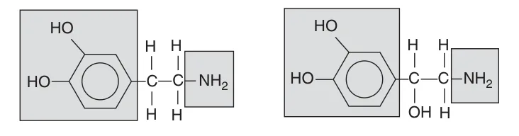<figcaption>Hình 2.1 Cấu trúc hóa học của dopamine (trái) và norepinephrine (phải).</figcaption></figure>
<p>có nhóm amine nhưng thiếu cấu trúc catechol là serotonin (còn gọi là 5-hydroxytryptamine, hay 5-HT), được xếp vào nhóm indoleamine. Các chất dẫn truyền thần kinh quan trọng khác như acetylcholine và glutamate không có cả nhóm catechol lẫn nhóm amine. Một bài tổng quan hay về hóa học thần kinh của dopamine và các chất dẫn truyền thần kinh khác được trình bày trong Cooper và cộng sự (2002).</p>
<p>Cấu trúc hóa học chính xác của dopamine (hoặc bất kỳ chất dẫn truyền thần kinh nào khác) không nhất thiết phản ánh những gì nó làm trong não. Ví dụ, mặc dù có cấu trúc hóa học gần như giống hệt nhau và đều có tác dụng kích thích chung lên hành vi, dopamine và norepinephrine lại có các tác động hành vi và sinh lý rất khác nhau, và thường (thậm chí có lẽ là phần lớn) ức chế tác động của nhau, như sẽ được thảo luận sau. Tương tự, apomorphine bắt chước tác động của dopamine tại synapse cũng như trong các tác động hành vi của nó (chẳng hạn tăng cường khám phá, hoạt động vận động, v.v.), nhưng nó cũng có cấu trúc hóa học rất giống với thuốc morphine, vốn là một chất giảm đau mạnh.</p>
<p>Dopamine và tất cả các chất dẫn truyền thần kinh khác tham gia vào một quá trình dẫn truyền thần kinh mà ở nhiều khía cạnh giống như một chiến dịch quân sự (xem Hình 2.2). Ở vùng gần thân tế bào dopaminergic, tế bào tạo ra chất dopa từ tyrosine (một chất có trong protein) nhờ enzyme tyrosine hydroxylase, enzyme này gắn thêm một nhóm hydroxyl (OH) vào tyrosine, và chất cuối cùng là dopamine sau đó được tạo ra bằng cách tách một nhóm carboxyl (C-O-O-H) và loại bỏ CO2 khỏi nó thông qua tác động của dopa decarboxylase (Bước 1). Toàn bộ quá trình này giống như việc tập kết và lưu trữ vũ khí cùng các vật tư quân sự khác. Sau khi được tạo ra, sự di chuyển của dopamine giống như một tuyến tiếp vận hậu cần khi nó đi dọc theo sợi trục của neuron và cuối cùng đến đầu tận cùng của sợi trục (Bước 2). Tại đây, dopamine được nạp vào các túi synap cho đến khi được giải phóng tại màng của neuron thứ nhất (được gọi là màng tiền synapse) (Bước 3). Một loại thuốc nổi tiếng giúp “dỡ hàng” dopamine tại màng tiền synapse là amphetamine. Khi đến màng tiền synapse, các phân tử dopamine băng qua khe synapse, một khoảng trống nhỏ chứa đầy dịch chỉ rộng</p>
<p>20–40 nanomet (chưa đến 1/10.000 milimet), và nhanh chóng tiếp xúc với neuron kế tiếp. Sự tiếp xúc này, tương tự như việc thiết lập một đầu cầu đổ bộ, diễn ra tại vị trí thụ thể hậu synapse, nơi chứa một phân tử protein mà dopamine gắn vào giống như chìa khóa tra vào ổ khóa (Bước 4). Khi đã bị chiếm giữ, một thụ thể điển hình sau đó sẽ làm thay đổi dòng ion đi vào màng của neuron và từ đó tạo ra một tín hiệu điện nhỏ. Dopamine có ít nhất năm loại thụ thể: D1, D2, D3, D4 và D5, mặc dù thụ thể D1 và D2 là phổ biến nhất và được nghiên cứu kỹ nhất cho đến nay, trong đó thụ thể D2 dường như có tầm quan trọng lớn hơn đối với các rối loạn lâm sàng như tâm thần phân liệt, còn thụ thể D1 được nghiên cứu nhiều hơn trong mối liên hệ với trí nhớ làm việc (Civelli, 2000). Cũng giống như trong một chiến dịch quân sự, các loại thuốc và chất dẫn truyền thần kinh đối lập (“đối kháng”) có thể ở các mức độ khác nhau chặn đứng quá trình dẫn truyền dopamine bằng cách chiếm giữ các vị trí thụ thể dopamine trên màng hậu synapse, qua đó ngăn cản sự kích thích tế bào hậu synapse. Có lẽ chất đối kháng dopamine nổi tiếng nhất là thuốc lâm sàng được sử dụng rộng rãi haloperidol, trong khi apomorphine là thuốc “chủ vận” tiêu biểu nhất kích thích thụ thể dopamine hậu synapse và được dùng để bắt chước tác động của dopamine. Các chất khác có thể ảnh hưởng đến cách phân tử dopamine bị phân giải và tái thu hồi vào neuron tiền synapse để chuẩn bị cho một lần băng qua khe synapse tiếp theo, giống như thuật ngữ quân sự “rút lui và tập hợp lại” (Bước 5). Một chất phân giải dopamine là monoamine oxidase, mà việc ức chế nó được sử dụng trong lâm sàng để làm tăng nguồn cung dopamine và norepinephrine tại synapse. Những loại thuốc nổi tiếng ngăn chặn sự tái hấp thu dopamine trở lại neuron tiền synapse là cocaine và amphetamine, khiến dopamine tạm thời có nguồn cung cao tại synapse, qua đó làm tăng sự dẫn truyền. Một khi vị trí thụ thể trên màng đã bị chiếm giữ, những lần chiếm giữ sau đó tại vị trí này thường trở nên hiệu quả hơn (hoặc trong một số trường hợp, kém hiệu quả đi) do những thay đổi về độ nhạy của màng (điều này cho phép xảy ra quá trình học tập và sự dung nạp đối với thuốc).</p>
<p>Các chất dẫn truyền thần kinh khác có thể điều biến thêm hoạt động dẫn truyền dopaminergic. Nhìn chung, các chất dẫn truyền nổi tiếng như serotonin, norepinephrine và thậm chí acetylcholine đều làm thay đổi sự giải phóng dopamine ở nhiều vùng khác nhau của não, thường là bằng cách ức chế nó (Gervais và Rouillard, 2000; Previc, 1996, 2006, 2007; Pycock và cộng sự, 1975). Thật vậy, sự ức chế giải phóng dopamine bởi serotonin có thể xem là tương tác hóa học thần kinh quan trọng nhất về mặt lâm sàng trong não (Damsa và cộng sự, 2004), đặc biệt ở các vùng dưới vỏ và vỏ não thuộc hệ viền và bụng-giữa (Winstanley và cộng sự, 2005), và nó sẽ được đề cập đặc biệt trong Chương 3 và Chương 4. Hầu hết các tương tác của dopamine với</p>
<figure class="bookfig">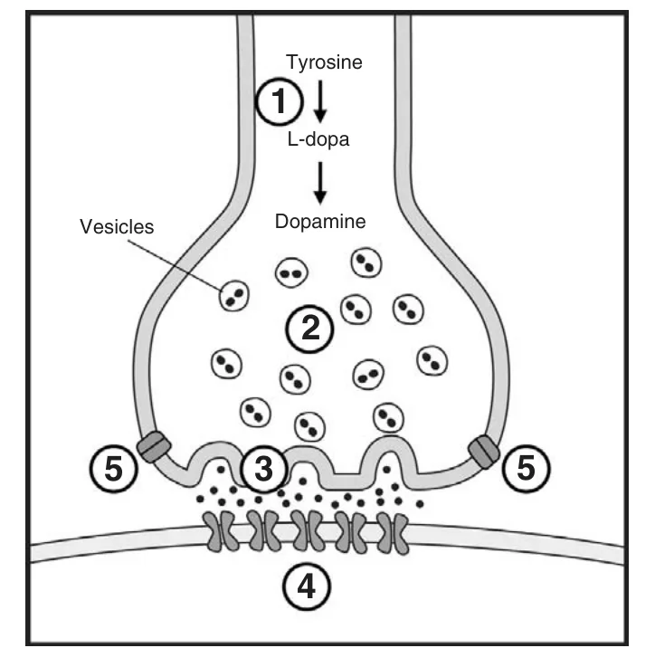<figcaption>Hình 2.2 Neuron dopamine và synapse: (1) tổng hợp dopamine; (2) vận chuyển và dự trữ dopamine trong các túi synap; (3) giải phóng dopamine từ các tận cùng tiền synapse; (4) tiếp nhận các phân tử dopamine tại các thụ thể dopamine ở neuron hậu synapse; và (5) tái hấp thu dopamine trở lại neuron tiền synapse.</figcaption></figure>
<p>các chất dẫn truyền khác có lẽ không xảy ra tại chính synapse dopaminergic mà xảy ra tại các synapse khác trên cùng một neuron. Do sự cộng hưởng không gian và thời gian của các tín hiệu điện từ nhiều synapse khác nhau trên các cấu trúc tận cùng (gọi là đuôi gai) của neuron tiếp nhận, các ảnh hưởng điều biến tại những synapse không phải dopaminergic có thể dễ dàng tác động đến đầu ra cuối cùng của các neuron xử lý dẫn truyền dopaminergic cũng như các loại dẫn truyền hóa học khác. Ví dụ, một điện thế ức chế (chẳng hạn từ một neuron serotonergic) tại một synapse có thể triệt tiêu một điện thế kích thích (chẳng hạn từ một neuron dopaminergic) tại một synapse khác, qua đó ngăn không cho sự kích thích neuron kế tiếp xảy ra.</p>
<p>Không có gì đặc biệt trong cấu trúc chung của synapse dopaminergic được minh họa ở Hình 2.2. Tuy nhiên, các loại thuốc tác động lên dopamine và ảnh hưởng của chúng đối với hành vi cho chúng ta biết rất nhiều về vai trò của dopamine trong hành vi. Ví dụ, có hai chất đặc biệt đáng chú ý trong quá trình tổng hợp dopamine – tyrosine (lấy từ các nguồn thực phẩm giàu protein như thịt và cá) và phenylalanine, mà việc không chuyển hóa được chất này thành tyrosine góp phần gây ra các suy giảm tâm thần nghiêm trọng trong bệnh phenylketonuria (xem Chương 4). Tyrosine sau đó được chuyển hóa thành dopa, đây là loại thuốc hiệu quả nhất được dùng để điều trị các rối loạn vận động tự chủ nghiêm trọng trong bệnh Parkinson, căn bệnh mà hệ thống dopaminergic liềm đen – thể vân trong não (xem phần tiếp theo) bị thoái hóa nặng nề. Amphetamine, chất làm tăng cường giải phóng dopamine tại màng tiền synapse, nhìn chung kích thích hành vi và ít nhất ở liều thấp giúp cải thiện sự tập trung tinh thần, đó là lý do một loại thuốc liên quan gọi là methylphenidate hữu ích trong điều trị rối loạn thiếu chú ý, ngay cả khi việc lạm dụng mạn tính amphetamine có thể gây ra các vấn đề tâm lý nghiêm trọng, bao gồm hoang tưởng tự cao. Ở cấp độ hậu synapse, các chất đối kháng như haloperidol được gọi là thuốc chống loạn thần “điển hình” vì chúng đã (và vẫn đang) được sử dụng rộng rãi để điều trị tâm thần phân liệt, một rối loạn tâm thần tăng dopaminergic đặc trưng bởi hoang tưởng và tư duy kỳ quặc, vô tổ chức (tức loạn thần). Cuối cùng, cocaine là một chất kích thích mạnh ngăn chặn sự tái hấp thu dopamine trở lại neuron tiền synapse, qua đó làm tăng nguồn cung dopamine trong khe synapse. Việc cocaine và amphetamine đều là những chất gây nghiện cao cho thấy một số hệ thống dopaminergic gắn liền với quá trình thèm muốn phần thưởng như thế nào (xem Chương 3).</p>
<h3>2.2 Giải phẫu thần kinh của dopamine</h3>
<p>Quan trọng không kém trong việc hiểu dopamine làm gì trong não là biết nó nằm ở đâu. Để hiểu rõ hơn về sự định khu của nó, cần nắm một số điểm quan trọng về cách não bộ được tổ chức và mô tả. Hình ảnh não trong Hình 2.3 cho thấy ba trục chính của não. Trục dọc được gọi là trục trước (trán) – sau (chẩm), trục thẳng đứng được gọi là trục lưng (trên) – bụng (dưới), và trục ngang hướng từ trái sang phải và được chia thành các vùng ngoài (bên) hoặc các vùng trong (giữa). Ngoài ra, não có thể được chia thành phần nông nhất – gọi là vỏ não (cortex), theo tiếng Latinh nghĩa là vỏ cây – và các vùng dưới vỏ nằm bên dưới. Ví dụ, nếu ai đó xác định một vùng cụ thể là vỏ não trán lưng-bên trái, điều này có nghĩa là nó nằm về phía trước trên ở phần ngoài của nửa (bán cầu) bên trái của não.</p>
<p>Cũng cần nhận thức rằng, như thể hiện trong Hình 2.3, cả phần vỏ não và phần dưới vỏ của não đều bao gồm nhiều</p>
<figure class="bookfig">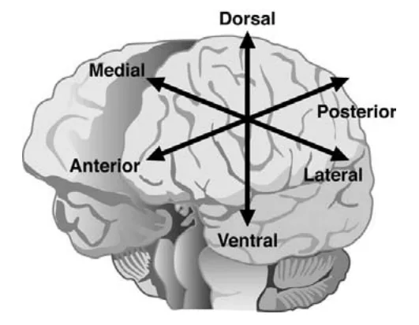<figcaption>Hình 2.3 Các hướng chính và danh pháp được sử dụng trong định khu giải phẫu não.</figcaption></figure>
<p>phân vùng. Tân vỏ não nhìn chung được chia thành bốn “thùy” chính:</p>
<p>1..thùy chẩm, nằm ở phía sau cùng của đầu và là thùy duy nhất chuyên trách một chức năng cảm giác đơn lẻ (thị giác); 2..thùy đỉnh, nằm ở phía trên sau của đầu và tham gia chủ yếu vào các quan hệ không gian cũng như sự tích hợp của các hệ thống cảm giác và vận động trong không gian gần cơ thể; 3..thùy thái dương, nằm bên dưới một rãnh lớn gọi là rãnh Sylvius ở phần sau dưới của não và tham gia vào việc nhận diện đồ vật, trí nhớ, ngôn ngữ cùng các chức năng khác gắn với không gian xa hơn; và 4..thùy trán, nằm phía trước rãnh lớn gọi là rãnh Rolando và giữ vai trò quan trọng trong kiểm soát vận động và nhận thức.</p>
<p>Một loại vỏ não cuối cùng nằm ở phía giữa trong não và bao quanh đồi thị, hạ đồi và thể chai – cấu trúc nối liền hai bán cầu. Vỏ não cổ hơn này được gọi là vỏ não viền và bao gồm các cấu trúc như hồi hải mã và hồi đai, đồng thời có các kết nối quan trọng với các trung tâm điều hòa cảm xúc như hạch hạnh nhân và hạ đồi. Về phần dưới vỏ, các vùng quan trọng nhất bao gồm:</p>
<p>1..thân não, chứa não giữa và não sau cùng các trung tâm đảm nhiệm những chức năng cơ bản của cơ thể, bao gồm giấc ngủ và sự tỉnh thức; 2..não trung gian, chứa trung tâm chuyển tiếp và tích hợp chính gọi là đồi thị (nơi hợp nhất các đường dẫn truyền cảm giác và vận động chính với tín hiệu đầu vào từ các trung tâm tỉnh thức của thân não) và hạ đồi (nằm ngay bên dưới đồi thị và duy trì phần lớn các kết nối nội tiết với phần còn lại của cơ thể); và 3..não trước dưới vỏ, chứa hạch nền, từ lâu đã được biết là tham gia vào kiểm soát vận động bậc cao nhưng gần đây cũng được ghi nhận có vai trò quan trọng trong nhận thức.</p>
<p>Não giữa và thân não có tầm quan trọng rất lớn vì chúng chứa các thân tế bào sản sinh ra nhiều chất dẫn truyền thần kinh, bao gồm bốn chất chính: acetylcholine, dopamine, norepinephrine và serotonin. Các đường phóng chiếu của những thân tế bào này có thể vươn tới tận vỏ não, mặc dù đối với acetylcholine, nguồn đầu vào chính tới vỏ não xuất phát từ nhân nền Meynert, nằm ở não trước vùng bụng. Các hệ thống noradrenergic và serotonergic chính lần lượt bắt nguồn từ nhân lục (locus coeruleus) và các nhân đường giữa lưng (dorsal raphe nuclei). Số lượng neuron trực tiếp tham gia vào các hệ thống hóa học thần kinh quan trọng này nhỏ đến đáng ngạc nhiên – ở người, chỉ có 200.000 neuron mang các đường phóng chiếu serotonergic từ não giữa và chỉ khoảng một triệu neuron mang toàn bộ các sợi dopaminergic từ vùng này (Rosenzweig và cộng sự, 2002). Tất nhiên, đây chỉ là một phần rất nhỏ trong số ước tính khoảng 100 tỷ neuron trong não và gợi ý rằng những thay đổi lớn trong chức năng não, ít nhất trong một số trường hợp, có thể chỉ liên quan trực tiếp đến một tỷ lệ nhỏ tế bào não.</p>
<p>Các hệ thống dopamine chính bắt nguồn từ một số nhóm tế bào khác nhau gần đỉnh não giữa ở một vùng gọi là mái giữa (tegmentum) (Fallon và Loughlin, 1987; Iversen, 1984). Ở loài gặm nhấm, có hai đường phóng chiếu chính chạy về phía bụng từ vùng mái giữa – đường liềm đen – thể vân và đường trung não – viền. Một đường phóng chiếu dopaminergic nhỏ hơn ở loài gặm nhấm được gọi là hệ thống trung não – vỏ não chạy song song với đường trung não – viền nhưng ở động vật linh trưởng được thay thế bởi các vòng lặp dopaminergic tương hỗ giữa thể vân lưng và vỏ não trước trán bên một mặt, và giữa thể vân bụng gắn với hệ trung não – viền (chứa nhân nằm – nucleus accumbens) và các đường dẫn truyền trước trán bụng-giữa mặt khác (Cummings, 1995; Mega và Cummings, 1994; Tekin và Cummings, 2002). Còn có những hệ thống dopaminergic khác ít được nghiên cứu hơn, ngắn hơn và không bắt nguồn từ hai nguồn kinh điển ở não giữa, chẳng hạn như hệ thống củ – phễu (tuberoinfundibular) chạy từ hạ đồi đến tuyến yên và các đường phóng chiếu từ hệ thống trung não – viền đến nhân trước thị giữa của hạ đồi, cả hai đều tham gia điều hòa các tương tác sinh lý với phần còn lại của cơ thể (xem Mục 2.4). Một minh họa về một số hệ thống dopaminergic chính</p>
<figure class="bookfig">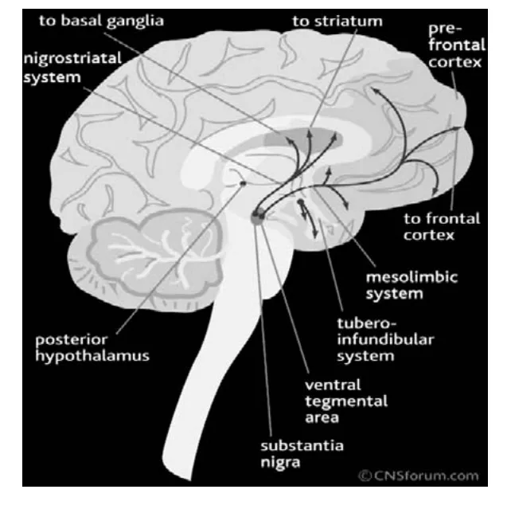<figcaption>Hình 2.4 Một số hệ thống dopamine chính, nhìn theo mặt cắt đứng dọc giữa. ª CNSforum.com.</figcaption></figure>
<p>được thể hiện trong Hình 2.4, không bao gồm các vòng vỏ não bên và giữa rộng lớn nối với cấu trúc thể vân lưng và hệ trung não – viền tương ứng.</p>
<p>Đường dẫn truyền liềm đen – thể vân từ đây trở đi sẽ chủ yếu được gọi là đường dẫn truyền dopaminergic bên, vì nó đi ở phía bên so với hệ thống trung não – viền. Nó bắt nguồn từ phân nhóm tế bào A9 ở vùng mái giữa và nối liền liềm đen của não giữa với phần lưng của thể vân, bao gồm nhân bèo sẫm và nhân đuôi. Các cấu trúc này, cùng với cầu nhạt, được gọi chung là hạch nền và có nồng độ dopamine cao nhất trong toàn bộ não. Đường dẫn truyền liềm đen – thể vân tham gia mạnh mẽ vào hầu hết các loại hành động vận động và được xem là một phần của hệ vận động ngoại tháp.2 Theo tổng quan của Iversen (1984), tổn thương một bên ở các đường dopaminergic liềm đen – thể vân dẫn đến suy giảm nghiêm trọng hành vi vận động, bao gồm giảm hoạt động vận động ở các chi phía đối diện (hoặc đối bên) với bên não bị tổn thương cũng như</p>
<p>2 Ngược lại, hệ vận động tháp trực tiếp hơn – với các sợi trục vỏ não đi thẳng xuống tủy sống – bắt nguồn từ các tế bào hình tháp khổng lồ ở vỏ não vận động sơ cấp nằm ngay phía trước rãnh Rolando.</p>
<p>các bất đối xứng về tư thế và xoay người theo hướng của thể vân bị tổn thương (chẳng hạn xoay sang phải khi tổn thương thể vân phải). Tổn thương hệ thống dopaminergic bên cũng gây ra thêm những khó khăn bậc cao trong việc lập kế hoạch, định thời gian và chuyển đổi hành vi (Previc, 1999). Mặc dù đôi khi người ta cho rằng nhân đuôi gắn kết với các chức năng nhận thức nhiều hơn vận động và điều ngược lại đúng với nhân bèo sẫm, nhưng chụp ảnh não cho thấy cả hai cấu trúc đều tham gia vào cả chức năng vận động lẫn nhận thức (Monchi và cộng sự, 2006; Mozley và cộng sự, 2001). Tổn thương thể vân cũng có thể gây ra khiếm khuyết trong việc chú ý và đáp ứng với kích thích (ví dụ: hội chứng bỏ quên nửa không gian), và khả năng liên kết cũng như dự đoán các kích thích dẫn đến phần thưởng cũng có thể bị suy giảm (Schultz và cộng sự, 1997). Một dấu hiệu cho thấy vai trò của đường dopaminergic liềm đen – thể vân là những gì xảy ra khi các đường này bị tổn thương nặng, như trong bệnh Parkinson. Người mắc bệnh Parkinson gặp tình trạng mất khả năng thực hiện các động tác vận động tự chủ một cách nghiêm trọng, mặc dù họ có thể thực hiện khá tốt các hành vi vận động được khơi gợi bởi thị giác, mang tính phản xạ nhanh hoặc do kích thích hưng phấn tạo ra. Ví dụ, bệnh nhân Parkinson có thể bắt được một quả bóng nếu nó bất ngờ bị ném về phía họ (Glickstein và Stein, 1991) hoặc, như trường hợp một người hàng xóm cũ mắc Parkinson của tôi, di chuyển khá nhanh nhẹn khi một đàn ong bắt đầu tấn công. Hệ thống dopaminergic liềm đen – thể vân cũng có những kết nối quan trọng với vỏ não trước trán, đặc biệt là vùng bên của nó, điều này có thể lý giải các khiếm khuyết nhận thức gặp ở bệnh Parkinson, nhất là những khiếm khuyết liên quan đến sự chú ý, trí nhớ làm việc và chuyển đổi chiến lược (xem Previc, 1999). Thật vậy, việc làm gián đoạn hệ thống hóa học thần kinh dopaminergic bên bằng các chất phá hủy neuron dopaminergic ở một vùng trước trán vốn còn nguyên vẹn về mặt giải phẫu sẽ bắt chước đúng tác động của việc phá hủy giải phẫu vùng này (Brozoski và cộng sự, 1979). Một loại thuốc có thể thúc đẩy hoạt động ở vùng trước trán bên ở mức độ lớn hơn so với các vùng khác là amphetamine (Chudasama và cộng sự, 2005), chất mà như đã lưu ý giúp kích thích giải phóng dopamine và có xu hướng cải thiện sự tập trung tinh thần, ít nhất là ở liều thấp.</p>
<p>Đường dẫn truyền trung não – viền, từ đây trở đi sẽ chủ yếu được gọi là hệ thống dopamine bụng-giữa hoặc giữa, xuất phát ở vị trí hơi lệch vào giữa hơn từ nhóm tế bào A10 ở vùng mái giữa bụng và đi ở phía giữa xuyên qua hệ viền và vỏ não viền. Một trong những cấu trúc dưới vỏ chủ chốt trong đường dẫn truyền này là nhân nằm (nucleus accumbens), nơi có nồng độ dopamine cao và tham gia vào hành vi khám phá, định hướng và động lực/phần thưởng. Hệ thống trung não – viền cũng tương tác với các thành phần vỏ não và dưới vỏ vùng giữa quan trọng, bao gồm hạch hạnh nhân và hồi hải mã (nằm sát vỏ não thái dương giữa), vỏ não đai trước, vỏ não khứu giác và vỏ não trán bụng-giữa. Vùng cuối cùng này được cho là chứa hai phân vùng lớn tương tác sâu rộng với nhau – vỏ não trán ổ mắt, được đặt tên như vậy vì nằm gần hốc mắt hay ổ mắt, và vỏ não trán giữa (Ongur và Price, 2000). Mạng lưới dopaminergic trung não – viền mở rộng được cho là hệ thống chịu trách nhiệm cung cấp phần lớn động lực thúc đẩy, các xung lực sáng tạo và thậm chí cả hành vi hung hăng của chúng ta (de Almeida và cộng sự, 2005), và sự mất mát hành vi nổi bật nhất sau khi vùng này bị tổn thương là mất động lực thúc đẩy. Điều này có thể đặc biệt đúng với phần bụng-giữa của hệ trung não – viền, nơi tương tác với phần vỏ giữa của nhân nằm (Ikemoto, 2007). Ví dụ, tình trạng không nhấn cần gạt để lấy thức ăn và nước uống ở chuột có thể xảy ra ban đầu sau tổn thương hệ trung não – viền (Iversen, 1984), mặc dù con vật vẫn có khả năng thực hiện đúng các cử động chi (khác với trường hợp tổn thương liềm đen – thể vân). Hệ trung não – viền cũng chịu ảnh hưởng nhiều hơn bởi cảm xúc và căng thẳng (Finlay và Zigmond, 1997) và được cho là bị rối loạn nghiêm trọng hơn trong hàng loạt rối loạn lâm sàng, bao gồm tâm thần phân liệt, rối loạn ám ảnh cưỡng chế, rối loạn thiếu chú ý và lạm dụng chất gây nghiện. Nhiều rối loạn trong số này phản ánh sự bất lực của các trung tâm vỏ não trước trán bụng-giữa và bên trong việc ức chế các xung lực động lực và quá trình tư duy nguyên thủy của chúng ta. Một loại thuốc nổi tiếng tác động ưu tiên lên hệ trung não – viền là cocaine (Fibiger và cộng sự, 1992), một chất gây nghiện rất mạnh và khi sử dụng mạn tính sẽ tạo ra hành vi cưỡng chế và loạn thần giống tâm thần phân liệt (Rosse và cộng sự, 1994).</p>
<p>Sự phân biệt kinh điển giữa vai trò của hệ dopaminergic liềm đen – thể vân trong kiểm soát vận động/lập kế hoạch/nhận thức và vai trò của hệ dopaminergic trung não – viền trong động lực thúc đẩy và phần thưởng được chấp nhận rộng rãi, với nhiều cơ sở xác đáng. Xét về hành vi tình dục ở con đực do dopamine điều hòa chẳng hạn, tổn thương hệ liềm đen – thể vân làm suy giảm các khía cạnh vận động của sự giao phối (ví dụ: trèo lên con cái) nhiều hơn so với các hành vi tiền giao phối (mang tính động lực) khi có mặt một con cái đang sẵn sàng tiếp nhận, trong khi điều ngược lại đúng với các tổn thương ở hệ trung não – viền (Hull và cộng sự, 2004). Tuy nhiên, trên thực tế, hai hệ thống này có sự giao tiếp chéo sâu rộng với nhau, đặc biệt là từ các vùng động lực thuộc hệ trung não – viền đến các vùng thể vân lưng tham gia lập trình vận động (Ikemoto, 2007) và chúng rất không đồng nhất, ngay cả ở động vật không phải linh trưởng. Cả vùng trán bên và trán giữa đều phóng chiếu tới thể vân (dù tới các vùng tách biệt nhau), cả thụ thể D1 và D2 đều hiện diện nổi bật trong mỗi hệ thống (Civelli, 2000), hầu hết các loại thuốc đều tương tác ở các mức độ khác nhau với cả hai hệ thống, cả hai hệ thống đều tham gia vào việc khám phá và chuyển đổi hành vi, và sự hoạt hóa quá mức của cả hai hệ thống có thể xảy ra trong nhiều chứng loạn thần khác nhau. Hơn nữa, mỗi hệ thống theo cách riêng của mình dường như đều tham gia vào không gian xa, dù là trong việc cung cấp động lực cơ bản hướng tới các mục tiêu ở xa (trong trường hợp hệ trung não – viền) hay trong việc dự đoán các biến cố môi trường và thực thi các chiến lược vận động cần thiết để đạt được những mục tiêu đó (như trong trường hợp hệ liềm đen – thể vân/trước trán bên) (xem Chương 3).</p>
<p>Tuy nhiên, hệ thống liềm đen – thể vân rõ ràng gắn kết chặt chẽ hơn với vỏ não trước trán bên giàu dopamine, trong khi hệ thống trung não – viền có ái lực lớn hơn với các cấu trúc vỏ não trán giữa. Điều này giải thích tại sao tổn thương giải phẫu kết hợp giữa nhân đuôi giàu dopamine và vỏ não trước trán bên lại gây tàn phá nặng nề đến vậy đối với nhận thức (Tucker và Kling, 1969) và tại sao nó lại ít quan trọng hơn sự hoạt hóa quá mức của hệ trung não – viền trong rối loạn ám ảnh cưỡng chế và rối loạn lạm dụng chất gây nghiện, vốn liên quan đến sự rối loạn của các cơ chế động lực, phần thưởng và ức chế trong não (Abbruzzese và cộng sự, 1995; Adler và cộng sự, 2000; Bunney và Bunney, 2000; Rosenberg và Keshavan, 1998; Volkow và cộng sự, 2005). Vỏ não trước trán bên thậm chí có thể thực hiện sự kiểm soát ức chế đáng kể đối với hệ thống trung não – viền, dù là trong việc kiểm soát hành vi bốc đồng và cưỡng chế, kiểm soát dòng suy nghĩ dồn dập và các liên tưởng tư duy lỏng lẻo trong tâm thần phân liệt (Bunney và Bunney, 2000), hay làm dịu phản ứng dopaminergic của hệ trung não – viền trước căng thẳng, đặc biệt là ở phần vỏ của nhân nằm (Finlay và Zigmond, 1997).</p>
<p>Bên cạnh ý nghĩa trong việc giải thích các rối loạn lâm sàng tăng dopaminergic khác nhau, mức độ hoạt hóa tương đối của hệ thống dopaminergic giữa và bên có thể giải thích cả sự biến thiên bình thường trong các kiểu nhân cách dopaminergic, với kiểu dopaminergic bên thiên về sự nghiêm túc và tập trung hơn, còn kiểu dopaminergic giữa thiên về sự bốc đồng và sáng tạo hơn (xem Chương 3). Nó cũng có thể giải thích nhiều trạng thái biến đổi ý thức như mơ, trong đó hệ thống dopaminergic bụng-giữa có thể được giải phóng (Solms, 2000), hoặc các phản ứng giải thể nhân cách, trong đó hệ thống dopaminergic trước trán bên có thể hoạt động mạnh hơn (xem Sierra và Berrios, 1998), dẫn đến trạng thái “suy nghĩ mà không có cảm xúc.” Ngược lại, một hệ trung não – viền kém hoạt động có thể khiến một cá nhân có năng lực trí tuệ rơi vào tình trạng thiếu động lực – được gọi là mất ý chí (abulia), mất sinh lực (adynamia), hoặc thờ ơ vô cảm (apathy) (Al-Adawi và cộng sự, 2000; Solms, 2000; Tekin và Cummings, 2002). Sự mất động lực này về cơ bản chính là điều đã xảy ra khi thủ thuật cắt thùy trán trước – cắt xuyên qua chất trắng ở đáy thùy trán – từng được thực hiện như một phương pháp được chấp nhận trong điều trị nhiều rối loạn tâm thần kinh khác nhau. Những phẫu thuật như vậy ngày nay đã được thay thế bằng các liệu pháp dược lý kháng dopaminergic ôn hòa hơn, vốn cũng làm giảm mức độ động lực một cách tương tự (Solms, 2000).</p>
<p>Một khía cạnh quan trọng khác trong giải phẫu thần kinh của dopamine ở người là dopamine không bị giới hạn ở một vài vùng vỏ não như ở các loài động vật có vú bậc thấp (Berger và cộng sự, 1991; Gaspar và cộng sự, 1989). Ở động vật bậc thấp, dopamine chủ yếu nằm ở các vùng trán chứa vỏ não vận động sơ cấp và liên hợp, cũng như ở các trung tâm động lực vùng bụng-giữa như hồi đai trước và nhân nằm, phù hợp với vai trò quan trọng của dopamine trong hoạt động vận động hướng mục tiêu. Tuy nhiên, ở linh trưởng và con người, dopamine được tìm thấy với nồng độ cao ở hầu hết các vùng vỏ não như một phần của sự mở rộng lớn tổng thể của các hệ thống dopaminergic (Gaspar và cộng sự, 1989). Dù vậy, dopamine không phân bố đồng đều khắp não, ngay cả ở người. Dopamine có nồng độ cao hơn ở các vùng trán và trước trán và dày đặc hơn ở các vùng sau phía bụng so với phía lưng. Các gradient trước-sau và bụng-lưng của dopamine có ý nghĩa chức năng, ở chỗ các vùng phía trước tham gia vào việc khởi phát tự chủ hành vi vận động còn các vùng sau phía bụng tham gia nhiều hơn vào sự chú ý đối với không gian xa, cả hai đều nhất quán với vai trò của dopamine trong việc điều phối các hành động hướng mục tiêu nhắm vào không gian ngoài cơ thể (xem Chương 3). Ngược lại, các vùng đỉnh-chẩm phía lưng của não tham gia vào tương tác thị giác–tay và hành vi tiêu thụ trong không gian gần cơ thể lại có tỷ lệ norepinephrine trên dopamine tương đối cao hơn (Brown và cộng sự, 1979). Những vùng khác có lượng dopamine suy giảm là các vùng não phía sau chứa các biểu diễn cảm giác sơ cấp của xúc giác, thính giác và đặc biệt là thị giác. Thật vậy, dopamine thực sự có thể bị ức chế ở nhiều phần của não trong quá trình kích thích cảm giác (Previc, 2006), đó là lý do tại sao các hiện tượng dopaminergic bất thường như ảo giác dễ xảy ra hơn khi bị cô lập cảm giác, khi mơ, hoặc khi có các gián đoạn cảm giác bên ngoài khác khiến các vùng não phía trước bắt đầu tự “sáng chế” ra tri giác của riêng chúng (xem Mục 3.1.3 cũng như Previc, 2006). Sự chiếm ưu thế của dopamine ở các vùng vỏ não liên hợp, nơi diễn ra quá trình xử lý cảm giác bậc cao hoặc các tương tác cảm giác đa phương thức, cho thấy dopamine đặc biệt thích hợp để tạo ra các kết nối giữa những kích thích và sự kiện rồi sắp xếp chúng thành các kế hoạch tinh thần. Điều này có lợi trong việc kích thích sự sáng tạo cũng như trong tư duy và hoạch định chiến lược “ngoại tuyến” (off-line), vốn là những thành phần quan trọng của suy luận trừu tượng. Nhưng tư duy sáng tạo tách rời khỏi mọi thực tại bên ngoài (ví dụ: phản hồi cảm giác từ cơ thể và môi trường) cũng có thể nguy hiểm, dưới dạng những liên tưởng tư duy kỳ quặc mà hoạt động dopaminergic quá mức thường tạo ra (xem Chương 4).</p>
<p>Một thay đổi quan trọng khác về vai trò chức năng của dopamine từ động vật có vú bậc thấp sang linh trưởng được phản ánh qua sự phân bố khác nhau của dopamine giữa các lớp vỏ não. Một mảnh vỏ não chất xám điển hình ở người có sáu lớp, trong đó lớp thứ hai tính từ dưới lên (Lớp 5) chủ yếu chứa các đường phóng chiếu đi xuống trở lại các vùng dưới vỏ, lớp thứ ba tính từ dưới lên (Lớp 4) chủ yếu chứa các đường phóng chiếu từ dưới vỏ đi lên vỏ não, và lớp trên cùng (Lớp 1) chứa số lượng tế bào ít hơn nhưng có nhánh đuôi gai khổng lồ và một số lượng lớn kết nối bên trong và xuyên suốt toàn bộ vỏ não. Kích thước, mật độ neuron và hình dạng khác nhau của các lớp này ở các vùng vỏ não khác nhau là cơ sở cho việc phân loại giải phẫu các vùng não khác nhau, mà theo sơ đồ được sử dụng rộng rãi của Brodmann, lên tới hơn năm mươi vùng (xem Rosenzweig và cộng sự, 2002). Ví dụ, các vùng vỏ não vận động gửi các mệnh lệnh vận động xuống dưới thường có Lớp 5 lớn, trong khi các vùng vỏ não tham gia xử lý cảm giác thường có Lớp 4 lớn vì chúng nhận các đường phóng chiếu đáng kể từ các trạm chuyển tiếp dưới vỏ, chủ yếu ở đồi thị. Sự khác biệt lớn về phân lớp giữa linh trưởng và hầu hết các loài động vật có vú khác là mật độ neuron dopaminergic ở Lớp 1 cao hơn nhiều ở linh trưởng (Gaspar và cộng sự, 1989). Ở loài gặm nhấm, hàm lượng dopaminergic của não đồng đều hơn giữa các lớp vỏ não, mặc dù có phần lớn hơn ở hai tầng dưới (nơi mang nhiều tín hiệu mệnh lệnh vận động). Ngược lại, hàm lượng dopaminergic của não linh trưởng, ngoài việc lớn hơn nhiều về tổng thể, còn đặc biệt chiếm ưu thế ở Lớp 1, nơi có phần lớn các kết nối với những vùng vỏ não khác cũng như với thể vân và tham gia nhiều hơn vào việc điều phối hoạt động trong các thao tác nhận thức.</p>
<p>Điều thú vị về khía cạnh này là các neuron dopamine ở Lớp 1 có sự phân nhánh và kết nối lớn hơn, có nhiều khả năng nhận tín hiệu đầu vào từ các đường liềm đen – thể vân hơn, và có nhiều khả năng không đồng định vị với neurotensin hơn (Berger và cộng sự, 1991), một chất hóa học thần kinh tham gia vào các hành vi mang tính động lực như ăn và uống. Phát hiện này gợi ý rằng hệ thống dopaminergic bên ít phụ thuộc vào động lực hơn có thể đã mở rộng một cách chọn lọc ở người so với hệ trung não – viền. Một dấu hiệu khác cho thấy sự mở rộng vượt trội của hệ thống dopaminergic bên trong quá trình tiến hóa loài người là sự gia tăng khổng lồ của thể vân ở người, nơi chứa nồng độ dopamine cao nhất trong não. Như đã lưu ý ở Chương 1, thể vân gần như tăng gấp đôi về mặt tương đối từ tinh tinh sang người (Rapoport, 1990), khiến nó trở thành vùng não có mức tăng tỷ lệ lớn nhất ngoài tân vỏ não, vốn cũng rất giàu dopamine.</p>
<h3>2.3 Dopamine và bán cầu trái</h3>
<p>Sự phân bố của dopamine ở người giống với các loài linh trưởng khác, mặc dù nó tiếp tục mở rộng cả về mặt tương đối lẫn tuyệt đối và được bên hóa (lateralized) mạnh mẽ hơn nhiều so với các loài linh trưởng khác. Thật vậy, sự bên hóa của hoạt động dopamine – lớn hơn ở bán cầu trái ở đa số người, đặc biệt tại các vùng bụng của nó (Previc, 1996, 2007) – có thể chính là yếu tố sinh học thần kinh quan trọng nhất lý giải các năng lực trí tuệ và tính cách độc đáo của bán cầu đó. Sự bên hóa của dopamine đã được tìm thấy trong các phép đo hoạt động dopamine sau khi chết và trong hoạt động não bên hóa sau khi dùng thuốc dopaminergic (Flor-Henry, 1986; Previc, 1996; Tucker và Williamson, 1984, xem các bài tổng quan) cũng như gần đây hơn trong các nghiên cứu chụp ảnh não đo khả năng gắn kết D2 (Larisch và cộng sự, 1998; Vernaleken và cộng sự, 2007). Lượng dopamine lớn hơn ở thể vân của một bán cầu gây ra sự xoay về phía bên kia và sự thuận chân trước (chi trước) đối bên ở động vật, điều này có lẽ lý giải sự chiếm ưu thế của xu hướng xoay sang phải và thuận tay phải ở người (de la Fuente-Fernandez và cộng sự, 2000; Previc, 1991). Chứng loạn động (những cơn bùng phát vận động không thể kiểm soát) liên quan đến hoạt động dopamine quá mức mang tính bù trừ sau khi sử dụng mạn tính các chất đối kháng dopamine biểu hiện rõ hơn ở bên phải (tức là ở bán cầu trái) (Waziri, 1980), trong khi tình trạng cứng đờ vận động trong bệnh Parkinson (liên quan đến giảm hoạt động dopamine) thường xuất hiện đầu tiên ở bên trái cơ thể (tức là ở bán cầu phải) (Mintz và Myslobodsky, 1983). Bán cầu trái cũng chiếm ưu thế trong các rối loạn tâm lý liên quan đến dopamine quá mức, như hưng cảm và tâm thần phân liệt (xem Chương 4), và nó cũng quan trọng hơn trong mơ, ảo giác, thiền định và các trạng thái biến đổi ý thức khác mà dopamine giữ vai trò chủ đạo (xem Previc, 2006). Các bằng chứng gián tiếp khác ủng hộ sự chiếm ưu thế của dopaminergic ở bán cầu trái là sự vượt trội của bán cầu này về các kỹ năng vận động tự chủ cũng như các kỹ năng ngữ pháp, suy luận, trí nhớ làm việc và các kỹ năng trí tuệ trừu tượng khác, tất cả đều phụ thuộc vào dopamine (Previc, 1999). Ngoài ra, bán cầu trái ở người có thể quan trọng hơn trong việc khởi phát bạo lực (Andrew, 1981; Elliott, 1982; Mychack và cộng sự, 2001; Pillmann và cộng sự, 1999), mặc dù các tổn thương vỏ não trái gần cực trán thực sự có thể làm tăng sự hung hăng do làm mất sự ức chế của hệ dopaminergic bên đối với hệ trung não – viền trong cùng bán cầu đó (Paradiso và cộng sự, 1996). Ngược lại, bán cầu trái lại kém hơn trong hầu hết các hành vi xã hội và cảm xúc (Borod và cộng sự, 2002; Perry và cộng sự, 2001; Weintraub và Mesulam, 1983), những hành vi có thể bị phá vỡ bởi dopamine quá mức (xem Previc, 2007).</p>
<p>Quá trình tiến hóa khiến dopamine chiếm ưu thế ở bán cầu trái của hầu hết con người như thế nào vẫn chưa được hiểu hoàn toàn. Tuy nhiên, một giả thuyết hàng đầu (xem Previc, 1996) cho rằng nồng độ dopamine lớn hơn ở bán cầu trái là hệ quả gián tiếp của nồng độ serotonin và norepinephrine lớn hơn ở bán cầu phải, mà như đã đề cập trước đó, có tác dụng ức chế dopamine trong cùng bán cầu (chẳng hạn Pycock và cộng sự, 1975; Previc, 1996). Hoạt động serotonergic và noradrenergic lớn hơn ở bán cầu phải có thể bắt nguồn từ sự chiếm ưu thế của cơ quan tiền đình bên trái và các đường phóng chiếu chủ yếu bắt chéo sang đối bên của nó tận cùng ở bán cầu phải (Previc, 1991, 1996). Như đã lưu ý ở Chương 1, rất có khả năng sự bất đối xứng của các cơ quan sỏi tai (otolith) – vốn quan trọng trong việc cảm nhận trọng lực và duy trì kiểm soát tư thế – bắt nguồn từ một môi trường quán tính-trọng lực bất đối xứng trong tử cung, được tạo ra bởi tư thế nằm lệch bên của thai nhi (Previc, 1991). Các cơ quan sỏi tai từ lâu đã được biết là có ảnh hưởng đến các chất dẫn truyền thần kinh giao cảm norepinephrine và serotonin, bởi vì sự kích thích giao cảm rất cần thiết để duy trì nguồn cung cấp máu bình thường lên não khi cơ thể thay đổi tư thế so với trọng lực và giúp cơ thể tự lấy lại thăng bằng khi bị ngã (xem Previc, 1993; Yates, 1996; Yates và Bronstein, 2005). Cơ sở tiền đình cho sự bên hóa hóa học thần kinh và chức năng nhất quán với thực tế rằng việc thiếu chức năng tiền đình bình thường làm giảm đáng kể tỷ lệ thuận tay phải, vốn phản ánh hàm lượng dopaminergic lớn hơn của bán cầu trái (Previc, 1996). Lý thuyết tiền đình về sự bên hóa đại não còn được củng cố thêm bởi tầm quan trọng của các tín hiệu đầu vào tiền đình đối với các mạng lưới tri giác và vận động lấy cơ thể làm trung tâm, vốn điều phối định hướng mạnh hơn của bán cầu phải về không gian quanh cơ thể thay vì không gian xa (Previc, 1998). Liệu có bất kỳ yếu tố nguyên thủy nào khác ảnh hưởng đến sự bên hóa của dopamine sang bán cầu trái – cùng với những năng lực nhận thức chính mà nó hỗ trợ – hay không thì vẫn chưa rõ. Tuy nhiên, như đã lưu ý ở Chương 1, bất kỳ nguyên nhân nào khác của sự bên hóa não bộ đều khó có khả năng mang tính di truyền, do không có sự khác biệt giữa các cặp song sinh cùng trứng và khác trứng về mức độ tương đồng trong bên hóa não và cũng chưa có gen nào được biết đến có ảnh hưởng đến chiều hướng bên hóa đại não ở người.</p>
<h3>2.4 Dopamine và hệ thần kinh tự chủ</h3>
<p>Một trong những khía cạnh quan trọng nhất trong vai trò của dopamine ở não liên quan đến sự tham gia của nó vào hệ thần kinh tự chủ. Hai phần chính của hệ tự chủ là hệ giao cảm, làm tăng mức độ kích thích và trao đổi chất của cơ thể, và hệ phó giao cảm, nhìn chung làm dịu cơ thể và giảm trao đổi chất (Rosenzweig và cộng sự, 2002). Các chức năng giao cảm chủ chốt, được điều hòa trực tiếp bởi các cấu trúc thân não và hạ đồi dưới ảnh hưởng của các vùng và hệ thống não khác như hệ tiền đình, bao gồm tăng cung lượng tim, co mạch (để dồn máu tới cơ bắp và não), tăng sử dụng oxy, chuyển hóa dự trữ mỡ thành đường và tăng thân nhiệt. Ngược lại, hệ phó giao cảm tham gia vào việc giảm cung lượng tim, giảm sử dụng oxy, tăng giãn mạch và tỏa nhiệt, và giảm tiêu hóa.</p>
<p>Dopamine được cho là phát huy tác dụng chủ yếu theo hướng phó giao cảm trong não, ở chỗ nó giúp:</p>
<p>1..hạ thân nhiệt, một phần bằng cách kích thích tiết mồ hôi (Lee và cộng sự, 1985); 2..giảm hô hấp trong tình trạng thiếu oxy, một phần bằng cách hạ nhiệt độ (Barros và cộng sự, 2004); 3..tăng giãn mạch ngoại biên, điều này quan trọng trong phản ứng cương dương trong hành vi tình dục ở nam giới do dopamine điều hòa (Hull và cộng sự, 2004); và 4..giảm huyết áp (tăng huyết áp) (Murphy, 2000).</p>
<p>Trong hầu hết các tình huống này, tác động của dopamine tương tự như của acetylcholine nhưng trái ngược với của norepinephrine và serotonin, vì hai chất dẫn truyền thần kinh sau này nhìn chung có tác dụng làm tăng trao đổi chất, nhiệt độ, co mạch và sự kích thích (Previc, 2004) nhưng có xu hướng ức chế hành vi tình dục ở con đực (Hull và cộng sự, 2004; Robbins và Everitt, 1982). Các tác động sinh lý và nội tiết của dopamine được thực hiện bởi nhiều hệ thống khác nhau, một trong số đó là đường dẫn truyền củ – phễu đi vào hạ đồi và thùy trước tuyến yên, giúp ức chế sự giải phóng hormone tiết sữa ở nữ giới là prolactin từ tuyến yên. Các lộ trình dopaminergic khác liên quan đến kết nối với nhân trước thị giữa của hạ đồi (nơi điều hòa hành vi tình dục ở nam giới cũng như các tác động phó giao cảm về nhiệt và tim mạch) và dây thần kinh phế vị (nơi kiểm soát các tín hiệu phó giao cảm tới phần còn lại của cơ thể). Các chất chủ vận dopamine mang lại lợi ích lâm sàng trong việc điều trị nhiều rối loạn chức năng tự chủ, bao gồm tăng prolactin máu (Gillam và cộng sự, 2004), tăng huyết áp (Murphy, 2000) và rối loạn cương dương ở nam giới (Giuliano và Allard, 2001). Mối liên hệ sinh lý chặt chẽ giữa các hành vi nam giới và dopamine có sự tương ứng về mặt hành vi qua tác động của testosterone làm tăng dopamine trong não, qua sự chiếm ưu thế của nam giới trong nhiều rối loạn tăng dopaminergic (xem Chương 4), qua sự tích hợp nhiều hành vi nam tính vào nhân cách dopaminergic (xem Chương 3 và 5), và qua phương thức hành vi (ý thức) mang tính nam tính của bán cầu trái giàu dopamine (xem Chương 3).</p>
<p>Vai trò sinh lý của dopamine trong việc làm dịu sự kích thích sinh lý và giảm tiêu thụ oxy cũng như trao đổi chất bổ trợ cho vai trò hành vi của nó trong việc giảm kích thích cảm xúc (tức là tăng sự tách biệt cảm xúc) và duy trì động lực cũng như sự tập trung chú ý trong những môi trường bất định và căng thẳng (xem Chương 3). Trong khi các hệ thống dopaminergic có thể điều hòa một số trạng thái cảm xúc tích cực thoáng qua như phấn chấn và thậm chí hưng phấn tột độ, các mạch dopaminergic có thể đóng vai trò công cụ nhiều hơn trong việc dập tắt sự kích thích cảm xúc tiêu cực góp phần gây ra nỗi sợ hãi và lo âu thông qua việc ức chế các trung tâm như hạch hạnh nhân (Delaveau và cộng sự, 2005; Mandell, 1980). Các tập hợp hành vi chỉ dựa chủ yếu vào phản ứng cảm xúc sẽ phản tác dụng trong một khoảng thời gian kéo dài, cũng giống như việc kích thích giao cảm kéo dài không thể duy trì được về mặt sinh lý.3 Do đó, đến một mức độ nhất định, sự kích thích dopaminergic giúp chúng ta duy trì khả năng kiểm soát hoặc ít nhất là tin rằng chính bản thân mình chứ không phải số phận kiểm soát vận mệnh của chúng ta (Declerck và cộng sự, 2006), một đặc điểm được gọi là “vị trí kiểm soát bên trong” (xem Mục 3.4.2). Tuy nhiên, sự kích thích dopaminergic quá mức để đáp ứng với căng thẳng tâm lý và sinh lý, đặc biệt ở nhân nằm và các cấu trúc vùng giữa khác, có thể dẫn đến ảo giác, hoang tưởng tự cao (kiểm soát nội tại bị phóng đại), và thậm chí loạn thần (Gottesmann, 2002).</p>
<p>Cuối cùng, cần lưu ý rằng vai trò của dopamine (cũng như acetylcholine) trong việc thúc đẩy hoạt động phó giao cảm nhất quán với các tác động phó giao cảm đã được ghi nhận rõ ràng của bán cầu trái, nơi dopamine và acetylcholine chiếm ưu thế (Previc, 1996). Ngược lại, bán cầu phải, vốn bị chi phối bởi hoạt động noradrenergic và serotonergic, lại quan trọng hơn trong sự kích thích giao cảm cũng như việc tri giác và tạo ra cảm xúc (xem Previc, 1996; Wittling và cộng sự, 1998).</p>
<h3>2.5 Tóm tắt</h3>
<p>Điểm qua ngắn gọn về hóa học thần kinh và giải phẫu thần kinh của các hệ thống dopaminergic chính này cho thấy rõ dopamine quan trọng như thế nào đối với não người. Về mặt dược lý học, nhiều loại thuốc quan trọng nhất để chống lại các rối loạn tâm lý có tác động chính tại synapse dopaminergic. Về mặt giải phẫu, các hệ thống dopaminergic trải dài khắp toàn bộ vỏ não và dày đặc nhất ở các lớp vỏ não chủ yếu kết nối với những vùng vỏ não khác. Các</p>
<p>3 Phép ẩn dụ “cái đầu lạnh” tượng trưng cho vai trò kép của dopamine trong việc làm giảm kích thích sinh lý (chẳng hạn hạ nhiệt độ) và thúc đẩy tư duy phân tích; ngược lại, “nóng đầu” hàm ý nhiều hơn là chỉ sự tăng nhiệt độ vùng sọ.</p>
<p>đường phóng chiếu nội vỏ não rộng khắp của hệ thống dopaminergic trước trán ở linh trưởng (và đặc biệt là ở người) chứng tỏ nó là động lực chính của vô số mạch xử lý song song được sử dụng trong các chức năng tâm thần bậc cao. Sự thống trị của dopaminergic cũng lớn nhất ở những vùng như vỏ não trước trán bên, vốn được biết là đóng vai trò then chốt trong nhận thức bậc cao. Sự mở rộng lớn lao của các hệ thống dopaminergic và sự phân bố rộng khắp của chúng trên vỏ não ở linh trưởng đảo ngược tình thế ở loài gặm nhấm, nơi các chất dẫn truyền thần kinh khác dồi dào hơn và phân bố rộng rãi hơn trên vỏ não còn dopamine chỉ giới hạn chủ yếu ở các vùng vận động và trước trán. Ngoài sự mở rộng tổng thể của các hệ thống dopaminergic trong quá trình tiến hóa loài người, hệ thống dopaminergic trước trán/thể vân dường như đã mở rộng tương đối so với các đường trung não – viền/trung não – vỏ não, cho phép trí tuệ lý tính của chúng ta thăng hoa các xung lực trung não – viền cơ bản và bốc đồng hơn, mặc dù hệ trung não – viền tiếp tục đóng vai trò quan trọng trong động lực và sự sáng tạo ở con người hiện đại. Sự bên hóa sâu hơn của dopamine sang bán cầu trái đã giúp biến bán cầu đó thành thành trì của lý luận nhân loại, với những năng lực vượt xa khả năng của bất kỳ loài nào khác, đồng thời là nguồn gốc chính của giấc mơ, ảo giác và các trải nghiệm ngoài cơ thể hỗn loạn hơn khác. Cuối cùng, vai trò của dopamine trong việc duy trì hành vi có kiểm soát, hướng mục tiêu vượt lên trên hành vi bị cảm xúc chi phối, đặc biệt trong lúc căng thẳng, bổ trợ cho vai trò sinh lý của nó trong việc làm dịu phản ứng căng thẳng sinh lý, điều này cho phép những cá nhân có hoạt tính dopaminergic cao hoạt động tốt trong các môi trường khắc nghiệt (Previc, 2004).</p><h2 class="chapter-title">Chương 3 — Dopamine và hành vi</h2>
<h2>3 Dopamine và hành vi</h2>
<p>Vai trò của dopamine trong hành vi bình thường và bất thường đã là chủ đề của một lượng lớn nghiên cứu kể từ khi dopamine lần đầu tiên được chứng minh có liên quan đến bệnh Parkinson, tâm thần phân liệt, cũng như các cơ chế động lực và phần thưởng vào những năm 1960 và 1970. Dựa trên số lượng ấn phẩm khoa học đề cập đến nó, dopamine có thể coi là chất dẫn truyền thần kinh quan trọng nhất hoặc ít nhất là hấp dẫn nhất trong não bộ. Nó có liên quan đến một số lượng rất lớn các hành vi, với tính phổ quát về mặt lý thuyết đến mức người ta từng gọi đùa nó là “chất dẫn truyền của mọi người vì nó làm mọi thứ” (Koob, được trích dẫn trong Blum, 1997).</p>
<p>Có một kết luận chung về dopamine và hành vi mà đại đa số các nhà khoa học thần kinh đều đồng tình: dopamine kích hoạt và thúc đẩy hành vi vận động. Sự gia tăng dẫn truyền dopamine, ít nhất là đến một ngưỡng nhất định, dẫn đến sự hoạt hóa hành vi (ví dụ: tăng khả năng di chuyển, phát âm và các cử động của khuôn mặt cũng như chi trên) và đẩy nhanh các phản ứng vận động; ngược lại, sự suy giảm dẫn truyền dopamine dẫn đến các hội chứng bất động, bao gồm cả chứng câm lặng ở mức độ cực đoan (Beninger, 1983; Salamone và cộng sự, 2005; Tucker và Williamson, 1984). Một trong những đặc điểm nổi bật của tình trạng dư thừa dopamine trong não là hành vi vận động được gọi ở các loài động vật bậc thấp là “hành vi rập khuôn” (stereotypy) – những cử động liên tục, lặp đi lặp lại giống như hành vi cưỡng chế ở người (Ridley và Baker, 1982). Một ví dụ điển hình về vai trò của dopamine trong hành vi vận động là chuột “stargazer” (ngắm sao), loài có nồng độ dopamine rất cao và mức độ hoạt động gấp bốn đến năm lần so với chuột bình thường (Brock và Ashby, 1996; Truett và cộng sự, 1994). Các chất kích thích nổi tiếng làm tăng dẫn truyền dopamine như amphetamine và cocaine được coi là chất kích thích, trong khi các loại thuốc ức chế hoạt động dopaminergic như haloperidol được coi là thuốc an thần kinh chủ yếu. Ví dụ, chất chủ vận dopaminergic quinpirole được biết là tạo ra sự gia tăng gấp sáu lần quãng đường di chuyển trong thử nghiệm trường mở (Szechtman và cộng sự, 1993), và dopamine là chất dẫn truyền thần kinh liên quan nhiều nhất đến các giai đoạn hưng cảm ở người, trong đó mức độ hoạt động tăng cao đột biến (xem Chương 4).</p>
<p>Mặc dù sự thoái hóa của hệ thống dopaminergic liềm đen – thể vân, nếu đủ nghiêm trọng, có thể ảnh hưởng đến hầu hết mọi loại hoạt động vận động, nhưng vai trò chung của dopamine trong việc kích thích hành vi vận động lại ẩn chứa một mức độ đặc hiệu đáng kể trong các tác động vận động của nó. Ví dụ, ở mức độ tỉnh táo bình thường, dopamine kích thích:</p>
<p>1..hành vi thăm dò (tìm kiếm) nhiều hơn so với chải chuốt xã hội ở cự ly gần; 2..hành vi dự đoán (tìm mồi) nhiều hơn so với hành vi tiêu thụ; 3..hoạt động tình dục nhiều hơn so với ăn uống; 4..hành vi tình dục chủ động của giống đực (leo lên) nhiều hơn so với hành vi tiếp nhận của giống cái (ưỡn lưng - lordosis); 5..chuyển động mắt giật cục (saccade) nhiều hơn so với chuyển động mắt bám đuổi mượt mà; và 6..các chuyển động hướng lên trên nhiều hơn so với hướng xuống dưới.</p>
<p>Tất cả các hành vi vận động mà dopamine kích thích một cách chọn lọc này có điểm gì chung? Để có một lời giải thích thỏa đáng, điều cốt yếu trước tiên là phải hiểu vai trò nền tảng của dopamine trong việc điều phối các hành động của chúng ta trong không gian và thời gian xa.</p>
<h3>3.1 Dopamine với không gian và thời gian xa</h3>
<p>Các tương tác của chúng ta trong không gian 3 chiều diễn ra khắp mọi nơi và có lẽ là yếu tố quan trọng nhất định hình nên các con đường dẫn truyền chính của não người (Previc, 1998). Tất cả các hệ thống cảm giác và vận động của chúng ta đều có thể liên kết với các vùng khác nhau của không gian 3 chiều, và hầu như không có hành vi nào (kể cả ngôn ngữ) mà không thể liên kết với các hệ thống không gian cụ thể. Ví dụ, ngay cả ngôn ngữ cũng gắn kết chặt chẽ với hệ thống thính giác và thị giác được sử dụng ở không gian xa hơn là với hệ thống xúc giác và cảm nhận vận động liên quan đến hoạt động với tay trong không gian gần. Tương tự như vậy, tất cả các hành vi của chúng ta đều có thể được xác định bởi phạm vi thời gian của chúng – tức là việc tìm kiếm thức ăn, bạn tình hoặc một mục tiêu thứ cấp như một công việc tốt đều liên quan đến tương lai, trong khi sự đụng chạm và tận hưởng các khoái cảm giác quan lại gắn liền với hiện tại.</p>
<p>Có bốn hệ thống não bộ tổng quát xử lý các tương tác hành vi của chúng ta trong không gian 3 chiều (xem Hình 3.1). Một hệ thống, được gọi là hệ thống cận thân (peripersonal), chủ yếu được sử dụng để thực hiện các thao tác có sự dẫn hướng của thị giác trong không gian gần cơ thể. Hệ thống này thiên về trường thị giác phía dưới, nơi cánh tay thường đặt khi với lấy và đưa đồ vật lên miệng. Một hệ thống khác, được gọi là hệ thống ngoại thân xung quanh (ambient extrapersonal), tham gia vào việc kiểm soát tư thế và di chuyển trong không gian cố định với mặt đất và cũng thiên về trường phía dưới hơn, nơi mặt phẳng mặt đất</p>
<figure class="bookfig">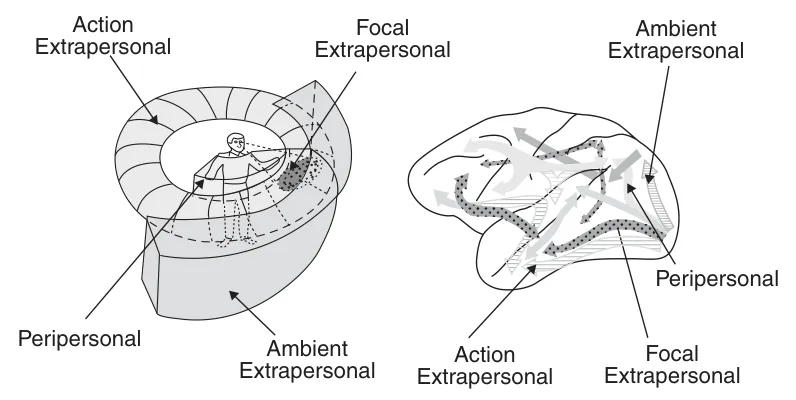<figcaption>Hình 3.1 Các phạm vi tương tác trong không gian 3 chiều và sự đại diện vỏ não của chúng.</figcaption></figure>
<p>Theo Previc, F. H. (1998). The neuropsychology of 3-D space. Psychological Bulletin, 124, 123–164, được phép sử dụng.</p>
<p>chiếm ưu thế. Cả hai hệ thống này đều sử dụng rộng rãi hệ thống tiền đình, xúc giác và các hệ thống “cơ thể” khác, chạy theo hướng lưng qua thùy đỉnh và dựa vào các chất dẫn truyền thần kinh như norepinephrine và ở mức độ ít hơn là serotonin, vốn rất quan trọng đối với các hệ thống kích thích sinh lý (và cảm xúc) (Previc, 1998). Ngược lại, dopamine dường như ít tham gia vào các hệ thống này hoặc vào các đại diện của chúng. Như đã đề cập trong Chương 2, serotonin và norepinephrine cũng chủ yếu khu trú ở bán cầu não phải, vốn quan trọng hơn cả trong các hoạt động cận thân lẫn trong việc định hướng hệ thống tư thế và tri giác của chúng ta theo trọng lực.</p>
<p>Mặt khác, dopamine là chất dẫn truyền thần kinh chính cho hai hệ thống chủ yếu xử lý không gian ngoại thân. Một trong số đó là hệ thống ngoại thân tiêu điểm (focal-extrapersonal), tham gia vào việc tìm kiếm, quét môi trường và nhận diện các vật thể bên trong nó. Hệ thống này hoạt động ở khoảng cách xa vì các vật thể hiếm khi được đưa vào không gian cá nhân của chúng ta trừ khi chúng ta đã nhận diện được chúng. Hệ thống này sử dụng thị giác trung tâm và chủ yếu là các chuyển động mắt giật cục để thực hiện quá trình tìm kiếm thị giác, và nó khu trú chủ yếu ở thùy thái dương bụng-bên, vỏ não trước trán bên, và ở mức độ ít hơn là vùng xung quanh trường mắt đỉnh. Nó hỗ trợ xử lý thị giác chi tiết, các tương tác có chủ đích và được kiểm soát với môi trường ngoại thân, cũng như các chức năng kiểm soát điều hành tập trung gắn liền với nhân cách/trí tuệ dopaminergic bên (xem Mục 3.4.2). Hệ thống thứ hai, nằm ở vùng ngoại vi hơn, được gọi là hệ thống ngoại thân hành động (action-extrapersonal), mang lại cho chúng ta cảm giác “hiện diện” trong môi trường và hỗ trợ việc thăm dò, điều hướng và định hướng tới các kích thích và cột mốc nổi bật. Hệ thống này kéo dài theo hướng bụng-giữa qua thùy thái dương giữa, hồi hải mã và các vùng hệ viền rồi tiến vào các vùng trán bụng-giữa, phần lớn song song với hệ thống vỏ não dopamine giữa được mô tả trong Chương 2. So với hệ thống ngoại thân tiêu điểm, hệ thống này ít tập trung và ít quan tâm đến chi tiết hơn, đồng thời nó hỗ trợ các chức năng sáng tạo và bốc đồng hơn gắn liền với nhân cách/trí tuệ dopaminergic bụng-giữa (xem Mục 3.4.1).</p>
<p>Một hệ quả của mối liên hệ giữa dopamine với không gian xa là nó đóng vai trò quan trọng trong các giác quan “ngoại thụ” (exteroceptive) như thị giác (nhìn xa), thính giác và khứu giác, trong khi đối trọng của nó là norepinephrine lại gắn liền hơn với các tín hiệu “nội thụ” (interoceptive - xúc giác và cơ thể) (Crow, 1973). Thật vậy, ngày nay người ta công nhận rằng có những kết nối giải phẫu rất chặt chẽ giữa hệ thống khứu giác và các hệ thống động lực dopaminergic giữa (Ikemoto, 2007). Một hệ quả khác của mối liên hệ giữa dopaminergic với không gian xa là, vì trường thị giác phía trên bao gồm phần xa nhất của thế giới thị giác do độ dốc của mặt phẳng mặt đất khi nó lùi xa khỏi chúng ta, nên các hệ thống ngoại thân tiêu điểm và hành động đều thiên về trường phía trên, cũng giống như chính dopamine vậy. Mối tương quan thứ ba của việc dopamine tham gia vào không gian xa là sự tham gia của nó vào thời gian xa (đặc biệt là tương lai). Không giống như các hoạt động cận thân, trong đó kích thích gợi mở hoặc phần thưởng có thể ở ngay gần và đòi hỏi rất ít nỗ lực để với tới hoặc có được, việc theo đuổi các phần thưởng ở xa hoặc bị trì hoãn đòi hỏi nỗ lực đáng kể và sự chờ đợi, cả hai điều này thường được dopamine giúp vượt qua (Denk và cộng sự, 2005; Salamone và cộng sự, 2005).</p>
<p>Những mối liên hệ trên với không gian xa giải thích lý do tại sao dopamine lại tham gia một cách chọn lọc vào vô số hành vi có nhiều khả năng được thực hiện bên ngoài không gian và thời gian trực tiếp của chúng ta. Ví dụ, dopamine rất quan trọng đối với:</p>
<p>1..hầu hết nếu không muốn nói là tất cả các hành vi hướng lên trên (Previc, 1998); 2..các chuyển động mắt giật cục, được sử dụng để khám phá thế giới xa và thiên về hướng lên trên nhiều hơn so với các chuyển động hội tụ và bám đuổi mượt mà (Previc, 1998); 3..hành vi tình dục kiểu “đực”, trái ngược với hành vi tương ứng ở giống cái, mang tính chủ động hơn là tiếp nhận và phụ thuộc nhiều hơn vào các tín hiệu từ xa như mùi hương và tín hiệu thị giác hơn là các tín hiệu cơ thể bên trong để kích hoạt (Robbins và Everitt, 1982).</p>
<p>Ngược lại, dopamine ít tham gia hơn và/hoặc trong một số trường hợp thực sự ức chế các hành vi gắn liền với cận thân hơn như:</p>
<p>1..chải chuốt xã hội và các hành vi gắn kết khác, vốn quan trọng đối với sự gắn kết nhóm và sức khỏe cảm xúc và chịu ảnh hưởng nhiều hơn bởi oxytocin, opioid và giao tiếp xúc giác (Schlemmer và cộng sự, 1980); 2..các khía cạnh tiêu thụ của việc ăn uống, vốn phụ thuộc nhiều hơn vào chức năng opioid (thụ thể mu) (Baldo và Kelley, 2007; Blackburn và cộng sự, 1992); và 3..hành vi tình dục tiếp nhận ở giống cái và hành vi làm mẹ như tư thế ưỡn lưng (lordosis) và tiết sữa, vốn được kích thích bởi các tín hiệu xúc giác cũng như các thụ thể noradrenergic và opioid mu (Depue và Morrone-Strupinsky, 2005; Robbins và Everitt, 1982).</p>
<p>Thậm chí có thể lập luận rằng vai trò được ghi nhận rõ ràng của dopamine trong hành vi hướng đến mục tiêu (tìm kiếm) là hệ quả của định hướng nguyên thủy của nó về phía không gian và thời gian xa (xem phần tiếp theo).</p>
<p>Vai trò của dopamine trong không gian 3 chiều và thời gian sẽ được khám phá sâu hơn trong vài mục tới. Mục 3.1.1 sẽ trình bày chi tiết vai trò cụ thể của dopamine trong việc chú ý đến không gian và thời gian xa, trong khi Mục 3.1.2 sẽ mô tả vai trò của dopamine trong hành vi hướng đến mục tiêu/phần thưởng và Mục 3.1.3 sẽ điểm qua vai trò của dopamine trong các trạng thái biến đổi ý thức và các trải nghiệm khác mà trong đó các chủ đề ngoại thân chiếm ưu thế so với các chủ đề cận thân.</p>
<h3>3.1.1 Dopamine và sự chú ý đến các tín hiệu xa về không gian và thời gian</h3>
<p>Một lượng lớn dữ liệu đã được tích lũy trong vài thập kỷ qua cho thấy dopamine trong não bộ đóng vai trò thiết yếu đối với việc chú ý đến không gian và thời gian xa.1 Động vật bị thiếu hụt dopamine không dễ dàng định hướng hoặc tạo liên kết với các kích thích ở xa (Blackburn và cộng sự, 1992), điều này trái ngược với tác dụng của các thuốc dopaminergic làm gia tăng các hành vi được điều khiển bởi tín hiệu từ xa (Szechtman và cộng sự, 1993). Thật vậy, chỉ những động vật có nồng độ dopamine bình thường mới chú ý (định hướng) đến các kích thích mới lạ ở xa nếu chúng đang thực hiện hành vi tiêu thụ như ăn uống (Hall và Schallert, 1988). Tác động của dopamine trong việc chuyển cán cân chú ý về phía không gian xa và rời khỏi không gian cận thân được minh họa qua vai trò của nó trong hành vi tích trữ. Nếu một con vật được đưa cho một mẩu thức ăn, nó có thể ăn ngay tại chỗ hoặc mang về tổ và cất giữ để</p>
<p>1 Khoảng cách trong trường hợp này không nhất thiết ngụ ý một thước đo không gian hay thời gian chính xác (ví dụ: mét hay phút) mà ít nhất là sự tách rời khỏi không gian trực tiếp xung quanh cơ thể và hiện tại trước mắt.</p>
<p>tiêu thụ sau. Thông thường việc tích trữ xảy ra chủ yếu đối với các vật thể lớn, ở gần (những vật nhỏ hơn có thể ăn ngay tại chỗ), nhưng nó cũng có thể xảy ra đối với các vật thể ở xa hơn. Tuy nhiên, nếu một con vật bị tước đoạt dopamine, khoảng cách mà hành vi tích trữ xảy ra bị thu hẹp xuống chỉ còn khoảng hai mét (Dringenberg và cộng sự, 2000). Một sự thất bại tương tự trong việc tích trữ các mẩu thức ăn ở xa cũng xảy ra ở những động vật bị tổn thương hồi hải mã (Whishaw, 1993), một cấu trúc bụng-giữa quan trọng tham gia vào việc xử lý và ghi nhớ thông tin từ không gian xa (xem Previc, 1998) và là một phần của hệ thống tổng quát hơn liên quan đến định hướng về thời gian xa (Botzung và cộng sự, 2007; Fellows và Farah, 2005; Okuda và cộng sự, 2003).</p>
<p>Các ví dụ khác về sự tham gia của dopamine vào không gian xa là các thiên hướng chuyển động và chú ý hướng lên trên do sự hoạt hóa dopaminergic tạo ra, bắt nguồn từ mối liên hệ đã lưu ý trước đó giữa không gian phía trên với các phần xa hơn trong thế giới thị giác của chúng ta (Previc, 1998). Ví dụ về các thiên hướng hướng lên trên này bao gồm đứng bằng hai chân sau, đánh hơi theo phương thẳng đứng, ngửa đầu lên trên và leo trèo theo phương thẳng đứng (như trên thành lồng của con vật). Một trong những ví dụ ấn tượng nhất về hành vi thiên về hướng lên trên như vậy là tình trạng ngửa đầu gần như liên tục ở chuột “stargazer” tăng động, giàu dopamine (Brock và Ashby, 1996; Truett và cộng sự, 1994) (xem Hình 3.2a). Hành vi này có những điểm tương đồng thú vị với các chuyển động ngửa đầu và liếc mắt lên trên vốn luôn được chứng minh là đi kèm với hoạt động trí óc bậc cao ở người (Hình 3.2b) và có lẽ bắt nguồn từ vỏ não trước trán bên giàu dopamine (Previc và cộng sự, 2005). Các thiên hướng hành vi ở trường thị giác phía trên ở động vật còn nhất quán với các chuyển động mắt hướng lên trên và ảo giác thị giác ở trường phía trên thường thấy trong bệnh tâm thần phân liệt (Bracha và cộng sự, 1985; Previc, 2006), vốn do dư thừa dopamine gây ra. Ngược lại, sự suy giảm dẫn truyền dopaminergic do tổn thương các con đường liềm đen – thể vân hoặc do uống các chất đối kháng dopaminergic dẫn đến ít chuyển động mắt hướng lên trên hơn, chứng lãng quên chú ý đối với trường phía trên, và hành vi lao đầu xuống dưới (lộn nhào từ trên cao xuống) (xem tổng quan trong Previc, 1998). Ví dụ, những bệnh nhân Parkinson giảm dopamine có xu hướng với tay thấp hơn mục tiêu trong các bài tập với tay phụ thuộc vào trí nhớ (Poizner và cộng sự, 1998), và họ biểu hiện ít chuyển động mắt giật cục hướng lên trên hơn (Corin và cộng sự, 1972; Hotson và cộng sự, 1986) và thậm chí nén (bỏ qua) trường phía trên (Lee và cộng sự, 2002). Ngược lại, sự hoạt hóa serotonergic có xu hướng làm giảm các hành vi hướng lên trên (Blanchard và cộng sự, 1997), nhất quán với sự ức chế bình thường của serotonin đối với dopamine ở nhiều vùng khác nhau của não.</p>
<p>Một khía cạnh khác về sự tham gia của dopamine vào không gian xa là xu hướng được ghi nhận rõ ràng ở những động vật có nồng độ dopamine bình thường trong việc khám phá một môi trường mới lạ bằng cách đánh hơi xung quanh chu vi của nó và thò</p>
<figure class="bookfig">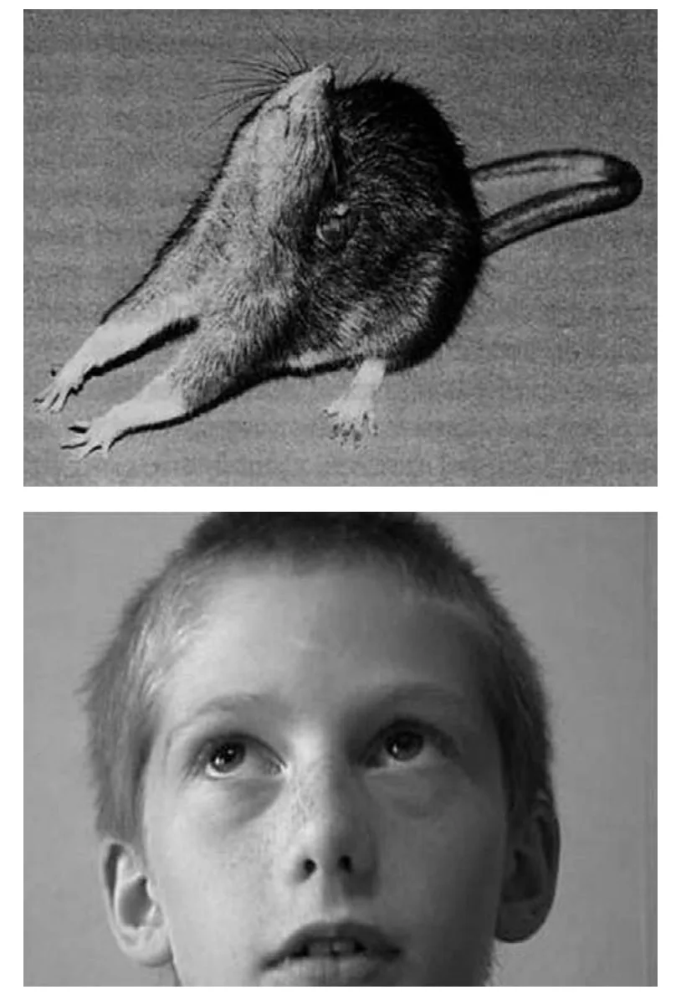<figcaption>Hình 3.2 Các thiên hướng dopaminergic hướng lên trên. Chuột Stargazer (trên) theo Truett và cộng sự (1994). Stargazer (stg),</figcaption></figure>
<p>đột biến điếc mới ở chuột Zucker. Laboratory Animal Science, 44, 595–599, được phép sử dụng từ AALAS; con người trong lúc hoạt động trí óc (dưới), ảnh do Carolyn Declerck cung cấp.</p>
<figure class="bookfig">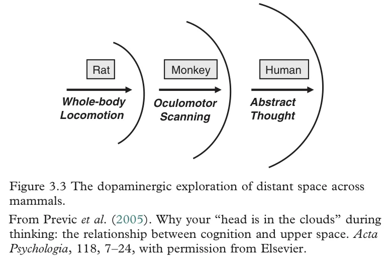<figcaption>Hình 3.3 Sự khám phá không gian xa qua trung gian dopaminergic ở các loài động vật có vú. Theo Previc và cộng sự (2005). Why your “head is in the clouds” during</figcaption></figure>
<p>thinking: the relationship between cognition and upper space. Acta Psychologia, 118, 7–24, được phép sử dụng từ Elsevier.</p>
<p>đầu vào các lỗ khác nhau. Trên thực tế, nồng độ dopamine bình thường là thiết yếu để động vật ưa thích một môi trường mới lạ hơn một môi trường quen thuộc (Fink và Smith, 1980; Ikemoto và Panksepp, 1999; Pierce và cộng sự, 1990). Ngược lại, các hệ thống dopaminergic thực sự làm giảm hành vi thăm dò trong một môi trường quen thuộc, vì những động vật bị tước đoạt dopamine sẽ tiếp tục thăm dò một môi trường quen thuộc, và dopamine dường như ít tham gia một cách thiết yếu vào các phản ứng theo thói quen (Ikemoto và Panksepp, 1999). Phản ứng tăng cường đối với các môi trường mới lạ đã khiến một số nhà nghiên cứu kết luận rằng dopamine (cụ thể là thụ thể D4) điều phối tính tìm kiếm sự mới lạ (novelty-seeking) ở người (Bardo và cộng sự, 1996; Cloninger và cộng sự, 1993; Dulawa và cộng sự, 1999). Đáng tiếc là tính tìm kiếm sự mới lạ ở người thường hàm ý việc tìm kiếm cảm giác mạnh hoặc tìm kiếm kích thích làm tăng sự hưng phấn, điều này thực tế có thể ít liên quan đến mong muốn khám phá các môi trường xa một cách có kiểm soát và có hệ thống; quả thực, việc tìm kiếm cảm giác mạnh dường như phụ thuộc nhiều hơn vào các chất dẫn truyền thần kinh như norepinephrine vốn liên quan nhiều hơn đến sự kích thích giao cảm (Zuckerman, 1984). Do đó, không có gì ngạc nhiên khi mối quan hệ giữa các gen dopamine và tính tìm kiếm sự mới lạ ở người chưa được chứng minh là thực sự mạnh mẽ (Kluger và cộng sự, 2002), mặc dù ít nhất một thước đo về khuynh hướng thăm dò dường như có tương quan với sự sáng tạo được điều phối bởi dopaminergic (Reuter và cộng sự, 2005).</p>
<p>Mặc dù dopamine có thể điều phối sự khám phá ở tất cả các loài động vật có vú, nhưng công cụ dùng để khám phá thế giới lại khác nhau giữa các loài (Hình 3.3). Ở loài gặm nhấm, sự di chuyển toàn thân do dopaminergic điều phối và các hệ thống cảm giác từ xa thô sơ như khứu giác được sử dụng để khám phá một thế giới xa có thể được xác định trong phạm vi vài mét hoặc tối đa vài chục mét. Các loài linh trưởng thực hiện chủ yếu việc khám phá thị giác đối với một môi trường xa được mở rộng hơn nhiều bằng các chuyển động mắt giật cục do dopaminergic điều phối, được thực hiện với tốc độ khoảng hai đến ba lần mỗi giây và có thể định vị các mẩu thức ăn nhỏ ở khoảng cách hơn 25 mét. Ở con người, khái niệm không gian thậm chí còn vượt ra ngoài cái “ở đây và ngay lúc này”, để bao hàm cả khả năng tưởng tượng ra những thế giới và khái niệm thậm chí còn xa xôi hơn bằng phương tiện tư duy trừu tượng và trí tưởng tượng ngoại tuyến (Bickerton, 1995; Suddendorf và Corballis, 1997). Loại tư duy này được cho là mới chỉ tiến hóa hoàn chỉnh gần đây, đạt đến độ chín muồi cùng với các nền văn minh cổ đại (xem Taylor, 2005; Chương 6). Bất chấp sự khác biệt to lớn giữa không gian xa về mặt vật lý và không gian trừu tượng, sự khám phá vật lý và khám phá nhận thức sở hữu nhiều điểm chung, chẳng hạn như sự tham gia của dopaminergic và các thiên hướng hướng lên trên. Không có gì đáng ngạc nhiên khi các mối liên hệ trực tiếp giữa việc tìm kiếm thức ăn trong không gian và tìm kiếm thông tin trong nhận thức (Hills, 2006; Hills và cộng sự, 2007) và thậm chí giữa không gian số vật lý và nhận thức (Vuilleumier và cộng sự, 2004) đã được ghi nhận ở người.</p>
<p>Về vai trò dopaminergic trong việc chú ý đến thời gian xa (đặc biệt là tương lai), một ví dụ điển hình là vai trò của nó trong việc dự đoán phần thưởng. Schultz và các đồng nghiệp (Schultz và cộng sự, 1997) đã nghiên cứu sâu rộng vai trò của dopamine trong dự đoán phần thưởng và phát hiện ra rằng các tế bào thần kinh dopaminergic ở vùng mái bụng (ventral tegmentum) và chất đen (substantia nigra) hoạt động trong quá trình học tập phần thưởng. Các tế bào thần kinh dopaminergic phản ứng với các kích thích đi kèm với phần thưởng trong quá trình học, mặc dù chúng ngừng phản ứng với chính phần thưởng đó theo thời gian và thực sự bị ức chế nếu phần thưởng không xuất hiện sau các tín hiệu báo trước. Do đó, các tế bào thần kinh dopaminergic dường như nhạy cảm với khả năng dự đoán và thời điểm của mối quan hệ tín hiệu – phần thưởng. Hơn nữa, các tế bào thần kinh dopamine không phản ứng mạnh ngay cả khi đạt được phần thưởng nếu không cần sự chú ý đầy đủ đến các tình huống bất ngờ của môi trường (tức là phần thưởng quá dễ đoán) (Horvitz, 2000; Ikemoto và Panksepp, 1999). Việc các hệ thống dopaminergic quan tâm đến thời gian xa cũng được minh họa qua hành vi của cả chuột và người khi thích một phần thưởng nhỏ hơn nhưng có ngay lập tức hơn là một phần thưởng lớn hơn nhưng bị trì hoãn sau khi dùng các loại thuốc ức chế tổng hợp hoặc dẫn truyền dopamine (Denk và cộng sự, 2005; Sevy và cộng sự, 2006). Vai trò của dopamine trong việc cho phép thỏa mãn phần thưởng bị trì hoãn ở động vật nhất quán với sự hoạt hóa tương đối lớn hơn ở các vùng trước trán bên ở người khi đưa ra các quyết định liên quan đến phần thưởng bị trì hoãn so với phần thưởng tức thời (McClure và cộng sự, 2004) và với tác động của các tổn thương ở vùng trước trán bụng-giữa và thái dương giàu dopamine gây ra cái gọi là “chứng cận thị đối với tương lai” (Bechara và cộng sự, 2000; Botzung và cộng sự, 2008; Fellows và Farah, 2005; Okuda và cộng sự, 2003).</p>
<h3>3.1.2 Dopamine và tính hướng đến mục tiêu</h3>
<p>Hành động hướng đến mục tiêu có một số yêu cầu chức năng, bao gồm:</p>
<p>1..lưu giữ vị trí không gian và biểu tượng của đối tượng mục tiêu cùng các cột mốc trong trí nhớ tức thời trong khi tiến về phía mục tiêu (trí nhớ làm việc); 2..hiểu các mối quan hệ nhân quả để dự đoán hoặc kiểm soát sự xuất hiện của phần thưởng; 3..phát triển một biểu tượng thời gian (sắp xếp theo trình tự) của hành động; và 4..thay đổi hành vi dựa trên phản hồi từ môi trường, chẳng hạn như chuyển đổi chiến lược.</p>
<p>Dopamine là chất dẫn truyền thần kinh chính tham gia vào tất cả các kỹ năng này (Previc, 1999), và các hệ thống dopaminergic – đặc biệt là các hệ thống bụng-giữa – cung cấp động lực thúc đẩy cho những hành động thường khá phức tạp và đòi hỏi nhiều nỗ lực với sự thỏa mãn bị trì hoãn. Thật vậy, như đã lưu ý trong Chương 2, sự phá hủy các hệ thống dopaminergic giữa trong não có thể dẫn đến tình trạng vô cảm động lực sâu sắc, mặc dù hành vi khác vẫn bình thường (Salamone và cộng sự, 2005; Solms, 2000; Tekin và Cummings, 2002).2</p>
<p>Vai trò của dopamine trong hoạt động hướng đến mục tiêu sẽ bị hạn chế hơn nhiều nếu nó không điều phối sự chú ý của chúng ta đến không gian và thời gian xa. Việc dự đoán phần thưởng thường đòi hỏi khả năng tạo liên kết giữa các tín hiệu ở xa và các đối tượng phần thưởng, và các hệ thống dopaminergic đã được chứng minh là đặc biệt quan trọng khi hoạt động hướng đến mục tiêu dựa vào các tín hiệu thị giác hoặc phi thị giác (ví dụ: xúc giác) ở xa hơn là ở gần (Blackburn và cộng sự, 1992; Szechtman và cộng sự, 1993; Whishaw và Dunnett, 1985). Và như đã lưu ý, các chuỗi hành vi kéo dài để đạt được những mục tiêu xa hơn cũng đòi hỏi sự nhận thức về khoảng cách thời gian tới mục tiêu. Thậm chí dường như có một mối quan hệ chặt chẽ giữa mức độ ý thức về tương lai của một người và mức độ động lực của người đó, với các tổn thương trán bụng-giữa làm suy giảm cả hai (xem Fellows và Farah, 2005; xem thêm Mục 3.4.1).</p>
<p>Dopamine đã được nghiên cứu rộng rãi cùng với các khía cạnh khác nhau của hành vi hướng đến mục tiêu ở động vật và cùng với chứng nghiện, sự vô cảm và các rối loạn động lực khác ở người. Động lực</p>
<p>2 Ví dụ, những bệnh nhân được phẫu thuật cắt thùy trước trán giữa và cắt chất trắng trán trong những năm 1940 để điều trị bệnh tâm thần thường vẫn giữ được mức độ trí thông minh trong giới hạn trước phẫu thuật (Rosvold và Mishkin, 1950), mặc dù các động lực thúc đẩy bị suy giảm sâu sắc.</p>
<p>thúc đẩy dopaminergic trong nhiều trường hợp có thể hướng tới việc đạt được các phần thưởng cần thiết cho sự sống còn về mặt thể chất, chẳng hạn như tìm kiếm thức ăn hoặc nước uống, nhưng trong những trường hợp khác thì không. Ví dụ, việc tìm kiếm phần thưởng tình dục, các món có vị ngọt, ma túy giải trí, và các phần thưởng có giá trị được lĩnh hội như tiền bạc và kiến thức không đáp ứng bất kỳ nhu cầu sinh lý tức thời nào. Trong những trường hợp này, các phần thưởng phải có được một giá trị khích lệ (incentive value) có thể biện minh cho những tiêu tốn hành vi đôi khi rất lớn cần thiết để đạt được chúng. Hầu hết các lý thuyết hàng đầu đều cho rằng dopamine đóng vai trò thiết yếu trong động lực khích lệ (incentive motivation) – động lực cần thiết để tìm kiếm và đạt được các mục tiêu/phần thưởng, ngay cả khi chúng không cần thiết cho sự sống còn sinh lý tức thời (Blackburn và cộng sự, 1992; Beninger, 1983; Berridge và Robinson, 1998; Depue và Collins, 1999; Horvitz, 2000; Ikemoto và Panksepp, 1999; Salamone và cộng sự, 2005). Vai trò cụ thể của dopamine trong việc thực hiện hành vi hướng đến mục tiêu đã được nghiên cứu nhiều nhất trong hành vi ăn uống và tình dục. Dựa trên sự phân biệt kinh điển giữa hành vi tìm mồi (appetitive) và hành vi tiêu thụ (consummatory), dopamine được hầu hết các nhà nghiên cứu coi là tham gia nhiều hơn vào hành vi tìm mồi/tìm kiếm/kiếm ăn (Alcaro và cộng sự, 2005; Ikemoto và Panksepp, 1999). Sự gián đoạn dopamine thường không ngăn cản động vật tiêu thụ thức ăn đã ở ngay gần, nhưng nó ảnh hưởng đến khả năng khởi phát phản ứng hướng đến mục tiêu, học các điều kiện hành vi dẫn đến việc đạt được phần thưởng, và duy trì phản ứng khi sự thỏa mãn bị trì hoãn (Baldo và Kelley, 2007; Berridge và Robinson, 1998; Blackburn và cộng sự, 1992; Dringenberg và cộng sự, 2000; Denk và cộng sự, 2005; Ikemoto và Panksepp, 1999; Salamone và cộng sự, 2005). Ví dụ, các tế bào thần kinh dopamine được kích thích trong các hành vi chuẩn bị (hướng đến mục tiêu) trước khi ăn thức ăn, đặc biệt là đối với thức ăn ngon miệng, nhưng chúng không hoạt động mạnh trong quá trình thực sự tiêu thụ thức ăn, ngay cả với những món ngon (Baldo và Kelley, 2007; Blackburn và cộng sự, 1992). Dopamine thậm chí còn tham gia thiết yếu hơn vào hành vi tình dục của giống đực, vốn ở loài gặm nhấm bao gồm một chuỗi các hành động hướng đến mục tiêu rất phức tạp, bao gồm di chuyển tới con cái đang sẵn sàng, leo lên lưng con cái và giao phối. Các hệ thống dopaminergic nguyên vẹn, được thúc đẩy bởi hormone nam giới testosterone (Hull và cộng sự, 2004), là cần thiết cho hai hành vi chuẩn bị/tìm kiếm đầu tiên này, nhưng chúng không cần thiết cho bản thân việc giao phối (Blackburn và cộng sự, 1992). Tuy nhiên, bản thân việc giao phối thực sự kích hoạt các tế bào thần kinh dopaminergic trong nhân nằm và các cấu trúc giữa khác ở mức độ lớn hơn so với việc tiêu thụ thức ăn thông thường (Blackburn và cộng sự, 1992), vốn có giá trị dựa trên sự sinh tồn nhiều hơn là dựa trên sự khích lệ. Như đã lưu ý trước đó, sự tạo điều kiện của dopamine đối với hành vi tình dục chủ yếu giới hạn ở giống đực, vì hầu hết hành vi tình dục kiểu giống cái phụ thuộc vào các chất dẫn truyền khác như norepinephrine và thực sự bị ức chế bởi các chất chủ vận dopamine như apomorphine (Robbins và Everitt, 1982).3</p>
<p>Một số nhà nghiên cứu đã diễn giải vai trò của dopamine trong hành vi tình dục của giống đực và các hoạt động “khoái lạc” khác là do sự tham gia chung của dopamine vào hoạt động khoái cảm. Tuy nhiên, như Berridge và Robinson (1998) lưu ý, có sự khác biệt giữa “thích” (liking – thực sự nhận được khoái cảm từ) một phần thưởng và “muốn” (wanting – thèm khát) nó. “Thích” hàm ý một phản ứng cảm xúc tích cực, trong khi “muốn” hàm ý một động lực thúc đẩy có thể gắn liền hoặc không gắn liền với một cảm xúc tích cực hay thậm chí bất kỳ cảm xúc nào. Một ví dụ điển hình cho điều này là nghiện ma túy, cờ bạc, tình dục, v.v. – bản thân phần thưởng có thể ít quan trọng hơn quá trình đạt được phần thưởng đó. Người ta đã liên tục chứng minh rằng các hệ thống dopaminergic giữa tham gia nhiều hơn vào việc “muốn” hơn là “thích” (Berridge và Robinson, 1998; Blackburn và cộng sự, 1992; Evans và cộng sự, 2006; Ikemoto và Panksepp, 1999; Salamone và Correa, 2002). Vai trò lớn hơn của dopamine trong động lực thúc đẩy thay vì bản thân việc trải nghiệm khoái cảm giác quan có thể liên quan đến sự tham gia của nó trong hành vi ám ảnh cưỡng chế và nghiện tâm lý (xem Chương 4), cả hai đều liên quan đến những động lực hành vi mãnh liệt cho những mục đích không nhất thiết mang lại khoái cảm hay lợi ích. Những động lực hành vi dopaminergic mạnh mẽ có thể được duy trì chỉ để tránh các sự kiện gây khó chịu hoặc để đạt được các vật khích lệ (ma túy, tình dục, tiền bạc, v.v.) mà theo thời gian có thể trở nên rất gây nghiện hoặc tự hủy hoại. Ở mức độ cực đoan, con người thậm chí có thể chọn những lý tưởng tôn giáo và chính trị hoàn toàn trừu tượng thay vì sự sống còn cơ bản. Điều này có thể được thể hiện một cách tích cực trong tuyên bố của Martin Luther King Jr. rằng “nếu một người chưa khám phá ra điều gì đó mà anh ta sẵn sàng chết vì nó, anh ta không xứng đáng được sống.”4</p>
<p>Nhưng nó cũng được thể hiện trong làn sóng đánh bom tự sát gây chấn động ở Trung Đông trong những năm gần đây, sự phi lý bi thảm của các cuộc Thập tự chinh, và những hậu quả kinh hoàng của vô số cuộc xung đột ý thức hệ chính trị và tôn giáo trong suốt lịch sử (xem Chương 6).</p>
<p>Có thể đưa ra một vài nhận định chung về vai trò của các hệ thống dopaminergic khác nhau trong động lực và tính hướng đến mục tiêu. Thứ nhất, các hệ thống bụng-giữa ở vùng hệ viền và não trước nền cung cấp động lực thúc đẩy hoặc xung lực chính cho hành động hướng đến mục tiêu. Vỏ não</p>
<p>3 Những đặc điểm khác nhau của hành vi tình dục ở giống đực và giống cái (lần lượt là “chủ động” và “tiếp nhận”) và sự tham gia khác biệt của dopamine trong đó nhất quán với các bằng chứng khác cho thấy dopamine nói chung tham gia nhiều hơn vào các trạng thái nhận thức, chú ý và hành vi “chủ động” so với “thụ động” (Tucker và Williamson, 1984). 4 Bài phát biểu tại Detroit, MI, ngày 27 tháng 6 năm 1963. Trực tuyến tại: www.quotationspage.com/ quote/24968.html.</p>
<p>trán-ổ mắt và vỏ não đai trước sau đó giúp tổ chức và tập trung hành vi hướng đến mục tiêu thành các chuỗi hướng đến mục tiêu có ý nghĩa. Cuối cùng, vỏ não trước trán bên, kết hợp với các hệ thống thể vân, điều chỉnh các hành động hướng đến mục tiêu này dựa trên dự đoán và phản hồi từ môi trường (ví dụ: bằng cách cập nhật hành vi mục tiêu ban đầu trong trí nhớ dựa trên thông tin ngữ cảnh hiện tại). Mạng lưới trước trán bên cũng cung cấp khả năng chuyển đổi hành động hoặc chiến lược, điều mà nó thực hiện bằng cách ức chế các phản ứng trước đó. Sự tham gia của các hệ thống dopaminergic bên vào trí nhớ làm việc, chuyển đổi nhận thức và các hành vi kiểu “điều hành” khác rốt cuộc là nền tảng cho vai trò lớn hơn của dopaminergic trong trí thông minh bậc cao, như được thảo luận trong Mục 3.2.</p>
<h3>3.1.3 Dopamine và các trải nghiệm ngoại thân</h3>
<p>Một biểu hiện thú vị về vai trò của dopamine trong việc điều phối cả không gian và thời gian hướng lên trên lẫn ở xa là sự tham gia của nó vào các trạng thái biến đổi ý thức như mơ và ảo giác, cũng như trong các trải nghiệm tôn giáo ở người. Như tôi đã mô tả gần đây (Previc, 2006), tất cả các hoạt động này đều bao gồm:</p>
<p>1..sự chiếm ưu thế của các đầu vào cảm giác ngoại thân (ở xa) (ví dụ: thính giác và thị giác); 2..sự thiếu hụt các đầu vào cận thân (ví dụ: xúc giác và cảm nhận vận động); 3..sự nhấn mạnh vào các chủ đề ngoại thân (ví dụ: bay lượn hoặc di chuyển ra ngoài cơ thể); và 4..sự hiện diện của các chuyển động mắt hướng lên trên và các thiên hướng trường phía trên khác.</p>
<p>Sự hoạt hóa dopaminergic, do các trạng thái sinh lý biến đổi (ví dụ: thiếu oxy/cận tử, thiếu hụt cảm giác/cô lập, căng thẳng cực độ) hoặc các yếu tố hóa học thần kinh khác (giảm hoạt hóa glutamatergic, cholinergic và serotonergic ở các mức độ khác nhau) gây ra, dường như là mẫu số chung trong tất cả các trải nghiệm này (Previc, 2006). Một trong những biểu hiện ấn tượng nhất của sự hoạt hóa dopaminergic là trải nghiệm thoát xác (out-of-body experience), có thể xảy ra trong lúc gặp ảo giác, mơ, thiếu hụt cảm giác, thiếu oxy, rối loạn loạn thần, thôi miên, trạng thái siêu việt và các sự kiện sang chấn tâm lý như bị cưỡng hiếp. Việc giảm đầu vào cảm giác sẽ giải phóng sự ức chế bình thường của các đầu ra cảm giác serotonergic, cholinergic và noradrenergic lên dopamine, vốn hiện diện rất ít ở các vùng xử lý cảm giác. Ngược lại, các trải nghiệm “cận tử” do thiếu oxy, giấc mơ và các phản ứng giải thể nhân cách trong các trải nghiệm sang chấn có thể đóng vai trò làm tăng dopamine như một phần của quá trình làm dịu cơ thể nói chung nhằm tiết kiệm oxy trong các đợt thiếu oxy, chống lại sự tăng thân nhiệt trước khi ngủ (nhiệt độ cơ thể của chúng ta giảm xuống trong khi ngủ và mơ), và làm giảm sự kích thích cảm xúc bằng cách giảm các hormone giao cảm liên quan đến phản ứng trước các sự kiện gây căng thẳng tâm lý (xem Chương 2).</p>
<p>Nhiều nhà nghiên cứu đã đặt ra giả thuyết về sự tương đồng cơ bản giữa giấc mơ và ảo giác (Hobson, 1996; Rotenberg, 1994; Solms, 2000), vốn thậm chí còn có chung một gốc từ nguyên.5 Ảo giác có mối quan hệ mật thiết với giấc mơ, thể hiện qua việc ảo giác thường xuyên xảy ra ở những người bình thường sau khi thiếu ngủ hoặc trong hay ngay trước khi bắt đầu ngủ (“ảo giác lúc sắp ngủ” - hypnogogic) hoặc ngay sau khi thức dậy (“ảo giác lúc sắp tỉnh” - hypnopompic) (Cheyne và Girard, 2004; Girard và Cheyne, 2004; Girard và cộng sự, 2007). Hơn nữa, ảo giác thậm chí có thể xảy ra ở những người đang thức khi đi kèm với các đợt hoạt động chuyển động mắt nhanh (REM), vốn thường gắn liền với giấc mơ (Arnulf và cộng sự, 2000). Khi được sử dụng trước khi ngủ, các chất gây ảo giác như LSD được biết là làm tăng cường giấc mơ (Muzio và cộng sự, 1966), và bệnh nhân tâm thần phân liệt mô tả ảo giác của họ giống như giấc mơ (Gottesmann, 2002). Giấc mơ và ảo giác cũng gắn bó chặt chẽ với các truyền thống tôn giáo hoặc liên quan đến trải nghiệm tôn giáo (Batson và Ventis, 1982: Chương 4; Gunter, 1983; Koyama, 1995; Pahnke, 1969; Saver và Rabin, 1997). Giấc mơ từng được coi là phương tiện để nhận thông điệp từ thế giới siêu nhiên (ví dụ: giấc mơ của Joseph trong Sách Sáng Thế) và gặp gỡ tổ tiên, như được minh họa qua việc xây dựng nhiều ngôi đền tôn giáo cổ đại ở Nhật Bản nhằm thúc đẩy việc nằm mơ (Koyama, 1995). Việc sử dụng các chất gây ảo giác dẫn đến các trải nghiệm thần bí và hình ảnh tôn giáo (xem tổng quan của Batson và Ventis, 1982: Chương 4; Goodman, 2002; Pahnke, 1969; Saver và Rabin, 1997), và ảo giác trong bệnh động kinh cũng như tâm thần phân liệt hoang tưởng được giả thuyết là đã dẫn đến những trải nghiệm truyền cảm hứng cho nhiều tôn giáo hàng đầu thế giới, bao gồm những trải nghiệm của Thánh Paul (người sáng lập Công giáo), Mohammed (người sáng lập Hồi giáo) và Joseph Smith (người sáng lập đạo Mặc Môn) (xem Saver và Rabin, 1997). Thật vậy, động kinh và tâm thần phân liệt, cả hai đều liên quan đến sự hoạt hóa mạnh mẽ của các con đường dopaminergic bụng-giữa, là hai chứng rối loạn gắn liền rõ rệt với chứng sùng đạo quá mức (xem Previc, 2006), vì động kinh từng được người Hy Lạp gọi là căn bệnh “linh thiêng” (Saver và Rabin, 1997) và “điên rồ” (insanity) ban đầu là một từ tiếng Do Thái dùng để chỉ những người bị cuốn đi bởi các khải tượng tôn giáo (xem Previc, 2006).</p>
<p>5 Cả hai đều bắt nguồn từ nghĩa “lang thang” trong một số ngôn ngữ – ví dụ: hallucination (ảo giác) từ tiếng Latin “alucinari” và dream (giấc mơ, “reve” và “reverie” trong tiếng Pháp) từ tiếng Pháp “resver”.</p>
<p>Trong cả giấc mơ và ảo giác, các tế bào thần kinh serotonergic ở nhân đường giữa (raphe nuclei) ngừng hoạt động, giúp giải phóng hoạt động dopaminergic ở các con đường trán giữa vốn bình thường bị ức chế (Gottesmann, 2002). Một điểm khác biệt thú vị giữa giấc mơ và ảo giác là trong khi giấc mơ có nhiều khả năng xảy ra nhất trong giấc ngủ chuyển động mắt nhanh (REM), vốn đi kèm với sự hoạt hóa cholinergic (Hobson và cộng sự, 2000), thì ảo giác có nhiều khả năng liên quan đến sự suy giảm ức chế cholinergic đối với hoạt động dopaminergic, vì các thuốc kháng cholinergic như atropine là những chất gây ảo giác mạnh. Như đã lưu ý trước đó, một lý do khiến dopamine tham gia sâu vào giấc mơ và ảo giác là vì dopamine thông thường không tham gia vào quá trình xử lý cơ bản thông tin cảm giác mà hiện diện dồi dào hơn nhiều ở các vùng tri giác và liên hợp bậc cao. Khi các hệ thống cảm giác sơ cấp – đặc biệt là những hệ thống cung cấp phản hồi về cảm giác xúc giác và cảm nhận vận động – bị tắt trong lúc thiếu hụt cảm giác, nằm mơ và các trạng thái biến đổi ý thức khác, các hệ thống dopaminergic bắt đầu tạo ra những liên kết giả tạo và hỗn loạn giữa các kích thích được tạo ra từ bên trong mà có thể bị nhầm lẫn thành những liên kết giữa các kích thích thực tế phát ra từ môi trường (Previc, 2006).</p>
<p>Điều thú vị cần lưu ý là trong quá trình hoạt hóa dopaminergic khi mơ, gây mê, thiếu oxy, thôi miên, thiền định, và các trạng thái thần bí cũng như hoang tưởng nơi các trải nghiệm thoát xác thường xuyên xảy ra, đôi mắt có xu hướng trợn ngược lên trên (xem Previc, 2006). Hơn nữa, các ảo ảnh thoát xác và ảo giác như bay lượn có nhiều khả năng xảy ra ở trường phía trên và ngoài tầm với của cánh tay (Cheyne và Girard, 2004; Girard và cộng sự, 2007), và các niềm tin cũng như trải nghiệm tôn giáo ở người nhìn chung thiên về không gian xa, hướng lên trên (ví dụ: thiên đường) (Previc, 2006). Các thực hành tôn giáo như thiền định đòi hỏi sự tập trung vào không gian phía trên (ví dụ: tập trung vào “con mắt thứ ba”, một vùng trên trán giữa hai mắt) hoặc kéo theo sự suy giảm các tín hiệu cơ thể, cho phép đạt tới sự siêu việt (đánh mất bản ngã). Thêm vào đó, nhiều biểu tượng và đền thờ tôn giáo nằm ở hoặc vươn lên không gian phía trên, thậm chí là không gian thiên văn (ví dụ: tháp nhọn và mái vòm, kim tự tháp, tu viện trên sườn núi, núi thiêng, hình tượng thiên thần, bãi đá Stonehenge). Tương tự, những khoảnh khắc và chủ đề tôn giáo vĩ đại đều gắn quyện với không gian phía trên (Moses trên núi Sinai, Chúa Jesus trên đỉnh núi, Mohammed được thiên thần Gabriel chở trên cỗ xe lên bầu trời, các pháp sư gửi linh hồn lên trời, v.v.). Các yếu tố tích cực (tiếp cận) của tôn giáo như thiên đường và thiên thần có nhiều khả năng gắn liền với không gian phía trên, trong khi các yếu tố tiêu cực (tránh né) như địa ngục và rắn độc có nhiều khả năng gắn liền với không gian phía dưới (Meier và cộng sự, 2007; Previc, 2006), phù hợp với một thiên hướng chung ít nhất là trong các nền văn hóa phương Tây nhằm đề cao không gian phía trên hơn (ví dụ: nâng cao so với chà đạp; tôn vinh so với hạ thấp, v.v.) (Meier và Robinson, 2004; Previc, 2006).</p>
<p>Cuối cùng, các trải nghiệm tôn giáo (hoặc ít nhất là tâm linh) thường gắn liền với sự hoạt hóa của các vùng não bụng – đặc biệt là thùy thái dương giữa và trên cùng vỏ não trước trán giữa – trong khi các vùng cận thân như thùy đỉnh sau dường như lắng dịu trong suốt hoạt động tôn giáo (Previc, 2006). Sự xuất hiện của các triệu chứng tương tự như những triệu chứng gặp trong cơn động kinh thái dương giữa – chẳng hạn như ảo ảnh khứu giác và thị giác cùng cảm giác bị lạc lối trong không gian – thường xuyên được ghi nhận ở những người bình thường có niềm tin hoặc trải nghiệm siêu linh hay tâm linh (ví dụ: Britton và Bootzin, 2004; Fenwick và cộng sự, 1985; MacDonald và Holland, 2002; Morneau và cộng sự, 1996; Persinger, 1984; Persinger và Fisher, 1990; Persinger và Markarec, 1987). Như đã lưu ý, các vùng vỏ não bụng-giữa nằm trong số những vùng giàu dopamine nhất của vỏ não, điều này nhất quán với thực tế là tất cả các loại thuốc chính tạo ra trải nghiệm thần bí – chất đối kháng glutamate, chất đối kháng serotonin, chất đối kháng acetylcholine và chất chủ vận dopamine – rốt cuộc đều làm nghiêng cán cân hóa học thần kinh về phía dopamine (Previc, 2006). Do khả năng thúc đẩy các liên kết và mối quan hệ dự đoán giữa các kích thích ở xa, dopamine được cho là điều phối các liên kết mê tín, tức là niềm tin rằng các sự kiện không chỉ đơn thuần là ngẫu nhiên trùng hợp mà thực sự có quan hệ nhân quả. Hành vi mê tín gắn liền với một cái nhìn méo mó về sự tình cờ, vốn là dấu ấn của tư duy siêu linh (Brugger và cộng sự, 1991), và việc đánh giá thấp sự tình cờ và ngẫu nhiên có thể khiến những người có nồng độ dopaminergic cao đánh giá quá cao khả năng kiểm soát của họ đối với các sự kiện, trực tiếp thông qua năng lực của bản thân hoặc gián tiếp bằng cách khai thác các lực lượng tâm linh thông qua cầu nguyện và thầy đồng. Nỗ lực kiểm soát sự kiện ở mức độ cao, sẽ được thảo luận thêm trong các Mục 3.4.2 và 3.4.3 liên quan đến đặc điểm “điểm kiểm soát” và phong cách bán cầu trái, là nền tảng cho nhiều nghi lễ tôn giáo cũng như các hành vi phi tôn giáo như cờ bạc. Trên thực tế, cả nghi lễ tôn giáo và cờ bạc đều gắn liền với các khuynh hướng ám ảnh cưỡng chế (tăng cường kiểm soát) và các kiểu nhân cách ám ảnh (Previc, 2006), vốn phụ thuộc vào sự hoạt hóa của các con đường dopaminergic giữa (xem Chương 4).6</p>
<p>Hoang tưởng, ảo giác và giấc mơ tương đối có nhiều khả năng liên quan đến sự hoạt hóa bán cầu não trái của con người (Previc, 2006). Bán cầu não trái cũng dường như chiếm ưu thế trong hầu hết các trải nghiệm</p>
<p>6 Trùng hợp thay (hoặc có lẽ không phải vậy), trong nhiều năm, ghế giáo sư được tài trợ duy nhất về nghiên cứu siêu linh – Ghế Giáo sư Bigelow về Nghiên cứu Ý thức – đã tọa lạc ngay tại trung tâm của vùng đất cờ bạc tại Đại học Nevada ở Las Vegas. Cũng cần lưu ý rằng sự kích thích tình dục nam giới, sự phấn khích nhịp độ nhanh và lượng rượu bia dồi dào đặc trưng cho Las Vegas càng kích thích thêm động lực dopaminergic và làm tăng khuynh hướng đánh bạc.</p>
<p>và hành vi tôn giáo, mặc dù ở mức độ ít hơn (Previc, 2006). Sự chiếm ưu thế của bán cầu trái trong giấc mơ, ảo giác và các trạng thái biến đổi ý thức khác đi ngược lại quan niệm phổ biến rằng bán cầu phải trực giác hơn là nguồn gốc của những trạng thái như vậy. Trong thực tế, bán cầu phải “gắn với mặt đất” hơn là mỏ neo cho các giác quan cơ thể, cảm xúc và ý thức về bản thân của chúng ta. Tổn thương bán cầu phải có nhiều khả năng gây ra sự bỏ bê cơ thể (như trong chứng mất khả năng mặc quần áo - dressing apraxia), các rối loạn thao tác cận thân (như trong chứng mất khả năng kiến tạo - constructional apraxia), hình ảnh cơ thể bị biến đổi và thậm chí phủ nhận các khuyết tật cơ thể (gọi là “chứng mất nhận thức bệnh” - anosognosia), suy giảm định hướng cơ thể trong không gian, giảm tự nhận thức, và suy giảm khả năng nhận diện cũng như biểu đạt cảm xúc (xem Cutting, 1990; Hecaen và Albert, 1978). Trong những trường hợp cực đoan, tổn thương các hệ thống cơ thể/bản thân của bán cầu phải có thể dẫn đến sự giải thể nhân cách thực sự và hoang tưởng phủ nhận bộ phận cơ thể (somatoparaphrenic delusions), trong đó bệnh nhân có thể quy các cảm giác trên chính cơ thể mình cho một thực thể xa lạ.7</p>
<p>Cụ thể hơn nữa, các trạng thái biến đổi ý thức mà trong đó các đầu vào ngoại thân chiếm ưu thế là kết quả từ sự hoạt hóa các phần sau (thái dương) và trước (trước trán) của hệ thống ngoại thân hành động bụng-giữa, trái ngược với hệ thống ngoại thân tiêu điểm nằm ở phía bên. Về bản chất, sự hoạt hóa dopaminergic bụng-giữa dẫn đến “chiến thắng” của hoạt động não ngoại thân trước các hệ thống cơ thể vốn neo giữ khái niệm bản thân và định hướng cơ thể của chúng ta, cũng như chiến thắng trước trí thông minh điều hành “duy lý” hơn được duy trì trong các hệ thống dopaminergic bên (Previc, 2006). Ngược lại, các hệ thống dopaminergic bên (ngoại thân tiêu điểm) có thể chịu trách nhiệm nhiều hơn cho sức mạnh to lớn của trí tuệ con người – đặc biệt là trí thông minh trừu tượng – như được thảo luận trong phần tiếp theo.</p>
<h3>3.2 Dopamine và trí thông minh</h3>
<p>Từ những gì đã viết ở trên về vai trò của dopamine trong hành vi hướng đến mục tiêu và thăm dò, sẽ thật đáng ngạc nhiên nếu dopamine không đóng một vai trò quan trọng trong trí thông minh. Tuy nhiên, vai trò của dopamine trong trí thông minh rõ ràng vượt xa vai trò động lực của nó và có thể gắn liền với ít nhất sáu kỹ năng nhận thức cụ thể, tất cả đều có thể liên kết với không gian ngoại thân. Trước khi mô tả những kỹ năng này, tôi sẽ điểm qua ngắn gọn các bằng chứng tổng quát về mối quan hệ giữa dopamine và trí thông minh.</p>
<p>7 Một ví dụ sinh động về việc mất kết nối với bản thân hoặc cơ thể mình sau tổn thương bán cầu phải là xu hướng nhìn thấy người kia thay vì chính mình trong các bức ảnh ghép biến hình giữa bản thân và một người nổi tiếng (Keenan và cộng sự, 2000). Ngược lại, bán cầu phải cô lập nhìn nhận bức ảnh ghép biến hình đó giống mình hơn là giống người nổi tiếng.</p>
<figure class="bookfig">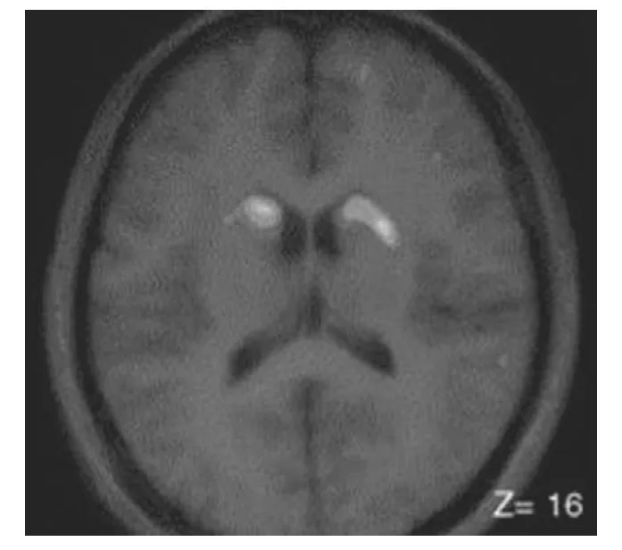<figcaption>Hình 3.4 Một lát cắt ngang (trục) của não người cho thấy sự suy giảm gắn kết thụ thể dopamine D2 (tăng hoạt động dopamine) ở nhân đuôi trái và phải trong một bài tập trí nhớ chuyển đổi đảo ngược.</figcaption></figure>
<p>Theo Monchi và cộng sự (2006). Striatal dopamine release during performance of executive functions: A [11C] raclopride PET study. Neuroimage, 33, 907–912, được phép sử dụng từ Elsevier.</p>
<p>Có một số bằng chứng trực tiếp về vai trò tối quan trọng của các hệ thống dopaminergic trong trí thông minh. Thứ nhất, nồng độ dopamine trước trán bị suy giảm được cho là nguyên nhân chính gây ra các rối loạn trí nhớ làm việc và các rối loạn điều hành khác xảy ra trong bệnh phenylketonuria (Diamond và cộng sự, 1997; Welsh và cộng sự, 1990). Như đã lưu ý trước đây, việc mất đi chỉ riêng hàm lượng dopaminergic của vỏ não trước trán đã tái tạo hầu hết các triệu chứng của việc cắt bỏ hoàn toàn vùng này (Brozoski và cộng sự, 1979). Thứ hai, nồng độ dopamine bị suy giảm do thiếu hụt i-ốt nghiêm trọng trong quá trình phát triển não bộ trước khi sinh vì lượng hormone tuyến giáp không đủ sẽ hạn chế quá trình chuyển hóa tyrosine thành dopa, góp phần gây ra tình trạng chậm phát triển trí tuệ trên diện rộng (Previc, 2002). Thứ ba, sự gắn kết dopamine và các thước đo khác đã được chứng minh là dự báo trí thông minh ngôn ngữ, phân tích và điều hành ở người (Cropley và cộng sự, 2006; Guo và cộng sự, 2006; Reeves và cộng sự, 2005). Thật vậy, sự giải phóng dopamine ở thể vân lưng tăng lên trong các nhiệm vụ điều hành liên quan đến chuyển đổi nhận thức (Monchi và cộng sự, 2006), như được minh họa trong Hình 3.4. Thứ tư, các hệ thống dopaminergic nằm trong số những hệ thống bị ảnh hưởng sâu sắc nhất trong quá trình suy giảm nhận thức do lão hóa, với số lượng thụ thể dopamine tương quan đáng kể với hiệu suất trong các bài kiểm tra lập luận trừu tượng, sự linh hoạt tinh thần và nhiều bài kiểm tra nhận thức khác (Bäckman và cộng sự, 2006; Braver và Barch, 2002; Volkow và cộng sự, 1998). Cuối cùng, tổn thương ở trẻ sơ sinh đối với cả vỏ não trước trán và nhân đuôi sẽ phá hủy phần lớn hệ thống dopaminergic thể vân / trước trán bên và gây ra các khiếm khuyết nhận thức vĩnh viễn ở khỉ (Tucker và Kling, 1969), mặc dù điều này không hoàn toàn đúng khi một trong hai cấu trúc được bảo toàn.</p>
<p>Cũng có nhiều bằng chứng gián tiếp ủng hộ vai trò thiết yếu của dopamine trong trí thông minh. Từ góc độ lâm sàng (xem Chương 4), chức năng nhận thức bị biến đổi ở các mức độ khác nhau trong hầu hết các bệnh lý có hoạt động dopaminergic bất thường, bao gồm rối loạn tăng động giảm chú ý (nơi dopamine trước trán bên có thể bị thiếu hụt so với dopamine bụng-giữa), tự kỷ (nơi dopamine bên có thể bị dư thừa), rối loạn lưỡng cực (nơi dopamine tăng cao trong trạng thái hưng cảm), bệnh Huntington (trong đó dopamine tăng cao tương đối ở thể vân), bệnh Parkinson (nơi dopamine thể vân bị giảm do tổn thương các con đường liềm đen – thể vân), và tâm thần phân liệt (nơi dopamine trong các hệ thống bụng-giữa/trung não-viền tăng cao). Hồ sơ triệu chứng trong các rối loạn này khác xa nhau, điều này không có gì đáng ngạc nhiên vì chúng ảnh hưởng đến các hệ thống dopaminergic khác nhau và ở các mức độ khác nhau đến các chất dẫn truyền thần kinh chủ chốt khác. Tuy nhiên, một khiếm khuyết chung cho hầu như tất cả các rối loạn này là suy giảm trí thông minh “điều hành” (ví dụ: trí nhớ làm việc, lập kế hoạch, chuyển đổi chiến lược), phù hợp với tầm quan trọng của các hệ thống dopaminergic khu trú ở vỏ não trước trán bên đối với trí nhớ làm việc, chuyển đổi nhận thức và các thành phần khác của trí thông minh linh hoạt (fluid intelligence) và điều hành (Braver và Barch, 2002; Diamond và cộng sự, 1997; Kane và Engle, 2002; Nieoullon, 2002; Previc, 1999). Một bằng chứng gián tiếp khác về vai trò của dopamine trong trí thông minh là lượng dopamine tương đối cao ở các bộ động vật không phải người (vẹt, cá voi và linh trưởng) được cho là sở hữu trí thông minh tiên tiến, bất chấp hình dạng và kích thước não rất khác nhau của chúng (xem Previc, 1999).8 Cuối cùng, như đã lưu ý trước đó, nồng độ dopamine cao ở bán cầu não trái tương xứng với vai trò dẫn đầu của bán cầu đó trong lập luận trừu tượng và trí thông minh điều hành (xem các phần tiếp theo).</p>
<p>Một số nhà lý thuyết (ví dụ: Neioullin, 2002) lập luận rằng các hệ thống dopaminergic đóng góp ít hơn cho các thước đo trí thông minh chuẩn hóa so với trí thông minh linh hoạt/</p>
<p>8 Điều thú vị là ít nhất một trong số các loài này (vẹt) cũng có thể biểu hiện các cử động giật cục quá mức và các cử động rập khuôn khác vốn đặc trưng cho các rối loạn tăng dopaminergic như tự kỷ, rối loạn ám ảnh cưỡng chế và hội chứng Tourette ở người (Garner và cộng sự, 2003).</p>
<p>điều hành. Nhưng ngay cả vỏ não trước trán nói chung cũng không được coi là yếu tố quyết định đối với điểm số trong các bài kiểm tra trí thông minh chuẩn hóa (Kane và Engle, 2002; Rosvold và Mishkin, 1950), vốn thường đo lường trí thông minh “kết tinh” hoặc dựa trên kiến thức ở mức độ lớn hơn là trí thông minh linh hoạt. Ngược lại, các bài kiểm tra trí thông minh phi ngôn ngữ như Trắc nghiệm Ma trận Tiến triển Raven (Raven’s Progressive Matrices Test) đo lường lập luận trừu tượng chủ yếu được thiết kế để đo trí thông minh linh hoạt, vốn là nền tảng cho các thao tác như lập kế hoạch, trí nhớ làm việc, chuyển đổi chiến lược và các khái niệm trừu tượng có liên quan mật thiết hơn đến khái niệm “g”, hay nhân tố trí tuệ chung (Carpenter và cộng sự, 1990; Kyllonen và Christal, 1990). Một kỹ năng điều hành cụ thể được điều phối bởi dopaminergic – trí nhớ làm việc, khả năng lưu trữ các mục trong trí nhớ và thực hiện nhiều thao tác song song trên chúng – thậm chí còn được một số nhà nghiên cứu coi là yếu tố đơn lẻ quan trọng nhất của “g” (Kyllonen và Christal, 1990).</p>
<p>Tất nhiên, dopamine không phải là chất dẫn truyền thần kinh duy nhất tham gia vào trí thông minh. Acetylcholine cũng tham gia vào trí nhớ làm việc, sự chú ý và lập trình vận động và tương tự cũng được phân bên về phía bán cầu trái (xem thêm Ellis và Nathan, 2001; Previc, 1999, 2004). Norepinephrine cũng tham gia vào trí nhớ làm việc và một số thao tác vận động nhất định, và vì nó được tổng hợp từ dopamine nên nó cũng bị ảnh hưởng bởi sự thất bại trong việc phát triển nồng độ tyrosine và dopamine bình thường trong chứng rối loạn thiếu i-ốt và phenylketonuria. Chắc chắn, sự gia tăng cung lượng tim và thân nhiệt khi nỗ lực trí óc (Al-Absi và cộng sự, 1997) cho thấy sự đóng góp của hệ thần kinh giao cảm được kích thích bởi noradrenergic trong hoạt động trí óc (xem Previc, 2004). Trái ngược với các chất dẫn truyền thần kinh trên, chỉ có serotonin dường như không đóng vai trò lớn trong nhận thức – thật vậy, nó có xu hướng làm giảm khả năng định hướng, sự cảnh giác và trí nhớ làm việc (Dringenberg và cộng sự, 2003; Luciana và cộng sự, 1998; Schmitt và cộng sự, 2002), phù hợp với vai trò đối lập nói chung của nó đối với dopamine.</p>
<p>Như sẽ được mô tả trong các phần sau, sự đóng góp của dopamine vào trí thông minh có thể được truy nguyên từ sự tham gia của nó vào sáu kỹ năng nhận thức chính: lập trình vận động, trí nhớ làm việc, tính linh hoạt nhận thức, biểu tượng trừu tượng, phân tích/sắp xếp trình tự thời gian, và tính sản sinh/sáng tạo (xem Previc, 1999). Những kỹ năng này không chỉ quan trọng đối với trí thông minh nói chung mà còn đối với ngôn ngữ, thứ mà nhiều nhà lý thuyết coi là tài năng tiên tiến nhất ở con người. Năng lực ngôn ngữ chắc chắn sẽ sụp đổ nếu thiếu những kỹ năng này, tất cả đều phụ thuộc ở hầu hết người trưởng thành vào một bán cầu não trái hoạt động bình thường, và cũng khó có thể tưởng tượng rằng ngôn ngữ lại không được phát minh bởi những cá nhân sở hữu các kỹ năng này. Ngược lại, quan niệm về các năng lực ngôn ngữ, trung tâm xử lý, hoặc thậm chí các gen đặc biệt (ví dụ: Pinker và Bloom, 1990) hoạt động độc lập với trí thông minh tổng thể vẫn chưa được chứng minh. Điều này không có nghĩa là một người có kỹ năng ngôn ngữ trên trung bình trong một số trường hợp không thể bị khiếm khuyết về năng lực không gian – thị giác và ngược lại – rõ ràng là mỗi người chúng ta đều có những khả năng và/hoặc sở thích cho phép chúng ta thể hiện tốt hơn ở một số lĩnh vực kỹ năng so với các lĩnh vực khác. Nhưng nhìn chung, có một mối tương quan cao giữa năng lực ngôn ngữ và trí thông minh (Daneman và Merikle, 1996).</p>
<p>Điều quan trọng xét từ góc độ vai trò lớn hơn của dopamine trong chức năng não bộ là tất cả các kỹ năng này đều có thể gắn trực tiếp hoặc gián tiếp với quá trình xử lý trong không gian và thời gian xa. Lập trình và lập kế hoạch vận động là cần thiết để thực hiện các hành động tuần tự nhằm đạt được các mục tiêu ở xa, trong khi trí nhớ làm việc cho phép chúng ta tiếp nhận và lưu giữ thông tin mới trong khi cập nhật hành vi hướng đến mục tiêu của mình, và tính linh hoạt nhận thức cho phép chúng ta thay đổi lộ trình khi tiến về phía mục tiêu xa. Biểu tượng trừu tượng cho phép bộ máy nhận thức của chúng ta thoát khỏi các hình ảnh tri giác tức thời, và khả năng xử lý tuần tự nhanh là cần thiết để xử lý các tín hiệu phức tạp và thay đổi nhanh chóng (đặc biệt là tín hiệu thính giác) trong không gian ngoại thân khi chúng ta di chuyển xuyên qua nó. Cuối cùng, quá trình sản sinh/sáng tạo đóng vai trò quan trọng trong việc kích thích các liên kết mới giữa các kích thích và phản ứng khác nhau. Việc những kỹ năng nhận thức này có thể được huy động trong lúc tư duy thuần túy hoặc khi cần hành vi hướng đến mục tiêu phức tạp trong không gian gần không phủ nhận thực tế rằng trong điều kiện tự nhiên, con người và các loài động vật khác sẽ ít có nhu cầu đối với chúng nếu các mục tiêu có thể dễ dàng đạt được trong không gian gần trước mắt.</p>
<h3>3.2.1 Lập trình và sắp xếp trình tự vận động</h3>
<p>Như đã lưu ý, dopamine tham gia thiết yếu vào hành vi vận động tự ý, tuần tự. Dopamine hiện diện dồi dào ở các vùng vận động trán và đặc biệt tham gia vào việc học vận động, căn thời gian và lập trình. Các hệ thống dopaminergic ở nhân đuôi cũng đóng vai trò quan trọng trong việc kiểm soát nhịp điệu của các đầu ra vận động (Aldridge và cộng sự, 1993), với nồng độ dopaminergic suy giảm ảnh hưởng đến các cử động tự ý nhiều hơn các cử động phản xạ và các cử động phức tạp nhiều hơn các cử động cơ bản. Các cử động vùng miệng – mặt đặc biệt được tạo điều kiện bởi dopamine, chất mà khi dư thừa sẽ dẫn đến chứng giật cơ (tics) và các hành vi rập khuôn vùng miệng – mặt khác (xem Chương 4). Việc sắp xếp trình tự lời nói đặc biệt bị ảnh hưởng bởi các biến đổi dopaminergic, dù đó là sự hoạt hóa quá mức, như trong chứng nói lắp (Brady 1991), hay hoạt hóa kém, như trong bệnh Parkinson (Lieberman và cộng sự, 1992; Pickett và cộng sự, 1998).9 Như đã lưu ý trước đó, sự cạn kiệt nghiêm trọng</p>
<p>9 Thật vậy, ngôn ngữ nói bị chi phối bởi cùng một nhịp điệu vận động cơ bản (5 Hz) như nhai và các hành vi vùng miệng – mặt khác (Kelso và Tuller, 1984).</p>
<p>dopamine trong não dẫn đến mất toàn bộ hành vi vận động tự ý, bao gồm cả lời nói.</p>
<p>Quan niệm cho rằng lập trình vận động và hành vi vận động có mối liên hệ chặt chẽ với trí thông minh vốn gây khá nhiều tranh cãi. Kể từ đầu thế kỷ XX, các nhà lý thuyết hành vi hàng đầu như Watson và Skinner đã coi tư duy ngôn ngữ có liên quan đến các mạch vận động, đặc biệt là những mạch liên quan đến lời nói. Chắc chắn, các mạch lời nói được kích hoạt trong lúc tư duy bằng lời (McGuigan, 1966), và lời nói có mối liên hệ đáng kể với các cử động vùng miệng – mặt khác về thời gian, thời lượng và hệ cơ (Kelso và Tuller, 1984). Chuyển động mắt, thường là hướng lên trên, cũng được kích hoạt trong khi tính nhẩm và các nhiệm vụ phức tạp khác, và ngay cả những phép tính nhẩm tương đối đơn giản cũng trở nên khá khó khăn khi đối tượng bị buộc phải nhìn xuống dưới hoặc không thực hiện bất kỳ chuyển động mắt nào (Previc và cộng sự, 2005). Một ví dụ khác nữa là các thao tác tô-pô như xoay vật thể trong tâm trí có liên quan đến sự hoạt hóa của các đại diện cử động bàn tay ở vùng đỉnh lưng và tiền vận động của vỏ não (Cohen và cộng sự, 1996; Vingerhoets và cộng sự, 2002), điều này hợp lý ở chỗ các phép xoay vật thể bất thường chủ yếu xảy ra trong không gian cận thân, kết hợp với hoạt động bằng tay (Previc, 1998). Tổng quát hơn, việc thực hiện các hành động vận động đòi hỏi nhiều thao tác giống như trí thông minh, ở chỗ trong cả hai trường hợp chúng ta đều phải phát triển các chiến lược tổ chức phân cấp, tuần tự để đạt được mục tiêu – ví dụ, các mục tiêu phụ phải được thiết lập và phải đạt được trước khi giành được mục tiêu chính. Chúng ta phải điều chỉnh linh hoạt lộ trình hành động tùy thuộc vào các chướng ngại vật hoặc sự kiện trong môi trường, và chúng ta phải duy trì các mục tiêu, vị trí đích, v.v. trong trí nhớ làm việc. Cuối cùng, sự tham gia chủ động sử dụng các mạch vận động được biết là giúp cải thiện việc học và trí nhớ so với các môi trường học tập thụ động (Hein, 1974).</p>
<p>Mối liên hệ giữa hành vi vận động và trí thông minh càng được củng cố bởi sự tham gia của vỏ não liên hợp vận động giàu dopamine vào các thao tác trí óc bậc cao. Vùng tham gia nhiều nhất vào việc hiểu ngữ pháp – được gọi là vùng 45 hay vùng Broca10 – có thể được coi là một phần của vỏ não liên hợp vận động vùng miệng – mặt, trong khi vùng tham gia nhiều nhất vào tính nhẩm và trí nhớ làm việc – vùng 46 – có thể được coi là một phần của vỏ não liên hợp vận động mắt (Previc và cộng sự, 2005). Mối liên hệ giữa trí thông minh và hành vi vận động còn được hỗ trợ thêm bởi tầm quan trọng lớn hơn của bán cầu trái giàu dopamine so với bán cầu phải trong hành vi vận động tự ý và lập trình</p>
<p>10 Vùng tổng quát này lần đầu tiên được nhà thần kinh học thế kỷ XIX Paul Broca nhận diện là có vai trò quan trọng đối với lời nói và ngôn ngữ.</p>
<p>vận động (ví dụ: Greenfield, 1991; Kimura, 1993) cũng như trong trí thông minh linh hoạt (xem Previc, 1999).</p>
<h3>3.2.2 Trí nhớ làm việc</h3>
<p>Như đã lưu ý, trí nhớ làm việc có thể coi là kỹ năng đơn lẻ quan trọng nhất cần thiết cho trí thông minh chung (Carpenter và cộng sự, 1990; Kyllonen và Christal, 1990). Trí nhớ làm việc đề cập đến khả năng lưu trữ, truy xuất và thao tác trên các mục trong trí nhớ trên cơ sở ngắn hạn (thường là vài giây). Thật khó để tưởng tượng rằng chúng ta có thể thực hiện tốt các thao tác trí óc nếu không thể duy trì thông tin ở một ngăn lưu trữ trong khi đồng thời thao tác và truy xuất thông tin từ các ngăn lưu trữ khác. Trong quá trình ra quyết định, vốn kích hoạt các tế bào thần kinh dopamine trước trán bên (McClure và cộng sự, 2004; Sevy và cộng sự, 2006), chúng ta phải giữ hai hoặc nhiều phương án thay thế trong trí nhớ trong khi cân nhắc lộ trình hành động của mình. Tương tự, trong quá trình hiểu ngôn ngữ, chúng ta phải có khả năng xử lý phần cuối của câu trong khi đồng thời thực hiện việc diễn giải ở cấp độ cao dựa trên các mệnh đề đã bắt gặp vài giây trước đó. Không có gì ngạc nhiên khi điểm số trí nhớ làm việc có khả năng dự báo rất cao về năng lực hiểu ngôn ngữ tổng thể (Daneman và Merikle, 1996).</p>
<p>Cả các thí nghiệm trên người và động vật đều chỉ ra vai trò quan trọng của vỏ não trước trán bên trong trí nhớ làm việc (xem Goldman-Rakic, 1998) cùng với một loạt các vùng có kết nối chặt chẽ với nó (ví dụ: trường mắt đỉnh và thùy thái dương bên). Hầu hết các vùng tham gia sâu vào trí nhớ làm việc đều có kết nối mạnh mẽ với vùng này. Những vùng này không chỉ quan trọng đối với trí nhớ làm việc mà còn đối với các nhiệm vụ toán học và lập luận phức tạp khác. Tất cả các vùng não này đều có xu hướng rất giàu dopamine, chất dẫn truyền thần kinh có lẽ được gắn kết với trí nhớ làm việc nhiều hơn bất kỳ chất nào khác (Ellis và Nathan, 2001).</p>
<p>Cũng có bằng chứng về một thiên hướng bán cầu trái tổng thể trong trí nhớ làm việc, mặc dù nó kém thuyết phục và bị giới hạn hơn so với trường hợp lập trình vận động. Lợi thế của bán cầu trái trong trí nhớ làm việc lớn hơn khi cần xử lý ngữ nghĩa, nhưng nó cũng hiện diện trong các nhiệm vụ trí nhớ làm việc không gian khó và/hoặc mới lạ (xem Previc, 1999).</p>
<h3>3.2.3 Tính linh hoạt nhận thức</h3>
<p>Khả năng thay đổi chiến lược nhận thức và vận động của một người dựa trên thông tin mới, giống như một giám đốc điều hành liên tục hoạch định chiến lược về định hướng tương lai của công ty mình, về mặt trực giác là kỹ năng nhận thức đồng nghĩa chặt chẽ nhất với khái niệm trí thông minh điều hành. Để đi đến giải quyết vấn đề và ra quyết định tối ưu, việc biết và xử lý những thông tin đã được cung cấp là cần thiết nhưng chưa đủ, vì khả năng hành động dựa trên thông tin (phản hồi) vốn khác biệt với cách tiếp cận hoặc chiến lược hiện tại của bản thân cũng vô cùng quan trọng. Điều này đặc biệt đúng với ngôn ngữ, nơi việc hiểu liên tục đòi hỏi sự cập nhật không ngừng ngữ cảnh của một câu dựa trên nội dung của các từ và cụm từ trước đó.</p>
<p>Vai trò tối quan trọng của vỏ não trước trán bên trong chuyển đổi nhận thức đã được xác lập chắc chắn dựa trên nhiều bài kiểm tra, nổi tiếng nhất trong số đó là Bài kiểm tra Phân loại Thẻ Wisconsin (Wisconsin Card-Sorting Test). Trong bài kiểm tra này, các thẻ có hình dạng, màu sắc và số lượng khác nhau (ví dụ: hai hình vuông màu đỏ) được đưa ra, và bệnh nhân được yêu cầu phân loại theo một tiêu chí (ví dụ: màu sắc) rồi sau đó chuyển sang một tiêu chí khác (ví dụ: hình dạng) mà không có hướng dẫn rõ ràng. Việc phân loại theo tiêu chí đầu tiên đơn giản là trở thành “không được thưởng” trong khi phân loại theo tiêu chí thứ hai và các tiêu chí sau đó trở thành “được thưởng”. Bệnh nhân bị tổn thương trước trán, đặc biệt là ở bán cầu trái, gặp rất nhiều khó khăn khi thực hiện nhiệm vụ này mặc dù họ có thể nhận thức được rằng tín hiệu được thưởng đã thay đổi (Barcelo và cộng sự, 1997; Smith và cộng sự, 2004). Kết quả cơ bản tương tự, bao gồm cả sự thống trị của bán cầu trái, cũng đúng đối với các bài kiểm tra chuyển đổi nhận thức khác, chẳng hạn như bài kiểm tra nối điểm (trail-making test) trong đó bệnh nhân phải nối một mẫu gồm các số và chữ cái xen kẽ nhau (ví dụ: A-1-B-2-C-3, v.v.) (Moll và cộng sự, 2002).</p>
<p>Vai trò của vỏ não trước trán bên trong việc chuyển đổi gắn liền với nồng độ dopamine dồi dào của nó ở chỗ các tế bào thần kinh dopaminergic nhạy cảm với các điều kiện phần thưởng và là một phần của mạng lưới ức chế có thể dừng hoạt động đang diễn ra và điều chỉnh phản ứng của một người dựa trên ngữ cảnh trước đó (Braver và Barch, 2002). Hơn nữa, hoạt động dopamine ở thể vân lưng, vốn kết nối qua lại với hệ thống trước trán bên, bị biến đổi mạnh mẽ trong quá trình chuyển đổi (Monchi và cộng sự, 2006). Các tế bào thần kinh dopamine trước trán bên báo hiệu cụ thể một sự sai lệch giữa kết quả kỳ vọng và kết quả thực tế (Rodriguez và cộng sự, 2006). Sự phá hủy các hệ thống dopamine trước trán làm gián đoạn việc chuyển đổi hành vi ở động vật, và các chất đối kháng dopamine cũng gây ra điều tương tự ở người (xem Koob và cộng sự, 1978; Nieoullon, 2002; Simon và cộng sự, 1980). Một ví dụ về điều này là khi một người nhận được tín hiệu chỉ về một hướng (ví dụ: sang trái) để thực hiện một chuyển động mắt về hướng ngược lại (ví dụ: sang phải); nếu không có vỏ não trước trán bên và một hệ thống dopaminergic bình thường, hiệu suất trong nhiệm vụ gọi là “chống giật cục mắt” (anti-saccade) này sẽ suy giảm nghiêm trọng (Pierrot-Deseilligny và cộng sự, 2003). Một ví dụ khác về sự chuyển đổi ngữ cảnh qua trung gian dopaminergic là ức chế tiềm ẩn (latent inhibition), xu hướng phớt lờ các tín hiệu trước đây từng được gán là không liên quan đến một nhiệm vụ. Bệnh nhân tâm thần phân liệt và thậm chí những cá nhân sáng tạo cao độ được cho là có hoạt động trước trán thấp so với hoạt động dưới vỏ não giữa đều chú ý đến các tín hiệu từng được thưởng và không được thưởng như nhau và không biểu hiện hiệu ứng ngữ cảnh ức chế tiềm ẩn (xem Mục 3.2.6 và Mục 4.2.8). Tương tự, việc mất dopamine trong bệnh Parkinson và thậm chí trong quá trình lão hóa bình thường có thể là nguyên nhân dẫn đến sự mất tính linh hoạt nhận thức ở những nhóm đối tượng đó (Braver và Barch, 2002; Nieoullon, 2002; Previc, 1999).</p>
<h3>3.2.4 Biểu tượng trừu tượng</h3>
<p>Khả năng tạo ra và duy trì các biểu tượng trừu tượng (ví dụ: trong việc sử dụng ký hiệu và hình thành khái niệm) chỉ có ở những loài động vật tiên tiến nhất về mặt trí tuệ và được coi là một thành phần khác của trí thông minh linh hoạt ở người (Carpenter và cộng sự, 1990). Để thực hiện hành vi như vậy đòi hỏi ký hiệu và sự kiện phải tách rời khỏi không gian và thời gian trực tiếp, vì ký hiệu bị dịch chuyển về mặt không gian khỏi vật sở chỉ của nó và khái niệm bị tách rời khỏi một địa điểm và thời gian cụ thể. Những khái niệm không gian – thời gian trừu tượng nhất là những khái niệm vũ trụ học và hiện sinh, chẳng hạn như vũ trụ, vô cực, thiên đường và thế giới bên kia. Nếu không có các ký hiệu trừu tượng (chữ cái, từ ngữ, v.v.), các kỹ năng ngôn ngữ tiên tiến sẽ không thể tồn tại – thật vậy, khả năng xuyên qua quá khứ, hiện tại và tương lai cũng như sử dụng các ký hiệu hoàn toàn tùy ước đều là những đặc điểm thiết kế cốt yếu của ngôn ngữ (Bickerton, 1995; Suddendorf và Corballis, 1997; Wilkins và Wakefield, 1995). Do đó, ngôn ngữ đại diện cho một trong những ví dụ nổi bật nhất về tư duy ngoại tuyến của con người không có tác động tức thời đến sự sống còn (Bickerton, 1995; Suddendorf và Corballis, 1997), trái ngược hoàn toàn với tư duy chủ yếu hướng về hiện tại của các loài linh trưởng khác.</p>
<p>Tôi đã lưu ý cách mà các hệ thống dopaminergic ban đầu được dùng để tương tác trong không gian “thực” ở xa đã được trưng dụng trong quá trình tiến hóa của loài người để sử dụng trong các phạm vi không gian và thời gian còn xa xôi hơn nữa về mặt nhận thức, bao gồm sự trừu tượng hóa, du hành thời gian trong tâm trí và hoạt động tôn giáo. Một bằng chứng trực tiếp cho sự tham gia của dopamine vào việc hình thành khái niệm trừu tượng và lập luận trừu tượng đến từ Trắc nghiệm Ma trận Tiến triển Raven, vốn đòi hỏi sự hiểu biết về mối quan hệ khái niệm giữa một loạt các hình mẫu trừu tượng. Trong bài kiểm tra này, một mẫu gồm tối đa chín hình dạng trừu tượng, được sắp xếp theo một trật tự logic với một hình bị thiếu, được trình bày; một tập hợp gồm tối đa tám phương án lựa chọn cũng được đưa ra và người làm bài phải chọn phương án đúng để thay thế vào chỗ trống. Nồng độ dopamine có tương quan thuận với</p>
<p>1..hiệu suất kém của các nhóm bệnh nhân Parkinson, người cao tuổi và các nhóm thiếu hụt dopamine khác trong bài kiểm tra này (Nagano-Saito và cộng sự, 2004; Ollat, 1992); 2..hiệu suất vượt trội của những người mắc rối loạn phổ tự kỷ tăng dopaminergic (Dawson và cộng sự, 2007; Hayashi và cộng sự, 2008); và 3..sự tham gia thiết yếu của vỏ não trước trán bên giàu dopamine (Gray và cộng sự, 2003; Prabhakaran và cộng sự, 1997), đặc biệt là ở bán cầu trái giàu dopamine (Berman và Weinberger, 1990).</p>
<p>Thật vậy, nhiều nghiên cứu sử dụng các bài kiểm tra khác nhau, bao gồm cả logic suy diễn, đã chỉ ra rằng sự tham gia của vùng trước trán bên trong lập luận trừu tượng được phân bên về phía bán cầu trái giàu dopamine (Deglin và Kinsbourne, 1996; Gray và cộng sự, 2003; Prabhakaran và cộng sự, 1997; Villardita, 1985), ngay cả khi các bài kiểm tra mang tính chất phi ngôn ngữ. Trên thực tế, sự phân biệt giữa tư duy “trừu tượng/phân tích/mệnh đề” của bán cầu trái và tư duy “cụ thể/toàn thể” của bán cầu phải là một trong những sự phân bên chức năng được chấp nhận rộng rãi và quan trọng nhất trong não người (Bradshaw và Nettleton, 1981; Nebes, 1974; Ornstein, 1972). Ngược lại, bán cầu phải gắn với mặt đất hơn, nhạy bén về mặt cảm xúc và thực tế hơn lại thành thạo hơn trong việc giải thích tục ngữ, phán đoán ý định của người nói, suy luận suy nghĩ của người khác và phát hiện nói dối, cũng như ở một số kỹ năng hình học 3 chiều nhất định gắn liền với các hoạt động cận thân. Điểm chung của tất cả các kỹ năng bán cầu phải này là chúng dựa vào các tín hiệu lấy cơ thể làm trung tâm hoặc các tín hiệu cảm xúc từ cơ thể (ví dụ: tục ngữ truyền tải những thông điệp cảm xúc tinh tế, phán đoán ý định người nói liên quan đến việc xử lý biểu cảm khuôn mặt hoặc chất lượng cảm xúc/ngữ điệu của giọng nói, và xử lý hình học đòi hỏi sự hình dung 3 chiều của các vật thể, vốn chủ yếu xảy ra trong không gian cơ thể trong quá trình thao tác).</p>
<h3>3.2.5 Phân tích thời gian/tốc độ xử lý</h3>
<p>Một yếu tố then chốt cho phép cả máy tính và con người có năng lực trí thông minh tiên tiến là tốc độ xử lý thông tin cao hay “tốc độ truyền” (baud rate). Các cách diễn đạt thông tục về việc “chậm chạp” hay “nhanh trí” thường được dùng để mô tả năng lực trí tuệ. Hơn nữa, có bằng chứng khoa học mạnh mẽ liên kết trí thông minh chung với tốc độ xử lý thông tin và truy cập trí nhớ, sử dụng các thước đo thời gian phản ứng và hoạt động não liên quan đến sự kiện (Bates và Stough, 1998; Fry và Hale, 2000). Một “tốc độ truyền” cao là thiết yếu cho việc truyền đạt và lĩnh hội nhanh chóng ngôn ngữ nói, vốn bao gồm các mẫu âm thanh thoáng qua trong phạm vi mili-giây. Thật vậy, nhiều chứng khiếm khuyết ngôn ngữ phát triển được cho là do những thiếu hụt tiềm ẩn trong quá trình xử lý thời gian gây ra (Farmer và Klein, 1995; Tallal và cộng sự, 1993).</p>
<p>Các hệ thống dopaminergic rất quan trọng đối với việc căn thời gian của “đồng hồ” nội tại thời lượng ngắn của chúng ta. Các chất chủ vận dopaminergic làm tăng tốc chiếc đồng hồ này, trong khi các chất đối kháng dopaminergic làm chậm nó lại (Meck, 1996). Những tác động này nhất quán với tốc độ xử lý thông tin chậm hơn trong bệnh Parkinson (Sawamoto và cộng sự, 2002), điều không phụ thuộc nhân quả vào thời gian phản ứng bị chậm lại trong chứng rối loạn này. Ảnh hưởng của dopamine trong việc tăng tốc độ xử lý cũng được chứng minh qua thời gian phản ứng nhanh hơn sau khi dùng các loại thuốc làm tăng dẫn truyền dopaminergic, chẳng hạn như piribedil (Schuck và cộng sự, 2002) và levodopa (Rihet và cộng sự, 2002).</p>
<p>Vai trò của dopamine trong việc đẩy nhanh tốc độ xử lý nhận thức càng nhất quán hơn với sự tham gia lớn hơn của bán cầu trái trong quá trình xử lý thời gian nhanh. Ví dụ, bán cầu trái tham gia nhiều hơn vào các khía cạnh nhịp điệu của ngôn ngữ và âm nhạc, lời nói, cử động chi trên và thậm chí cả tri giác xúc giác (Bradshaw và Nettleton, 1981). Vai trò tối quan trọng của bán cầu trái trong việc tri giác và tạo ra cả các khía cạnh cơ bản (ví dụ: phát âm) lẫn bậc cao (ví dụ: cú pháp) của ngôn ngữ dường như phụ thuộc rất nhiều vào vai trò của nó trong việc xử lý và lập trình tuần tự nhanh theo phương thức thính giác (Tallal và cộng sự, 1993).</p>
<h3>3.2.6 Tính sản sinh/sáng tạo</h3>
<p>Bất chấp năm kỹ năng thiết yếu đầu tiên, trí thông minh tiên tiến của chúng ta vẫn sẽ bị hạn chế rất nhiều nếu không có kỹ năng cuối cùng được điều phối bởi dopaminergic – khả năng tạo ra các giải pháp mới cũng như sáng tạo và biểu đạt các ý tưởng và liên kết mới lạ. Tính sản sinh đáng kinh ngạc của ngôn ngữ loài người, việc sử dụng ký hiệu, biểu đạt âm nhạc, kỹ thuật, v.v. chắc chắn là một trong những đặc điểm phân biệt rõ nét nhất của trí tuệ con người so với trí tuệ của các loài tiên tiến khác (Corballis, 1992). Khả năng tạo ra một số lượng gần như vô hạn các câu độc nhất vô nhị chỉ bằng vài chục âm vị và ký hiệu, được gọi là “ngữ pháp sản sinh” (generative grammar), là một đặc điểm thiết yếu của giao tiếp nói và viết ở người (Chomsky, 1988; Corballis, 1992; Hockett, 1960).</p>
<p>Như đã lưu ý trước đó, dopamine thúc đẩy các liên kết giữa các sự kiện và giúp kích thích sự lưu loát về mặt tinh thần (khả năng tạo ra từ ngữ, liên kết, v.v.). Một ví dụ về điều này là sự suy giảm độ lưu loát ngôn từ và ngữ nghĩa thường thấy trong các tình trạng thiếu hụt dopamine như lão hóa, bệnh Huntington, bệnh Parkinson và bệnh phenylketonuria (xem</p>
<p>Previc, 1999), tình trạng có thể được khắc phục khi cung cấp các loại thuốc tăng cường hoạt động dopamine (Barrett và Eslinger, 2007). Một ví dụ thú vị khác về vai trò của dopamine trong sự sáng tạo đến từ mối liên hệ giữa sự sáng tạo và hiện tượng đã mô tả trước đây gọi là “ức chế tiềm ẩn”. Giống như các bệnh nhân tâm thần phân liệt tăng dopaminergic, những cá nhân sáng tạo cũng biểu hiện xu hướng giảm rõ rệt trong việc lọc bỏ các kích thích không liên quan trong mô hình ức chế tiềm ẩn (Carson và cộng sự, 2003). Xét đến mối liên hệ giữa sự sáng tạo và sự suy giảm ức chế tiềm ẩn do hoạt động dopaminergic bụng-giữa quá mức gây ra (Weiner, 2003), cũng như vai trò ức chế nói chung của hệ thống trán bên, động lực sáng tạo dường như chủ yếu liên quan đến sự hoạt hóa của các con đường dopaminergic bụng-giữa “bốc đồng” hơn (xem Flaherty, 2005; Reuter và cộng sự, 2005). Một mối liên hệ khác giữa dopamine và sự sáng tạo là khi cố gắng tạo ra hình ảnh tâm trí, từ ngữ, giải pháp hoặc tư duy sáng tạo nói chung, mắt của chúng ta có xu hướng di chuyển lên trên theo hướng không gian xa (Falcone và Loder, 1984; Previc và cộng sự, 2005). Ở mức độ cực đoan, động lực dopaminergic nhằm tạo ra các liên kết kích thích dẫn đến hành vi mê tín (trong trường hợp các sự kiện được liên kết hoàn toàn ngẫu nhiên), cảm giác liên kết tăng cao trong các trạng thái thần bí (Previc, 2006), và sự “lỏng lẻo trong liên kết” ở bệnh nhân tâm thần phân liệt, những người có nhiều khả năng tạo ra các liên kết bất thường, xa vời và thậm chí kỳ quái đối với các kích thích ngôn từ. Việc nhìn thấy các mối quan hệ bất thường cũng là dấu ấn của sự sáng tạo, vì vậy không có gì ngạc nhiên khi sự sáng tạo thường được gắn với các trạng thái do vùng bụng-giữa chi phối như giấc mơ (Horner, 2006) hoặc khi tâm thần phân liệt, hưng cảm, rối loạn tăng động giảm chú ý và các rối loạn tăng dopaminergic khác đều gắn liền với sự sáng tạo lớn hơn ở những cá nhân mắc bệnh và các thành viên gia đình trực hệ (Abraham và cộng sự, 2006; Goodwin và Jamison, 1990: Chương 4; Karlsson, 1974; Previc, 1999).</p>
<p>Corballis (1992) lập luận rằng bán cầu trái giàu dopamine đóng góp vào tính sản sinh nhiều hơn so với bán cầu phải, và điều này chắc chắn đúng trong trường hợp độ lưu loát ngôn từ, ngôn ngữ ký hiệu và hình ảnh tâm trí (xem Previc, 1999). Tuy nhiên, các nhiệm vụ kiến tạo thị giác – không gian thường được bán cầu phải thực hiện tốt hơn, và nhìn chung người ta công nhận rằng sự sáng tạo có lẽ liên quan đến một tập hợp phức tạp các tương tác giữa cả bán cầu trái và bán cầu phải (Bogen và Bogen, 1988; Hoppe, 1988).</p>
<h3>3.3 Dopamine và cảm xúc</h3>
<p>Trong khi cả hai hệ thống dopaminergic đều liên quan đến việc khởi phát hoặc dẫn hướng hành vi tự ý (hướng đến mục tiêu) trong không gian ngoại thân, thì vai trò của dopamine trong cảm xúc lại phức tạp và mang tính đặc thù theo hệ thống hơn. Như đã lưu ý trước đó, dopamine gắn liền với hành vi tình dục khoái lạc dựa trên sự khích lệ và thậm chí thúc đẩy một số trạng thái kích hoạt “tích cực” như sự tự đại, phấn chấn và thậm chí là khoan khoái cực độ (euphoria) (Alcaro và cộng sự, 2005; Burgdorf và Panksepp, 2006; Ikemoto, 2007), nhưng có ít bằng chứng thuyết phục cho thấy các hệ thống dopaminergic tham gia vào hầu hết các trạng thái kích thích cảm xúc hoặc tương tác cảm xúc cũng như những khuynh hướng xã hội như sự ấm áp, tính vui tươi và sự đồng cảm. Thay vào đó, các tương tác gắn kết xã hội – cảm xúc ở cự ly gần và hầu hết các cảm xúc phụ thuộc nhiều hơn vào serotonin, norepinephrine, opioid và oxytocin (Depue và Morrone-Strupinsky, 2005; Nelson và Panksepp, 1998; Previc, 2004), đó là lý do tại sao việc tăng cường serotonin và norepinephrine là lựa chọn dược lý ưu tiên trong điều trị hầu hết các rối loạn khí sắc.</p>
<p>Do tác dụng phó giao cảm của nó, hoạt động dopaminergic bên tăng cao nói riêng thực sự có thể đóng vai trò làm dịu sự kích thích cảm xúc (Delaveau và cộng sự, 2005; Deutch và cộng sự, 1990; Finlay và Zigmond, 1997; Mandell, 1980), đó là lý do tại sao căng thẳng cảm xúc thường có thể thúc đẩy các trạng thái lâm sàng tăng dopaminergic (xem Chương 4). Như đã lưu ý, dopamine gắn liền với tính hướng ngoại – nhưng là trong trường hợp hướng ngoại “chủ động/thao túng” (agentic extraversion – đặc trưng bởi việc sử dụng người khác để đạt được mục tiêu) hơn là hướng ngoại “gắn kết” (affiliative extraversion – đặc trưng bởi sự đồng cảm chân thành với người khác) (Depue và Morrone-Strupinsky, 2005; Panksepp, 1999). Thật vậy, nét tính cách tách rời cảm xúc luôn gắn liền với nồng độ dopamine cao và một số gen thụ thể dopaminergic nhất định như DRD2 (Breier và cộng sự, 1998; Farde và cộng sự, 1997), và khả năng điều tiết (hoặc thậm chí ức chế) cảm xúc của một người là đặc điểm của những cá nhân cực kỳ hướng đến mục tiêu, những người có nét tính cách tiêu biểu nhất cho nhân cách dopaminergic bên (xem Mục 3.4.2). Ở khỉ và các loài động vật khác, các chất chủ vận dopamine làm giảm hành vi chải chuốt xã hội và làm tăng sự cô lập xã hội (Palit và cộng sự 1997; Ridley và Baker, 1982; Schlemmer và cộng sự, 1980), cũng giống như sự thu mình khỏi xã hội xảy ra trong các rối loạn tăng dopaminergic như tự kỷ và tâm thần phân liệt (xem Chương 4). Sự gia tăng tính hung hăng cũng được chứng minh là xảy ra sau khi kích thích dopaminergic (de Almeida và cộng sự, 2005; Miczek và cộng sự, 2002).</p>
<p>Sự tham gia hạn chế của các hệ thống dopaminergic trong kích thích cảm xúc nhất quán với những khiếm khuyết về mặt xã hội và cảm xúc của bán cầu trái giàu dopamine ở hầu hết con người. Khi được kiểm tra một cách cô lập, bán cầu trái gặp khó khăn trong việc thấu hiểu nội dung cảm xúc của giao tiếp, trong việc xử lý ngữ điệu (prosody) của lời nói vốn truyền tải thành phần cảm xúc của nó, trong việc phán đoán ý định của người nói</p>
<p>(trong cái thường được gọi là “lý thuyết tâm trí” - theory of mind),11 trong việc tạo ra biểu cảm khuôn mặt, và trong việc đánh giá chính xác cảm xúc của người khác từ biểu cảm khuôn mặt (Borod và cộng sự, 2002; Happe và cộng sự, 1999; Heilman và Gilmore, 1998; Kucharska-Pietura và cộng sự, 2003; Perry và cộng sự, 2001; Sabbagh, 1999; Weintraub và Mesulam, 1983). Các khiếm khuyết cảm xúc phái sinh khác của bán cầu trái bao gồm sự suy giảm khả năng sau tổn thương bán cầu phải trong việc nhận ra ý nghĩa chứa đựng cảm xúc của tục ngữ (Bryan, 1988) và trong việc xác định xem ai đó có đang nói dối hay không từ hành vi giọng nói và khuôn mặt của họ. Mặc dù sự chiếm ưu thế của hoạt động bán cầu trái thường có thể dẫn đến hưng cảm (Cummings, 1997; Cutting, 1990; Joseph, 1999), mức độ hoạt động tăng cao trong cơn hưng cảm không phải lúc nào cũng đi kèm với khí sắc được cải thiện. Hơn nữa, khí sắc được cải thiện bề ngoài sau tổn thương bán cầu phải cũng có thể bắt nguồn từ việc bán cầu trái thiếu nhận thức (anosagnosia) về tổn thương ở bán cầu kia (Cummings, 1997; Cutting, 1990).</p>
<h3>3.4 Nhân cách dopaminergic</h3>
<p>Cũng như với cảm xúc, vai trò của dopamine trong việc định hình nhân cách riêng của mỗi chúng ta phức tạp và gây tranh cãi hơn so với sự đóng góp của dopaminergic vào trí thông minh. Sự dư thừa dopamine đã được liên kết với nhiều kiểu nhân cách bình thường và cận lâm sàng, bao gồm bốc đồng (Comings và Blum, 2000), tách rời (Farde và cộng sự, 1997), hướng ngoại (Depue và Collins, 1999), tìm kiếm sự mới lạ (Cloninger và cộng sự, 1993), kiểu phân liệt (Siever, 1994), và hướng mục đích hay nghiêm túc (telic) (Svebak, 1985). Mặc dù thoạt nhìn nhiều kiểu nhân cách trong số này có vẻ không tương thích lẫn nhau, nhưng sự khác biệt giữa chúng có thể chỉ là bề ngoài nhiều hơn là thực chất do sự tham gia khác biệt của các hệ thống dopaminergic chính.</p>
<p>Như đã thảo luận, các hệ thống dopaminergic bên và bụng-giữa dường như điều phối các chức năng khác nhau và có vẻ hợp lý khi đề xuất rằng chúng cũng điều phối các nét nhân cách khác nhau (xem Bảng 3.1). Hầu hết bằng chứng cho thấy hệ thống dopaminergic bụng-giữa,</p>
<p>11 Trong một ví dụ nổi tiếng về việc phán đoán ý định của người khác bằng “lý thuyết tâm trí”, bệnh nhân đầu tiên được xem bức tranh một cô gái đang cố gắng tìm con chó bị lạc sau khi làm mất nó ở một nơi và sau đó được xem bức tranh con chó ở một nơi khác sau khi cô gái đã rời khỏi phòng. Bệnh nhân bị tổn thương bán cầu phải sẽ có nhiều khả năng dự đoán sai rằng cô gái bị mất chó sẽ tìm nó ở nơi mới, bởi vì họ không thể đặt mình vào góc nhìn tâm trí của cô gái (người thực tế chưa từng thấy con chó được đặt ở nơi khác).</p>
<p>Bảng 3.1 Đặc điểm của hai hệ thống dopaminergic.</p>
<p>Bên Bụng-giữa</p>
<p>Gắn với hệ thống ngoại thân tiêu điểm Gắn với hệ thống ngoại thân hành động Hướng về tương lai (dự đoán sự kiện) Hướng về tương lai (thăm dò) Hướng mục tiêu xa (chiến lược) Hướng mục tiêu xa (động lực ban đầu) Duy lý (trừu tượng) Sáng tạo (trải nghiệm siêu linh) Tập trung, kiểm soát (điểm kiểm soát bên trong) Tăng động, bốc đồng Không cảm xúc Có thể điều phối các cảm xúc như khoan khoái cực độ và hung hăng phần lớn gắn liền với các con đường não ngoại thân hành động, có động lực thúc đẩy mãnh liệt và các kết nối với hệ viền, đồng thời có nhiều khả năng tham gia vào chứng nghiện, sự hung hăng, hành vi bốc đồng và cưỡng chế, hoạt động tình dục, và tư duy sáng tạo cũng như thậm chí là siêu linh. Ngược lại, vỏ não trước trán bên, gắn liền hơn với các con đường não ngoại thân tiêu điểm, tham gia vào việc lập kế hoạch và hoạch định chiến lược, đồng thời cung cấp sự kiểm soát ức chế chủ yếu đối với những động lực mãnh liệt của hệ thống dopaminergic bụng-giữa. Phép ẩn dụ của Freud (Freud, 1927) về “bản ngã” (ego) dẫn dắt và thậm chí chế ngự “bản năng” (id) là một mô tả xác đáng về mối quan hệ giữa các hệ thống dopaminergic bên và bụng-giữa, mặc dù “bản năng” không nên chỉ được nhìn nhận theo “nguyên lý khoái lạc” của Freud mà đúng hơn là một tập hợp các xung lực, động lực nguyên thủy và các quá trình tư duy lỏng lẻo.12 Trong thực tế, hai hệ thống này chồng lấn đáng kể về mặt chức năng và phần lớn phối hợp cùng nhau, và không một cá nhân nào có nhân cách thuần túy bên hoặc bụng-giữa. Nhưng sự cân bằng tương đối giữa chúng có thể giải thích cho sự biến thiên về nét nhân cách ngay cả giữa những cá nhân bình thường có cùng nồng độ dopamine tổng thể.</p>
<p>12 “Bản ngã” (ego) cũng không nên bị nhầm lẫn với “cái tôi” (self) – trong khi cả “bản ngã” và “bản năng” đều hướng ra bên ngoài và được điều phối bởi dopaminergic, thì “cái tôi” hàm ý nhận thức về cơ thể mình, điều này giải thích tại sao nó phụ thuộc nhiều hơn vào chức năng bán cầu phải (ví dụ: Keenan và cộng sự, 2000). Freud cũng đặt ra giả thuyết về sự tồn tại của một “siêu ngã” (superego) chịu trách nhiệm hướng dẫn cả “bản ngã” và “bản năng” hướng tới hành vi vị tha xã hội và có thể được coi là phần nào tương tự như “lương tâm” của một người. “Siêu ngã” khó xác định vị trí giải phẫu thần kinh hơn: mặc dù một số nỗi ám ảnh tôn giáo giống như một lương tâm hoạt động quá mức có thể gắn liền với hoạt động trán-ổ mắt, đặc biệt là ở bên trái (xem Previc, 2006), bán cầu phải của hầu hết các cá nhân dường như là nơi diễn ra hầu hết các hành vi thân thiện xã hội và đồng cảm (xem Mục 3.3).</p>
<h3>3.4.1 Các nét nhân cách dopaminergic bụng-giữa</h3>
<p>Các hệ thống dopaminergic bụng-giữa cung cấp cho chúng ta một động lực thúc đẩy mãnh liệt nhưng không bị kiềm chế và thậm chí hung hăng hướng tới các mục tiêu xa xôi, giàu tính khích lệ. Chính sự bất lực trong việc kiểm soát các động lực và mẫu tư duy bụng-giữa là nền tảng cho hầu hết các rối loạn tâm thần tăng dopaminergic sẽ được mô tả trong Chương 4. Nhân nằm (nucleus accumbens), một cấu trúc giàu dopamine có các kết nối quan trọng với hệ viền và thùy trước trán bụng, là cấu trúc được nghiên cứu kỹ nhất về mặt này. Các tế bào thần kinh dopaminergic ở vỏ giữa của nhân nằm hoạt động rất mạnh trong các hoạt động hướng đến mục tiêu, đặc biệt là đối với các mục tiêu giàu tính khích lệ (Alcaro và cộng sự, 2005; Berridge và Robinson, 1998; Blackburn và cộng sự, 1992; Ikemoto, 2007; Ikemoto và Panksepp, 1999). Ngược lại, các vùng bụng-giữa dường như không đóng vai trò lớn trong trí thông minh điều hành như hệ thống bên (Cummings, 1995).</p>
<p>Như đã lưu ý trong Mục 3.1.2, quan điểm của hầu hết các nhà nghiên cứu đã chuyển từ chỗ cho rằng hệ thống dopamine bụng-giữa điều phối các cảm giác khoái cảm (“thích”) sang quan điểm cho rằng hệ thống này chịu trách nhiệm cho động lực thúc đẩy (“muốn”) (Alcaro và cộng sự, 2005; Berridge và Robinson, 1998; Blackburn và cộng sự, 1992; Ikemoto và Panksepp, 1999). Chẩn đoán hình ảnh não chức năng ở người đã chỉ ra rằng các vùng rộng lớn của hệ thống dopaminergic bụng-giữa, bao gồm vỏ não trán-ổ mắt và vỏ não đai trước, tham gia mạnh mẽ vào cơn thèm muốn của những người lạm dụng chất gây nghiện (Evans và cộng sự, 2006; Goldstein và Volkow, 2002). Động lực thúc đẩy dopaminergic giữa có thể trải dài từ tính bốc đồng (như trong rối loạn tăng động giảm chú ý và các hành vi mạo hiểm khác nhau bao gồm cờ bạc, bừa bãi tình dục và một số chứng nghiện ma túy) đến tính cưỡng chế (nghiện công việc và các nghi thức ám ảnh cưỡng chế) (xem Chương 4), với dạng sau liên quan đến các vùng vỏ não ở mức độ lớn hơn. Tuy nhiên, cần nhấn mạnh rằng trong khi hệ thống dopaminergic giữa có liên quan đến hầu hết các loại nghiện tâm lý, các hệ thống hóa học thần kinh khác như hệ opioid và serotonergic cũng tham gia – ví dụ, sự thiếu hụt serotonergic có thể thúc đẩy một số loại lạm dụng chất (ví dụ: nghiện rượu), một phần do giải phóng sự ức chế serotonergic lên hệ thống dopaminergic bụng-giữa (Johnson, 2004).</p>
<p>Hệ thống dopaminergic bụng-giữa, bao gồm nhân nằm và lớp vỏ của nó, cũng tham gia vào việc làm tăng tính nổi bật của các kích thích ngoại thân và tạo ra các liên kết giữa chúng (Blackburn và cộng sự, 1992; Kapur, 2003). Như đã lưu ý trước đó, sự hoạt động quá mức của dopaminergic bụng-giữa được cho là dẫn đến sự lỏng lẻo trong liên kết giữa các kích thích ở xa và/hoặc các kích thích được tạo ra từ bên trong, như trong sự liên kết lỏng lẻo và các mẫu tư duy kỳ quái của bệnh nhân tâm thần phân liệt. Giấc mơ là một ví dụ đặc biệt sinh động về những gì xảy ra khi hệ thống trước trán bên lắng dịu và các hệ thống giữa (bao gồm vỏ não đai trước và thùy trán bụng-giữa) được giải phóng (Solms, 2000; Previc, 2006). Các chủ đề ngoại thân, những liên kết kỳ quái, và những động lực lặp đi lặp lại thường xuyên mãnh liệt và đầy lo âu đại diện cho đỉnh cao của sự phi lý trí và gần giống với trạng thái loạn thần của bệnh nhân tâm thần phân liệt (Gottesmann, 2002; Hobson, 1996; Previc, 2006). Tuy nhiên, những liên kết kỳ quái, hỗn loạn do sự giải phóng hoạt động dopaminergic bụng-giữa tạo ra lại có thể gắn liền một cách tích cực hơn với thiên tài sáng tạo, vốn một phần dựa vào khả năng tạo ra hoặc phát hiện các liên kết bất thường giữa các kích thích. Không chỉ có những mối liên hệ về mặt hiện tượng học, tiến hóa và gia đình giữa thiên tài và sự điên rồ (Horrobin, 1998; Karlsson, 1974), mà mối liên hệ giữa thiên tài và sự điên rồ còn tồn tại rõ ràng ở vô số nhân vật nổi tiếng từng trải qua cả hai (Karlsson, 1974), bao gồm cả tác giả đoạt giải Nobel John Nash, người mắc bệnh tâm thần phân liệt hoang tưởng. Cuộc đối thoại sau đây giữa Nash và một đồng nghiệp là Mackey đặc biệt bộc lộ điều này:</p>
<p>“Làm thế nào mà anh”, [giáo sư Đại học Harvard George] Mackey bắt đầu, “làm thế nào mà anh, một nhà toán học, một người cống hiến cho lý trí và chứng minh logic . . . làm thế nào anh có thể tin rằng người ngoài hành tinh đang gửi thông điệp cho mình? Làm thế nào anh có thể tin rằng mình đang được người ngoài hành tinh từ vũ trụ tuyển mộ để giải cứu thế giới? Làm thế nào anh có thể . . .?” . . . “Bởi vì” Nash nói chậm rãi bằng giọng miền Nam nhẹ nhàng, có lý lẽ của mình, như thể đang tự nhủ, “những ý tưởng tôi có về các thực thể siêu nhiên đến với tôi theo cùng một cách mà những ý tưởng toán học của tôi đã đến.” (Nasar, 1998: 11)</p>
<h3>3.4.2 Các nét nhân cách dopaminergic bên</h3>
<p>Hệ thống dopaminergic trước trán bên đóng vai trò thiết yếu trong việc duy trì sự kiểm soát đối với hành vi và tư duy. Ở động vật, người ta đã chứng minh rằng nồng độ dopamine rất cao khi các tác nhân gây căng thẳng có thể kiểm soát được nhưng ít cao hơn khi chúng không thể kiểm soát được (Anisman và Zacharko, 1986; Coco và Weiss, 2005). Khi động vật buộc phải chủ động kiểm soát môi trường của chúng bằng cách đưa ra các quyết định chi phí – lợi ích về phần thưởng – ví dụ: chọn một phần thưởng lớn hơn nhưng bị trì hoãn thay vì một phần thưởng nhỏ hơn nhưng có ngay lập tức – các hệ thống dopaminergic trước trán bên cũng được kích thích (Denk và cộng sự, 2005; McClure và cộng sự, 2004; Sevy và cộng sự, 2006). Những phát hiện này nhìn chung nhất quán với vai trò của dopamine trong việc điều phối sự thăm dò chủ động, động lực thành tựu và tìm kiếm mục tiêu, đặc biệt là ở nam giới (Previc, 2004). Hệ thống dopaminergic bên – bắt nguồn từ hệ thống ngoại thân tiêu điểm tham gia vào việc tìm kiếm, quét và ghi nhớ vận động mắt – về cơ bản dẫn dắt các hệ thống dopaminergic giữa ít bị kiềm chế hơn đi vào các kế hoạch và chuỗi vận động có tổ chức để đạt được mục tiêu động lực đã định. Chính hệ thống dopaminergic bên gắn bó mật thiết nhất với các kỹ năng điều hành đã được điểm qua trong Mục 3.2 và có lẽ là cơ sở của nhân cách “hướng mục đích” (telic – trí tuệ và nghiêm túc) được Svebak (1985) mô tả và nhân cách hướng ngoại “chủ động/thao túng” (agentic) (Depue và Collins, 1999).</p>
<p>Như đã lưu ý trước đó, các hệ thống dopaminergic bên cũng có thể đóng vai trò thiết yếu trong việc duy trì cái được gọi là điểm kiểm soát bên trong (internal locus-of-control) (xem tổng quan của Declerck và cộng sự, 2006). Điểm kiểm soát đề cập đến xu hướng nhìn nhận các lựa chọn và trải nghiệm của bản thân là nằm dưới sự kiểm soát của chính mình (gọi là kiểm soát “bên trong”) hay do số phận hoặc người khác quyết định (gọi là kiểm soát “bên ngoài”). Việc có điểm kiểm soát bên trong cao được cho là một yếu tố dự báo quan trọng cho thành công trong cuộc sống cũng như trong việc chống chọi với căng thẳng và bệnh tật (De Brabander và Declerck, 2004; Kushner và cộng sự, 1993; Regehr và cộng sự, 2000) và nhìn chung là trong việc sinh tồn ở những môi trường khắc nghiệt (Previc, 2004). Nó cũng cao hơn ở nam giới (De Brabander và Boone, 1990), gắn liền với chức năng bán cầu trái (De Brabander và cộng sự, 1992), và tương quan với tính hướng đến mục tiêu cao, trí thông minh điều hành, động lực thành tựu và góc nhìn thời gian hướng về tương lai (trái ngược với hiện tại) (Declerck và cộng sự, 2006; Markus và Nurius, 1986; Murrell và Mingrone, 1994). Nồng độ dopamine cao hỗ trợ niềm tin vào điểm kiểm soát bên trong (Declerck và cộng sự, 2006), như được minh họa qua tác dụng của các thuốc tăng cường dopamine như amphetamine ở vỏ não trước trán bên trong việc làm tăng nhận thức về sự kiểm soát bên trong ở những người mắc chứng rối loạn tăng động giảm chú ý và một số bệnh lý y khoa nhất định (Pelham và cộng sự, 1992). Do khả năng ức chế phản ứng căng thẳng của hệ viền (Deutch và cộng sự, 1990; Finlay và Zigmond, 1997) và điều tiết hoặc thậm chí ức chế tính cảm xúc (Declerck và cộng sự, 2006), hệ thống dopaminergic trước trán bên đặc biệt hữu ích cho việc tư duy sáng suốt dưới áp lực. Theo đó, các nét nhân cách dopaminergic bên thường chiếm ưu thế ở các nhà lãnh đạo quân sự thành công, những người mà nhờ trí thông minh và kỹ năng lập kế hoạch, niềm tin vào khả năng kiểm soát sự kiện, khả năng hoạt động dưới áp lực, và sự gắn bó cảm xúc giảm bớt, có thể đặc biệt phù hợp để thực thi sự lãnh đạo táo bạo trong những tình huống nguy hiểm (Previc, 2004).</p>
<p>Hai điểm yếu lớn nhất của hệ thống trước trán bên là:</p>
<p>1..tập trung quá mức/ức chế quá mức, những đặc điểm thường thấy ở người mắc chứng tự kỷ (xem Chương 4); và 2..niềm tin phóng đại vào quyền năng của bản thân trong việc kiểm soát con người và sự kiện.</p>
<p>Quá nhiều dopamine có thể đẩy cảm giác kiểm soát bên trong của một người tới những giới hạn bất thường, như được minh họa qua các hoang tưởng tự đại sau khi dùng amphetamine (Krystal và cộng sự, 2005), vốn là phương pháp điều trị ưu tiên để chống lại sự thiếu tập trung và mất kiểm soát trong rối loạn tăng động giảm chú ý. Sự hoạt hóa dopamine cực đoan có thể dẫn đến niềm tin của các cá nhân rằng họ có thể kiểm soát suy nghĩ và sự kiện ở khoảng cách rất xa và đang ở giữa những thế lực vũ trụ và đại hồng thủy đang hành động thông qua họ, như trong chứng hưng cảm và tâm thần phân liệt (xem Chương 4), nhưng ngay cả sự gia tăng dopamine nhẹ cũng có thể dẫn đến kiểu nhân cách phân liệt (schizotypy) và tư duy ma thuật, trong đó các cá nhân có thể cảm thấy rằng họ có những quyền năng đặc biệt và/hoặc khả năng kiểm soát các sự kiện ngẫu nhiên (Previc, 2006).</p>
<p>Như đã lưu ý, hầu hết các cá nhân không biểu hiện độc quyền chỉ một tập hợp các nét nhân cách dopaminergic. Như sẽ được nhấn mạnh trong Chương 6, hầu hết các nhân vật lịch sử vĩ đại đều sở hữu cả hai nét bên và bụng-giữa – tức là một trí thông minh dopaminergic cao và tầm nhìn chiến lược (xa hoặc nhìn xa trông rộng) cùng với những khuynh hướng dopaminergic sáng tạo, bốc đồng, thần bí và thậm chí phi lý trí.</p>
<h3>3.4.3 Dopamine và phong cách bán cầu trái (nam tính)</h3>
<p>Như đã lưu ý xuyên suốt chương này, các đặc điểm dopaminergic như định hướng xa, trí thông minh trừu tượng, niềm tin siêu linh, điểm kiểm soát bên trong và tính cảm xúc suy giảm đặc trưng cho bán cầu trái giàu dopamine của hầu hết con người, được xác định thông qua việc kích thích đơn phương bán cầu đó, kiểm tra cô lập bán cầu đó sau khi cắt đứt các kết nối giữa nó và bán cầu phải (tức là bệnh nhân não tách đôi),13 và sau tổn thương bán cầu phải. Những mô tả chung về bán cầu trái ở hầu hết các cá nhân là mang tính phân tích hơn, hướng đến mục tiêu, tư duy tuyến tính và có kiểm soát đã được chấp nhận rộng rãi (Bradshaw và Nettleton, 1981; Nebes, 1974; Ornstein, 1972; Tucker và Williamson, 1984). Bán cầu trái cũng dường như tham gia nhiều hơn vào sự hung hăng (Andrew, 1981; Elliott, 1982; Mychack và cộng sự, 2001; Pillmann và cộng sự, 1999) và hành vi tình dục (Braun và cộng sự, 2003). Các rối loạn tăng dopaminergic như tự kỷ, hưng cảm, rối loạn ám ảnh cưỡng chế và tâm thần phân liệt đều có nhiều khả năng xảy ra sau tổn thương bán cầu phải hơn là tổn thương bán cầu trái và qua đó phản ánh sự hoạt hóa quá mức của bán cầu trái (xem Chương 4). Với các động lực ngoại thân của mình, bán cầu trái không chỉ có nhiều khả năng</p>
<p>13 Bệnh nhân não tách đôi (split-brain) bị cắt thể chai (corpus callosum) nối liền bán cầu phải và bán cầu trái, một phẫu thuật được thực hiện trong những trường hợp hiếm hoi để làm dịu chứng động kinh kháng trị và cho phép các nhà nghiên cứu sử dụng các bài kiểm tra thích hợp để đánh giá chức năng của bán cầu trái hoặc bán cầu phải bị cô lập.</p>
<p>chứa đựng những giấc mơ và trải nghiệm tôn giáo của chúng ta (Previc, 2006; Solms, 2000) mà còn cả nhà khoa học kiểm chứng giả thuyết bên trong chúng ta (Wolford và cộng sự, 2000). Ngược lại, như đã điểm qua, bán cầu phải – giàu norepinephrine và serotonin hơn – ít tham gia vào không gian ngoại thân, trí thông minh phân tích, hành vi tình dục và sự hung hăng nhưng có xu hướng nghiêng nhiều hơn về hoạt động cận thân, sự tự nhận thức và sự đồng cảm xã hội.</p>
<p>Điều đáng lưu ý là phong cách chủ động, phân tích, có kiểm soát, ít cảm xúc, bị thúc đẩy bởi tình dục và thậm chí hung hăng của bán cầu trái điển hình hơn cho hành vi nam giới nói chung, và người ta thường coi hành vi nam giới chủ yếu là “não trái” (Gray, 1992; Ornstein, 1972). Thật vậy, các phương thức của bán cầu trái và phải tương tự như các khái niệm cổ xưa của Trung Hoa về “dương” (nam tính, hướng lên trên và chủ động) so với “âm” (nữ tính, hướng xuống dưới và thụ động), vốn đến lượt mình lại có những điểm tương đồng trong nhiều thần thoại và khái niệm khác (Ornstein, 1972). Trong khi hầu hết cả nam giới và nữ giới đều sở hữu sự thống trị của bán cầu trái đối với ngôn ngữ và các chức năng khác, thì phong cách chủ động, kiểm soát và thậm chí hung hăng liên quan đến dopamine của bán cầu trái gợi ý một “tính nam” lớn hơn, trong khi sự nhạy cảm cảm xúc và đồng cảm lớn hơn của bán cầu phải được điều phối bởi nồng độ noradrenergic và serotonergic tương đối lớn hơn gợi ý một “tính nữ” lớn hơn. Như đã lưu ý trước đây, testosterone làm tăng hoạt động dopaminergic tổng thể và, như sẽ được điểm qua trong Chương 4, nam giới dễ mắc phải hầu hết mọi chứng rối loạn tăng dopaminergic hơn.14 Ngược lại, estrogen ức chế hoạt động dopamine và thúc đẩy một phong cách thụ động, tiếp nhận hơn – ví dụ, các tư thế tiếp nhận tình dục kinh điển ở giống cái như tư thế ưỡn lưng (lordosis) được kích thích bởi norepinephrine nhưng bị ức chế bởi dopamine (Robbins và Everitt, 1982). Không có gì ngạc nhiên khi hầu hết các nghiên cứu đều chỉ ra rằng nam giới trên khắp thế giới nhìn chung có nhiều khả năng áp dụng điểm kiểm soát bên trong và các góc nhìn hướng về tương lai hơn (Bentley, 1983; de Brabander và Boone, 1990; Greene và Wheatley, 1992; Sundberg và cộng sự, 1983). Mối quan hệ</p>
<p>14 Geschwind và Galaburda (1985) nằm trong số những người đầu tiên nhấn mạnh mối quan hệ có thể có giữa bán cầu trái và các rối loạn chiếm ưu thế ở nam giới. Họ lập luận rằng testosterone có tác động trực tiếp làm chậm sự phát triển của bán cầu trái, điều này không chính xác vì chính tổn thương ở bán cầu phải mới mô phỏng hầu hết các rối loạn tâm lý thiên về nam giới (xem Chương 4). Trong thực tế, bộ não nam giới điển hình mang đặc trưng của phong cách nhận thức và cảm xúc của bán cầu trái nhiều hơn, không nhất thiết vì bộ não nam giới bao gồm một bán cầu trái hoạt động quá mức mà vì hàm lượng dopamine ở cả hai bán cầu của nó đều được khuếch đại. Tuy nhiên, cần nhấn mạnh rằng thiên hướng nam giới trong chức năng dopamine rất biến thiên và hầu như không bất biến. Thật vậy, khi phụ nữ đạt được nhiều thành công hơn trong các xã hội hiện đại, hàm lượng dopaminergic trong não của họ có thể đang tăng lên, điều này có thể là một yếu tố dẫn đến tỷ lệ mắc chứng tự kỷ đang gia tăng (Previc, 2007).</p>
<p>đặc biệt giữa tính nam và bán cầu trái có thể đã mang ý nghĩa lịch sử to lớn trong sự trỗi dậy của các xã hội dopaminergic do nam giới thống trị vào cuối thời kỳ Đồ Đá Mới, như được thảo luận sâu hơn trong Chương 6.</p>
<p>Vai trò kết hợp của dopamine trong dự đoán phần thưởng, liên kết kích thích, động lực và kiểm soát có thể giúp lý giải phát hiện thú vị của Wolford và cộng sự (2000), những người có mô hình thử nghiệm phản ứng của các bán cầu trái và phải bị cô lập ở một bệnh nhân não tách đôi đối với các tín hiệu báo hiệu ngẫu nhiên phần thưởng tương lai ở xác suất cao hơn hoặc thấp hơn, tùy thuộc vào việc đèn sáng ở bên trái hay bên phải. Chỉ sử dụng bán cầu trái giàu dopamine, các bệnh nhân của Wolford và cộng sự đã nỗ lực một cách vô ích để suy ra một quy luật tiềm ẩn và rốt cuộc làm rất kém. Hành vi bán cầu trái kỳ lạ này phản ánh nhu cầu mãnh liệt của nó trong việc dự đoán và kiểm soát các phần thưởng tương lai cùng với mong muốn tìm ra các quy luật hoặc mối quan hệ trừu tượng – tất cả đều là biểu hiện của một định hướng vượt ra ngoài không gian và thời gian trực tiếp. Ngược lại, chính những bệnh nhân đó khi chỉ sử dụng bán cầu phải gắn với mặt đất hơn của mình lại dùng một chiến lược đơn giản và chỉ cần nhấn phím được thưởng nhiều hơn, qua đó đạt kết quả tốt hơn nhiều vào cuối cùng. Trên thực tế, hành vi của bán cầu phải bị cô lập giống với hành vi của loài chim và các loài động vật có vú không phải người hơn, những loài có hàm lượng dopamine tổng thể trong não thấp hơn nhiều so với con người. Nhu cầu dự đoán và kiểm soát các sự kiện bên ngoài này một cách nghịch lý lại là nền tảng cho cả tri thức khoa học lẫn hành vi mê tín, cả hai đều là sản phẩm của tâm trí giàu dopaminergic ở bán cầu trái (Previc, 2006).</p>
<h3>3.5 Tóm tắt</h3>
<p>Dựa trên tổng quan vừa qua, có thể kết luận rằng mọi hành vi hoặc nét tính cách chính gắn liền với dopamine đều có thể gắn trực tiếp hoặc gián tiếp với một mối liên hệ nguyên thủy hơn giữa dopamine và không gian, thời gian xa. Dựa trên y văn khoa học thần kinh, có thể dự đoán rằng những tâm trí có nồng độ dopaminergic cao sẽ:</p>
<p>1..khá năng động trong lối sống trí tuệ và có thể cả thể chất; 2..có trí thông minh trên trung bình, với trí nhớ làm việc và năng lực chiến lược đặc biệt ấn tượng; 3..rất hướng đến thành tựu (mục tiêu), gần như đến mức ám ảnh; 4..luôn tìm kiếm những mục tiêu mới, đặc biệt là những mục tiêu giàu tính khích lệ như tiền bạc, danh vọng, quyền lực hoặc các thành tựu lý tưởng, nhưng lại trở nên bồn chồn ngay khi đạt được những mục tiêu đó;</p>
<p>5..rất tự tin vào khả năng kiểm soát vận mệnh của mình và thống trị người khác, đôi khi đến mức tự đại và liều lĩnh; 6..hung hăng hơn là trắc ẩn hay nuôi dưỡng đối với người khác; và 7..có ham muốn tình dục trên trung bình, đặc biệt nếu là nam giới, nhưng không nhất thiết quá chạy theo khoái lạc ở các khía cạnh khác.</p>
<p>Nếu hàm lượng dopaminergic cao của một người thiên về các hệ thống dopaminergic trước trán bên, người đó sẽ có xu hướng phân tích hơn, kiểm soát hơn và tập trung cao độ vào các đối tượng hoặc ý tưởng. Nếu hàm lượng dopaminergic cao của người đó tập trung ở hệ thống dopaminergic bụng-giữa, và đặc biệt là các thành phần dưới vỏ não của nó, người đó sẽ có xu hướng sáng tạo hơn, năng động, sôi nổi, bồn chồn và ở mức độ cực đoan là hung hăng và hoang tưởng.</p>
<p>Bạn có biết bất kỳ cá nhân nào có hàm lượng dopamine cao như vậy không? Bạn có biết những xã hội bị thống trị bởi những cá nhân như vậy không? Nếu chưa, tôi sẽ giới thiệu họ với bạn trong Chương 6, bởi vì ảnh hưởng của họ đối với tiến trình lịch sử nhân loại là vô cùng sâu sắc. Không chỉ nhiều người trong số những cá nhân này tạo ra những khám phá, cuộc chinh phạt và thành tựu vĩ đại, mà họ hầu như luôn phải chịu đựng một mặt tối gây ra sự tàn phá đối với các thành viên thân thiết trong gia đình hoặc trong một số trường hợp là toàn bộ dân chúng. Mặt kia của tâm trí dopaminergic sẽ được thảo luận chi tiết trong chương tiếp theo, chương sẽ làm nổi bật những chứng rối loạn lâm sàng tăng dopaminergic nổi bật nhất.</p><h2 class="chapter-title">Chương 4 — Dopamine và sức khỏe tâm thần</h2>
<h2>4 Dopamine và sức khỏe tâm thần</h2>
<h3>4.1 Hội chứng “tăng dopamine”</h3>
<p>Bất chấp nhiều đặc điểm tích cực liên quan đến dopamine được mô tả trong Chương 3, câu chuyện về dopamine còn có một mặt tối khác. Trong khi việc dẫn truyền dopamine quá ít ở các rối loạn như bệnh Parkinson và bệnh phenylketonuria làm suy yếu chức năng vận động và trí tuệ, thì hoạt động dopamine quá mức ở một hoặc nhiều hệ thống não bộ lại liên quan đến một số lượng thậm chí còn lớn hơn các rối loạn tâm thần kinh nổi bật – bao gồm rối loạn giảm chú ý (còn gọi là rối loạn tăng động/giảm chú ý khi đi kèm với tăng động), tự kỷ, bệnh Huntington, hưng cảm (còn gọi là hưng cảm nhẹ và rối loạn lưỡng cực khi xen kẽ với trầm cảm), rối loạn ám ảnh cưỡng chế, tâm thần phân liệt và hội chứng Tourette. Các rối loạn tăng dopamine khác bao gồm lạm dụng chất gây nghiện (liên quan mật thiết đến rối loạn tăng động/giảm chú ý và rối loạn lưỡng cực) và nói lắp (có liên hệ với hội chứng Tourette). Tất cả các rối loạn tăng dopamine đều có mối liên hệ chặt chẽ với nhau về mặt bệnh đồng mắc và triệu chứng, và nhiều hơn một nhóm triệu chứng tăng dopamine thường xuất hiện một cách đáng ngạc nhiên ở cùng một cá nhân (ví dụ: tự kỷ kèm theo các đặc điểm ám ảnh cưỡng chế và hội chứng Tourette; hưng cảm kèm theo loạn thần giống tâm thần phân liệt và hành vi ám ảnh cưỡng chế) hoặc trong cùng một gia đình. Các rối loạn tăng dopamine khác nhau cũng đáp ứng rất tốt với cùng một loại can thiệp dược lý (chủ yếu là các thuốc chẹn thụ thể D2). Trên thực tế, các loại thuốc làm giảm mức dopamine trong toàn bộ não hoặc trong một hệ thống cụ thể (ví dụ: hệ thống vùng bụng-giữa) là lựa chọn điều trị dược lý chính hoặc thứ cấp cho mọi rối loạn tăng dopamine ngoại trừ bệnh Huntington.</p>
<p>Tình trạng dư thừa dopamine góp phần gây ra các triệu chứng vận động (ví dụ: tăng động, tật máy giật [tics], động tác rập khuôn), hoang tưởng và ảo giác, cũng như sự thu mình khỏi xã hội xuất hiện ở các mức độ khác nhau trong các rối loạn nêu trên. Giống như các rối loạn giảm dopamine, các rối loạn tăng dopamine cũng ảnh hưởng đến hiệu suất trí tuệ theo hướng chủ yếu là tiêu cực. Tuy nhiên, như đã lưu ý trước đó, các rối loạn như tâm thần phân liệt, hưng cảm và các dạng tự kỷ ít nghiêm trọng hơn thường gắn liền với thiên tài trí tuệ ở những người mắc bệnh, các phiên bản nhẹ hơn của những rối loạn này thậm chí còn gắn liền nhiều hơn với thiên tài sáng tạo, và trí tuệ vượt trội thường được tìm thấy nhiều hơn ở những người thân ruột thịt bậc một không mắc bệnh (Karlsson, 1974). Như sẽ được xem xét trong các phần riêng lẻ sau đây, hầu hết các rối loạn tăng dopamine đã gia tăng tỷ lệ mắc trong vài thập kỷ qua và hiện nay có thể coi là mối đe dọa lớn nhất đối với sức khỏe tâm thần ở thế giới công nghiệp hóa (tỷ lệ mắc 8–10 phần trăm đối với rối loạn tăng động/giảm chú ý; ~1–3 phần trăm đối với mỗi chứng rối loạn lưỡng cực, rối loạn ám ảnh cưỡng chế, tâm thần phân liệt và hội chứng Tourette; và >0,5 phần trăm đối với tự kỷ).1 Cuối cùng, tỷ lệ mắc bệnh ở nam giới cao hơn ít nhất là ở dạng khởi phát sớm và thường là dạng nghiêm trọng nhất của các rối loạn này, phù hợp với mối liên hệ giữa testosterone và dopamine.</p>
<p>Có một số mô hình, bao gồm cả các ảnh hưởng di truyền và phi di truyền, giải thích cách dopamine có thể tác động có hại đến sức khỏe tâm thần. Các ảnh hưởng di truyền từ lâu đã bị nghi ngờ đóng một vai trò quan trọng trong các rối loạn tăng dopamine, dựa trên tỷ lệ tương đồng cao hơn ở các cặp sinh đôi cùng trứng (monozygotic) so với sinh đôi khác trứng (dizygotic) và các anh chị em ruột khác. (Tỷ lệ tương đồng dùng để chỉ phần trăm các cặp sinh đôi cùng mắc một rối loạn – ví dụ: tỷ lệ tương đồng 60 phần trăm có nghĩa là có 60 phần trăm khả năng một thành viên trong cặp sinh đôi có một đặc điểm cụ thể nếu người kia cũng có đặc điểm đó.) Người ta tin rộng rãi rằng tỷ lệ tương đồng cao hơn ở sinh đôi cùng trứng (những người có cùng cấu trúc di truyền) so với sinh đôi khác trứng cùng giới tính (những người phát triển từ các phôi riêng biệt và không khác gì anh chị em ruột thông thường về vật chất di truyền chung) hàm ý một ảnh hưởng di truyền đối với một rối loạn nhất định. Tuy nhiên, thực tế là hai phần ba số cặp sinh đôi cùng trứng – nhưng không có cặp sinh đôi khác trứng nào – cũng dùng chung một màng đệm (nguồn cung cấp máu từ nhau thai) là một vấn đề lớn đối với các ước tính di truyền dựa trên nghiên cứu sinh đôi (xem Prescott và cộng sự, 1999). Các cặp sinh đôi chung màng đệm đã được chứng minh, ở các mức độ khác nhau, là giống nhau hơn so với các cặp sinh đôi khác màng đệm về hàng loạt chỉ số hành vi và sinh lý, bao gồm trí thông minh, cân nặng khi sinh và nguy cơ mắc bệnh lý tâm thần (Davis và cộng sự, 1995; Melnick và cộng sự, 1978; Scherer, 2001). Tác động của việc tiếp xúc trước sinh với thuốc, căng thẳng và nhiễm trùng đều chịu ảnh hưởng mạnh mẽ bởi loại nhau thai (Gottlieb và Manchester, 1986; Sakai và cộng sự, 1991), và sự ngụy trang giữa màng đệm và di truyền này</p>
<p>1 Mặc dù trầm cảm nặng là rối loạn tâm lý đơn lẻ lớn nhất tại Hoa Kỳ với tỷ lệ mắc ~15 phần trăm, tổng tỷ lệ mắc suốt đời của các rối loạn tăng dopamine cũng tiệm cận con số đó và chi phí mãn tính có thể lớn hơn nhiều. Ví dụ, người trưởng thành mắc chứng tự kỷ phải chịu tỷ lệ thất nghiệp lên tới 70 phần trăm và thu nhập trung bình hàng năm đối với những người có việc làm là dưới 4.000 đô la (Bellini và Pratt, 2003).</p>
<p>dường như lớn nhất khi các tác động tiền sản là mạnh nhất (Prescott và cộng sự, 1999), như trong các rối loạn như tự kỷ và tâm thần phân liệt (Davis và cộng sự, 1995). Hơn nữa, các cặp sinh đôi cùng trứng được cha mẹ nuôi dạy giống nhau hơn nhiều so với sinh đôi khác trứng (Mandler, 2001). Tuy nhiên, các ước tính về tính di truyền từ các nghiên cứu sinh đôi lớn hơn 50 phần trăm, ngay cả khi bị thổi phồng, vẫn chỉ ra ít nhất một số ảnh hưởng di truyền đối với một rối loạn tâm thần cụ thể. Ví dụ, người ta đã chứng minh rằng những biến đổi đối với các gen dopamine chủ chốt như dopamine-beta-hydroxylase – loại gen chuyển hóa dopamine thành norepinephrine và việc mất đoạn gen này dẫn đến quá nhiều dopamine và quá ít norepinephrine – tạo ra khả năng mắc rối loạn tăng động/giảm chú ý, hội chứng Tourette và các rối loạn liên quan đến dopamine khác cao hơn (Comings và cộng sự, 1996). Các nghiên cứu lâm sàng khác đã cho thấy các tác động do sự gián đoạn di truyền của các gen thụ thể dopamine (ví dụ: các đa hình gen) và các gen vận chuyển dopamine.</p>
<p>Tuy nhiên, có những rối loạn tiền sản và chu sinh đã được ghi nhận rõ ràng cũng ảnh hưởng đến nguy cơ mắc một hoặc nhiều rối loạn này, bao gồm việc người mẹ sử dụng thuốc/ma túy (tự kỷ, rối loạn tăng động/giảm chú ý, rối loạn lưỡng cực), sốt ở người mẹ (tự kỷ, tâm thần phân liệt) và tình trạng thiếu oxy khi sinh (rối loạn tăng động/giảm chú ý, tự kỷ, tâm thần phân liệt). Như đã thảo luận trong Chương 2, những tác động này trong hầu hết các trường hợp đều liên quan đến sự gia tăng dopamine: ví dụ, các phản ứng miễn dịch và cơn sốt đi kèm đòi hỏi giải phóng dopamine để hạ nhiệt độ; các tác nhân gây quái thai đã biết như thalidomide, nhiều loại chất kích thích khác nhau và thuốc chống động kinh làm tăng dẫn truyền dopamine; và tình trạng thiếu oxy kích thích các cơ chế phó giao cảm qua trung gian dopamine để giảm tiêu thụ oxy. Một ví dụ khác về sự đóng góp của các yếu tố tiền sản đối với các rối loạn tăng dopamine là việc mất đoạn gen dopamine beta-hydroxylase ở người mẹ, điều này làm tăng dopamine so với norepinephrine trong nguồn máu nhau thai và làm tăng nguy cơ tự kỷ ở con cái thậm chí còn nhiều hơn so với việc chính đứa trẻ thiếu hụt gen đó (Robinson và cộng sự, 2001). Các yếu tố phi di truyền/tiền sản góp phần làm tăng dopamine – bao gồm các yếu tố gián tiếp như tình trạng nhân khẩu học và áp lực xã hội (xem thảo luận sau) – bị nghi ngờ nhiều hơn trong các rối loạn gần đây đang gia tăng, chẳng hạn như rối loạn tăng động/giảm chú ý, tự kỷ, rối loạn lưỡng cực (hưng cảm), và có thể là rối loạn ám ảnh cưỡng chế và hội chứng Tourette, vì cấu trúc di truyền của chúng ta không thay đổi đáng kể trong vài thập kỷ qua. Đặc biệt khó để các yếu tố di truyền giải thích tỷ lệ mắc ổn định hoặc đang gia tăng của các rối loạn như tự kỷ và tâm thần phân liệt, vì những người mắc bệnh khó có khả năng kết hôn và truyền lại gen của họ do những khiếm khuyết về mặt xã hội (xem Shapiro và Hertzig, 1991).</p>
<p>Trái ngược với các loại thuốc làm tăng dopamine, các loại thuốc làm tăng serotonin và norepinephrine (các chất dẫn truyền thần kinh của bán cầu não phải tham gia vào cảm xúc và quá trình xử lý giác quan quanh cơ thể) không chỉ cải thiện tâm trạng và giảm lo âu (Nelson và cộng sự, 2005) mà còn có lợi về mặt điều trị đối với các rối loạn tăng dopamine. Ngược lại, những cá nhân có mức serotonin và norepinephrine thấp mãn tính liên quan đến đặc điểm lo âu tiềm ẩn (xem Tucker và Williamson, 1984), hoặc sự cạn kiệt tạm thời serotonin và noradrenaline do thiếu ngủ và các tác nhân gây căng thẳng tâm lý khác (xem Previc, 2004), dễ phát triển các bệnh lý tâm thần tăng dopamine như tâm thần phân liệt hơn. Trong bối cảnh này, điều quan trọng là phải hiểu rằng cả norepinephrine và serotonin – nhưng đặc biệt là serotonin – có tương tác ức chế qua lại với dopamine, sao cho nồng độ dopamine trong não lớn hơn có thể tạo ra ít noradrenaline và serotonin hơn, và ngược lại. Thật vậy, tác động ức chế của hệ thống serotonin đối với hệ thống dopamine đã được ghi nhận cực kỳ rõ ràng (xem Damsa và cộng sự, 2004; Previc, 2006, 2007) và có thể coi là tương tác hóa học thần kinh quan trọng nhất trong toàn bộ não bộ xét từ góc độ tâm thần kinh học lâm sàng. Song hành với khái niệm rối loạn tăng dopamine, cũng có một “rối loạn chức năng serotonin” bắt nguồn từ sự suy giảm chức năng serotonin (Petty và cộng sự, 1996). Mặc dù hai nhóm này không hoàn toàn giống hệt nhau, nhưng có sự chồng lấn mạnh mẽ giữa chúng. Trên thực tế, việc sử dụng thuốc chẹn dopamine, thuốc tăng cường serotonin hoặc kết hợp cả hai là phương pháp điều trị được ưu tiên trong hầu hết mọi rối loạn tâm lý lớn (ví dụ: Petty và cộng sự, 1996).</p>
<p>Sự gia tăng dopamine trong khi căng thẳng được mô tả trước đó, đến một mức độ nhất định, là có lợi. Về mặt sinh lý học, dopamine giúp làm dịu phản ứng kích thích bằng cách kích hoạt các mạch phó giao cảm, vốn có xu hướng làm giảm nhịp tim, huyết áp và mức tiêu thụ oxy (xem Chương 2). Về mặt hành vi, dopamine giúp chúng ta bằng cách thúc đẩy khả năng đối phó chủ động với căng thẳng – cho dù điều đó có nghĩa là kích thích hành vi bỏ chạy ở một con chuột tiếp xúc với sốc điện ngắt quãng (Anisman và Zacharko, 1986), thực hiện giải quyết vấn đề trên chiến trường (Previc, 2004), hay chỉ đơn giản là giúp chúng ta đối phó với một môi trường kinh tế xã hội bất ổn nơi việc sa thải, ly hôn, chia ly tình cảm, v.v. diễn ra cực kỳ phổ biến. Thật vậy, dopamine thường có thể giúp chuyển hóa căng thẳng tiềm ẩn của chúng ta, chẳng hạn như sự căng thẳng nội tâm của một người sáng tạo, thành một động lực thúc đẩy mãnh liệt cần thiết để đạt được mục tiêu và qua đó ít nhất là tạm thời làm giảm sự lo âu. Mức dopamine cao, cùng với norepinephrine và serotonin, trong vai trò làm dịu căng thẳng của chúng có thể là những thành phần thiết yếu của cái được gọi là tính cách “kiên cường” hoặc “cứng cỏi” (xem Previc, 2004). Đặc biệt, dopamine truyền cho các cá nhân niềm tin rằng chính họ, chứ không phải số phận, đang kiểm soát vận mệnh của mình – tức là đặc điểm điểm kiểm soát nội tại được mô tả trong Chương 3 (Declerck và cộng sự, 2006). Tuy nhiên, nếu đi quá xa, việc đối phó chủ động, động lực thành tích cao, niềm tin kiểm soát nội tại quá mức và các đặc điểm khác liên quan đến việc kích hoạt quá mức dopamine có thể gây suy nhược cực độ, cả ở cá nhân đang đối phó (ví dụ: hoang tưởng, tách rời xã hội, v.v.) cũng như ở sức khỏe tâm thần của con cái họ. Đặc biệt, tự kỷ là một rối loạn tăng dopamine có khả năng xuất hiện cao hơn nhiều ở con cái của những bậc cha mẹ cực kỳ thành đạt (Previc, 2007).</p>
<p>Trong phần còn lại của chương này, tôi sẽ điểm qua ngắn gọn nguyên nhân và cơ sở thần kinh của các rối loạn dopamine chính, đặc biệt chú ý đến sự mất cân bằng dược lý, các ảnh hưởng di truyền/môi trường, tiến trình phát triển và sự bất đối xứng bán cầu não có thể có. Hai rối loạn giảm dopamine (bệnh Parkinson và bệnh phenylketonuria) sẽ được xem xét, cùng với sáu rối loạn tăng dopamine rõ rệt (tự kỷ, bệnh Huntington, rối loạn ám ảnh cưỡng chế, hưng cảm, tâm thần phân liệt, hội chứng Tourette) và một rối loạn khác – rối loạn tăng động/giảm chú ý – có thể liên quan đến sự kích hoạt quá mức có chọn lọc của hệ thống dopamine vùng bụng-giữa kết hợp với sự suy giảm hoạt động dopamine ở vùng vỏ não trước trán bên. Những khác biệt bề ngoài giữa các rối loạn tăng dopamine sẽ được giải thích dựa trên các ảnh hưởng di truyền và phát triển khác nhau (ví dụ: tự kỷ phản ánh cả ảnh hưởng di truyền và ảnh hưởng từ giai đoạn đầu đến giữa thai kỳ, tâm thần phân liệt chịu ảnh hưởng bởi di truyền và các tác động từ giữa đến cuối thai kỳ, bệnh Huntington được quyết định bởi di truyền nhiều nhất, v.v.) và dựa trên vùng não bị ảnh hưởng. Hơn nữa, các hệ thống dopamine dưới vỏ não bị ảnh hưởng nhiều hơn trong một số rối loạn (ví dụ: tự kỷ, hội chứng Tourette), trong khi các mức độ rối loạn khác nhau đối với các hệ thống dopamine vỏ não cụ thể có thể hiện diện trong các rối loạn khác (ví dụ: hưng cảm).</p>
<h3>4.2 Các rối loạn liên quan đến rối loạn chức năng dopamine nguyên phát</h3>
<h3>4.2.1 Rối loạn tăng động/giảm chú ý</h3>
<p>Rối loạn giảm chú ý kèm tăng động là rối loạn học tập phổ biến nhất, ảnh hưởng đến ít nhất 8 phần trăm trẻ em ở Hoa Kỳ, với tỷ lệ mắc ở nam giới cao gấp 2,5 lần so với nữ giới (Biederman và Faraone, 2005; Trung tâm Kiểm soát và Phòng ngừa Dịch bệnh, 2005). Rối loạn này đặc trưng bởi sự buồn chán, dễ mất tập trung và bốc đồng, đồng thời thường xuyên liên quan đến trầm cảm ở trẻ em (Brumback, 1988). Theo Papolas và Papolas (2002), rối loạn tăng động/giảm chú ý có khả năng là bệnh đồng mắc ở đa số những người được chẩn đoán mắc rối loạn lưỡng cực, trong khi chẩn đoán rối loạn lưỡng cực hiếm gặp hơn có thể được áp dụng cho khoảng 30 phần trăm những người mắc rối loạn tăng động/giảm chú ý (Geller và cộng sự, 2004). Rối loạn tăng động/giảm chú ý cũng có mối liên hệ chặt chẽ (tỷ lệ đồng mắc 10–30 phần trăm) với tự kỷ, rối loạn ám ảnh cưỡng chế, lạm dụng chất gây nghiện và hội chứng Tourette (Geller và cộng sự, 2004; Gillberg và Billstedt, 2000; Kalbag và Levin, 2005; Stahlberg và cộng sự, 2004) và ở mức độ thấp hơn là với tâm thần phân liệt/loạn thần (Geller và cộng sự, 2004). Rối loạn tăng động/giảm chú ý rõ ràng đang gia tăng, đã tăng gần gấp ba lần chỉ trong khoảng thời gian từ năm 1991 đến năm 1998 (Robison và cộng sự, 2002).</p>
<p>Sự đồng thuận của các nhà nghiên cứu là rối loạn tăng động/giảm chú ý chủ yếu do những biến đổi về norepinephrine và dopamine trong não gây ra (Biederman và Faraone, 2006; Pliszka, 2005), mặc dù từ lâu đã có tranh cãi về việc dopamine tăng cao hay thiếu hụt trong rối loạn này (xem Pliszka, 2005). Ủng hộ giả thuyết tăng dopamine, rối loạn tăng động/giảm chú ý có nhiều đặc điểm chung với các rối loạn đồng mắc cao như tự kỷ, rối loạn ám ảnh cưỡng chế và hội chứng Tourette vốn được liên kết chắc chắn hơn với tình trạng dư thừa dopamine. Ngoài ra, dopamine tăng cao ở động vật hoặc dẫn đến hoặc đi kèm với tình trạng tăng động, đặc biệt là ở các mô hình động vật như chuột tăng huyết áp tự phát và chuột có tính kích thích cao Naples (Pliszka, 2005; Viggiano và cộng sự, 2003; xem Chương 3). Mặt khác, các chất kích thích như methylphenidate – một loại thuốc tương tự nhưng nhẹ hơn một chút so với amphetamine – làm tăng dopamine cùng với norepinephrine hiện là phương pháp điều trị được ưu tiên cho rối loạn tăng động/giảm chú ý, ít nhất là ở thời thơ ấu. Một giả thuyết hàng đầu là các hệ thống dopamine vùng bụng-giữa hoạt động quá mức trong rối loạn này trong khi các con đường vùng trước trán bên cung cấp sự kiểm soát điều hành, ức chế để tập trung động lực trí tuệ của chúng ta lại hoạt động kém (Viggiano và cộng sự, 2003). Giả thuyết này nhất quán với bằng chứng về sự rối loạn điều hòa các mạch trán-thể vân trong rối loạn tăng động/giảm chú ý (Biederman và Faraone, 2005) và với tỷ lệ đồng mắc cao của rối loạn này với rối loạn ám ảnh cưỡng chế, lạm dụng chất gây nghiện và các trạng thái hành vi kiểm soát xung động khác nhau mà trong đó hệ thống dopamine vùng bụng-giữa hoạt động đặc biệt mạnh (Galvan và cộng sự, 2007). Nó cũng có thể giúp giải thích tại sao, khi các vùng liên kết trước trán trưởng thành hoàn toàn ở tuổi trưởng thành, rối loạn tăng động/giảm chú ý bắt đầu thuyên giảm (Faraone và cộng sự, 2006).</p>
<p>Rối loạn tăng động/giảm chú ý được cho là có nguyên nhân chủ yếu từ di truyền, với hệ số di truyền lên tới 80 phần trăm (Biederman và Faraone, 2005). Hầu hết các nghiên cứu cho đến nay đều tập trung vào nhiều gen dopamine khác nhau, bao gồm các gen thụ thể D2, D4 và D5, gen vận chuyển dopamine và gen dopamine-beta-hydroxylase (Biederman và Faraone, 2005; Comings và cộng sự, 1996; Li và cộng sự, 2006). Tuy nhiên, rối loạn tăng động/giảm chú ý cũng có liên hệ với nhiều ảnh hưởng tiền sản và chu sinh được cho là làm tăng mức dopamine ở con cái, bao gồm việc người mẹ hút thuốc, căng thẳng tâm lý xã hội ở người mẹ và tình trạng thiếu oxy khi sinh (Biederman và Faraone, 2005).</p>
<p>Một khía cạnh đặc biệt sáng tỏ của rối loạn tăng động/giảm chú ý là mối liên hệ đã được ghi nhận rõ ràng của nó với rối loạn chức năng bán cầu não phải, đặc biệt là trong bối cảnh khiếm khuyết bán cầu não phải và trầm cảm ở trẻ em (ví dụ: Brumback, 1988; Heilman và cộng sự, 1991). Mối quan hệ này nhất quán với nhiều khiếm khuyết xúc giác và không gian thị giác ở bên trái cơ thể (được gọi là các khiếm khuyết thần kinh “nhẹ”) bắt chước các rối loạn chú ý do tổn thương thực sự ở bán cầu não phải gây ra. Rối loạn chức năng bán cầu não phải, tất nhiên, sẽ được kỳ vọng làm dịch chuyển cán cân hoạt động bán cầu não về phía bán cầu não trái và chế độ dopamine vốn đã chiếm ưu thế của nó.</p>
<h3>4.2.2 Tự kỷ</h3>
<p>Tự kỷ và các rối loạn liên quan như hội chứng Asperger đại diện cho nhóm rối loạn phát triển thần kinh phát triển nhanh nhất (Previc, 2007). Chúng được đặc trưng bởi các mối quan hệ xã hội và cảm xúc bị suy giảm và bởi các hành vi rập khuôn biểu hiện dưới dạng đung đưa người, xoay tròn, đập đầu, v.v. trong các trường hợp nặng, và hành vi ngôn ngữ ám ảnh (như tập trung lặp đi lặp lại vào những chuyện vụn vặt) trong các trường hợp chức năng cao hơn. Những rối loạn này thường biểu hiện rõ ràng khi trẻ được hai đến ba tuổi và thường sớm hơn. Tự kỷ cho thấy sự thiên lệch về giới tính nam cực đoan nhất (4:1) trong tất cả các rối loạn tâm thần kinh/phát triển thần kinh lớn, và sự thiên lệch này thậm chí còn lớn hơn khi tự kỷ đi kèm với chức năng trí tuệ bình thường. Tự kỷ được báo cáo ở mức <0,05 phần trăm dân số ở các nước công nghiệp hóa chỉ ba thập kỷ trước, nhưng tốc độ gia tăng của nó theo cấp số nhân và các cuộc khảo sát gần đây hiện ước tính tỷ lệ mắc của nó cao hơn một chút so với mức 0,5 phần trăm (Previc, 2007).2 Ngoài tỷ lệ</p>
<p>2 Theo Trung tâm Kiểm soát và Phòng ngừa Dịch bệnh, tỷ lệ mắc chứng tự kỷ ở trẻ em độ tuổi tiểu học tại Hoa Kỳ cao tới 1 trên 166: www.cdc.gov/od/ oc/media/transcripts/t060504.htm.</p>
<p>đồng mắc cao với rối loạn tăng động/giảm chú ý, tự kỷ cũng có khả năng đi kèm với hội chứng Tourette ở khoảng 10–20 phần trăm các trường hợp chức năng cao (Gillberg và Billstedt, 2000) và thậm chí có thể xuất hiện thường xuyên hơn với các triệu chứng ám ảnh cưỡng chế. Trên thực tế, có nhiều nỗi ám ảnh và hành vi cưỡng chế ở những người tự kỷ chức năng cao tương đương với chính các bệnh nhân rối loạn ám ảnh cưỡng chế (Russell và cộng sự, 2005), khiến một số nhà nghiên cứu lập luận về một hội chứng kết hợp “ám ảnh cưỡng chế/tự kỷ” (Gross-Isseroff và cộng sự, 2001). Tự kỷ cũng đồng mắc với rối loạn lưỡng cực và tâm thần phân liệt ở mức thấp hơn một chút so với 10 phần trăm các trường hợp (Stahlberg và cộng sự, 2004).</p>
<p>Theo tổng quan của Previc (2007), nguyên nhân và cơ chất thần kinh của chứng tự kỷ vẫn còn phần nào chưa rõ ràng, mặc dù ngày càng có nhiều bằng chứng tích lũy cho thấy lượng dopamine quá mức là một yếu tố tương quan chính của chứng tự kỷ. Đã có một số lượng lớn các vùng não được cho là có liên quan đến tự kỷ, nhưng những phát hiện nhất quán duy nhất cho đến nay chỉ ra nhiều bất thường dưới vỏ não liên quan đến thân não và có thể là tiểu não và hạch nền (Miller và cộng sự, 2005; Nayate và cộng sự, 2005). Sự tham gia của hạch nền giải thích một phần tình trạng tập trung quá mức và chú ý đến các chi tiết thị giác, điều này cùng với trí thông minh linh hoạt (fluid intelligence) ấn tượng (Dawson và cộng sự, 2007; Hayashi và cộng sự, 2008) phù hợp với sự kích hoạt quá mức của các con đường dopamine bên (vùng tiêu điểm-ngoài cơ thể) trong chứng tự kỷ. Hầu hết các vùng bị ảnh hưởng – và đặc biệt là thân não – phát triển sớm trong thai kỳ, điều này phù hợp với ảnh hưởng chủ yếu trong tam cá nguyệt thứ nhất của các chất gây quái thai trước sinh làm tăng nguy cơ tự kỷ, chẳng hạn như thuốc ngủ thalidomide và thuốc chống động kinh valproic acid (Miller và cộng sự, 2005; Stromland và cộng sự, 1994). Việc tiếp xúc trước sinh với valproic acid nói riêng được biết là làm tăng mức dopamine ở vỏ não trán trong một mô hình gặm nhấm nghiên cứu về tự kỷ (Nakasato và cộng sự, 2008). Về mặt hóa học thần kinh, hầu hết các nghiên cứu về nguyên nhân của tự kỷ đều tập trung vào dopamine và serotonin. Có rất ít nghi ngờ rằng các hành vi rập khuôn trong tự kỷ là kết quả của sự kích hoạt quá mức dopamine (Ridley và Baker, 1982) và các loại thuốc như risperidone giúp ngăn chặn hoạt động của dopamine được sử dụng rộng rãi nhất và hiệu quả nhất đối với các triệu chứng tự kỷ (Nagaraj và cộng sự, 2006; Volkmar, 2001), trong khi các loại thuốc như amphetamine làm tăng mức dopamine lại làm trầm trọng thêm hành vi tự kỷ (Volkmar, 2001). Mặc dù nhiều người mắc chứng tự kỷ có nồng độ serotonin trong máu cao hơn, nhưng nồng độ serotonin trong não của người tự kỷ thực tế có xu hướng giảm so với người bình thường (Previc, 2007). Lượng dopamine quá mức được biết là làm suy giảm hành vi xã hội ở khỉ (Palit và cộng sự, 1997; Schlemmer và cộng sự, 1980), trong khi serotonin làm giảm lo âu xã hội và thúc đẩy tương tác xã hội (ví dụ: Young và Leyton, 2002). Hơn nữa, sự mất cân bằng hoạt động dopamine vượt trội hơn serotonin được gợi ý qua những rối loạn tinh tế trong khái niệm không gian cá nhân ở người tự kỷ (Parsons và cộng sự, 2004). Chưa rõ liệu các khiếm khuyết về cảm xúc và xã hội trong chứng tự kỷ chủ yếu do những bất thường về dopamine hay serotonin gây ra, nhưng ngay cả những bất thường về serotonin cũng có thể biểu hiện gián tiếp thông qua sự kích hoạt quá mức dopamine do các tương tác ức chế qua lại giữa dopamine và serotonin đã được mô tả trước đó.</p>
<p>Mặc dù tự kỷ được cho là một trong những rối loạn mang tính di truyền cao nhất trong tất cả các rối loạn tâm thần kinh, nguy cơ mắc bệnh cũng được chứng minh là gia tăng bởi hàng loạt các yếu tố tiền sản và chu sinh thoáng qua làm tăng dopamine, bao gồm căng thẳng, bệnh tật và việc sử dụng thuốc của người mẹ trong thai kỳ cũng như tình trạng thiếu oxy và sinh mổ khi sinh (Previc, 2007). Những ảnh hưởng mãn tính như tuổi tác, trí thông minh, tính cách, căng thẳng công việc, phong cách đối phó, v.v. của người mẹ có thể tạo ra tác động thậm chí còn lớn hơn đối với mức dopamine trước sinh. Trẻ em tự kỷ có khả năng được sinh ra từ những bà mẹ có trình độ học vấn cao nhiều gấp bốn lần so với những bà mẹ có trình độ học vấn thấp (Croen và cộng sự, 2002), bởi vì nhóm đầu tiên có lẽ có mức dopamine cao hơn gắn liền với mức độ động lực thành tích cao và khả năng đối phó tốt hơn với những bất ổn và áp lực của xã hội hiện đại (Previc, 2007). Một số rối loạn di truyền mà chứng tự kỷ đặc biệt phổ biến (ví dụ: bệnh xơ cứng củ) có liên quan đến các gen kiểm soát sự dẫn truyền dopamine, nhưng có thể chính các gen của người mẹ thông qua tác động gián tiếp lên sự truyền dẫn trước sinh mới là yếu tố tạo ra ảnh hưởng di truyền lớn nhất đối với mức dopamine của con cái. Ví dụ, nguy cơ mắc chứng tự kỷ tăng gấp đôi khi người mẹ bị mất hoàn toàn gen dopamine beta-hydroxylase (Robinson và cộng sự, 2001).</p>
<p>Một bằng chứng cuối cùng cho thấy sự mất cân bằng giữa dopamine và serotonin đóng vai trò then chốt trong nguyên nhân gây ra chứng tự kỷ là các triệu chứng tự kỷ nhìn chung giống với các triệu chứng sau tổn thương bán cầu não phải (McKelvey và cộng sự, 1995). Trong khi bán cầu não phải giàu serotonin giỏi hơn nhiều trong việc xử lý cảm xúc, sự đồng cảm, tương tác xã hội, “lý thuyết tâm trí” và xử lý các khái niệm tổng thể hơn là các chi tiết cục bộ, thì bán cầu não trái giàu dopamine khi bị cô lập lại hành xử giống hệt như một người tự kỷ nhẹ có trí thông minh bình thường hoặc trên trung bình (Ozonoff và Miller, 1996; Previc, 2007; Sabbagh, 1999). Tuy nhiên, chỉ riêng tổn thương bán cầu não phải không thể dễ dàng mô phỏng các hành vi rập khuôn cực đoan, có lẽ qua trung gian dưới vỏ não, được tìm thấy trong chứng tự kỷ nặng.</p>
<h3>4.2.3 Bệnh Huntington</h3>
<p>Bệnh Huntington là một trong số ít các rối loạn thần kinh có thể truy nguyên từ một gen đơn lẻ, trong trường hợp này là gen HD (xem Purdon và cộng sự, 1996). Căn bệnh này được George Huntington mô tả lần đầu tiên vào năm 1872 và ở Bắc Mỹ chủ yếu được tìm thấy ở hậu duệ của một nhóm nhỏ người Anh giáo di cư đến Long Island, New York, vào năm 1642. Bệnh Huntington được đặc trưng bởi các cử động không tự chủ của chi trên và cơ mặt, được gọi là cử động múa giật (choreic) hay cử động nhảy múa (do đó, thuật ngữ thường dùng là chứng múa giật Huntington). Bệnh Huntington hiếm gặp hơn nhiều so với các rối loạn tăng dopamine khác được xem xét ở đây, với tỷ lệ mắc chỉ năm trên 100.000, và hầu hết các trường hợp phát triển trong độ tuổi từ ba mươi đến bốn mươi lăm. Về bản chất, nó không hẳn là một rối loạn hóa học thần kinh đơn thuần, vì nó liên quan đến sự thoái hóa thần kinh trong thể vân, bắt đầu từ nhân đuôi và sau đó lan rộng vào nhân bèo sẫm, cầu nhạt và nhân dưới đồi. Hầu hết sự thoái hóa thể vân xảy ra ở các tế bào thần kinh nhỏ có gai nhánh, vốn phụ thuộc chủ yếu vào sự dẫn truyền axit gamma aminobutyric (GABA). Mặc dù các tế bào thần kinh và thụ thể dopamine (chủ yếu là D1 và D2) cũng bị tổn thương (Bäckman và Farde, 2001), kết quả ròng của việc vô hiệu hóa dẫn truyền GABA dường như là sự gia tăng tổng thể hoạt động dopamine (Klawans, 1987). Các cử động múa giật và các triệu chứng loạn thần sau đó liên quan đến bệnh Huntington có thể bị bắt chước bởi các thuốc kích thích dopamine như L-dopa và được giảm bớt bởi các chất đối kháng dopamine cũng như các thuốc làm tăng GABA và acetylcholine, cả hai chất này đều ức chế dopamine trong thể vân (Klawans, 1987; Purdon và cộng sự, 1996). Tuy nhiên, vẫn chưa rõ liệu các triệu chứng nhận thức trong bệnh Huntington phản ánh hoạt động dopamine quá mức hay tình trạng giảm dopamine (Bäckman và Farde, 2001), vì cả hai sự mất cân bằng đều có thể làm gián đoạn hiệu suất nhận thức (Bäckman và cộng sự, 2006). Các chứng múa giật khác như múa giật Sydenham có nguồn gốc phi di truyền và do sốt cùng các chất xúc tác gián tiếp khác làm tăng hoạt động dopamine gây ra. Nhìn chung, các triệu chứng múa giật chồng lấn với các triệu chứng vận động tăng dopamine được tìm thấy trong rối loạn tăng động/giảm chú ý, rối loạn ám ảnh cưỡng chế và hội chứng Tourette (Maia và cộng sự, 2005), đặc biệt là ở giai đoạn khởi phát sớm. Tuy nhiên, không có bằng chứng về sự chiếm ưu thế của nam giới trong các rối loạn dạng múa giật như trong các rối loạn tăng dopamine khác.</p>
<h3>4.2.4 Hưng cảm (rối loạn lưỡng cực)</h3>
<p>Hưng cảm và phiên bản nhẹ hơn của nó (hưng cảm nhẹ) được đặc trưng bởi sự gia tăng các hành vi ngôn ngữ, vận động, tình dục, trí tuệ và các hành vi hướng mục tiêu khác. Hưng cảm được gọi là rối loạn lưỡng cực khi nó dao động xen kẽ với trầm cảm. Sự luân chuyển giữa hưng cảm và trầm cảm được gọi là rối loạn lưỡng cực I, sự luân chuyển giữa hưng cảm nhẹ ít cực đoan hơn và trầm cảm được gọi là rối loạn lưỡng cực II, và sự luân chuyển dài hạn của các trạng thái khí sắc thậm chí ít nghiêm trọng hơn được gọi là rối loạn khí sắc chu kỳ (cyclothymia). Hưng cảm được coi là một phần của rối loạn cảm xúc theo mùa khi nó bị kích hoạt nhiều hơn vào những tháng mùa hè (khi mức nhiệt độ và ánh sáng cao hơn ở các vĩ độ trung bình đến cực) và trầm cảm bị kích hoạt nhiều hơn vào những tháng mùa đông (khi mức nhiệt độ và ánh sáng thấp hơn ở chính các vĩ độ đó). Ngoài hoạt động vận động tăng cao, hưng cảm còn được đặc trưng bởi hoạt động nhận thức tăng cao từ sự sáng tạo gia tăng đến các hoang tưởng và các đặc điểm loạn thần khác (Goodwin và Jamison, 1990). Thật vậy, trong tất cả các rối loạn tâm thần lớn, hưng cảm và hưng cảm nhẹ gắn liền nhiều nhất với sự sáng tạo và trí thông minh vượt trội (Goodwin và Jamison, 1990), và rối loạn lưỡng cực bị nghi ngờ có ở nhiều nhân vật nổi tiếng trong lịch sử, như sẽ được thảo luận trong Chương 6. Hưng cảm và tâm thần phân liệt cũng là hai rối loạn gắn liền một cách thuyết phục nhất với chứng sùng bái tôn giáo quá mức qua trung gian dopamine (Previc, 2006).</p>
<p>Rối loạn lưỡng cực I và II gộp lại ảnh hưởng một cách ước tính thận trọng từ 1–2 phần trăm dân số trưởng thành (Bauer và Pfennig, 2005; Berrettini, 2000; Narrow và cộng sự, 2002), mặc dù các ước tính lên tới 6,5 phần trăm với các tiêu chuẩn chẩn đoán ít khắt khe hơn. Mặc dù không có sự khác biệt tổng thể về giới tính trong tỷ lệ mắc rối loạn lưỡng cực, nó có nhiều khả năng biểu hiện dưới dạng hưng cảm ở nam giới, đặc biệt là trước tuổi hai mươi lăm (Arnold, 2003; Kennedy và cộng sự, 2005). Rối loạn lưỡng cực dường như đang gia tăng ở thanh thiếu niên (Narrow và cộng sự, 2002), với độ tuổi khởi phát ngày càng sớm hơn, và nó liên quan đến việc lạm dụng chất gây nghiện ở hơn 50 phần trăm các trường hợp (Papolas và Papolas, 2002). Hưng cảm và tâm thần phân liệt có mối liên hệ cả về mặt dịch tễ học (Berrettini, 2000; Papolas và Papolas, 2002) lẫn về mặt triệu chứng, vì chúng có thể cực kỳ khó phân biệt trong giai đoạn cấp tính và khi kết hợp có thể nhận chẩn đoán “rối loạn phân liệt cảm xúc” (schizoaffective). Rối loạn lưỡng cực cũng cho thấy tỷ lệ đồng mắc khá cao với rối loạn tăng động/giảm chú ý, rối loạn ám ảnh cưỡng chế và lạm dụng chất gây nghiện, với các ước tính dao động từ 15 phần trăm đến hơn 50 phần trăm (Angst và cộng sự, 2005; Freeman và cộng sự, 2002; Geller và cộng sự, 2004; Goodwin và Jamison, 1990; Stahlberg và cộng sự, 2004). Rối loạn lưỡng cực được cho là xảy ra ở gần 10 phần trăm trẻ em tự kỷ và thường xuyên xuất hiện ở các thành viên gia đình của trẻ em tự kỷ (Papolas và Papolas, 2002; Stahlberg và cộng sự, 2004). Nó cũng được tìm thấy thường xuyên hơn trong hội chứng Tourette (5–10 phần trăm) nhưng ở mức độ thấp hơn so với các rối loạn tăng dopamine khác (Kerbeshian và cộng sự, 1995).</p>
<p>Rối loạn lưỡng cực được cho là có thành phần di truyền mạnh mẽ, với các ước tính về tính di truyền từ 65 đến 85 phần trăm (Bauer và Pfennig, 2005; Berrettini, 2000). Sự chồng lấn di truyền lớn nhất của nó dường như là với tâm thần phân liệt, với một số locus gen giả định được chia sẻ chung (Berrettini, 2000). Các yếu tố tiền sản và chu sinh tương tự như những yếu tố được tìm thấy trong tâm thần phân liệt cũng có liên quan đến tỷ lệ mắc rối loạn lưỡng cực (Buka và Fan, 1999), bao gồm cả các yếu tố trực tiếp (ví dụ: tiếp xúc với rượu khi còn là bào thai) cũng như các yếu tố gián tiếp (ví dụ: tỷ lệ sinh vào mùa đông cao hơn) (Torrey và cộng sự, 1997). Tỷ lệ sinh vào mùa đông cao hơn có thể được giải thích một cách hợp lý bởi mức độ ánh sáng ban ngày và nhiệt độ cao hơn trong những tháng mùa hè – cả hai yếu tố này đều kích thích dopamine – trùng với đỉnh điểm của tam cá nguyệt thứ hai, giai đoạn mà các ảnh hưởng tiền sản đối với nhiều rối loạn tâm thần là lớn nhất (Watson và cộng sự, 1999). Có ý kiến cho rằng căng thẳng xã hội gia tăng trong thời kỳ thanh thiếu niên có thể lý giải một phần sự gia tăng được cho là của rối loạn lưỡng cực trong những thập kỷ gần đây, nhưng các quan sát của cha mẹ cho thấy các đặc điểm tiền đề đã hiện diện ở những cá nhân mắc rối loạn lưỡng cực ngay từ thời thơ ấu.</p>
<p>Từ góc độ thần kinh học, hưng cảm được mô tả chính xác nhất là một rối loạn hóa học thần kinh gây ra bởi sự gia tăng chủ yếu của dopamine (chịu trách nhiệm cho hoạt động hướng mục tiêu tăng cao và các hoạt động khác) và thứ yếu của norepinephrine (chịu trách nhiệm, trong một số trường hợp, cho tâm trạng hưng phấn). Đặc biệt, dopamine đã được các nhà lý thuyết hàng đầu như Depue và Iacono (1989), Goodwin và Jamison (1990), và Swerdlow và Koob (1987) chỉ ra. Điều này phần lớn dựa trên xu hướng của L-dopa và các chất chủ vận dopamine khác tạo ra hưng cảm nhẹ ở bệnh nhân lưỡng cực và lợi ích điều trị của các chất đối kháng dopamine cùng lithium, phương pháp điều trị hàng đầu cho rối loạn lưỡng cực được cho là giúp ổn định hoạt động thụ thể dopamine (Goodwin và Jamison, 1990; Swerdlow và Koob, 1987). Việc kích thích dopamine bởi ánh sáng và nhiệt độ cao (Arbisi và cộng sự, 1994) giúp giải thích tính chu kỳ của các triệu chứng lưỡng cực (hưng cảm phổ biến hơn vào mùa hè) cũng như tỷ lệ mắc cao hơn ở những người sinh vào mùa đông đã đề cập ở trên. Không có một vị trí giải phẫu cụ thể nào tạo ra chứng hưng cảm, mặc dù các nghiên cứu hình ảnh chức năng cho thấy sự kích hoạt của hồi đai trước và thùy trán có khả năng đi kèm với nó nhất (Adler và cộng sự, 2000; Blumberg và cộng sự, 2000). Hưng cảm cũng có nhiều khả năng xảy ra trong quá trình kích hoạt bán cầu não trái giàu dopamine (đặc biệt là ở các vùng trán), dựa trên các nghiên cứu tổn thương liên quan đến thùy trán trái hoặc phải (Blumberg và cộng sự, 2000; Cummings, 1997; Cutting, 1990; Goodwin và Jamison, 1990; Joseph, 1999; Previc, 2006).</p>
<h3>4.2.5 Rối loạn ám ảnh cưỡng chế</h3>
<p>Rối loạn ám ảnh cưỡng chế là một rối loạn tâm thần kinh lớn tương đối phổ biến, với tỷ lệ mắc suốt đời ước tính khoảng 2–3 phần trăm (Angst và cộng sự, 2005). Những nỗi ám ảnh biểu hiện dưới dạng những suy nghĩ lặp đi lặp lại và gây lo âu, trong khi các hành vi cưỡng chế bao gồm các hành vi lặp đi lặp lại và rập khuôn (ví dụ: rửa tay) và các hành động tâm trí (ví dụ: cầu nguyện quá mức) để xua đuổi những nỗi ám ảnh và các sự kiện gây khó chịu khác. Các đặc điểm ám ảnh cưỡng chế có mối tương quan thuận với chứng sùng bái tôn giáo quá mức liên quan đến dopamine (Previc, 2006), nhưng việc các hành vi cưỡng chế có biểu hiện dưới dạng tôn giáo hay không phụ thuộc phần lớn vào mức độ sùng đạo của toàn xã hội. Rối loạn ám ảnh cưỡng chế có mối liên hệ từ trung bình đến mạnh mẽ với tất cả các rối loạn tăng dopamine khác ngoại trừ bệnh Huntington. Nó có tỷ lệ đồng mắc từ cao đến rất cao (>30 phần trăm) với tự kỷ, rối loạn tăng động/giảm chú ý, rối loạn lưỡng cực (xem các phần trước) và hội chứng Tourette (Como và cộng sự, 2005; Faridi và Suchowersky, 2003), và nó cũng có tỷ lệ đồng mắc đáng kể với tâm thần phân liệt ở mức ~15 phần trăm (Eisen và Rasmussen, 1993; Fabisch và cộng sự, 2001).</p>
<p>Trái ngược với các rối loạn tăng dopamine khác được xem xét trong chương này, nữ giới có khả năng mắc rối loạn ám ảnh cưỡng chế cao hơn một chút, mặc dù các triệu chứng ở nam giới có xu hướng phát triển sớm hơn và mãn tính hơn (Castle và cộng sự, 1995; Noshirvani và cộng sự, 1991). Nam giới cũng có xu hướng chiếm tỷ lệ cao hơn nói chung trong số những người mắc các rối loạn phổ ám ảnh cưỡng chế, một nhóm rối loạn được định nghĩa lỏng lẻo mà theo một số nhà lý thuyết còn bao gồm rối loạn mặc cảm ngoại hình (không hài lòng với vẻ ngoài cơ thể), chứng nhổ tóc (trichotillomania) và các rối loạn kiểm soát xung động (ví dụ: nghiện cờ bạc và nghiện tình dục) (xem Angst và cộng sự, 2005; McElroy và cộng sự, 1994). Tuy nhiên, ngay cả trong các rối loạn phổ ám ảnh cưỡng chế, sự thiên lệch về nam giới cũng không nổi bật bằng trong rối loạn tăng động/giảm chú ý, tự kỷ, tâm thần phân liệt và hội chứng Tourette. Như đã xem xét, rối loạn ám ảnh cưỡng chế và tự kỷ có mối liên hệ đặc biệt chặt chẽ với nhau, và mối quan hệ giữa rối loạn ám ảnh cưỡng chế và rối loạn lưỡng cực cũng rất mạnh mẽ. Một số nhà nghiên cứu thậm chí còn lập luận rằng các rối loạn kiểm soát xung động, vốn thường được phân biệt với các triệu chứng ám ảnh cưỡng chế cổ điển bởi ít sự lập kế hoạch và ít mục đích chống lo âu hơn, hầu như luôn được tìm thấy trong chứng hưng cảm (Moeller và cộng sự, 2001). Bất chấp tỷ lệ mắc suốt đời khá đáng kể, lại có rất ít bằng chứng chắc chắn về nguyên nhân của rối loạn ám ảnh cưỡng chế và liệu tỷ lệ mắc của nó có đang thay đổi hay không, mặc dù nó dường như phổ biến hơn so với suy nghĩ trước đây (Szechtman và cộng sự, 1999). Mặc dù dường như có một thành phần di truyền, đặc biệt ở những bệnh nhân có hội chứng Tourette chồng lấn, chưa có gen cụ thể nào được xác định, và cũng có rất ít bằng chứng về ảnh hưởng tiền sản hoặc lúc sinh đối với tỷ lệ mắc rối loạn này.</p>
<p>Không có bệnh lý giải phẫu đại thể nào được tìm thấy một cách nhất quán trong rối loạn ám ảnh cưỡng chế, mặc dù dường như có sự kích hoạt quá mức trong hệ thống dopamine vùng bụng-giữa, bao gồm hồi đai trước và các phần của vùng vỏ não trán vùng bụng-giữa (ổ mắt) (Adler và cộng sự, 2000; Rosenberg và Keshavan, 1998). Trên thực tế, việc cắt bỏ hồi đai trước trong một thủ thuật gọi là phẫu thuật cắt hồi đai (cingulotomy) là kỹ thuật phẫu thuật hàng đầu được sử dụng để kiểm soát chứng rối loạn ám ảnh cưỡng chế khó chữa. Các vùng vỏ não trước trán, bao gồm vỏ não trước trán bên, hoạt động khá bình thường trong rối loạn ám ảnh cưỡng chế (Abbruzzese và cộng sự, 1995), nhưng chúng dường như không cung cấp đủ sự ức chế đối với các hệ thống dopamine dưới vỏ và vùng giữa, vốn là những hệ thống chịu trách nhiệm chính cho các hành vi lặp đi lặp lại và mang tính nghi thức gây suy nhược.</p>
<p>Giống như trong tâm thần phân liệt, độ tuổi khởi phát trung bình của các triệu chứng ám ảnh cưỡng chế là vào đầu tuổi đôi mươi, và các triệu chứng ám ảnh cưỡng chế có thể bị thúc đẩy bởi căng thẳng và lo âu, điều này làm cạn kiệt serotonin và làm tăng dopamine ở các vùng trung não-viền (mesolimbic) (Finlay và Zigmond, 1997). Tình trạng dư thừa dopamine có thể đặc biệt quan trọng trong việc giải thích phổ ám ảnh cưỡng chế rộng hơn, bao gồm nghiện tình dục, cờ bạc, trò chơi điện tử và các chứng nghiện tâm lý khác. Ví dụ, chơi trò chơi điện tử kích thích giải phóng dopamine ở thể vân (Koepp và cộng sự, 1998), trong khi việc điều trị bằng dopamine cho bệnh Parkinson làm gia tăng chứng nghiện cờ bạc bệnh lý (Dodd và cộng sự, 2005). Tình trạng dư thừa dopamine cũng nhất quán với bằng chứng về sự kích hoạt quá mức bán cầu não trái trong rối loạn ám ảnh cưỡng chế (Otto, 1992), vì các nghiên cứu chụp ảnh não đã chỉ ra rằng sự gắn kết thụ thể D2 – biểu thị lượng thụ thể chưa bị dopamine chiếm giữ – bị giảm đáng kể ở bán cầu não trái của bệnh nhân ám ảnh cưỡng chế so với nhóm đối chứng (Denys và cộng sự, 2004). Cũng như trong các rối loạn tăng dopamine khác, hoạt động hành vi quá mức trong rối loạn ám ảnh cưỡng chế được ngăn chặn tốt nhất bằng sự kết hợp giữa thuốc kháng dopamine và thuốc ức chế tái hấp thu serotonin (Carpenter và cộng sự, 1996; Szechtman và cộng sự, 1999), phương pháp này có thể hiệu quả nhất trong việc làm giảm sự kích hoạt cụ thể ở bán cầu não trái (Benkelfat và cộng sự, 1990).</p>
<h3>4.2.6 Bệnh Parkinson</h3>
<p>Bệnh Parkinson, được James Parkinson mô tả lần đầu tiên vào năm 1817, là một rối loạn thần kinh trong đó sự thoái hóa của các tế bào thần kinh dopamine thuộc con đường liềm đen-thể vân dẫn đến sự sụt giảm nghiêm trọng nồng độ dopamine trong thể vân (Litvan, 1996). Về mặt hành vi, bệnh Parkinson được đặc trưng chủ yếu bởi sự mất dần các chức năng vận động tự chủ cùng với chứng run và thứ yếu là một tập hợp các khiếm khuyết trí tuệ ban đầu giới hạn ở các khiếm khuyết thuộc loại điều hành (Previc, 1999). Bệnh Parkinson là một trong những rối loạn thần kinh phổ biến nhất với tỷ lệ mắc ~1–2 trên 1.000 và cao gấp mười lần ở những người trên sáu mươi lăm tuổi. Bệnh Parkinson được cho là chủ yếu gây ra bởi sự trục trặc của gen Parkin và nhiều gen bảo vệ thần kinh khác cùng với việc tiếp xúc với độc tố môi trường (Corti và cộng sự, 2005). Mặc dù mất dopamine là một đặc điểm cơ bản của bộ não con người đang lão hóa nói chung (Bäckman và cộng sự, 2006), sự suy giảm dopamine có chọn lọc nghiêm trọng hơn nhiều trong bệnh Parkinson.</p>
<p>Sự mất dopamine có chọn lọc trong bệnh Parkinson đã khiến các nhà nghiên cứu sử dụng nó như một mô hình để tìm hiểu vai trò của dopamine thể vân/trán-bên trong hành vi vận động và nhận thức. Các khiếm khuyết trong hành vi vận động tự chủ mở rộng ra mọi loại cử động nhưng, như đã lưu ý trước đó, chúng không bao gồm các hành vi tự động hoặc phản xạ. Các suy giảm nhận thức ban đầu dường như giới hạn chủ yếu ở trí thông minh điều hành, bao gồm các khiếm khuyết trong việc:</p>
<p>1..duy trì và thao tác trên các mục trong trí nhớ làm việc (trái ngược với trí nhớ ngắn hạn đơn thuần, vì khả năng nhớ chuỗi chữ số không bị suy giảm); 2..chuyển đổi các tập hợp khái niệm, như yêu cầu của Bài kiểm tra phân loại thẻ Wisconsin được mô tả trong Chương 3; 3..sắp xếp thứ tự tuần tự các phản ứng; và 4..duy trì sự quét mắt hướng mục tiêu (xem Previc, 1999, để biết tài liệu tham khảo).</p>
<p>Các khiếm khuyết vận động nghiêm trọng hơn ở không gian phía trên, vì bệnh nhân Parkinson gặp khó khăn khi thực hiện các cử động mắt hướng lên trên và biểu hiện các lỗi hướng xuống dưới trong quỹ đạo cánh tay của họ khi không có thị giác (xem Corin và cộng sự, 1972; Poizner và Kegl, 1993). Các khiếm khuyết hướng lên trên, tất nhiên, nhất quán với vai trò của dopamine trong việc làm trung gian cho các tương tác ở những phần xa nhất của không gian 3 chiều (Previc, 1998). Cần lưu ý rằng các triệu chứng của bệnh Parkinson ban đầu xuất hiện ở bên trái cơ thể (do bán cầu não phải kiểm soát) ở hầu hết bệnh nhân (Previc, 1991), điều này có lẽ là do mức dopamine vốn đã thấp hơn ngay từ đầu ở bán cầu não phải của hầu hết mọi người.</p>
<p>Phương pháp điều trị chính cho bệnh Parkinson là sử dụng các loại thuốc làm tăng sản lượng dopamine, chủ yếu là tiền chất dopamine L-dopa. Tuy nhiên, trong khi L-dopa rõ ràng giúp cải thiện hoặc ít nhất là làm chậm tiến triển của các khiếm khuyết Parkinson cổ điển liên quan đến khởi phát và sắp xếp trình tự vận động cũng như trí nhớ làm việc, nó cũng dẫn đến các vấn đề vận động (loạn động), rối loạn cảm xúc (ví dụ: trầm cảm) và thậm chí hành vi loạn thần (ảo giác) ở nhiều bệnh nhân Parkinson (Jankovic, 2002). Chứng loạn động do L-dopa gây ra có thể giống với chứng múa giật và loạn trương lực cơ được tìm thấy trong trạng thái tăng dopamine liên quan đến bệnh Huntington. Các rối loạn về giấc ngủ, tim mạch và điều hòa thân nhiệt (tăng tiết mồ hôi) sau liệu pháp L-dopa (Quadri và cộng sự, 2000) nhất quán với các tác động chủ yếu mang tính phó giao cảm của dopamine, như đã được xem xét trong Chương 2.</p>
<h3>4.2.7 Bệnh phenylketonuria</h3>
<p>Bệnh phenylketonuria là một rối loạn liên quan đến sự thiếu hụt hoặc đột biến của một gen đơn lẻ (PAH) chịu trách nhiệm sản xuất enzyme phenylalanine hydroxylase, loại enzyme chuyển hóa phenylalanine thành tyrosine (Kenealy, 1996). Khi không có gen PAH bình thường, tình trạng dư thừa phenylalanine và suy giảm tyrosine xảy ra và kết hợp lại gây ra tình trạng chậm phát triển trí tuệ nghiêm trọng. Nguyên nhân chính gây ra trí thông minh dưới mức bình thường là do dư thừa phenylalanine, chất này làm gián đoạn sự phát triển cơ bản của não và xương, bao gồm cả sự hình thành bao myelin. Các nghiên cứu đã cho thấy sự sụt giảm một nửa độ lệch chuẩn về điểm số trí thông minh cho mỗi 300 μmol/L phenylalanine trong máu, với mức >1.200 μmol/L gây ra tình trạng chậm phát triển nghiêm trọng (Burgard, 2000).</p>
<p>Mặc dù những bất thường ở bản thân gen PAH không phải là hiếm gặp, ảnh hưởng đến ~2 phần trăm dân số, bản chất lặn của gen này có xu hướng làm giảm tỷ lệ mắc kiểu hình thực tế xuống khoảng 1 trên 10.000 ở người da trắng. Do nồng độ phenylalanine cao dẫn đến sự gia tăng có thể phát hiện được của chất chuyển hóa của nó – axit phenylpyruvic – nên bệnh phenylketonuria không được điều trị hiện nay khá hiếm gặp ở các nước phát triển. Phương pháp điều trị được chấp nhận đối với bệnh phenylketonuria là hạn chế phenylalanine trong chế độ ăn uống ở giai đoạn đầu thời thơ ấu, và việc bổ sung tyrosine giúp bù đắp cho sự thất bại trong việc chuyển hóa phenylalanine thành tyrosine. Việc chỉ hạn chế phenylalanine không ngăn ngừa được tất cả các khiếm khuyết về trí tuệ – đặc biệt là những khiếm khuyết liên quan đến các chức năng điều hành như trí nhớ làm việc và chuyển đổi nhận thức – nhưng việc chỉ bổ sung tyrosine cũng không ngăn ngừa được phần lớn tình trạng chậm phát triển trí tuệ. Người ta cũng chứng minh được rằng bệnh phenylketonuria trong thai kỳ (được gọi là “phenylketonuria ở mẹ”) gây ra các khiếm khuyết về trí tuệ ở con cái ngay cả khi chúng không có khuynh hướng di truyền mắc rối loạn này (Hanley và cộng sự, 1996; Kenealy, 1996).</p>
<p>Việc thiếu hụt tyrosine có hại trong giai đoạn đầu phát triển nhất quán với tầm quan trọng của tyrosine đối với quá trình tổng hợp dopamine và norepinephrine. Đặc biệt, các khiếm khuyết điều hành trong bệnh phenylketonuria được quy cho sự rối loạn chức năng của các hệ thống dopamine vùng vỏ não trước trán bên (Diamond và cộng sự, 1997; Welsh và cộng sự, 1990), có lẽ là kết quả của việc giảm tyrosine. Điều này nhất quán với tác động của việc hạn chế tyrosine trong thai kỳ đối với mức dopamine và hành vi ở động vật (Santana và cộng sự, 1994) và với tác động có hại của việc thiếu hụt i-ốt và suy giáp ở người mẹ đối với quá trình chuyển hóa tyrosine thành dopa và đối với trí thông minh của con cái ở người (xem Previc, 2002). Vì sự biến đổi hóa học thần kinh trong bệnh phenylketonuria ít đặc hiệu cho dopamine hơn so với sự thoái hóa liềm đen-thể vân trong bệnh Parkinson, nên nhiều khiếm khuyết vận động và các khiếm khuyết khác được tìm thấy trong bệnh Parkinson không biểu hiện ở bệnh phenylketonuria, mặc dù xu hướng tăng thân nhiệt có thể xuất hiện ở cả hai rối loạn (Blatteis và cộng sự, 1974; Quadri và cộng sự, 2000).</p>
<h3>4.2.8 Tâm thần phân liệt</h3>
<p>Mặc dù chỉ ảnh hưởng đến khoảng 1 phần trăm dân số, tâm thần phân liệt là rối loạn được nghiên cứu kỹ lưỡng nhất trong tất cả các rối loạn tâm thần kinh, một phần là do các kiểu suy nghĩ kỳ quái và hoang tưởng gắn liền với nó và thực tế là rất nhiều bộ óc vĩ đại ít nhất đã từng tạm thời gục ngã trước nó hoặc các chứng loạn thần tương tự, bao gồm các nhà vật lý Newton và Faraday (xem Karlsson, 1974), nhà viết kịch August Strindberg, tiểu thuyết gia Franz Kafka, nhà thơ Ezra Pound, và nhà toán học đoạt giải Nobel, John Nash. Các phân tích tổng hợp gần đây đã xác định rằng tỷ lệ nam giới mắc tâm thần phân liệt cao hơn tổng thể là ~40 phần trăm (Aleman và cộng sự, 2003), nhưng tâm thần phân liệt khởi phát sớm (dạng nghiêm trọng nhất) có khả năng xảy ra ở nam giới cao gấp đôi so với nữ giới. Ngược lại, phiên bản khởi phát muộn, nhẹ hơn có nhiều khả năng xảy ra ở phụ nữ ở tuổi trung niên khi ảnh hưởng ức chế của estrogen đối với dopamine bắt đầu suy yếu khi bước vào thời kỳ mãn kinh (Castle, 2000). Như đã xem xét trước đó, tâm thần phân liệt có mối liên hệ chặt chẽ với rối loạn ám ảnh cưỡng chế và hưng cảm, và các triệu chứng loạn thần của nó tương tự như những triệu chứng được tìm thấy trong bệnh Huntington. Tâm thần phân liệt cũng có tỷ lệ đồng mắc nhỏ hơn nhưng vẫn cao hơn dự kiến với rối loạn tăng động/giảm chú ý và tự kỷ và có thể cả hội chứng Tourette (Muller và cộng sự, 2002), mặc dù có rất ít dữ liệu chính thức về mối liên hệ cuối cùng này. Các dấu hiệu chẩn đoán chính trong tâm thần phân liệt được phân loại là “triệu chứng dương tính” (ví dụ: ảo giác, hoang tưởng, rối loạn tư duy) hoặc “triệu chứng âm tính” (rối loạn cảm xúc như tương tác xã hội kém, tâm trạng trầm uất và chứng mất khoái cảm [anhedonia], tức mất cảm giác vui sướng). Sự “phân liệt” được truyền tải bởi cái tên tâm thần phân liệt (schizophrenia) không ám chỉ một bản ngã bị chia cắt như cách hiểu phổ biến mà đúng hơn là một thế giới nội tâm tách rời khỏi thực tại bên ngoài. Một số khiếm khuyết tư duy cụ thể trong tâm thần phân liệt bao gồm:</p>
<p>1..sự thiếu nhạy cảm với bối cảnh/phản hồi tình huống, thể hiện qua việc thiếu tác động của các điều kiện phần thưởng trước đó (ví dụ: ức chế tiềm ẩn, như được mô tả trong Mục 3.2.3) và qua những khó khăn trong việc lọc bỏ các suy nghĩ không liên quan (Swerdlow và Koob, 1987; Weiner, 2003); 2..những liên tưởng xa vời (lỏng lẻo) giữa các kích thích dường như không liên quan; và 3..khả năng hiểu ý định của người khác bị suy giảm.</p>
<p>Tất cả những triệu chứng này phản ánh ở các mức độ khác nhau một trạng thái tăng dopamine bao gồm hoạt động tâm trí thiếu cơ sở và thiếu kiểm soát (Previc, 2006; Swerdlow và Koob, 1987; Weiner, 2003). Trong khi một số đặc điểm của tâm thần phân liệt cũng tương tự như đặc điểm của tự kỷ (khiếm khuyết trong xử lý tổng thể và lý thuyết tâm trí), hưng cảm (hoang tưởng) và bệnh Huntington (loạn thần), các rối loạn tăng dopamine này và các rối loạn khác cũng được đặc trưng bởi sự gia tăng và/hoặc bất thường trong đầu ra vận động (ví dụ: các cử động rập khuôn), trong khi suy nghĩ hỗn loạn lại nổi bật hơn hành vi vận động bất thường trong tâm thần phân liệt, ít nhất là ở giai đoạn đầu của bệnh. Trong giai đoạn cấp tính, tâm thần phân liệt không thể dễ dàng phân biệt với hưng cảm, nhưng hưng cảm thoáng qua hơn và không liên quan đến các triệu chứng âm tính của tâm thần phân liệt, vốn có xu hướng phát triển mãn tính hơn. Nếu không có xét nghiệm thần kinh, loạn thần phân liệt cũng khó phân biệt với chứng loạn thần gặp trong động kinh thùy thái dương, nơi dopamine cũng tăng cao (Previc, 2006). Tương tự, các khuynh hướng hoang tưởng nhẹ hơn và trải nghiệm giác quan bất thường được tìm thấy trong một biến thể nhân cách bình thường gọi là “nhân cách dạng phân liệt” (schizotypy), vốn thường đi kèm với những bất thường thần kinh nhẹ ở thùy thái dương (Dinn và cộng sự, 2002). Loạn thần cũng được tìm thấy ở 10–20 phần trăm bệnh nhân cường giáp (Benvenga và cộng sự, 2003), điều này rất thú vị xét theo mối liên hệ tiến hóa giữa sản lượng tuyến giáp và dopamine sẽ được thảo luận trong Chương 5.</p>
<p>Các rối loạn tư duy nổi bật ở bệnh nhân tâm thần phân liệt bao gồm chứng hoang tưởng bị hại và hoang tưởng bị kiểm soát, từ “phức cảm Đấng Cứu Thế” (Messiah complex) đến niềm tin rằng mình đang bị điều khiển bởi các thế lực bên ngoài như người ngoài hành tinh. Các chủ đề tôn giáo cũng xuất hiện nổi bật trong số các hoang tưởng tâm thần phân liệt, nhưng chúng được thay thế bằng các chủ đề phi tôn giáo (ví dụ: tình dục hoặc tự cao) ở các xã hội ít sùng đạo hơn (Previc, 2006). Các hoang tưởng tâm thần phân liệt thường mang tính chất vũ trụ, như được minh chứng trong mô tả sau đây của Jaspers (1964: 295):</p>
<p>Trải nghiệm vũ trụ là đặc trưng của trải nghiệm tâm thần phân liệt. Ngày tận thế đã đến, hoàng hôn của các vị thần. Một cuộc cách mạng vĩ đại sắp diễn ra trong đó bệnh nhân đóng một vai trò chủ chốt. Anh ta là trung tâm của tất cả những gì sắp xảy ra. Anh ta có những nhiệm vụ to lớn phải thực hiện, với những quyền năng vô biên. Những ảnh hưởng, lực hút và sự cản trở kỳ diệu từ xa đang vận hành. “Mọi thứ” luôn có sự tham gia: tất cả các dân tộc trên trái đất, tất cả mọi người, tất cả các vị thần, v.v. Toàn bộ lịch sử nhân loại được trải nghiệm cùng một lúc. Bệnh nhân sống qua hàng thiên niên kỷ vô tận. Khoảnh khắc đối với anh ta là một cõi vĩnh hằng. Anh ta lướt qua không gian với tốc độ cực lớn, để tiến hành những trận chiến vĩ đại; anh ta bước đi an toàn bên bờ vực thẳm.</p>
<p>Sự nhấn mạnh của bệnh nhân tâm thần phân liệt vào các chủ đề tôn giáo và vũ trụ phản ánh một sự rối loạn cơ bản trong tương tác của họ với không gian 3 chiều và trong các hệ thống xử lý không gian 3 chiều (xem Previc, 1998, 2006). So với người bình thường, bệnh nhân tâm thần phân liệt có xu hướng thiên về không gian ngoài cơ thể và khiếm khuyết trong các thao tác không gian quanh cơ thể. Sự thiên lệch về không gian ngoài cơ thể này được phản ánh theo nhiều cách, bao gồm:</p>
<p>1..diện mạo 3 chiều bị làm phẳng của thế giới, điều này cho thấy sự thiếu hụt nhận thức chiều sâu vốn thường được cung cấp bởi hệ thống quanh cơ thể của chúng ta; 2..sự lệch mắt hướng lên trên được gọi là “cơn xoay mắt lên trên” (oculogyric crises); 3..sự chiếm ưu thế của thị trường phía trên trong các ảo giác thị giác; 4..khiếm khuyết trong việc theo dõi vật thể chuyển động mượt mà, vốn được sử dụng chủ yếu trong không gian quanh cơ thể; 5..khiếm khuyết trong hình ảnh cơ thể và nhận thức về cơ thể; 6..mất ngữ điệu, nhận thức cảm xúc và các chức năng khác dựa vào hệ thống kích thích cơ thể của chúng ta; và 7..giảm độ nhạy cảm với các tín hiệu cơ thể, chẳng hạn như từ hệ cơ phát âm, dẫn đến việc gán nhầm các suy nghĩ nội tâm tự phát thành những giọng nói từ bên ngoài (Bick và Kinsbourne, 1987).</p>
<p>Ngay cả những liên tưởng tư duy lỏng lẻo, xa vời đặc trưng của bệnh nhân tâm thần phân liệt cũng có thể là biểu hiện của một khuynh hướng cơ bản hơn nhằm kết nối các kích thích xa nhau về mặt không-thời gian (Previc, 2006).</p>
<p>Sự nhấn mạnh vào các chủ đề ngoài cơ thể nhất quán với hồ sơ giải phẫu thần kinh chức năng trong bệnh tâm thần phân liệt. Tâm thần phân liệt thường được cho là phản ánh sự hoạt động quá mức ở các con đường vỏ não bụng và hệ viền – đặc biệt là các vùng trước trán giữa và thái dương giữa cùng các vùng dưới vỏ não liên quan tạo nên hệ thống hành động-ngoài cơ thể – cùng với sự suy giảm các đầu vào từ thùy đỉnh và thùy chẩm (xem Previc, 2006). Ảo giác, hoang tưởng và các triệu chứng dương tính khác của tâm thần phân liệt phát sinh chủ yếu từ hoạt động trong các con đường dopamine vùng giữa, trong khi các triệu chứng âm tính có xu hướng phản ánh hoạt động suy giảm ở thùy đỉnh và các vùng phía sau khác (Buchanan và cộng sự, 1990). Tuy nhiên, ngay cả các triệu chứng dương tính như ảo giác cũng phụ thuộc ở một mức độ nào đó vào sự suy giảm các đầu vào cảm giác phía sau. Ví dụ, tất cả chúng ta đều có xu hướng nghe hoặc tưởng tượng ra mọi thứ trong não bộ, nhưng việc phân biệt các tín hiệu thính giác và thị giác được tạo ra từ bên trong với thực tại bên ngoài sẽ khó khăn hơn nếu chúng ta không thể cảm nhận được chính mình đang nói hoặc nếu chúng ta không nhận được các tín hiệu thính giác và thị giác bình thường từ môi trường.</p>
<p>Mặc dù một số mô hình về tâm thần phân liệt giả định rằng các đầu vào thái dương giữa bị suy giảm so với các cấu trúc trán giữa hoạt động quá mức (ví dụ: Weiner, 2003), sự kích hoạt quá mức của các thùy thái dương có nhiều khả năng xảy ra hơn như được gợi ý bởi sự tương đồng đã đề cập ở trên giữa tâm thần phân liệt và động kinh thùy thái dương, trong đó thùy thái dương giữa bị kích thích quá mức (Sachdev, 1998). Như đã lưu ý trong Chương 3, các vùng trước trán bên có thể ít hoạt động hơn so với các mạch dưới vỏ vùng giữa (Abi-Dargham và Moore, 2003; Bunney và Bunney, 2000; Davidson và Heinrichs, 2003), qua đó ngăn cản các cơ chế kiểm soát bản ngã của vỏ não trước trán bên chế ngự những suy nghĩ hỗn loạn do hoạt động dopamine vùng giữa khơi mào. Sự kích hoạt quá mức của thùy thái dương trái trong bệnh tâm thần phân liệt cũng đã được ghi nhận rõ ràng (Cutting, 1990; Gruzelier, 1999; Gur và Chin, 1999; Rotenberg, 1994), nhất quán với vai trò chung của bán cầu não trái giàu dopamine trong các hoang tưởng và ảo giác cũng như với sự nhấn mạnh phóng đại của nó vào không gian ngoài cơ thể (Previc, 1998, 2006). Rất ít hoặc hầu như không có sự mất cân bằng chức năng nào trong hoạt động não bộ xuất phát trực tiếp từ bệnh lý giải phẫu thần kinh; quả thực, ngoài khả năng giảm thể tích ở thùy thái dương, có rất ít bằng chứng cho thấy tổn thương giải phẫu thần kinh thực sự góp phần vào hoặc thậm chí tương quan với bệnh tâm thần phân liệt (Chua và McKenna, 1995). Do đó, sự đồng thuận của các nhà nghiên cứu là hội chứng hành vi tâm thần phân liệt chủ yếu là hệ quả của những thay đổi chức năng trong các mạch hóa học thần kinh cụ thể, chủ yếu là những mạch liên quan đến dopamine.</p>
<p>Lý thuyết về sự kích hoạt quá mức dopamine trong bệnh tâm thần phân liệt là một trong những lý thuyết tồn tại lâu đời nhất và được chấp nhận rộng rãi nhất trong tâm thần kinh học (xem Kapur, 2003; Swerdlow và Koob, 1987). Sự gia tăng dopamine có thể giải thích mọi triệu chứng dương tính của tâm thần phân liệt, từ những liên tưởng tư duy lỏng lẻo đến các cử động mắt giật đột ngột (saccadic intrusions), hoang tưởng, ảo giác và thậm chí cả sự thiên lệch về không gian xa. Các loại thuốc làm tăng dopamine như L-dopa và amphetamine tạo ra hoặc làm trầm trọng thêm các triệu chứng loạn thần, trong khi các loại thuốc ngăn chặn hoạt động của dopamine (chủ yếu là thụ thể D2) từ lâu đã là phương pháp điều trị được lựa chọn cho rối loạn này. Các hệ thống hóa học thần kinh khác, đặc biệt là serotonin và glutamate, cũng có liên quan đến tâm thần phân liệt (Vollenweider và Geyer, 2001). Cả hai hệ thống này đều ức chế dopamine và khi bị chẹn lại, chúng được cho là góp phần gây ra ảo giác và các triệu chứng dương tính khác (xem Previc, 2006). Sự tham gia của chúng trong bệnh tâm thần phân liệt được chứng thực bởi hiệu quả điều trị cao hơn của các thuốc chống loạn thần “không điển hình” mới hơn như clozapine, loại thuốc không chỉ chẹn các thụ thể dopamine D4 mà còn tác động lên nhiều hệ thống hóa học thần kinh khác. Như đã lưu ý trong các chương trước, serotonin dường như tham gia chủ yếu vào sự kích thích cơ thể và các chức năng quanh cơ thể, vì vậy sự suy giảm của nó cũng được kỳ vọng sẽ làm cán cân nghiêng về phía hoạt động ngoài cơ thể (Previc, 1998, 2006). Giống như hầu hết các rối loạn phát triển thần kinh khác liên quan đến dopamine, tâm thần phân liệt gây ra bởi sự kết hợp của các ảnh hưởng di truyền, tiền sản, chu sinh và hậu sản (Lewis và Levitt, 2002). Tỷ lệ tương đồng ở các cặp sinh đôi cùng trứng là khoảng 50 phần trăm, điều này gợi ý một ảnh hưởng di truyền đáng kể, nhưng chưa có gen đơn lẻ hoặc yếu tố di truyền nào được chứng minh một cách nhất quán là có liên hệ với tâm thần phân liệt (Lewis và Levitt, 2002). Cùng với tình trạng thiếu oxy khi sinh, nhiễm trùng/sốt và suy dinh dưỡng ở người mẹ – đặc biệt là trong tam cá nguyệt thứ hai của thai kỳ – đại diện cho hai trong số các yếu tố tiền sản được ghi nhận rõ ràng nhất (Watson và cộng sự, 1999), với tình trạng nhiễm trùng ở người mẹ dẫn đến nguy cơ mắc tâm thần phân liệt tăng cao tới bảy lần (Brown, 2000). Tất cả các yếu tố từ người mẹ này đều làm tăng dopamine trong não, và ảnh hưởng tiền sản muộn hơn (tam cá nguyệt thứ hai trở đi, nhất quán với tỷ lệ sinh vào mùa đông cao hơn đã được xác lập rõ ràng; Torrey và cộng sự, 1997) cho thấy tâm thần phân liệt, thậm chí còn hơn cả tự kỷ, có thể liên quan đến những bất thường về dopamine ở vỏ não vốn phát triển muộn hơn. Các tác nhân gây căng thẳng tâm lý xã hội hậu sản và các tác nhân khác làm cạn kiệt norepinephrine và serotonin trong não và qua đó làm cán cân hóa học thần kinh nghiêng thêm về phía dopamine được cho là giúp thúc đẩy hầu hết các trường hợp tâm thần phân liệt. Ví dụ, căng thẳng nhiệt, vốn dẫn đến tăng mức dopamine (xem Previc, 1999), có thể làm trầm trọng thêm bệnh tâm thần phân liệt (Hare và Walter, 1978) cũng như hưng cảm và hội chứng Tourette (Lombroso và cộng sự, 1991; Myers và Davies, 1978). Tuy nhiên, mặc dù nhiều tác nhân gây căng thẳng hậu sản có thể đóng vai trò là chất xúc tác, khuynh hướng cơ bản dẫn đến tâm thần phân liệt rõ ràng bắt nguồn từ di truyền cũng như các ảnh hưởng phát triển thần kinh sớm trong giai đoạn tiền sản và chu sinh (Lewis và Levitt, 2002).</p>
<h3>4.2.9 Hội chứng Tourette</h3>
<p>Hội chứng Tourette là một rối loạn phát triển thần kinh mãn tính được đặc trưng bởi các tật máy giật vận động (motor tics) liên quan chủ yếu đến vùng miệng-mặt. Những tật máy giật này bao gồm nhún vai, nhăn mặt, chớp mắt, gầm gừ và thậm chí là các hành vi phát âm phức tạp hơn như nhại lời (lặp lại lời người khác) hoặc nói tục không chủ ý (phát ngôn không phù hợp về mặt xã hội) (Faridi và Suchowersky, 2003). Hội chứng Tourette gắn liền với thành tích học tập và sự thích nghi xã hội kém, nhưng nó không gây suy nhược nặng nề như các rối loạn tăng dopamine khác như tự kỷ và tâm thần phân liệt. Hội chứng Tourette ảnh hưởng đến tối đa 2 phần trăm dân số (Faridi và Suchowersky, 2003; Robertson, 2003), phổ biến hơn nhiều so với trước đây người ta vẫn tin, và nó có sự thiên lệch vừa phải về nam giới (ít nhất là 1,5:1). Như đã xem xét trước đó, hội chứng Tourette có tỷ lệ đồng mắc cực kỳ cao với rối loạn tăng động/giảm chú ý (ước tính dao động từ 8 phần trăm đến 80 phần trăm), tự kỷ (tới 80 phần trăm người tự kỷ có tật máy giật, theo Gillberg và Billstedt, 2000) và rối loạn ám ảnh cưỡng chế (50 phần trăm bệnh nhân Tourette có các triệu chứng ám ảnh cưỡng chế, theo Como và cộng sự, 2005). Hội chứng Tourette cho thấy mối liên hệ nhỏ hơn nhưng vẫn cao hơn dự kiến với hưng cảm và tâm thần phân liệt (<10 phần trăm). Cuối cùng, hội chứng Tourette có liên hệ mật thiết với chứng nói lắp, một rối loạn tăng dopamine khác được đặc trưng bởi chứng loạn trương lực phát âm và sự chiếm ưu thế ở nam giới (Abwender và cộng sự, 1998). Ví dụ, chứng nói lắp đi kèm với các tật máy giật vận động trong khoảng 50 phần trăm các trường hợp, và nó có tỷ lệ đồng mắc cao tương tự với rối loạn ám ảnh cưỡng chế (Abwender và cộng sự, 1998).</p>
<p>Hội chứng Tourette có mối liên hệ gia đình mạnh mẽ và thường được xem là có thành phần di truyền đáng kể, với tỷ lệ tương đồng >50 phần trăm ở các cặp sinh đôi cùng trứng (Faridi và Suchowersky, 2003). Các gen điều hòa dopamine (như dopamine beta-hydroxylase) đã được xác định có liên quan (Comings và cộng sự, 1996), mặc dù chưa có gen cụ thể nào được xác định là then chốt và do đó người ta nghi ngờ có sự ảnh hưởng đa gen (Faridi và Suchowersky, 2003; Nomura và Segawa, 2003). Các yếu tố tiền sản cũng có thể liên quan, như được gợi ý bởi sự di truyền từ mẹ nhiều hơn từ cha (Faridi và Suchowersky, 2003), nhưng chúng dường như không có ảnh hưởng lớn bằng trong chứng tự kỷ và tâm thần phân liệt. Mặc dù biểu hiện tật máy giật ở bệnh nhân Tourette có thể trở nên trầm trọng hơn bởi cả căng thẳng thể chất và tâm lý xã hội, các yếu tố hậu sản/môi trường cũng dường như không đóng vai trò nguyên nhân quan trọng như trong hưng cảm và tâm thần phân liệt.</p>
<p>Hội chứng Tourette thường được xem là một rối loạn của hạch nền giàu dopamine và các vùng vỏ não trước trán, vỏ não trán-ổ mắt và vỏ não viền. Không có bất thường giải phẫu thần kinh nổi bật nào như trong bệnh Huntington, mặc dù những thay đổi về thể tích trong hạch nền thỉnh thoảng đã được báo cáo. Mặc dù một số vùng não giàu dopamine, đặc biệt là những vùng trong hạch nền, có thể hoạt động kém ở bệnh nhân Tourette, những vùng này một cách nghịch lý lại có thể bị kích hoạt quá mức khi các triệu chứng thực sự như tật máy giật biểu hiện (xem Nomura và Segawa, 2003). Sự kích hoạt quá mức dopamine thoáng qua có thể phát sinh từ tình trạng siêu nhạy cảm của các thụ thể dopamine, có thể do mức dopamine thể vân thấp mãn tính gây ra (Nomura và Segawa, 2003). Phương pháp điều trị hàng đầu cho hội chứng Tourette bao gồm các loại thuốc chẹn dopamine như thuốc an thần kinh điển hình hoặc không điển hình (Faridi và Suchowersky, 2003), mặc dù các hệ thống chất dẫn truyền khác tác động gián tiếp đến mức dopamine cũng là đối tượng của các phương pháp điều trị. Các chất chủ vận dopamine ở liều thấp có thể mang lại một số lợi ích (Nomura và Segawa, 2003), mặc dù amphetamine và các thuốc kích hoạt dopamine tương tự có xu hướng làm tăng tần suất và mức độ nghiêm trọng của tật máy giật ở liều cao hơn.</p>
<h3>4.3 Tóm tắt</h3>
<p>Phần điểm qua chín rối loạn liên quan đến dopamine ở trên minh họa một tập hợp các triệu chứng rất khác nhau ở những rối loạn làm tăng dopamine so với những rối loạn làm giảm nó. Ở những rối loạn mà dopamine hoạt động quá mức, hoạt động vận động và/hoặc hoạt động tâm trí gia tăng sẽ xuất hiện, trong khi hoạt động vận động và/hoặc tâm trí chậm chạp hơn lại được tìm thấy trong bệnh phenylketonuria và bệnh Parkinson. Các rối loạn tăng dopamine có xu hướng cho thấy tỷ lệ đồng mắc cao một cách đáng kinh ngạc trong hầu hết các trường hợp, ngoại trừ bệnh Huntington vốn do đột biến đơn gen gây ra. Những rối loạn này có xu hướng không liên quan nhân quả đến bất kỳ bệnh lý giải phẫu thần kinh chi phối nào, một lần nữa ngoại trừ bệnh Huntington. Thay vào đó, chúng</p>
<p>1..chủ yếu phản ánh sự hoạt động kém của serotonin so với sự kích hoạt quá mức của dopamine ở các vùng vỏ não bụng và ở bán cầu não trái vốn đã giàu dopamine; 2..bị kích hoạt bởi căng thẳng hoặc lo âu, vốn được biết là làm tăng hoạt động trong các con đường dopamine vùng bụng-giữa (xem Chương 2); và 3..được điều trị ưu tiên bằng một phác đồ bao gồm thuốc tăng cường serotonin hoặc thuốc chẹn dopamine.</p>
<p>Các rối loạn tăng dopamine hầu hết đều cho thấy tỷ lệ mắc ở nam giới cao hơn từ nhẹ đến mạnh, ít nhất là ở các trường hợp khởi phát sớm, và tỷ lệ mắc tổng thể của chúng chắc chắn hoặc có khả năng đang gia tăng ngoại trừ tâm thần phân liệt. Do đó, có lẽ sẽ phù hợp hơn khi coi các rối loạn tăng dopamine không phải là các hội chứng riêng biệt mà là các tập hợp triệu chứng chồng lấn với cùng một sự mất cân bằng hóa học thần kinh tiềm ẩn.</p>
<p>Như Bảng 4.1 chỉ ra, các rối loạn tăng dopamine hầu như không đồng nhất cả về triệu chứng lẫn nguyên nhân. Trong khi bệnh Huntington là một rối loạn đơn gen và năm rối loạn khác (tự kỷ, rối loạn tăng động/giảm chú ý, rối loạn lưỡng cực, tâm thần phân liệt và hội chứng Tourette) có các mức độ di truyền khác nhau gắn liền với chúng, thì bốn trong số những rối loạn có nguyên nhân di truyền đó cũng cho thấy sự kế thừa tiền sản/chu sinh đáng kể. Và ít nhất hai trong số các rối loạn khởi phát muộn hơn – tâm thần phân liệt và rối loạn ám ảnh cưỡng chế – có thể bị</p>
<p>ADHD ? ↑ ? + 3:1 + * ↑</p>
<p>Tự kỷ ↑ ? ↓ + 4:1 + ** ↑</p>
<p>Hưng cảm (lưỡng cực) ↑ ↑ ? + khởi phát sớm, <2:1 + * ↑</p>
<p>Tâm thần phân liệt ? ↑ ↓ + 1,4:1 ? ** x</p>
<p>Tourette ↑ ? ? ? 1,5:1 + ? ?</p>
<p>OCD ? ↑ ↓ + khởi phát sớm + ? ?</p>
<p>(giữa) 5-HT Kích hoạt quá mức LH Thiên lệch nam Tăng động Tiền sản/</p>
<p>Bảng 4.1 Các đặc điểm của các rối loạn tăng dopamine chính.</p>
<p>+ đối với LH chỉ ra các triệu chứng nổi trội thuộc về bán cầu não trái.</p>
<p>+ đối với tăng động chỉ ra triệu chứng này có hiện diện.</p>
<p>Thiên lệch nam nhẹ dùng để chỉ tỷ lệ nam so với nữ.</p>
<p>? chỉ ra mối liên hệ cần được nghiên cứu thêm.</p>
<p>Rối loạn DA (bên) DA</p>
<p>* chỉ ảnh hưởng tiền sản nhẹ. ** chỉ ảnh hưởng tiền sản mạnh. ↑ chỉ sự tăng lên hoặc gia tăng.</p>
<p>x chỉ không thay đổi.</p>
<p>↓ chỉ sự suy giảm.</p>
<p>Ghi chú:</p>
<p>Hưng cảm (lưỡng cực) Tâm thần phân liệt Tourette</p>
<p>Rối loạn ADHD Tự kỷ OCD</p>
<p>ADHD – ** *** *** * *** Tự kỷ – ** * * ** OCD – *** ** *** Hưng cảm</p>
<p>– ** * (lưỡng cực)</p>
<p>Tâm thần phân liệt – * Tourette –</p>
<p>Ghi chú * biểu thị mối liên hệ nhẹ hoặc chỉ mang tính gia đình; ** biểu thị bệnh đồng mắc đáng kể từ 10–30 phần trăm; *** biểu thị bệnh đồng mắc mạnh trên 30 phần trăm.</p>
<p>thúc đẩy bởi đặc điểm lo âu tiềm ẩn hoặc căng thẳng làm cạn kiệt serotonin và norepinephrine trong não. Một số rối loạn (cụ thể là bệnh Huntington và hội chứng Tourette) bắt nguồn từ sự kích hoạt dopamine dưới vỏ não, một rối loạn (tự kỷ) mang một số điểm tương đồng với sự tập trung quá mức liên quan đến kích hoạt dopamine trước trán, và hai rối loạn khác (tâm thần phân liệt và rối loạn tăng động/giảm chú ý) có thể bắt nguồn từ sự dư thừa hoạt động dopamine vùng bụng-giữa so với hoạt động dopamine vùng vỏ não trước trán bên. Trong hai rối loạn khác – rối loạn ám ảnh cưỡng chế và hưng cảm/hưng cảm nhẹ – sự kích hoạt quá mức của các con đường vùng bụng-giữa có thể cùng tồn tại với hoạt động bình thường hoặc thậm chí tăng cao của vùng trước trán bên, dẫn đến đầu ra hành vi tăng cao liên quan đến lập kế hoạch và chiến lược. Một cách nhìn nhận khác về các rối loạn tăng dopamine là chúng nằm trên một phổ trải dài từ tính bốc đồng (ví dụ: rối loạn tăng động/giảm chú ý, hưng cảm, một số chứng nghiện và tâm thần phân liệt) đến tính cưỡng chế (ví dụ: tự kỷ, rối loạn ám ảnh cưỡng chế). Ở các rối loạn nhóm đầu, động lực dopamine vùng giữa dường như lớn hơn sự ức chế dopamine vùng bên, dẫn đến những suy nghĩ bốc đồng, hỗn loạn nhưng cũng đầy sáng tạo, trong khi ở các rối loạn nhóm sau, sự ức chế dopamine vùng bên và các vùng trước trán khác vẫn tương đối nguyên vẹn hoặc thậm chí tăng cao, dẫn đến việc tập trung quá mức vào hành vi và tính rập khuôn.</p>
<p>Điều thú vị cần lưu ý là trong số các rối loạn tăng dopamine khác nhau, rối loạn ám ảnh cưỡng chế có mối liên hệ qua lại nhiều nhất, cho thấy tỷ lệ đồng mắc đáng kể hoặc mạnh mẽ với mọi rối loạn tăng dopamine khác ngoại trừ bệnh Huntington (Bảng 4.2). Tỷ lệ đồng mắc cao của nó không có gì đáng ngạc nhiên vì các triệu chứng ám ảnh cưỡng chế thể hiện rõ ràng nhất sự kích hoạt quá mức dopamine – hoạt động vận động hoặc tâm trí tăng cao, hành vi hướng mục tiêu, mối bận tâm về các sự kiện xa xôi về mặt không gian và thời gian (ví dụ: tương lai), và những nỗ lực kiểm soát môi trường theo những cách phức tạp và cực đoan để xua đuổi các hậu quả cảm xúc hoặc các loại hậu quả khó chịu khác, đôi khi đến mức bỏ bê bản thân. Hơn nữa, cả hệ thống dopamine bên và vùng bụng-giữa đều hoạt động hoặc hoạt động quá mức trong rối loạn ám ảnh cưỡng chế, và tình trạng dư thừa hoạt động bán cầu não trái xảy ra ở rối loạn này giống như ở hầu hết các rối loạn tăng dopamine khác. Và, mặc dù bản thân rối loạn ám ảnh cưỡng chế chỉ cho thấy sự khác biệt nhỏ về giới tính, nhiều rối loạn phổ ám ảnh cưỡng chế như cờ bạc, nghiện tình dục và sử dụng trò chơi điện tử quá mức lại cao hơn nhiều ở nam giới, phù hợp với sự chiếm ưu thế chung của nam giới trong các rối loạn tăng dopamine.</p>
<p>Có lẽ khía cạnh đáng lo ngại nhất về các rối loạn tăng dopamine là, ngoại trừ bệnh Huntington và tâm thần phân liệt, chúng chắc chắn hoặc có khả năng đang gia tăng, điều này không thể hòa giải với quan niệm cho rằng chúng chủ yếu được quyết định bởi di truyền. Bởi vì các yếu tố tiền sản rõ ràng ảnh hưởng đến nguy cơ phát triển hầu hết các rối loạn tăng dopamine, tỷ lệ mắc ngày càng tăng của những rối loạn này ở các quốc gia công nghiệp hóa hiện đại có thể được quy hợp lý hơn cho những thay đổi về nhân khẩu học, việc tiếp xúc với môi trường độc hại và/hoặc những áp lực tâm lý trong xã hội hiện đại đã đẩy mức dopamine của người mẹ lên mức cao nguy hiểm (Previc, 2007), điều mà tôi sẽ trình bày sâu hơn trong Chương 7.</p><h2 class="chapter-title">Chương 5 — Sự tiến hóa của tâm trí dopamine</h2>
<h2>5 Sự tiến hóa của tâm trí dopaminergic</h2>
<p>Theo thông lệ, dù có phần hạn chế, người ta thường nhìn nhận sự tiến hóa của não bộ con người theo các sự kiện dẫn đến sự xuất hiện của con người hiện đại về mặt di truyền và giải phẫu, hiện được cho là vào khoảng 200.000 năm trước. Mọi thay đổi tiếp theo ở con người đều được quy cho tác động của “văn hóa”, và “lịch sử” loài người bị đẩy xuống thành những sự kiện hiện đại hơn nữa bắt đầu từ khi hình thành các xã hội nông nghiệp. Tuy nhiên, nếu sự mở rộng của dopamine không chủ yếu do những thay đổi qua trung gian di truyền trong giải phẫu thần kinh của chúng ta mà do những thay đổi biểu sinh (epigenetic) trong hóa học thần kinh của chúng ta, thì sự tiến hóa vật lý của não bộ con người hiện đại đã tiếp tục cho đến tận ngày nay. Chương này sẽ tập trung vào sự tiến hóa của tâm trí dopaminergic dẫn đến, và bao gồm cả, cuộc bùng nổ văn hóa ở Homo sapiens vốn được gọi là “Vụ Nổ Lớn” (Big Bang) (Mithen, 1996), xảy ra đầu tiên ở Nam Phi vào khoảng 70.000 đến 80.000 năm trước và sau đó xuất hiện ở châu Âu khoảng 40.000–50.000 năm trước, trong khi Chương 6 sẽ tập trung vào những thay đổi của tâm trí dopaminergic kể từ buổi bình minh của lịch sử. Tôi sẽ làm nổi bật hai sự kiện lớn trong quá trình tiến hóa của loài người – sự tiến hóa của tâm trí “tiền-dopaminergic” (protodopaminergic) bắt đầu từ khoảng hai triệu năm trước và sự trỗi dậy của tâm trí dopaminergic giai đoạn sau với những năng lực trí tuệ đặc trưng của con người cách đây chưa đầy 100.000 năm. Tuy nhiên, trước tiên, cần phải mô tả thêm về sự đóng góp của các ảnh hưởng biểu sinh đối với tính di truyền, xét đến vai trò thiết yếu mà chúng dường như đã đóng góp trong quá trình tiến hóa trí tuệ của chúng ta.</p>
<h3>5.1 Tầm quan trọng của di truyền biểu sinh</h3>
<p>Như đã thảo luận trong Chương 1, có những lý do vững chắc để tin rằng sự tiến hóa của trí thông minh con người không phụ thuộc vào những thay đổi về kích thước não hay những thay đổi trong bộ gen, ít nhất là ở các giai đoạn sau, mà đúng hơn là vào sự mở rộng của các hệ thống dopaminergic trong não. Vậy điều gì đã gây ra sự mở rộng dopaminergic dẫn đến tâm trí con người hiện đại? Như đã đề cập sơ qua trong Chương 1 và được trình bày chi tiết trong một lý thuyết trước đó (Previc, 1999), sự tiến hóa của tâm trí dopaminergic phụ thuộc vào các ảnh hưởng sinh lý và những thay đổi trong chế độ ăn uống, vốn cùng nhau dẫn đến sự gia tăng dopamine trong não. Trong khi bộ gen từng được cho là quyết định gần như độc quyền tính di truyền của chúng ta, thì ngày nay người ta thừa nhận rộng rãi rằng các ảnh hưởng biểu sinh, đặc biệt là những ảnh hưởng xảy ra trong tử cung, tác động và đôi khi thậm chí lấn át sự biểu hiện gen ở mọi cấp độ và qua đó làm thay đổi sự phát triển của não bộ (Gottlieb, 1998; Harper, 2005; Keller, 2000; Lickliter và Honeycutt, 2003; Nathanielsz, 1999; Petronis, 2001). Môi trường của người mẹ ảnh hưởng đến chức năng miễn dịch, bệnh tim, tiểu đường và nguy cơ ung thư (Nathanielsz, 1999; Petronis, 2001) và thậm chí cả ngoại hình tổng thể trong một số trường hợp (Gottlieb, 1998); nhưng liên quan nhất đến luận điểm này, nó đã được chứng minh là có ảnh hưởng đặc biệt mạnh mẽ đến sự phát triển não bộ và hành vi, và thậm chí có thể được coi là một nguồn gốc của sự hình thành loài (Lickliter và Honeycutt, 2003). Điều cốt yếu xét từ góc độ tiến hóa não người là các tác động từ người mẹ có tính chất xuyên thế hệ, chẳng hạn như một người mẹ có nồng độ dopamine cao có thể truyền nồng độ đó cho con cái từ trước khi sinh và đến lượt chúng lại truyền cho con cái của chúng (Harper, 2005; Lickliter và Honeycutt, 2003; Nathanielsz, 1999). Ba trong số những ví dụ quan trọng nhất về ảnh hưởng biểu sinh đối với sự phát triển não bộ là tác động của tình trạng thiếu i-ốt trước khi sinh (Boyages và Halpern, 1993; DeLange, 2000), tác động của nồng độ phenylalanine và tyrosine được kiểm soát kém trong bệnh phenylketon niệu (Hanley và cộng sự, 1996), và tác động của nồng độ dopamine cao ở người mẹ đối với nguy cơ gia tăng chứng tự kỷ (Previc, 2007). Hội chứng thiếu i-ốt trước khi sinh có nhiều khả năng ảnh hưởng đến sự phát triển não bộ hơn là sự phát triển xương và ước tính đặt hơn một tỷ người trên toàn thế giới vào nguy cơ suy giảm trí thông minh (DeLange, 2000). Trong chứng tự kỷ và bệnh phenylketon niệu, nguy cơ từ người mẹ liên quan đến cả yếu tố di truyền và phi di truyền, nhưng ngay cả nguy cơ di truyền cũng biểu hiện một phần trong môi trường hóa học thần kinh bất thường trước khi sinh. Ví dụ, việc xóa bỏ cả hai alen của gen chịu trách nhiệm tạo ra enzyme dopamine beta-hydroxylase – enzyme chuyển hóa chất dẫn truyền thần kinh dopamine thành norepinephrine – về mặt lý thuyết sẽ tạo ra một cá thể không có norepinephrine và có nồng độ dopamine cao, điều này không chỉ làm rối loạn sức khỏe tâm thần (xem Chương 4) mà còn gây thảm họa về mặt sinh lý vì norepinephrine là chất dẫn truyền thần kinh chủ chốt duy trì cung lượng tim giao cảm bình thường. Tuy nhiên, ngay cả trong trường hợp này, nồng độ norepinephrine bình thường của người mẹ vẫn có thể khắc phục tình trạng thiếu norepinephrine của chính đứa con (Thomas và cộng sự, 1995), trong khi ngược lại, tỷ lệ dopamine trên norepinephrine cao bất thường ở người mẹ có thể tạo ra nồng độ dopamine quá mức ngay cả ở những đứa con có gen dopamine beta-hydroxylase bình thường (Robinson và cộng sự, 2001).</p>
<p>Các hệ thống dopaminergic ở người rất nhạy cảm với vô số ảnh hưởng trước khi sinh, dựa trên các tác động trực tiếp và gián tiếp lên nồng độ dopamine của người mẹ trong thai kỳ. Nhiều nghiên cứu đã chỉ ra rằng việc người mẹ nạp vào tyrosine (tiền chất của dopa và dopamine), cocaine (chất ức chế tái hấp thu dopamine), amphetamine (chất vừa kích thích giải phóng dopamine vừa ức chế tái hấp thu dopamine), và haloperidol (chất ức chế tác động của dopamine sau khi sinh) đều ảnh hưởng đến nồng độ dopamine sau sinh và nhiều hành vi qua trung gian dopamine ở con cái (ví dụ: Archer và Fredriksson, 1992; Santana và cộng sự, 1994; Zhang và cộng sự, 1996). Phát hiện chung từ những nghiên cứu này và các nghiên cứu khác là việc kích thích hệ thống dopamine của người mẹ trước khi sinh dẫn đến tăng cường hoạt động dopaminergic sau sinh (Santana và cộng sự, 1994), trong khi việc giảm hoạt động dopamine của người mẹ làm suy giảm hoạt động dopaminergic sau sinh (Zhang và cộng sự, 1996).</p>
<p>Như đã lưu ý trong Chương 4, tầm quan trọng của môi trường trước khi sinh đối với sự phát triển não bộ thậm chí đã thách thức các giả định cơ bản của di truyền học hành vi. Người ta giả định rằng các cặp song sinh cùng trứng và khác trứng chia sẻ cùng một môi trường trước khi sinh và sự khác biệt về tỷ lệ tương đồng giữa chúng là do di truyền; trong khi đó, sự khác biệt về tỷ lệ tương đồng ở cặp song sinh khác trứng so với anh chị em ruột thông thường là do môi trường trước sinh và/hoặc sau sinh được chia sẻ nhiều hơn ở nhóm trước. Sử dụng các phương pháp này, ảnh hưởng di truyền được ước tính vào khoảng ~50 phần trăm trong trường hợp trí thông minh (Dickens và Flynn, 2001) và thậm chí còn cao hơn ở một số rối loạn tâm lý lớn như rối loạn tăng động giảm chú ý, tự kỷ, rối loạn lưỡng cực và tâm thần phân liệt. Tuy nhiên, trên thực tế, môi trường trước sinh và sau sinh của các cặp song sinh cùng trứng và khác trứng không hề giống hệt nhau và tầm quan trọng của việc dùng chung hợp tử có lẽ đã bị phóng đại quá mức (Mandler, 2001; Prescott và cộng sự, 1999).</p>
<p>Hiện vẫn chưa rõ chính xác bao nhiêu phần của sự mở rộng dopaminergic trong quá trình tiến hóa của họ người có thể quy cho các yếu tố biểu sinh so với bao nhiêu phần có thể quy cho các thích nghi di truyền. Nhưng những đợt gia tăng lớn gần đây ở nhiều quốc gia công nghiệp hóa về trí thông minh (Dickens và Flynn, 2001) và chứng tự kỷ (Previc, 2007) – hai hiện tượng gắn liền rõ rệt với dopamine, như đã thảo luận trong Chương 3 và 4 – cho thấy rằng những thay đổi trên quy mô toàn dân số về hoạt động dopaminergic có thể xảy ra và đã xảy ra mà không cần có sự thay đổi trong bộ gen. Trong phần còn lại của chương này, tôi sẽ đề xuất một tập hợp các kịch bản cung cấp lời giải thích hợp lý và toàn diện cho sự trỗi dậy của tâm trí dopaminergic. Những kịch bản này, vốn liên quan đến cả di truyền học và di truyền biểu sinh, sẽ được chia thành hai phần chính – sự tiến hóa của tâm trí tiền-dopaminergic từ vài triệu năm trước đến khoảng 200.000 năm trước, và sự tiến hóa của tâm trí dopaminergic giai đoạn sau dẫn đến cuộc “Vụ Nổ Lớn” văn hóa cách đây ~70.000–80.000 năm.</p>
<h3>5.2 Sự tiến hóa của tâm trí tiền-dopaminergic</h3>
<h3>5.2.1 Các thích nghi môi trường tại “cái nôi của nhân loại”</h3>
<p>Vào khoảng năm đến sáu triệu năm trước, những loài vượn người (hominid) đầu tiên – nhóm Australopithecine – bắt đầu xuất hiện ở châu Phi cận Sahara (Arsuaga, 2003; Coppens, 1996). Niên đại này đã được xác lập dựa trên cả bằng chứng hóa thạch lẫn bằng chứng DNA ty thể.1 Đã có một loạt các dòng dõi Australopithecine, trong đó chỉ có một loài (Australopithecus afarensis) được thừa nhận rộng rãi là đã dẫn trực tiếp đến loài người.</p>
<p>Sự phân nhánh giữa người và tinh tinh xảy ra trong vòng một đến hai triệu năm sau khi quá trình tách giãn đứt gãy tái hoạt động, điều cuối cùng đã khiến cao nguyên Đông Phi trở nên khô cằn hơn đáng kể so với rừng nhiệt đới Tây Phi (Arsuaga, 2003; Coppens, 1996). Bằng chứng hóa thạch hiện nay chứng minh một cách thuyết phục rằng các loài vượn người sơ khai bị giới hạn trong một môi trường xavan trống trải, khô cằn, có thể bao quanh các con suối, hồ hoặc các nguồn nước khác (Brunet và cộng sự, 1995). Australopithecus rõ ràng đã đi bằng hai chân, mặc dù vẫn giữ lại các khả năng sống trên cây (Arsuaga, 2003; Coppens, 1996). Việc đi bằng hai chân cho phép các loài vượn người sơ khai khai thác môi trường xavan trống trải ở mức độ lớn hơn nhiều so với các loài vượn lớn nhờ sự di chuyển dễ dàng hơn (Carrier, 1984) và vì tư thế đứng thẳng hai chân ít hấp thụ nhiệt mặt trời hơn nhiều (Wheeler, 1985). Đến lượt mình, việc khai thác mạnh mẽ hơn hốc sinh thái xavan đã dẫn đến sự phụ thuộc ít hơn vào chế độ ăn trái cây so với loài tinh tinh sống trong rừng (Grine và Kay, 1988).2 Các thích nghi khác với môi trường nhiệt, sẽ được thảo luận ngay sau đây, cũng góp phần bổ sung vào lợi thế của các loài vượn người sơ khai so với vượn lớn ở các vùng xavan ngày càng khô cằn của Đông Phi, một lợi thế được chứng thực bởi sự vắng mặt của bất kỳ di cốt hóa thạch vượn lớn nào nằm lẫn trong các địa điểm của vượn người sơ khai (Brunet và cộng sự, 1995; Coppens, 1996).</p>
<p>Bất chấp việc đi bằng hai chân, các loài australopithecine là những sinh vật có vóc dáng thấp bé với bộ não không lớn hơn não của tinh tinh. Sự phân nhánh tiếp tục của các loài australopithecine mảnh khảnh (Australopithecus</p>
<p>1 DNA ty thể trong tế bào, không giống như DNA thông thường nằm trong nhân tế bào, chỉ được truyền qua người mẹ. Dựa trên tốc độ đột biến đã biết, những sai lệch có hệ thống trong DNA giữa các cá thể và các loài có thể cung cấp những ước tính khá chính xác về tiến trình thời gian của quá trình tiến hóa sinh học (xem Cann và cộng sự, 1987). 2 Đáng lưu ý, như một bằng chứng cho năng lực vận động hạn chế của chúng, các loài vượn lớn hiện đại chỉ di chuyển tổng cộng khoảng nửa dặm mỗi ngày (Bortz, 1985).</p>
<p>afarenis) khỏi các loài australopithecine vạm vỡ được cho là cuối cùng đã dẫn đến sự xuất hiện của chi Homo vào khoảng 2–2,5 triệu năm trước ở Đông Phi (Arsuaga, 2003; Coppens, 1996; Falk, 1990). Homo habilis được cho là đại diện cho bước tiến lớn đầu tiên so với tinh tinh về kích thước não tương đối, với bộ não ước tính lớn hơn khoảng 50 phần trăm so với Australopithecus xét theo tỷ lệ tương quan sinh trưởng (allometric, tức là tỷ lệ não trên cơ thể) (Arsuaga, 2003; Falk, 1990). Homo habilis cũng đại diện cho một bước tiến lớn về mặt văn hóa, ở chỗ một loạt các công cụ đá ghè đẽo lớn và đa dạng đã được tìm thấy gần di cốt của loài này (Coppens, 1996). Những phát hiện này thường nằm cách xa nơi tìm thấy di cốt xương, cho thấy việc mang công cụ đến các xác động vật để lọc thịt và tủy (Arsuaga, 2003). Hành vi như vậy đòi hỏi một mức độ nhìn xa trông rộng nhất định và ngược lại, đòi hỏi sự chú trọng mở rộng hơn vào không gian và thời gian xa xôi. Kịch bản tiến hóa dẫn từ Australopithecus đến sự xuất hiện của Homo vẫn chưa hoàn toàn sáng tỏ, mặc dù Falk (1990) lập luận rằng các loài australopithecine mảnh khảnh có thể đã chiếm giữ một hốc sinh thái xavan trống trải hơn so với các loài australopithecine vạm vỡ.</p>
<p>Điều rõ ràng là sự xuất hiện của Homo habilis diễn ra trong một kỷ nguyên biến đổi khí hậu bổ sung suốt giai đoạn chuyển tiếp từ thế Pliocen muộn sang thế Pleistocen sớm, trong đó độ khô cằn của cao nguyên Đông Phi cận Sahara tiếp tục gia tăng (Arsuaga, 2003; Coppens, 1996). Một đợt lạnh toàn cầu đã diễn ra vào khoảng hai đến ba triệu năm trước, dẫn đến sự sụt giảm độ ẩm và sự suy giảm mạnh mẽ của thảm thực vật; ví dụ, tỷ lệ phấn hoa cây thân gỗ trên phấn hoa cỏ đã giảm từ 0,4 xuống 0,01 ở thung lũng Omo của Ethiopia trong giai đoạn này (Coppens, 1996). Tình trạng khô hạn ngày càng tăng của các vùng đồng bằng Đông Phi đã thúc đẩy việc đưa thịt vào chế độ ăn uống, điều được cho là đã xảy ra khoảng hai triệu năm trước (Eaton, 1992; Leonard và Robertson, 1997), như được chứng thực bởi xương động vật và các công cụ cắt gọt thường thấy cùng di cốt của Homo habilis cũng như khả năng nhai hiệu quả hơn của răng và hàm loài này (Coppens, 1996). Cần lưu ý rằng các cộng đồng săn bắt hái lượm ngày nay tiêu thụ khoảng một phần ba lượng calo từ nguồn động vật (Bortz, 1985; Eaton, 1992; Lee, 1979), tương đương với những người săn bắt hái lượm ở Thời đại Đồ đá Sớm (Eaton, 1992), nhưng quan trọng hơn, lượng tiêu thụ thịt có thể tăng lên 100 phần trăm chế độ ăn trong thời kỳ hạn hán (Bortz, 1985; Lee, 1979).</p>
<p>Sự xuất hiện của Homo habilis được tiếp nối bởi nhiều làn sóng di cư của con người ra khỏi châu Phi và tiến vào khối lục địa Á-Âu, làn sóng đầu tiên có thể đã xảy ra sớm nhất là 1,9 triệu năm trước (Wanpo và cộng sự, 1995). Vào đầu kỷ Pleistocen, một loài Homo erectus tương đối tiến bộ và người anh em họ chỉ có ở châu Phi của nó (Homo ergaster) với kích thước não lớn hơn nhiều (~1.000 cc) và chiều cao vượt trội hơn Homo habilis đã sinh sống trên khắp các khu vực rộng lớn của châu Phi, châu Âu và châu Á. Cuối cùng, Homo erectus đã tiến hóa thành người cổ đại (archaic humans) vào khoảng 500.000 năm trước ở châu Phi, bao gồm Homo helmei và Homo heidelbergensis (được tìm thấy ở châu Phi) và Homo sapiens neanderthalensis (còn được gọi là người Neanderthal, những người sau này thống trị châu Âu trong ~200.000 năm và sống cùng thời với người hiện đại). Quá trình tiến hóa liên tục tại châu Phi của người hiện đại được củng cố thêm bởi nhiều phát hiện hóa thạch và khảo cổ học, bao gồm:</p>
<p>1..sự pha trộn sớm nhất giữa các đặc điểm sọ của Homo erectus và Homo sapiens, được tìm thấy trong các hộp sọ Đông Phi có niên đại khoảng một triệu năm; 2..những di cốt hóa thạch sớm nhất của Homo sapiens cổ đại ở châu Phi cận Sahara, cách đây gần 500.000 năm; 3..nguồn gốc và sự tiến hóa liên tục, chủ yếu ở châu Phi trong Thời đại Đồ đá Sớm (Sơ kỳ Đồ đá cũ), của các công cụ đá thô sơ như mảnh tước đá hai mặt và rìu tay; và 4..sự xuất hiện đầu tiên của kỹ thuật làm lưỡi dao ở miền nam châu Phi vào đầu Thời đại Đồ đá Giữa (~250.000–300.000 năm trước).</p>
<p>Sự khởi đầu của Thời đại Đồ đá Giữa dường như đã xảy ra ngay sau sự phân tách giữa người Neanderthal và người hiện đại, được cho là diễn ra vào khoảng 400.000 năm trước, một phần dựa trên sự khác biệt nhỏ (0,5 phần trăm) giữa bộ gen của người Neanderthal và người hiện đại (Noonan và cộng sự, 2006).</p>
<p>Hầu hết các nhà nhân chủng học đều nhất trí rằng loài người hiện đại chủ yếu, nếu không muốn nói là hoàn toàn, là sản phẩm của châu Phi, nơi thường được gọi là “cái nôi của nhân loại”. Các bằng chứng khảo cổ học và DNA gần đây xác nhận một cách độc lập rằng con người hiện đại về mặt giải phẫu và di truyền lần đầu tiên xuất hiện ở châu Phi vào khoảng 200.000 năm trước. Dựa trên tốc độ đột biến ngẫu nhiên ở DNA ty thể và DNA nhiễm sắc thể Y cũng như sự đa dạng lớn hơn trong DNA ngày nay ở châu Phi cận Sahara, các phân tích phân nhánh cho thấy tất cả Homo sapiens sapiens đều tiến hóa từ một vốn gen nhỏ gồm chưa đến 10.000 cá thể ở châu Phi khoảng 200.000 năm trước (Cann và cộng sự, 1987; Hammer, 1995; Templeton, 2002; von Haesler và cộng sự, 1996).3 Mặc dù cho đến gần đây hộp sọ người hiện đại hoàn toàn về mặt giải phẫu lâu đời nhất từ sông Klasies ở Nam Phi có niên đại 130.000 năm trước, một hộp sọ gần đây hơn từ</p>
<p>3 Mặc dù các đa hình cụ thể và các dấu ấn DNA khác chỉ ra những niên đại cổ hơn cho sự xuất hiện của tổ tiên chung gần nhất của toàn thể loài người, nhưng chúng khó diễn giải hơn vì dựa trên ít dữ liệu hơn nhiều và biến thiên nhiều hơn nhiều, trong khi dữ liệu DNA ty thể và nhiễm sắc thể Y đều được thu thập từ hơn 1.500 cá thể mỗi loại và có tính nhất quán đáng kinh ngạc về mặt định tuổi (Templeton, 2002).</p>
<p>Omo Kibish ở Ethiopia có niên đại cách đây 195.000 năm đã cho thấy các đặc điểm về cơ bản là hiện đại (McDougall và cộng sự, 2005), và người ta tin rằng vào khoảng 150.000 năm trước, hậu duệ của những Homo sapiens sapiens sớm nhất đã di cư từ vùng này đến Nam Phi (Behar và cộng sự, 2008).</p>
<p>Do đó, có thể kết luận rằng các điều kiện ở châu Phi đã dẫn đầu hầu như mọi bước tiến hóa lớn trên con đường từ tinh tinh đến người hiện đại. Tuy nhiên, nhiều vấn đề liên quan đến sự tiến hóa của loài người vẫn chưa được giải quyết dứt điểm, chẳng hạn như quá trình tiến hóa đó diễn ra từ từ hay gián đoạn, hoặc sự tiến hóa về mặt giải phẫu khớp chặt chẽ đến mức nào với sự tiến hóa về mặt nhận thức của chúng ta. Có nhiều bằng chứng ủng hộ thuyết tiệm tiến (gradualism) hơn trong quá trình tiến hóa giải phẫu của chúng ta, vì sự phát triển liên tục hướng tới hộp sọ người hiện đại đã diễn ra từ hai triệu đến hai trăm nghìn năm trước, trái ngược với những tiến bộ khá nghèo nàn về sản phẩm văn hóa trước 100.000 năm trước (Coppens, 1996). Vào khoảng 200.000 năm trước, một sự phân kỳ nổi bật giữa tiến hóa giải phẫu và tiến hóa văn hóa đã xảy ra ở chỗ bộ gen và cấu trúc sọ mặt của người hiện đại về cơ bản đã hoàn thiện, trong khi phải mất hơn 100.000 năm nữa mới tạo ra được bằng chứng rõ ràng đầu tiên về nghệ thuật, hạt cườm, công cụ tiên tiến, thương mại và các dấu hiệu khác của năng lực trí tuệ kiểu hiện đại. Thực tế, sự khác biệt về văn hóa giữa người Neanderthal và người hiện đại về mặt di truyền không quá kịch tính ở nhiều nơi như Trung Đông ngay cả vào thời điểm muộn như 90.000 năm trước (Arsuaga, 2003; Mellars, 2006; Shea, 2003; Wynn và Coolidge, 2004), và những tiến bộ văn hóa sau này ở người Neanderthal có thể đã xảy ra một cách độc lập (Zilhão và cộng sự, 2006) hoặc sau khi tương tác với người hiện đại ở châu Âu (Amos, 2003; Arsuaga, 2003), bất chấp cấu trúc di truyền và giải phẫu sọ mặt khác biệt rõ rệt của nhóm trước (ví dụ: não và gờ mày lớn hơn). Thậm chí còn có bằng chứng cho thấy người hiện đại có thể đã tạm thời bị người Neanderthal thay thế ở vùng Levant (Israel ngày nay) vào khoảng thời gian này (Arsuaga, 2003; Mellars, 2006; Shea, 2003).</p>
<p>Trong khi người hiện đại cách đây 100.000 năm không thể hiện một lợi thế trí tuệ to lớn nào, nếu có, so với những người anh em họ Neanderthal của mình, thì điều này không còn đúng vào 30.000–40.000 năm sau đó. Bắt đầu từ khoảng 65.000 năm trước, đã có một sự mở rộng nhanh chóng ven biển của người hiện đại băng qua Biển Đỏ vào Tây Nam Á, Nam Á và Đông Nam Á – khoảng bốn km mỗi năm, theo Macaulay và cộng sự (2005) – tiếp theo là sự thay thế khá nhanh chóng các quần thể người Neanderthal ở lục địa Á-Âu. Một sự thay đổi hành vi được thúc đẩy về mặt sinh học có lẽ đã xảy ra trong giai đoạn này để tạo tiền đề dứt khoát cho trí tuệ con người hiện đại (Shea, 2003). Từ trước đến nay, các nhà lý thuyết đã cố gắng tìm hiểu nguồn gốc của tâm trí con người hiện đại dựa trên những khác biệt khác nhau giữa chúng ta và những người anh em họ Neanderthal khác biệt về mặt giải phẫu và di truyền, nhưng một manh mối lớn hơn nhiều về nguồn gốc của tâm trí con người nằm ở sự so sánh hành vi của người hiện đại cách đây 70.000 năm với hành vi của những người hiện đại về mặt di truyền và giải phẫu trước đó 130.000 năm ở châu Phi.</p>
<p>Phần tiếp theo sẽ cố gắng giải thích lý do tại sao châu Phi cận Sahara lại giữ vai trò then chốt như vậy trong quá trình tiến hóa của loài người suốt kỷ Pleistocen sớm đến giữa kéo dài từ hai triệu đến 200.000 năm trước, đặc biệt là liên quan đến các ảnh hưởng môi trường và chế độ ăn uống mà hiển nhiên đã dẫn đến sự gia tăng lớn đầu tiên của dopamine trong quá trình tiến hóa của họ người.</p>
<h3>5.2.2 Điều hòa thân nhiệt và những hệ quả của nó</h3>
<p>Quá trình khô hạn hóa của các vùng xavan qua hàng triệu năm đã buộc tinh tinh và khỉ đột phải rút lui về những khu rừng rậm rạp ở phía tây của Thung lũng Tách giãn Đông Phi. Đối với một sinh vật nhỏ bé và tương đối yếu ớt trước sự tấn công như Homo habilis nhưng có khả năng chịu nhiệt, một khí hậu khô hơn mang lại một cơ hội to lớn ở chỗ nó có thể khai thác môi trường giữa trưa – thời điểm mà các loài vượn lớn và nhiều loài săn mồi nguy hiểm ít hoạt động tương đối – trong khi vào ban đêm nó có thể rút vào hang động và thậm chí tìm sự an toàn trên cây.</p>
<p>Bất chấp khả năng phát triển mạnh trong nhiều môi trường nhiệt đới đa dạng, con người vẫn gặp rủi ro trong các môi trường tăng thân nhiệt, như minh họa bởi số lượng lớn ca tử vong do sốc nhiệt xảy ra ở người cao tuổi trong các đợt nắng nóng đô thị và ở người trẻ tuổi khi gắng sức thể chất cực độ mà việc đổ mồ hôi có thể bị cản trở do mặc quần áo dày (FigaTalamanca và Gualandi, 1989). Con người cũng phải đối mặt với một thách thức nhiệt đặc biệt mà các loài linh trưởng không phải người không gặp phải, ở chỗ bộ não rất lớn tạo ra nhiều nhiệt hơn hẳn so với bộ não nhỏ hơn. Tuy nhiên, con người đã tiến hóa được nhiều cơ chế tản nhiệt cực kỳ hiệu quả, được cho là mang lại cho chúng ta khả năng chịu nhiệt tốt hơn bất kỳ loài nào khác trong giới động vật (Bortz, 1985; Carrier, 1984). Sự kết hợp của các đặc điểm như tư thế đi bằng hai chân, làn da không lông và số lượng tuyến mồ hôi phi thường có thể nói là có giá trị sinh tồn lớn hơn nhiều đối với các loài vượn người sơ khai so với bất kỳ tiến bộ trí tuệ nào đã xảy ra ở chúng.4</p>
<p>Việc áp dụng tư thế đi bằng hai chân, tuy chủ yếu có lợi về mặt di chuyển và giải phóng đôi tay, cũng làm giảm tải lượng bức xạ nhiệt lên đầu của con người khi mặt trời lên đỉnh (Wheeler, 1985). Việc tối ưu hóa dáng đi hai chân, đặc biệt là cho việc chạy bền, đòi hỏi nhiều cải tiến khác nhau về khả năng hoạt động hiệu quả và bền bỉ của gân, khớp và</p>
<p>4 Thực ra, da của con người không hề không có lông, nhưng từng sợi lông nhỏ và mảnh hơn nhiều so với ở các loài linh trưởng khác.</p>
<p>xương chi dưới ở người (Bramble và Lieberman, 2004), đồng thời việc kéo dài cơ thể tạo ra sự gia tăng đồng thời tỷ lệ diện tích bề mặt trên khối lượng cơ thể, điều này tạo điều kiện cho sự mất nhiệt qua bay hơi bằng cách để tương đối nhiều phần cơ thể người tiếp xúc với không khí hơn. Tỷ lệ diện tích bề mặt trên khối lượng lớn là đặc điểm của tất cả các quần thể người ở vùng nhiệt đới, đúng như dự đoán của “quy tắc Allen” trong sinh lý học nhiệt của động vật có vú (Jablonski, 2004). Làn da không lông của con người – độc nhất vô nhị trong số các loài linh trưởng – làm tăng thêm hiệu quả tản nhiệt qua da (Wheeler, 1985; Zihlman và Cohn, 1988). Yếu tố quan trọng nhất trong khả năng tản nhiệt hiệu quả phi thường của chúng ta là số lượng khổng lồ (~2–4 triệu) và hiệu suất của các tuyến mồ hôi ngoại tiết (eccrine) trên cơ thể chúng ta. Không giống như các loài động vật có lông vốn có một số lượng lớn tuyến mồ hôi đầu hủy (apocrine) hay tuyến mồ hôi dầu (40 phần trăm, trong trường hợp của vượn lớn), các tuyến mồ hôi ngoại tiết hay tuyến mồ hôi nước chiếm ưu thế áp đảo ở người (Jablonski, 2004). Nhờ những tuyến này, sự gắng sức thể chất của chúng ta trong môi trường sa mạc có thể dẫn đến việc mất mười hai lít mồ hôi hoặc hơn mỗi ngày (Bortz, 1985), với mỗi lít mồ hôi mang đi ~600 kcal nhiệt (Nunneley, 1996). Để duy trì trạng thái đủ nước bình thường, phải tiêu thụ tới 15–20 lít nước mỗi ngày khi vận động trong môi trường nóng và khô (Nunneley, 1996), điều này nhất quán với việc các di cốt hóa thạch vượn người sơ khai chỉ giới hạn ở bờ của những nơi mà vào đầu kỷ Pleistocen từng là những con sông và hồ trù phú. Phần lớn, sự mất nhiệt đạt được qua việc đổ mồ hôi nằm dưới sự kiểm soát của thần kinh trung ương hơn là được quyết định bởi nhiệt độ da cục bộ. Yếu tố này rất quan trọng bởi vì, khi gắng sức dưới trời nóng, độ chênh lệch giữa nhiệt độ môi trường và nhiệt độ lõi cơ thể có thể hạn chế sự mất nhiệt từ các cơ chế thụ động như đối lưu và dẫn truyền (Jablonski, 2004). Cần lưu ý rằng việc đổ mồ hôi ngoại tiết chỉ là một phương tiện tản nhiệt hiệu quả khi không có lớp lông rậm, điều này gợi ý mạnh mẽ về sự đồng tiến hóa của tình trạng không lông, sự gia tăng các tuyến mồ hôi ngoại tiết và có lẽ cả việc đi bằng hai chân nữa (Folk và Semken, 1991; Jablonski, 2004; Zihlman và Cohn, 1988).</p>
<p>Công năng thực tiễn của sự thích nghi vượt trội ở các loài vượn người đối với áp lực nhiệt nằm ở khả năng thực hiện săn bắt bền bỉ (săn đuổi) và kiếm xác vào giữa trưa (Bortz, 1985; Bramble và Lieberman, 2004; Carrier, 1984; Krantz, 1968; Shipman, 1986; Zihlman và Cohn, 1988). Săn đuổi liên quan đến việc rượt đuổi một con vật dưới ánh nắng gay gắt cho đến khi nó rơi vào tình trạng tăng thân nhiệt và chết (“bệnh cơ do rượt đuổi” - chase-myopathy); ví dụ, ngựa vằn và báo săn sẽ bị tăng thân nhiệt đến mức gục ngã sau một cuộc rượt đuổi hết tốc lực dài khoảng một km (Bortz, 1985; Taylor và Rowntree, 1973). Săn bắt bền bỉ không phụ thuộc vào công nghệ săn bắn tinh vi (thứ mà các loài vượn người sơ khai gần như chắc chắn không có) mà chỉ phụ thuộc vào sức bền thể chất, và nó vẫn thỉnh thoảng được những người Bushmen hiện đại ở châu Phi thực hiện (Bortz, 1985; Carrier, 1984). Loài linh dương đầu bò ở Đông và Nam Phi đặc biệt dễ mắc chứng bệnh cơ do rượt đuổi vì nó miễn cưỡng rời khỏi khu vực của mình (Taylor, 1980, được trích dẫn trong Bortz, 1985), điều đáng chú ý vì linh dương đầu bò được cho là chiếm nguồn thịt đơn lẻ lớn nhất trong chế độ ăn của các loài vượn người Đông Phi (Bortz, 1985). Những công cụ duy nhất cần thiết cho việc săn đuổi là các dụng cụ cắt bằng đá thô sơ dùng để tách thịt khỏi con vật đã chết. Những công cụ như vậy cũng có thể đã được sử dụng để lấy thịt/tủy từ xác động vật (Shipman, 1986), một nhiệm vụ đòi hỏi khắt khe về mặt chịu nhiệt khi xét đến việc di chuyển quãng đường dài đến và đi từ chỗ xác chết cũng như việc tách tủy có lẽ diễn ra vào những giờ giữa trưa, khi các loài săn mồi về đêm ít gây mối đe dọa hơn. Tổ tiên họ người của chúng ta rõ ràng đã tham gia vào cả săn đuổi lẫn kiếm xác, mặc dù có lẽ thiên về hoạt động sau hơn (Shipman, 1986).5</p>
<p>Mặc dù khả năng tản nhiệt của con người rất ấn tượng so với các loài động vật khác, nhưng việc sử dụng khả năng này để đạt được sức bền thể chất cần thiết cho việc kiếm xác và săn đuổi thành công đòi hỏi phải đáp ứng một số điều kiện. Thứ nhất, môi trường xung quanh phải khô ráo để quá trình đổ mồ hôi diễn ra tối ưu (Nunneley, 1996). Thứ hai, nguồn cung cấp chất lỏng phải sẵn có, xét đến sự mất nước do đổ mồ hôi trong suốt hoạt động bền bỉ (Carrier, 1984). Cuối cùng, hệ thống điều hòa thân nhiệt phải có khả năng kích hoạt nhanh chóng trong lúc gắng sức thể chất cực độ, vốn tạo ra lượng nhiệt lớn gấp ít nhất hai mươi lần lượng nhiệt tích tụ khi chúng ta nghỉ ngơi (Nunneley, 1996). Hai điều kiện đầu tiên trong số này đã được đáp ứng bởi môi trường sống của vượn người sơ khai ở Đông và Nam Phi, về cơ bản là các vùng xavan khô cằn được cho là có các hồ hoặc sông gần đó.6 Điều kiện cuối cùng có thể đã được đáp ứng nhờ sự mở rộng của các hệ thống dopaminergic trong não, đặc biệt là con đường nigrostriatal dopaminergic. Như đã lưu ý</p>
<p>5 Bất kể con vật bị giết hay bị nhặt xác, việc tách thịt đã trở nên dễ dàng hơn nhờ sự gia tăng thêm về chiều dài và độ linh hoạt của ngón tay cái (Carroll, 2003), điều có lẽ đã diễn ra như một phần của sự thích nghi sinh lý/giải phẫu chung trong giai đoạn chuyển tiếp Pliocen muộn/Pleistocen sớm. 6 Việc tổ tiên vượn người sơ khai của chúng ta cũng như những người hiện đại thời tiền sử ở châu Phi cận Sahara có xu hướng tụ tập gần các nguồn nước không ngụ ý rằng tổ tiên chúng ta từng dành phần lớn thời gian trong một môi trường thực sự dưới nước, như đề xuất của Morgan (1997) và những người khác. Phần lớn thuyết “vượn nước” đã bị bác bỏ (xem Moore, www.aquaticape.org), và tất cả các thích nghi sinh lý được cho là dưới nước đều không tồn tại (ví dụ: con người không có “phản xạ lặn” như các loài thú biển khác) hoặc là thích nghi cho các mục đích khác (ví dụ: làn da không lông giúp tản nhiệt và thanh quản hạ thấp thúc đẩy giao tiếp bằng giọng nói).</p>
<p>trong Chương 2, hệ thống nigrostriatal điều phối hoạt động vận động có chủ ý, nên nó cực kỳ phù hợp để hạ thân nhiệt sau khi bắt đầu hoạt động (Cox, 1979; Lee và cộng sự, 1985). Sự kích thích của nigrostriatal đối với các cơ chế tản nhiệt dopaminergic hiển nhiên bắt đầu trong vòng vài phút sau khi thể vân được kích hoạt trong lúc hoạt động vận động và tiếp tục cho đến khi nhiệt độ lõi đạt khoảng 2–3 °C trên mức bình thường, sau đó nồng độ dopamine và nhiệt độ không còn tương quan với nhau nữa (Fukumura và cộng sự, 1998). Các con đường dopaminergic dẫn từ thể vân đến vùng dưới đồi trước (Kiyohara và cộng sự, 1984) ở vị trí đặc biệt thuận lợi để truyền tín hiệu tiến tiếp (feed-forward) đến vùng dưới đồi nhằm kích hoạt các cơ chế ngoại vi trước khi nó nhận được phản hồi về sự gia tăng nhiệt độ lõi.</p>
<p>Vai trò thiết yếu của các cơ chế dopaminergic trong việc tạo ra sự tản nhiệt được gợi ý bởi một lượng lớn bằng chứng từ động vật và bệnh nhân lâm sàng ở người (xem Previc, 1999). Ví dụ, tình trạng giảm tiết mồ hôi và giảm tản nhiệt – đôi khi đạt mức nguy hiểm – được tìm thấy trong các rối loạn giảm dopaminergic như bệnh Parkinson và bệnh phenylketon niệu cũng như sau khi sử dụng thuốc kháng dopaminergic trong bệnh tâm thần phân liệt (FigaTalamanca và Gualandi, 1989). Ngoài ra, các thuốc hạ sốt được biết là ngăn chặn tác động gây sốt của các prostaglandin, chất vốn bình thường ức chế dopamine (Schwarz và cộng sự, 1982). Có nhiều cơ chế sinh lý thần kinh khác góp phần vào khả năng chịu nhiệt, nhưng ngay cả những cơ chế khác này cũng có thể phụ thuộc vào sự điều hòa của dopaminergic. Một cơ chế nội tiết thần kinh như vậy là hormone tăng trưởng, vốn cao hơn ở những người chịu nhiệt tốt (Niess và cộng sự, 2003) nhưng bị giảm ở những người có ít tuyến mồ hôi ngoại tiết và lượng mồ hôi tiết ra ít hơn (Hasan và cộng sự, 2001; Lange và cộng sự, 2001). Dopamine là chất kích thích chính cho hormone tăng trưởng, đặc biệt khi nồng độ hormone tăng trưởng thấp (Bansal và cộng sự, 1981; Boyd và cộng sự, 1970; Huseman và cộng sự, 1986; Jacoby và cộng sự, 1974), mặc dù nó ức chế sản xuất hormone tăng trưởng khi nồng độ quá mức, như trong u tuyến yên (Bansal và cộng sự, 1981).</p>
<p>Như đã thảo luận trong Chương 2, sự mở rộng của các hệ thống dopaminergic đại diện cho sự khác biệt hóa học thần kinh lớn nhất giữa linh trưởng và nhiều loài động vật có vú khác như loài gặm nhấm, một xu hướng hiển nhiên đã tiếp tục ở người. Cơ chế chính xác giúp nồng độ dopamine tăng cao vẫn chưa rõ ràng, nhưng vai trò của ít nhất một số chọn lọc di truyền được gợi ý bởi sự phân kỳ di truyền 1,4 phần trăm giữa người và vượn lớn cùng sự đồng xuất hiện của rất nhiều thay đổi quan trọng ảnh hưởng đến hình dáng và kích thước cơ thể cũng như hàng loạt hệ thống sinh lý làm tăng hiệu quả nhiệt. Chùm các thay đổi sinh lý được mô tả ở trên không nhất thiết phải liên quan đến các đột biến riêng biệt cho các gen kiểm soát từng chức năng này. Ví dụ, dopamine được biết là làm tăng hormone tăng trưởng và qua đó góp phần kéo dài cơ thể cũng như thúc đẩy quá trình tản nhiệt. Một cơ thể kéo dài và khả năng chịu nhiệt lớn hơn cũng có thể đã dẫn đến khả năng vận động hai chân và tập luyện nhiều hơn, điều này đến lượt mình lại làm tăng thêm nồng độ dopamine thông qua các tác động, trong số những tác động khác, là tăng sản xuất canxi và tăng hoạt tính phụ thuộc canxi của tyrosine hydroxylase, enzyme chuyển hóa tyrosine thành dopa (Chaouloff, 1989; Gilbert, 1995; Heyes và cộng sự, 1988; Sutoo và Akiyama, 1996). Tương tự, việc tăng cường khả năng đi bằng hai chân để chạy và tản nhiệt đã đảm bảo, thông qua săn đuổi và kiếm xác, một nguồn cung cấp dồi dào hơn các nguồn thịt giàu protein chứa hàm lượng tyrosine cao (Previc, 1999), qua đó làm tăng thêm nguồn cung dopamine (xem Chương 2). Lượng protein tăng lên từ việc tiêu thụ thịt được biết là làm tăng chiều cao (Suzuki, 1981)7 và, vì thịt dễ tiêu hóa hơn thực phẩm thực vật sống, chế độ ăn dựa trên thịt sẽ cho phép đường tiêu hóa thu nhỏ lại (Henneberg, 1998), qua đó làm giảm khối lượng cơ thể so với kích thước não và bề mặt cơ thể, đồng thời hỗ trợ thêm cho việc tản nhiệt.8 Vẫn chưa rõ liệu sự thích nghi sinh lý lớn khác – cụ thể là sự suy giảm mọc lông – là do một tập hợp đột biến gen riêng biệt hay có liên quan đến những thay đổi nội tiết tố và hóa học thần kinh nêu trên. Sự mọc lông được kiểm soát bởi một hỗn hợp phức tạp các ảnh hưởng di truyền và nội tiết tố, và đôi khi một nội tiết tố nhất định có thể có cùng tác động kích thích mọc lông khi ở trạng thái thừa hoặc thiếu hụt nghiêm trọng (Alonso và Rosenfield, 2003). Cho đến nay, chưa có yếu tố di truyền nào được tìm thấy làm cơ sở cho sự khác biệt về sự mọc lông giữa người và tinh tinh.</p>
<p>Những hệ quả của việc đi bằng hai chân và sự mở rộng dopaminergic, khi kết hợp lại, có thể giải thích cho hầu hết các đặc điểm não nổi bật giúp phân biệt Homo habilis và loài người sau này với các loài Australopithecine. Chúng bao gồm:</p>
<p>1..tỷ lệ khối lượng não trên cơ thể lớn hơn đã đề cập ở trên, do tác động của hormone tăng trưởng được kích thích bởi dopaminergic làm tăng kích thước não tương đối so với một đường tiêu hóa ổn định hoặc thậm chí thu nhỏ lại (xem ở trên); 2..độ gấp nếp nhiều hơn của vỏ não, do nồng độ dopamine cao hơn ở các lớp vỏ não trên, vốn khi phình to tương đối so với các lớp dưới sẽ có xu hướng uốn cong và hình thành các khe rãnh (Richman và cộng sự, 1975); và</p>
<p>7 Ví dụ, chiều cao trung bình của người Nhật đã tăng một mức đáng kinh ngạc là tám centimet từ năm 1949 đến năm 1979 do tiêu thụ thịt tăng lên (Suzuki, 1981). 8 Có khả năng trùng hợp với sự chuyển đổi sang chế độ ăn thịt, một đột biến gen đặc hiệu cho myosin và ảnh hưởng đến sức mạnh cơ hàm cũng như lực nhai hiện đã được truy nguyên về dòng dõi loài người bắt đầu từ khoảng 2,5 triệu năm trước (Stedman và cộng sự, 2004).</p>
<p>3..sự chuyên biệt hóa bán cầu của chức năng vỏ não, rất có thể liên quan đến việc chuyển sang tư thế đứng thẳng tạo ra các lực quán tính bất đối xứng trước khi sinh trong quá trình chuyển động. Điều sau này cuối cùng có thể được giả định là đã dẫn đến sự chiếm ưu thế của quá trình xử lý tiền đình ở bán cầu não phải của hầu hết con người (Previc, 1991), thiên hướng thuận tay phải, và sự hình thành một bán cầu não trái giàu dopamine mà về mặt chức năng ít có điểm tương đồng với não của tinh tinh (Gazzaniga, 1983).9</p>
<p>Như đã lưu ý trong Chương 1, không có bằng chứng nào cho thấy những thay đổi về kích thước não, độ gấp nếp và sự chuyên biệt hóa bán cầu tự thân chúng quan trọng đối với sự tiến hóa trí thông minh của con người và được chọn lọc di truyền riêng lẻ, vì vậy chúng có thể được coi chủ yếu là các hiện tượng phụ (epiphenomena) của sự thích nghi sinh lý/xương lớn hơn. Mặc dù người ta phải luôn thận trọng khi chỉ có bằng chứng hóa thạch hạn chế từ quá khứ, nhưng sẽ hợp lý hơn khi suy luận từ sinh lý học và chế độ ăn được tăng cường dopaminergic của những người săn bắt hái lượm thời hiện đại cũng như vai trò thiết yếu của dopamine trong trí thông minh bậc cao rằng chính sự gia tăng dopamine đã nâng cao năng lực trí tuệ của Homo habilis vượt lên trên các loài tiền nhiệm của nó. Hai trong số nhiều hệ quả của năng lực sinh lý và trí tuệ gia tăng này là việc sử dụng công cụ rộng rãi và tinh vi hơn nhiều của Homo habilis – điều mang lại cho nó tên gọi tiếng Latin có nghĩa là “khéo léo/nội trợ” – và cuộc di cư giả định của nó sang tận châu Á sớm nhất là 1,9 triệu năm trước (Wanpo và cộng sự, 1995).</p>
<p>Về cơ bản hơn, những quãng đường gia tăng mà Homo habilis đã vượt qua trong quá trình kiếm xác và săn bắn sẽ góp phần làm tăng sự chú trọng vào không gian và thời gian xa xôi – những dấu ấn đặc trưng của tư duy dopaminergic. Nhưng mặc dù có được nhiều đặc điểm giống người hiện đại, năng lực trí tuệ của Homo habilis và những loài kế cận ngay sau nó vẫn còn khá kém so với người hiện đại. Và mặc dù bộ não của Homo erectus và Homo sapiens cổ đại đã mở rộng đáng kể về kích thước tuyệt đối, chúng lại tăng trưởng khiêm tốn hơn nhiều về kích thước tương đối giữa não và cơ thể vì con người cũng cao lớn hơn. Mặc dù tiếp tục di cư rộng khắp lục địa Á-Âu, những người tiền-dopaminergic này chưa bao giờ đạt được trình độ trí tuệ như những người đồng loại hiện đại của họ, vì họ đã sử dụng các biến thể của cùng một thiết kế công cụ mảnh tước đá cơ bản trong hàng trăm nghìn năm. Có một số bằng chứng cho thấy những cải tiến nhỏ trong kỹ thuật làm lưỡi dao đã xảy ra trước 200.000 năm trước (McBrearty và</p>
<p>9 Niềm tin rằng việc đi bằng hai chân đã góp phần vào sự chuyên biệt hóa bán cầu đại não ở Homo habilis được chia sẻ bởi các nhà lý thuyết khác như Corballis (1989) và nhất quán với bằng chứng về sự thuận tay phải (ví dụ: ghè đẽo đá bất đối xứng) trong hồ sơ khảo cổ của Homo habilis và mức độ thuận tay phải thậm chí còn lớn hơn trong hồ sơ của Homo erectus (Toth, 1985).</p>
<p>Brooks, 2000), và có khả năng những hậu duệ trực tiếp của Homo erectus thậm chí đã sở hữu một ngôn ngữ sơ khai (Bickerton, 1995; Corballis, 1992), thậm chí có lẽ cả một số năng lực nói (Kay và cộng sự, 1998). Hơn nữa, mối tương quan khiêm tốn nhưng có ý nghĩa thống kê giữa chiều cao cơ thể và trí thông minh ở người hiện đại (Johnson, 1991) cho thấy rằng ít nhất một số thích nghi sinh lý liên quan đến dopamine đã kéo dài cơ thể ở người cổ đại có thể đã gắn liền với sự gia tăng trí thông minh. Nhưng bất chấp sự tương đồng về thể chất ngày càng tăng giữa người cổ đại và người hiện đại, bước nhảy vọt cuối cùng tiến tới trí tuệ con người hiện đại đòi hỏi thêm một sự hội tụ các sự kiện khác xảy ra rất lâu sau khi bộ gen tổ tiên và giải phẫu chung cho tất cả người hiện đại được định hình.</p>
<h3>5.3 Sự trỗi dậy của tâm trí dopaminergic trong tiến hóa giai đoạn sau</h3>
<p>Trong ít nhất 100.000 năm sau khi xuất hiện bộ gen và giải phẫu chung cho tất cả người hiện đại, tốc độ tiến hóa trí tuệ của con người vẫn tiếp tục tụt lại phía sau. Điều này có phần đáng kinh ngạc ở chỗ con người rõ ràng đã có năng lực thể chất cho lời nói và ngôn ngữ, nhưng năng lực đó tự thân nó dường như chưa đủ để tạo ra trí tuệ vĩ đại thấy ở người hiện đại. Giai đoạn từ 100.000 đến 200.000 năm trước thuộc kỷ địa chất Pleistocen muộn và bao gồm sự khởi đầu của Thời đại Đồ đá Giữa, vốn được hầu hết các chuyên gia định niên đại vào khoảng 100.000 năm trước nhưng đã được một số người đẩy lùi về khoảng 250.000–300.000 năm trước (McBrearty và Brooks, 2000). Mặc dù vẫn còn tranh cãi liệu con người trước 100.000 năm trước đã phát triển những bước khởi đầu của kỹ thuật lưỡi dao và mũi nhọn tiên tiến hay chưa, chắc chắn những thành tựu công nghệ vĩ đại nhất của Thời đại Đồ đá Giữa (công cụ xương tạo hình, mũi nhọn có ngạnh, công cụ đá nhỏ, khai thác mỏ, đánh bắt cá, hạt cườm, nghệ thuật, âm nhạc, v.v.) đều bị trì hoãn cho đến cách đây chưa đầy 100.000 năm. Mặc dù một phát hiện gần đây chỉ ra một ví dụ đơn lẻ về việc chế tác hạt cườm thô sơ (vỏ sò có lỗ nhỏ) từ tận 90.000 năm trước (Vanhaereny và cộng sự, 2006), những tiến bộ rộng rãi và có hệ thống trong công nghệ chế tác công cụ và nghệ thuật đã không xảy ra cho đến khoảng 70.000–80.000 năm trước (Henshilwood và cộng sự, 2001; McBrearty và Brooks, 2000), chủ yếu dọc theo bờ biển Nam Phi. Mức độ mà nhiều tiến bộ văn hóa này xuất hiện một cách từ từ đã là chủ đề của những cuộc tranh luận gay gắt. Mithen (1996) là người ủng hộ hàng đầu cho một cuộc “Vụ Nổ Lớn” văn hóa (mặc dù ông lập luận rằng nó xảy ra muộn tới 50.000 năm trước ở châu Âu), trong khi McBrearty và Brooks (2000) đặt ra một bước tiến từ từ hơn (ngay cả khi Hình 13 của chính họ cho thấy bằng chứng về một bước nhảy vọt đột ngột trong nhiều lĩnh vực công nghệ vào khoảng 80.000–100.000 năm trước). Mặc dù một số thành tựu văn hóa như nhạc cụ và tranh vẽ động vật có thể có niên đại gần tới 40.000–50.000 năm trước (Fitch, 2006; McBrearty và Brooks, 2000), các dấu kiểm đếm từ những hiện vật có niên đại 77.000 năm được tìm thấy trong Hang Blombos trên bờ biển Nam Phi gợi ý một năng lực toán học sớm hơn. Một phát hiện thậm chí còn đáng chú ý hơn nhưng vẫn gây tranh cãi từ Hang Rhino ở Botswana cho thấy việc điêu khắc động vật và thậm chí cả sự thờ cúng đã diễn ra cách đây 70.000 năm, đánh dấu bằng chứng sớm nhất về nghi lễ tôn giáo ở người hiện đại (Handwerk, 2006). Vì vậy, có vẻ như không chỉ thực sự có một “Vụ Nổ Lớn văn hóa” mà nó còn có thể được truy nguyên đầu tiên về Nam Phi khoảng 70.000–80.000 năm trước. Hơn nữa, dữ liệu di truyền và các dữ liệu khác gần đây hiện nay cho thấy những người này đã tiến nhanh từ Nam Phi đến vùng Sừng châu Phi bắt đầu từ khoảng 70.000 năm trước (xem Hình 5.1). Quần thể người tương đối nhỏ này, có thể sau khi hòa nhập với một quần thể nhỏ người Đông Phi, sau đó đã vượt qua Trung Đông muộn nhất là 65.000 năm trước và được cho là đã trở thành tổ tiên của tất cả những người không phải gốc Phi ngày nay cũng như, do quá trình di cư ngược trở lại, là tổ tiên của đại đa số người châu Phi ngày nay. Người Khoisan ở trung-nam châu Phi có thể là một trong số ít quần thể còn lưu giữ tàn dư của những người hiện đại về mặt giải phẫu đầu tiên đã di cư từ Đông Phi đến Nam Phi 150.000 năm trước (Behar và cộng sự, 2008).</p>
<p>Đối với những người tin chắc rằng trí thông minh của con người là kết quả của sự thích nghi di truyền, khoảng cách >100.000 năm giữa sự xuất hiện của người hiện đại về mặt di truyền so với người hiện đại về mặt văn hóa là cực kỳ nan giải, ngay cả khi người ta chấp nhận giới hạn trẻ nhất cho tổ tiên chung từ hầu hết các phép định tuổi di truyền (150.000 năm trước) (Hammer, 1995). Và ngay cả khi những hiện vật hiện đại cổ hơn cuối cùng được tìm thấy, điều này cũng sẽ không phủ nhận thực tế là đại đa số hiện vật của con người gần đây tới 100.000 năm trước không hề biểu hiện những đặc điểm tiên tiến vốn trở nên phổ biến chỉ 30.000 năm sau đó. Thật khó để tưởng tượng phần lớn con người ngày nay lại thể hiện ít khuynh hướng sáng tạo nghệ thuật, ngạnh câu cá hay công cụ xương đến thế trong suốt khoảng thời gian dài như vậy. Tất cả những lập luận này đều ủng hộ một lời giải thích biểu sinh cho sự bùng nổ văn hóa trong vòng 100.000 năm qua. Điều này sẽ nhất quán với việc cực kỳ khó có khả năng đã có một sự chọn lọc di truyền trực tiếp cho bất kỳ năng lực nhận thức cụ thể nào cần thiết để hỗ trợ những thành tựu văn hóa này (xem Wynn và Coolidge, 2004; Chương 1, tập sách này). Quả thực, nếu sự chọn lọc nhận thức có giá trị thích nghi to lớn đến vậy, tại sao phải mất hơn một triệu năm kể từ khi Homo erectus xuất hiện mới tạo ra được những hiện vật đầu tiên của người hiện đại và ngay cả khi đó, cũng chỉ ở một khu vực duy nhất trên thế giới (tức là Nam Phi)?</p>
<figure class="bookfig">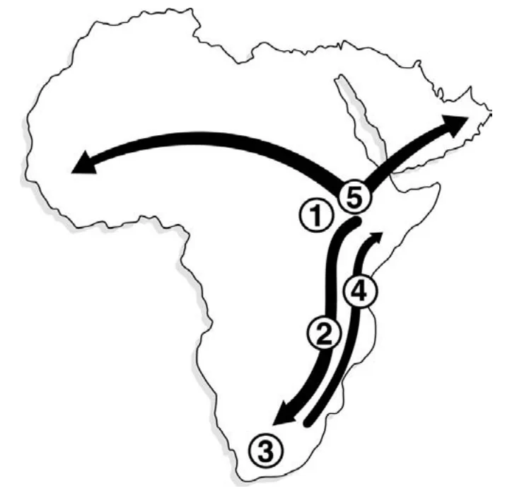<figcaption>Hình 5.1 Hướng giả định về nguồn gốc và sự di cư của người hiện đại.</figcaption></figure>
<p>Ghi chú và nguồn: 1. người hiện đại lần đầu tiên xuất hiện ở Đông Phi vào khoảng 200.000 năm trước (McDougall và cộng sự, 2005); 2. một phần quần thể Đông Phi di cư đến Nam Phi bắt đầu từ khoảng 150.000 năm trước (Behar và cộng sự, 2008); 3. trí thông minh con người “hiện đại” xuất hiện dọc theo bờ biển Nam Phi vào khoảng 70.000–80.000 năm trước (Henshilwood và cộng sự, 2001); 4. cuộc di cư của một bộ phận quần thể Nam Phi ngược trở lại Đông Phi diễn ra ngay sau đó (Behar và cộng sự, 2008); 5. các quần thể Đông Phi và Nam Phi hòa nhập di cư dọc theo bờ biển Nam Á đến tận Úc, bắt đầu từ khoảng 65.000–70.000 năm trước (Macaulay và cộng sự, 2005), cũng như đến các vùng khác của châu Phi (Behar và cộng sự, 2008).</p>
<p>Một lời giải thích hợp lý cho những tiến bộ trí tuệ ở Nam Phi trong kỷ Pleistocen muộn là sự thay đổi trong chế độ ăn uống – cụ thể là việc tiêu thụ rộng rãi động vật có vỏ (hải sản có vỏ) – vốn diễn ra vào khoảng 100.000 năm trước tại các vùng ven biển Nam Phi và có thể ở những nơi khác. Một lời giải thích thứ hai, mang tính suy đoán hơn, liên quan đến các áp lực nhân khẩu học làm gia tăng mật độ dân số và trao đổi văn hóa. Như sẽ được xem xét trong các phần tiếp theo, cả hai thay đổi này đều có thể đã nâng cao đáng kể dopamine trong não lên mức đủ khả năng hỗ trợ trí tuệ tiên tiến mới, và thông qua di truyền biểu sinh, được truyền lại cho các thế hệ con người tiếp theo.</p>
<h3>5.3.1 Tầm quan trọng của việc tiêu thụ động vật có vỏ</h3>
<p>Một số nhà nghiên cứu (ví dụ: Erlandson, 2001) tin rằng việc con người tiêu thụ động vật biển bắt đầu từ 150.000 năm trước, có thể do một cuộc di cư ra ven biển để thoát khỏi các vùng nội địa ngày càng khô cằn, và bằng chứng đơn lẻ về khả năng tiêu thụ động vật có vỏ đã được tìm thấy ở Eritrea có niên đại 125.000 năm trước (Walter và cộng sự, 2000) và tại Pinnacle Point ở Nam Phi khoảng 160.000 năm trước (Marean và cộng sự, 2007). Tuy nhiên, người ta thường chấp nhận rằng việc vận chuyển và tiêu thụ rộng rãi động vật có vỏ đã xảy ra cách đây chưa đầy 100.000 năm dọc theo bờ biển Nam Phi (Broadhurst và cộng sự, 1998; Dobson, 1998; McBrearty và Brooks, 2000). Động vật có vỏ rất giàu i-ốt và các axit béo thiết yếu (Broadhurst và cộng sự, 1998; Dobson, 1998), cả hai chất này đều đã được chứng minh là làm tăng hoạt động của dopamine và sự phát triển trí tuệ (DeLange, 2000; Wainwright, 2002). I-ốt, được tìm thấy trong thịt đỏ nhưng đặc biệt nhiều trong động vật biển, được tuyến giáp chuyển hóa thành thyroxine, chất này đến lượt mình kích thích tyrosine hydroxylase và việc sản xuất dopa (xem Previc, 2002), trong khi các axit béo thiết yếu được biết là làm tăng sự gắn kết thụ thể dopamine và nồng độ dopamine (Delion và cộng sự, 1996; Wainwright, 2002). Như đã lưu ý trước đó, tình trạng thiếu i-ốt, dẫn đến giảm nồng độ dopamine và norepinephrine, là nguyên nhân đơn lẻ lớn nhất có thể phòng ngừa được gây ra chậm phát triển trí tuệ trên thế giới hiện nay (Boyages và Halpern, 1993; DeLange, 2000). Ngược lại, cường giáp thường xuyên gắn liền với chứng loạn thần qua trung gian dopaminergic (Benvenga và cộng sự, 2003). Tổng quát hơn, thời điểm và lượng tiết hormone tuyến giáp là một ảnh hưởng quan trọng đối với sự hình thành loài ở động vật có vú, và nó đặc biệt liên quan đến quá trình thuần hóa (Crockford, 2002).</p>
<p>Như được tổng quan bởi Gagneux và cộng sự (2001) và Previc (2002), dường như đã có một sự gia tăng lớn trong việc sản xuất hormone tuyến giáp (đặc biệt là T3, được hình thành từ i-ốt) cùng với sự xuất hiện của người hiện đại. Phát hiện này nhất quán với sự tương đồng của nhiều đặc điểm thể chất bề ngoài giữa tinh tinh và những người bị thiếu i-ốt (O’Donovan, 1996) cũng như tuyến giáp tương đối phình to của con người so với tinh tinh (Crile, 1934). Ngược lại, tinh tinh và các loài động vật có vú khác có tuyến thượng thận tương đối lớn hơn, vốn quan trọng cho trạng thái kích thích thoáng qua, thứ mà dopamine não ức chế. Một khác biệt quan trọng giữa người Neanderthal và người hiện đại dường như là lượng i-ốt trong cơ thể họ, vì người Neanderthal biểu hiện nhiều đặc điểm xương (xương đùi lớn, vóc dáng thấp, gờ mày nhô ra, não lớn hơn) đặc trưng cho những người hiện đại bị thiếu i-ốt (Dobson, 1998) và bởi vì người hiện đại thời tiền sử được cho là đã tiêu thụ tương đối nhiều động vật có vỏ hơn là thú săn lớn (Dobson, 1998; McBrearty và Brooks, 2000; Richards và cộng sự, 2001). Lượng lớn động vật có vỏ được tiêu thụ đặc biệt đáng chú ý trong các cuộc khai quật ở sông Klasies, nhưng tổ tiên loài người hiện đại của chúng ta nhìn chung có xu hướng sinh sống ở các vùng ven biển, sông và hồ lớn nơi động vật thủy sinh dễ dàng kiếm được. Có một số bằng chứng thăm dò cho thấy người Neanderthal, ít nhất là vào giai đoạn đầu, ít có khả năng sinh sống ở các vùng ven biển hoặc các vùng giàu i-ốt hơn người hiện đại (Dobson, 1998), ngay cả khi người Neanderthal giai đoạn sau bắt đầu tiêu thụ nhiều động vật biển hơn. Từ lâu người ta đã tranh luận tại sao người hiện đại lại thay thế người Neanderthal nhanh chóng đến vậy ở châu Âu sau 50.000 năm trước, nhưng sự thay thế quần thể đã diễn ra phổ biến ngay cả giữa các quần thể người hiện đại với nhau và quần thể tiến vào thường sở hữu phổ chế độ ăn đa dạng hơn trong những trường hợp này (O’Connell, 2007). Sự phụ thuộc quá mức của người Neanderthal vào các loài thú săn lớn có thể đặc biệt tai hại khi Kỷ Băng Hà cuối cùng tiến đến đỉnh điểm vào khoảng 30.000 năm trước khi thú săn lớn trở nên khan hiếm hơn và chịu sự cạnh tranh với các quần thể người hiện đại đang phát triển. Việc người Neanderthal tương đối không có khả năng chuyển đổi thành công sang các nguồn thực phẩm đa dạng hơn có thể chẳng liên quan gì đến bộ não của họ, ở chỗ các quần thể người hiện đại thường xuyên cho thấy sự kháng cự trong việc thay đổi chiến lược tìm kiếm thức ăn khi lãnh thổ của họ bị các nhóm người khác xâm lấn, điều này chủ yếu có thể quy cho các yếu tố văn hóa – xã hội (O’Connell, 2007).</p>
<p>Xét đến tầm quan trọng của tuyến giáp đối với sự phát triển và chức năng não bộ con người, thật hợp lý khi kết luận rằng việc tiêu thụ động vật có vỏ là một động lực lớn đưa tâm trí dopaminergic đến độ chín muồi. Thực tế, các hiện vật chế tác công cụ tiên tiến trong Thời đại Đồ đá Giữa trùng khớp cả về mặt địa lý lẫn thời gian với việc tiêu thụ động vật có vỏ tại nhiều địa điểm ven biển ở Đông và Nam Phi (McBrearty và Brooks, 2000; Walter và cộng sự, 2000). Tuy nhiên, chỉ riêng việc tiêu thụ động vật có vỏ tăng lên không thể dẫn đến trí thông minh bậc cao, bởi vì nếu vậy thì loài khỉ đuôi dài ăn cua sẽ xếp vào hàng những loài thông minh nhất. Có thể giả định rằng sự gia tăng dopamine do chế độ ăn uống ở người giai đoạn sau đã tỏ ra hiệu quả như vậy một phần là vì nó được xây dựng trên sự gia tăng dopamine trước đó, vốn là một phần của sự thích nghi sinh lý chung cho hoạt động bền bỉ. Hơn nữa, việc gia tăng tiêu thụ động vật có vỏ có lẽ không phải là yếu tố phi di truyền duy nhất chịu trách nhiệm cho bước tiến văn hóa kịch tính bắt đầu từ chưa đầy 100.000 năm trước, bởi vì ngay cả những người thiếu i-ốt hiện nay, bất chấp trí tuệ suy giảm, vẫn có khả năng tạo ra nghệ thuật và tôn giáo. Hơn nữa, vì con người có lẽ đã bắt đầu tiêu thụ động vật biển với số lượng lớn ít nhất vài thiên niên kỷ trước khi bùng nổ các hiện vật trí tuệ tiên tiến vào khoảng 80.000 năm trước, việc tiêu thụ động vật có vỏ có thể đã góp phần vào nhưng không đảm bảo cho sự trỗi dậy của tâm trí dopaminergic.</p>
<h3>5.3.2 Vai trò của áp lực dân số và trao đổi văn hóa</h3>
<p>Mặc dù đóng góp trực tiếp vào việc cải thiện chức năng trí tuệ, sự tiến hóa của trí thông minh và hành vi con người còn được hỗ trợ bởi một lợi ích tổng quát hơn của việc tiêu thụ động vật biển – cụ thể là nó đã cải thiện và ổn định đáng kể chế độ ăn uống của con người và qua đó thúc đẩy tuổi thọ cao hơn (McBrearty và Brooks, 2000). Tuổi thọ gia tăng, đến lượt mình, được cho là đã dẫn đến áp lực dân số, gia tăng di cư và gia tăng sự trao đổi giữa các nhóm người nhỏ (McBrearty và Brooks, 2000; Mellars, 2006). Mặc dù có lập luận cho rằng người hiện đại về mặt di truyền đã trải qua một đợt suy giảm dân số lớn do hạn hán và các điều kiện khí hậu khác (Ambrose, 1998), tuyên bố này đã bị bác bỏ (Hawks và cộng sự, 2000) và khó có thể đúng ở Nam Phi, nơi có nguồn cung cấp động vật biển dồi dào. Chắc chắn, số lượng đáng kể các địa điểm khảo cổ lớn từ Cape Town ở phía tây đến Port Elizabeth ở phía đông (Henshilwood và cộng sự, 2001) cho thấy các vùng ven biển Nam Phi có dân cư đông đúc trong Thời đại Đồ đá Giữa. Và bằng chứng xương cho thấy người hiện đại ở châu Âu có tuổi thọ cao hơn một chút so với những người anh em họ Neanderthal của họ (Arsuaga, 2003). Áp lực dân số do tuổi thọ gây ra có lẽ đã theo sau sự gia tăng tiêu thụ động vật có vỏ với một độ trễ nhất định, và những thay đổi môi trường ở châu Phi cận Sahara từ 70.000 đến 80.000 năm trước cũng được cho là đã làm tăng thêm sự cạnh tranh tài nguyên và đẩy nhanh tốc độ di cư cũng như trao đổi giữa các quần thể (Mellars, 2006). Cặp yếu tố này có thể giải thích độ trễ giữa việc tiêu thụ rộng rãi động vật có vỏ ban đầu và những tiến bộ văn hóa đáng kinh ngạc cách đây 75.000 năm.</p>
<p>Sự gia tăng trao đổi xã hội được biết là chất xúc tác cho các tiến bộ trí tuệ ở các loài linh trưởng tiên tiến khác, chẳng hạn như đười ươi Sumatra (Van Schaik, 2006), và vai trò của các thành phố trong việc thúc đẩy trao đổi xã hội và tiến bộ trí tuệ đã được công nhận từ lâu.10</p>
<p>10 Một ví dụ thú vị gần đây về vai trò của các yếu tố xã hội trong sự phát triển nhận thức là trường hợp của những trẻ em khiếm thính ở Nicaragua trước đây sống ở nhà trong sự cô lập về ngôn ngữ</p>
<p>Hơn nữa, sự gia tăng dân số và trao đổi có thể khiến việc đồng nhất bản thân với nhóm của mình trở nên quan trọng hơn nữa. Sự phát triển của nghệ thuật và có thể cả âm nhạc ở châu Phi cận Sahara vào cuối Thời đại Đồ đá Giữa có thể đều là biểu hiện của xu hướng này, xét đến vai trò của chúng trong việc nhận diện xã hội và gắn kết nhóm (Brown, 2000; Shea, 2003). Hơn nữa, sự tiến bộ văn hóa chậm hơn ở Nam Á so với châu Âu vào cuối Thời đại Đồ đá Giữa (60.000–30.000 năm trước) cũng như sự tiến triển văn hóa chậm hơn của người Neanderthal so với người hiện đại đều một phần được quy cho mật độ dân số cao hơn của người hiện đại ở châu Âu (James và Petraglia, 2005; Wynn và Coolidge, 2004).</p>
<p>Sự gia tăng dân số và gia tăng trao đổi văn hóa – xã hội không chỉ hưởng lợi từ năng lực trí tuệ ngày càng tăng mà đến lượt chúng còn có thể đã đóng góp vào năng lực đó về mặt sinh học. Tiến hóa văn hóa được biết là làm thay đổi di truyền sinh học (Laland và cộng sự, 1999), và những căng thẳng cạnh tranh cùng động lực thành tích của xã hội đô thị hiện đại được cho là góp phần làm tăng nồng độ dopamine (Pani, 2000; Previc, 2007). Thực tế, các rối loạn tăng dopaminergic như tâm thần phân liệt và tự kỷ có nhiều khả năng xảy ra ở khu vực đô thị hơn (Lauritsen và cộng sự, 2005; Marcellis và cộng sự, 1999; Palmer và cộng sự, 2006), và một dạng nhẹ hơn của những áp lực này có thể đã hiện diện ở một mức độ nhất định ngay cả ở châu Phi cận Sahara vào cuối kỷ Pleistocen. Mặt khác, thật khó tưởng tượng một người hiện đại ngay cả ở một vùng dân cư thưa thớt lại không tạo ra nghệ thuật, đồ trang sức hay các vật dụng tiên tiến khác, và chắc chắn không có quần thể linh trưởng đông đúc nào từng đạt đến gần mức sản phẩm trí tuệ của một người bình thường. Tuy nhiên, lượng dopamine tăng lên do cải thiện chế độ ăn uống và tăng cường tương tác xã hội, xây dựng trên nền tảng một tâm trí vốn đã mang tính tiền-dopaminergic, có thể đã cùng nhau đủ sức đặt nền móng cho tâm trí dopaminergic thực thụ.</p>
<p>Phù hợp với bộ gen tương đối ổn định, không có thay đổi giải phẫu lớn nào gắn liền với sự tiến triển dopaminergic giai đoạn sau này, mặc dù bộ não con người có giảm nhẹ kích thước từ ~1.500 cc xuống mức 1.350 cc ngày nay (Carroll, 2003). Nhưng một khi sự tiến hóa của họ người đã tiến đến giai đoạn sau của nó, những thay đổi di truyền không còn cần thiết để sự gia tăng dopaminergic được biểu hiện trên toàn bộ loài. Những ảnh hưởng văn hóa và chế độ ăn uống lên dopamine, được truyền từ trước khi sinh, hẳn đã được chuyển giao và tăng cường qua các thế hệ kế tiếp và qua đó trở thành một phần vĩnh viễn trong di sản của chúng ta một cách hiệu quả. Ngay cả khi con người di chuyển vào đất liền và không còn phụ thuộc nhiều vào và sau đó được đưa vào môi trường sinh hoạt nhóm nên đã dễ dàng tự hình thành một ngôn ngữ mới (mới nổi) (Senghas và cộng sự, 2004).</p>
<p>động vật thủy sinh nữa, những thành tựu văn hóa qua trung gian dopaminergic của họ vẫn tự duy trì được. Do đó, bộ gen và giải phẫu con người tương đối ổn định bắt đầu từ khoảng 200.000 năm trước không chỉ không đủ để xúc tác cho cuộc bùng nổ trí tuệ xảy ra hơn 100.000 năm sau đó, mà nó còn không cần thiết để duy trì trí tuệ tiên tiến mới khi người hiện đại rời châu Phi và lan tỏa khắp thế giới.</p>
<h3>5.4 Tóm tắt</h3>
<p>Theo kịch bản vừa trình bày, sự mở rộng kịch tính và tầm quan trọng chức năng ngày càng tăng của các hệ thống dopamine trong não người đã diễn ra trong một khoảng thời gian dài, chỉ song hành một phần với những thay đổi về ngoại hình của chúng ta, và sự gia tăng dopamine vẫn tiếp tục rất lâu sau dòng dõi di truyền chung của chúng ta. Đối với những người tin rằng trí thông minh vĩ đại của con người so với phần còn lại của thế giới linh trưởng đòi hỏi một quá trình tiến hóa cao siêu, lý thuyết này gây thất vọng sâu sắc ở chỗ:</p>
<p>1..không có sự giả định nào về các đột biến gen cụ thể cho ngôn ngữ hay các chức năng trí tuệ bậc cao khác; 2..không có tầm quan trọng nào được quy cho những thay đổi về kích thước và hình dạng hộp sọ; và 3..hầu hết trí thông minh của chúng ta được coi là sản phẩm phụ của sự thích nghi sinh lý, chế độ ăn uống và áp lực dân số.</p>
<p>Tuy nhiên, lý thuyết này lại nhất quán với một số sự thật cốt yếu, bao gồm:</p>
<p>1..việc thiếu mối quan hệ nhân quả giữa kích thước não và trí thông minh; 2..mối liên hệ mong manh của bộ gen người với trí thông minh; 3..tầm quan trọng của dopamine đối với trí tuệ bậc cao của chúng ta (Chương 3); 4..sự mở rộng đặc hiệu của thể vân và vỏ đại não giàu dopamine so với phần còn lại của não ở người khi so sánh với tinh tinh (Rapoport, 1990); 5..những tác động đã biết của chế độ ăn uống và sinh lý học lên chức năng dopamine; 6..nguồn gốc châu Phi cận Sahara của nhân loại; và 7..khoảng cách >100.000 năm giữa sự thiết lập giải phẫu và bộ gen người hiện đại với sự xuất hiện của nhiều hiện vật văn hóa gắn liền với trí tuệ con người hiện đại rõ rệt.</p>
<p>Lý thuyết này hợp nhất các yếu tố di truyền, biểu sinh và văn hóa, đồng thời kết hợp lý thuyết tiệm tiến châu Phi của McBrearty và Brooks (2000) với cuộc bùng nổ trí tuệ tổng quát được Mithen (1996) đặt ra, nhưng với tâm điểm châu Âu của “Vụ Nổ Lớn” trí tuệ của ông nay được đặt vào một thời điểm sớm hơn ở Nam Phi. Ngoài ra, lý thuyết này giải thích rõ ràng tại sao các năng lực nhận thức như ngôn ngữ, tôn giáo, nghệ thuật, chế tác công cụ tiên tiến, khai thác mỏ, trao đổi đường dài, v.v. không xuất hiện như những chọn lọc di truyền riêng biệt mà đúng hơn là phụ thuộc vào một sự gia tăng cơ bản hơn về tiềm năng nhận thức, biểu hiện qua trí nhớ làm việc được tăng cường, tính linh hoạt nhận thức, khoảng cách không gian và thời gian (tư duy ngoại tuyến - off-line thinking), tốc độ tinh thần và sự sáng tạo vốn chỉ có thể tìm thấy trong một bộ não giàu dopamine (xem thêm Wynn và Coolidge, 2004). Cuối cùng, lý thuyết này bác bỏ quan niệm cho rằng sự tiến hóa của trí thông minh bậc cao ở người phụ thuộc thiết yếu vào năng lực nói, vì năng lực nói đã hiện diện ít nhất 200.000 năm trước ở những người hiện đại về mặt giải phẫu đầu tiên và có lẽ thêm 100.000 hoặc 200.000 năm trước đó nữa ở người cổ đại (Arensburg và cộng sự, 1990), mà không dẫn đến bất kỳ tiến bộ trí tuệ kịch tính nào.</p>
<p>Bằng cách làm nổi bật sự di truyền biểu sinh của hoạt động dopaminergic, kịch bản này cho thấy lý do tại sao sự trỗi dậy của tâm trí dopaminergic không gắn liền với một quá trình di truyền độc nhất, bất biến mà đúng hơn là một quá trình tiếp tục tiến triển rất lâu sau khi bộ gen và giải phẫu chung của chúng ta được xác lập. Thực tế, như được mô tả trong chương tiếp theo, tâm trí dopaminergic dường như, ít nhất là ở các quốc gia công nghiệp hóa, đã trải qua ít nhất hai cuộc chuyển đổi bổ sung nữa trong lịch sử gần đây hơn của chúng ta.</p><h2 class="chapter-title">Chương 6 — Tâm trí dopamine trong lịch sử</h2>
<h2>6 Tâm trí dopaminergic trong lịch sử</h2>
<p>Nếu một người tin rằng sự tiến hóa của loài người – đặc biệt là ở các khía cạnh trí tuệ – không phụ thuộc hoàn toàn hay thậm chí phần lớn vào kích thước não bộ và sự di truyền gen, thì sự tiến hóa của loài người chưa bao giờ ngừng lại. Do đó, sẽ là sai lầm nếu cho rằng tất cả con người và các xã hội hiện đại về mặt di truyền đều có cùng một nền tảng hóa học thần kinh, và vì thế có cùng khả năng trí tuệ, tính cách, mục tiêu cũng như khuynh hướng mắc các rối loạn tâm thần. Cụ thể hơn, có lý do để tin rằng mức dopamine ở các thành viên của những xã hội công nghiệp hóa hiện đại ngày nay cao hơn nhiều so với ở các xã hội nguyên thủy hơn. Chương này sẽ tập trung vào hai kỷ nguyên lịch sử lớn – sự chuyển đổi từ các xã hội săn bắt-hái lượm sang các nền văn minh cổ đại và sự mở rộng mạnh mẽ của ý thức và lối sống dopaminergic trong thế kỷ XX. Khi làm như vậy, chương này sẽ làm nổi bật vai trò của những cá nhân có ảnh hưởng trong lịch sử, những người đã thể hiện các đặc điểm và hành vi dopaminergic và đóng vai trò quan trọng trong việc định hình thế giới dopaminergic hiện đại của chúng ta.</p>
<h3>6.1 Sự chuyển đổi sang xã hội dopaminergic</h3>
<p>Bất chấp một mức độ thành thạo kỹ thuật nhất định, người Neanderthal và thậm chí cả con người hiện đại trong 100.000 năm đầu tiên dường như đã thiếu khả năng sáng tạo và năng lực tư duy “ngoại tuyến” (off-line) phổ biến như ở con người sau này. Một khi “Vụ nổ lớn” văn hóa thời tiền sử tiến triển đến những giai đoạn cuối cùng và Kỷ Băng Hà lớn cuối cùng bắt đầu rút đi khoảng 20.000 năm trước, sự tiến hóa trí tuệ đã diễn ra với tốc độ nhanh chóng, dường như chỉ mất một khoảnh khắc từ Thời đại Đồ đá mới và sự khởi đầu của nông nghiệp đến các nền văn minh cổ đại và các Thời đại Đồ đồng đỏ, Đồ đồng thau và Đồ sắt. Đan xen với những giai đoạn trì trệ và tuyệt vọng nhất thời, những tiến bộ văn hóa dưới hình thức văn học, toán học, bộ luật, hàng hải, kỹ thuật và kiến trúc đã phát triển đều đặn qua nhiều thiên niên kỷ và ở nhiều nơi trên thế giới, thường độc lập với nhau. Cuối cùng, sự tích lũy dần dần của tri thức và thương mại đã nhường chỗ cho thời kỳ Phục Hưng ở châu Âu, đặt nền móng cho sự mở rộng cuối cùng của tâm trí dopaminergic. Tuy nhiên, phải đến nửa sau của thế kỷ XX, tâm trí dopaminergic mới đạt đến trạng thái tột đỉnh của nó. Bằng chứng về trạng thái dopaminergic tăng cao trong thế kỷ XX này được tìm thấy ở sự gia tăng nhanh chóng của trí thông minh được trung gian bởi dopamine và những tiến bộ công nghệ (Dickens và Flynn, 2001), cũng như ở hàng loạt các rối loạn tâm thần siêu dopaminergic. Không giống như những lần gia tăng mức dopamine trước đó, không có sự thích nghi môi trường hay thay đổi chế độ ăn uống lớn nào gắn liền với sự gia tăng dopaminergic kể từ thời tiền sử. Thay vào đó, phần lớn sự gia tăng dopamine xảy ra là vì mức dopamine cao hơn đã trở nên cực kỳ thích nghi đối với các cá nhân trong việc sinh tồn và phát đạt trong các hệ thống kinh tế - xã hội ngày càng phân tầng, phức tạp và cạnh tranh nổi lên trong suốt lịch sử loài người.</p>
<p>Có lẽ sẽ rất hữu ích khi điểm lại ngắn gọn xem các xã hội săn bắt-hái lượm sơ khai nhất hẳn đã khác biệt như thế nào so với các xã hội công nghiệp và hậu công nghiệp hiện tại của chúng ta. Người ta đã ghi nhận nhiều lần rằng những người săn bắt-hái lượm ngày nay chỉ làm việc tối đa khoảng 20–30 giờ mỗi tuần, và mất rất ít thời gian cho việc đi lại. Mặc dù một số tác giả cho rằng những người săn bắt-hái lượm cấu thành nên cái mà Sahlin gọi là “xã hội sung túc nguyên thủy” (Sahlin, 1972; Taylor, 2005), lượng thời gian nhàn rỗi của họ có lẽ đã bị phóng đại phần nào, ít nhất là trong trường hợp của phụ nữ (Caldwell và Caldwell, 2003; Hawkes và O’Connell, 1981). Tuy nhiên, thay vì thức dậy một cách cưỡng ép vào một giờ nhất định để bắt đầu mỗi ngày làm việc – hoặc liên tục lo lắng về tương lai – công việc dường như được thực hiện một cách ngẫu hứng hơn và có “định hướng hiện tại” lớn hơn nhiều. Công việc cũng được thực hiện như một hoạt động cộng đồng, việc chia sẻ tài nguyên là chuẩn mực (Taylor, 2005), và phần lớn thời gian nhàn rỗi cũng được dành cho các hoạt động cộng đồng như trò chơi và âm nhạc (Sahlin, 1972), trong đó âm nhạc được cho là xuất hiện chủ yếu như một hoạt động nhằm thúc đẩy sự gắn kết tình cảm - xã hội (Brown, 2000). Ngay cả cuộc sống nông nghiệp cũng bị nhiều người săn bắt-hái lượm coi là quá đòi hỏi; nếu được lựa chọn, họ thích cuộc sống săn bắt-hái lượm đơn giản hơn, vốn hầu như không có tài sản vật chất (Sahlin, 1972). Thật vậy, những phần thưởng vật chất không liên quan đến việc tiêu thụ ngay lập tức (tức là các phần thưởng thứ cấp) có giá trị hạn chế trong các xã hội này, vì chúng chỉ tạo ra các vấn đề hậu cần do việc thường xuyên phải di chuyển đến các địa điểm mới theo lối sống du mục. Mức tiêu thụ năng lượng bình quân đầu người của người săn bắt-hái lượm được ước tính là 3.000 calo mỗi ngày, tức là chưa đến 1% so với con người hiện đại, những người có nhu cầu rất lớn về giao thông vận tải và điện năng (Clark, 1989: 102). Và, những người săn bắt-hái lượm phần lớn không mắc phải các bệnh tật và dịch bệnh gắn liền với đời sống đô thị, chẳng hạn như sởi, cúm, dịch hạch, đậu mùa, v.v. Tất nhiên, hẳn đã có nhiều căn bệnh đặc hữu ở những người săn bắt-hái lượm thời tiền sử, và tuổi thọ trung bình chung của họ được ước tính chỉ là 21 năm (Acsadi và Nemeskeri, được trích dẫn trong Caldwell và Caldwell, 2003), thấp hơn đáng kể so với những người săn bắt-hái lượm hiện nay (~30–35 năm), những người có công cụ tốt hơn nhiều và có tham gia trồng trọt ở mức độ hạn chế (Arsuaga, 2003).</p>
<p>Taylor (2005) và những người khác đã xem xét các bằng chứng cho thấy các xã hội săn bắt-hái lượm sơ khai tương đối phi bạo lực và rất cởi mở về mặt tình dục, phù hợp với tỷ lệ mắc các bệnh lây truyền qua đường tình dục cao ở những người săn bắt-hái lượm hiện nay như người !Kung San (Caldwell và Caldwell, 2003). Chắc chắn không có quân đội thường trực nào trong số những người săn bắt-hái lượm, vì họ sống thành từng nhóm nhỏ, và nhiều nhóm trong số họ chắc chắn rất hòa bình, dựa trên các tác phẩm nghệ thuật, hài cốt của họ, và thực tế là nhiều xã hội săn bắt-hái lượm ngày nay về cơ bản là phi bạo lực (Taylor, 2005). Nhưng, chắc chắn cũng có bằng chứng về các cuộc đụng độ bạo lực liên quan đến nhiều nhóm tiền sử, chẳng hạn như người Carib và người Yanomamo ở Nam Mỹ, và tới 25% số ca tử vong ở nam giới trưởng thành thời tiền sử được quy cho bạo lực (Coleman, được trích dẫn trong Caldwell và Caldwell, 2003). Người ta thường đồng ý rằng các xã hội săn bắt-hái lượm thời tiền sử bình đẳng hơn nhiều so với các xã hội nông nghiệp tiếp theo sau đó, với phụ nữ và nam giới cùng chia sẻ việc nuôi dạy con cái và công việc, và hầu hết các xã hội này – cũng như một số lượng lớn các xã hội còn sót lại – có lẽ đã có hệ thống mẫu hệ. Các hệ thống tôn giáo của họ hầu như không nhấn mạnh đến các vị thần xa xôi, siêu thế tục hay tối cao (ví dụ: “các vị thần bầu trời”) mà thay vào đó cầu khẩn các linh hồn tự nhiên và tổ tiên. Cuối cùng, các dân tộc tiền sử có xu hướng sống hòa mình vào thiên nhiên hơn so với hậu duệ làm nông nghiệp của họ. Điều này không có nghĩa là họ là những thiên thần môi trường – xét cho cùng, nhiều loài (nếu không muốn nói là hầu hết) động vật có vú lớn và thú có túi bên ngoài châu Phi và châu Á đã biến mất trước buổi bình minh của nông nghiệp, và tập quán đốt phá của các xã hội tiền sử đã góp phần gây ra nạn phá rừng và xói mòn ở nhiều nơi trên thế giới (Roszak, được trích dẫn trong Taylor, 2005).</p>
<p>Khi Trái Đất bắt đầu ấm lên đáng kể vào khoảng 20.000 năm trước, lối sống săn bắt-hái lượm cuối cùng đã nhường chỗ cho sự phát triển của trồng trọt nguyên thủy (ví dụ: gieo hạt các loại ngũ cốc hoang dã và cây ăn quả) và chăn thả du mục có lẽ bắt đầu cách đây 10.000–15.000 năm khi áp lực dân số làm giảm nguồn cung cấp các loài thú săn lớn ở Tây Nam Á (Arsuaga, 2003; Clark, 1989; Weiss và Bradley, 2001). Sự pha trộn giữa săn bắt và hái lượm, chăn thả di cư và trồng trọt cuối cùng đã được thay thế bằng sự phụ thuộc nhiều hơn vào việc canh tác đất đai và sự phát triển của các khu định cư nông nghiệp cố định vào khoảng 10.000 năm trước, điều này dẫn đến sự gia tăng mức tiêu thụ năng lượng lên ~15.000 calo mỗi ngày. Người ta tin rằng tuổi thọ của người làm nông nghiệp ban đầu có thể đã giảm nhẹ (Clark, 1989; Taylor, 2005), vì việc sống định cư khép kín hơn khiến con người tiếp xúc nhiều hơn với các dịch bệnh và bệnh tật từ động vật. Tuy nhiên, cũng có bằng chứng cho thấy dân số loài người có thể đã mở rộng nhanh hơn trước đây, điều này chỉ ra rằng chế độ ăn uống được cải thiện có thể đã làm tăng khả năng sinh sản và bù đắp cho tỷ lệ tử vong cao hơn (Caldwell và Caldwell, 2003).</p>
<p>Với sự ra đời của nông nghiệp, mối quan hệ tâm lý với thiên nhiên đã bị biến đổi mạnh mẽ – thay vì sống cùng thiên nhiên, các xã hội nông nghiệp tận tâm vào việc biến đổi (kiểm soát) thiên nhiên thông qua canh tác, thủy lợi, thu hoạch, v.v. Không giống như những người săn bắt-hái lượm, vốn có ít tài sản cố định và có thể dễ dàng thay đổi chế độ ăn uống trong thời kỳ hạn hán và/hoặc di cư, các xã hội nông nghiệp dựa trên một nền kinh tế và lối sống định cư hơn và mang tính chu kỳ, phụ thuộc vào việc lưu trữ (tích trữ) và dự đoán thời tiết theo mùa để gieo trồng và thu hoạch (Clark, 1989). Cả việc tích trữ và dự đoán đều đòi hỏi một định hướng lớn hơn hướng tới các sự kiện tương lai, vốn là dấu ấn đặc trưng của nhân cách dopaminergic (xem Chương 3); thật vậy, tích trữ là một triệu chứng ám ảnh cưỡng chế kinh điển và phụ thuộc vào sự toàn vẹn của các hệ thống dopaminergic (Kalsbeek và cộng sự, 1988). Sự nhạy cảm lớn hơn đối với các chu kỳ mặt trăng và mặt trời cũng dẫn đến sự mở rộng cảm nhận về không gian phía trên được trung gian bởi dopamine, và các biểu tượng tôn giáo siêu thế tục (tức là các vị thần bầu trời) bắt đầu thay thế các hình tượng động vật và con người thần thoại vốn cấu thành nên những biểu tượng tôn giáo đầu tiên.</p>
<p>Đời sống nông nghiệp đã dẫn đến sự xuất hiện của một số “tiền văn minh” ở khu vực mà Taylor (2005) gọi là Saharasia, một dải lãnh thổ rộng lớn kéo dài từ Bắc Phi đến sông Ấn. Trong vài nghìn năm đầu tiên sau khi nông nghiệp khởi phát, Trái Đất ấm lên và các sông băng tan chảy đã tạo ra lượng mưa ở vùng rộng lớn này hầu như đủ để nuôi dưỡng những thảo nguyên rộng lớn và thậm chí cả rừng ở các vùng đất cao hơn. Thức ăn dồi dào, các khu định cư không quá đông đúc – có lẽ chỉ từ một trăm đến vài nghìn người ở những nơi lớn hơn – và các xã hội nhìn chung hòa bình và bình đẳng (hầu hết các ngôi nhà đều có cùng kiểu dáng và kích thước cơ bản). Các nữ thần Trái Đất và các nữ tu sĩ giữ vị trí nổi bật trong các nền văn minh sơ khai, và hành vi tình dục vẫn còn tương đối cởi mở.</p>
<p>Tuy nhiên, theo lời kể của Taylor (2005), nhiệt độ toàn cầu tiếp tục tăng và những sông băng cuối cùng còn sót lại trong khu vực bắt đầu tan chảy. Cùng với việc chăn thả quá mức và các tập quán nông nghiệp tàn phá khác, biến đổi khí hậu toàn cầu đã khiến những vùng rộng lớn của Saharasia bị khô hạn, và sự cạnh tranh ngày càng tăng đối với tài nguyên đã nảy sinh. Cách đây 6.000 năm, các thành phố đã phát triển lớn hơn, sự phân tầng xã hội gia tăng, chiến tranh đột ngột bùng nổ trên quy mô lớn, và các giá trị nam tính bắt đầu chiếm ưu thế.</p>
<p>Cuộc chiến tranh liên miên diễn ra mang tính trí tuệ hóa hơn, vô nghĩa hơn và đáng lo ngại hơn so với thời tiền sử, vì nó thường là màn phô trương quyền lực hoang tưởng tự đại của các nhà cai trị và thường xuyên đi kèm với việc cắt xẻo thân thể và tra tấn (Wilson, 1985). Các tôn giáo tự nhiên bị thay thế bởi các tôn giáo thứ bậc siêu thế tục, trong đó hầu hết các nam thần và nam tu sĩ thống trị tối cao, và một thái độ khác đối với thiên nhiên đã xuất hiện (thống trị thay vì chung sống). Những thành tựu công nghệ trong Thời đại Đồ đồng thau và Đồ sắt diễn ra với tốc độ đáng kinh ngạc, một phần (hoặc thậm chí phần lớn) được thúc đẩy bởi nhu cầu về vũ khí và áo giáp tốt hơn; thật vậy, năng lực công nghệ của các nền văn minh cổ đại vĩ đại đến mức một số sản phẩm của họ – đáng chú ý là Cơ chế Antikythera nổi tiếng, một máy tính thiên văn được làm từ ba mươi bánh răng – tinh vi hơn bất cứ thứ gì được sản xuất trong 1.000 năm tiếp theo (Charette, 2006). Đời sống hàng ngày trở nên mang tính “mệnh đề” (propositional) hơn nhiều – tức là được điều chỉnh bởi các bộ luật phức tạp, trừu tượng và các văn bản giao tiếp. Một thái độ tiêu cực hơn đối với thiên nhiên, các biểu tượng mẫu hệ của thiên nhiên và chính cơ thể con người đã xuất hiện, và sự cởi mở tình dục cũng như tình trạng khỏa thân một phần đã bị thay thế bằng việc che đậy cơ thể và vô số điều cấm đoán về tình dục. Địa vị được tôn vinh của các chiến binh nam giới và sự tập trung của cải trong các xã hội phân tầng hơn nhiều cuối cùng đã dẫn đến việc thay thế chế độ thừa kế và huyết thống mẫu hệ bằng huyết thống và thừa kế phụ hệ, điều này có thể đã hạn chế hơn nữa tự do tình dục của phụ nữ.1 Các cư dân của Trung Á và Tây Nam Á có thể là những người đầu tiên thể hiện những thái độ và lối sống mới này, nhưng các nền văn minh khác sớm noi theo và các thành bang có pháo đài lớn đã được xây dựng khắp khu vực này và thậm chí ở một số vùng của châu Âu, châu Phi và Đông Á. Phần đau đớn nhất của sự biến đổi môi trường xảy ra ngay sau khi kết thúc đợt dâng cao mực nước biển hậu băng hà dữ dội được gọi là Biển tiến Flandrian (Flandrian Transgression), trong đó một đợt hạn hán trên toàn thế giới với quy mô gần như không thể tưởng tượng nổi từ năm 2300 đến năm 2000 TCN đã dẫn đến sự sụp đổ của nhiều nền văn minh trên khắp thế giới và sự xuất hiện của những quần thể người tị nạn lớn (Bowen, 2005; Weiss và Bradley, 2001). Đến năm 1500 TCN, một trong những nền văn minh Saharasia sơ khai cuối cùng còn tương đối bình đẳng, hòa bình và cởi mở (nền văn minh Minoa ở đảo Crete) đã bị người Mycenae hiếu chiến hơn chinh phục.</p>
<p>1 Như đã được Primavesi (1991) tổng quan, sự đồng xuất hiện của quyền thống trị nam giới và của cải tài sản đã tạo ra nhu cầu về một huyết thống phụ hệ nghiêm ngặt mà tất yếu phải hạn chế tự do tình dục của phụ nữ. Không giống như trong xã hội mẫu hệ, nơi huyết thống hiển nhiên ngay từ khi sinh ra, huyết thống phụ hệ chỉ có thể được suy đoán nếu hành vi tình dục của phụ nữ bị giới hạn độc quyền với người chồng.</p>
<p>Sự chuyển đổi kịch tính của đời sống con người sang một trạng thái cạnh tranh hơn nhiều, bất bình đẳng và công nghệ hóa một cách tàn nhẫn đã được Taylor (2005) gọi là “Sự Sa Ngã” (The Fall), và nó có thể là cơ sở cho câu chuyện Kinh Thánh về Adam và Eve.2 Nó cũng gắn liền với một sự thay đổi lớn trong ý thức của con người. Con người trước kỷ nguyên này tự coi mình được bao quanh, kiểm soát và thậm chí được giúp đỡ bởi nhiều vị thần khác nhau; thật vậy, những gì ngày nay có thể bị coi là triệu chứng bệnh lý như ảo giác và hoang tưởng bị kiểm soát (hội chứng “sự kiểm soát từ bên ngoài”) thực ra có thể đã khá phổ biến và được chấp nhận trong thời gian này (Jaynes, 1976). Tuy nhiên, ý thức mới lại định vị con người như những tác nhân độc lập, tự nhận thức, và các vị thần mà họ từng đặt niềm tin lớn lao nhưng đã không thể ngăn chặn nhiều thế kỷ thảm họa thiên nhiên đã trở nên xa cách hơn và ít can dự vào việc kiểm soát suy nghĩ và hành động của họ hơn (Jaynes, 1976). Nhiều nhà lý thuyết, bao gồm Jaynes (1976), Taylor (2005) và Wilson (1985), đã lập luận rằng kỷ nguyên này đại diện cho sự khởi đầu của ưu thế bán cầu não trái, những suy nghĩ nội tâm, sự bùng nổ của bản ngã, sự hung hăng nam tính, tính siêu thế tục, góc nhìn thời gian tuyến tính và tư duy công nghệ. Chắc chắn những đặc điểm này đặc trưng hơn cho bán cầu não trái, nhưng không có bằng chứng thực tế nào cho thấy sự chuyên biệt hóa bên (lateralization) về mặt giải phẫu hay chức năng của chúng ta đã bị thay đổi trong thời kỳ này. Thay vào đó, điều đã xảy ra là sự gia tăng mạnh mẽ của tâm trí dopaminergic, vốn được điển hình hóa bởi nhận thức tiên tiến, động lực cạnh tranh, phong cách nam tính, sự tập trung vào các mục tiêu và không gian xa xôi (tương lai), và sự kiểm soát đối với thiên nhiên cũng như người khác (“tính hướng ngoại chủ động” - agentic extraversion), tất cả đều phải trả giá bằng sự đồng cảm đối với người khác và việc duy trì bản ngã cảm xúc. Tâm trí dopaminergic đơn thuần chỉ ngụy trang dưới dạng sự gia tăng ưu thế bán cầu não trái bởi vì hàm lượng dopamine cao hơn của bán cầu não trái khiến nó trở nên tiêu biểu nhất cho tâm trí đó nói chung. Hơn nữa, hệ thống dopaminergic bên có thể là phần của bộ não/tâm trí dopaminergic gia tăng nhiều nhất, bởi vì sự kiểm soát nội tại, sức mạnh bản ngã, sự trừu tượng hóa công nghệ và sự suy giảm của những suy nghĩ từ bên ngoài (ảo giác)</p>
<p>2 Cũng giống như nền văn minh vĩ đại đầu tiên (người Sumer) nổi lên ở Lưỡng Hà (nay là miền Nam Iraq), Vườn Địa Đàng cũng có thể được lần dấu về cùng một vị trí chung này (Hamblin, 1987) và cùng khung thời gian (4000–5000 TCN). Ở Địa Đàng, Adam và Eve (người được cho là hình thành từ xương sườn của Adam theo thần thoại Sumer) sống trong một khu rừng rậm rạp (vốn hiện diện ở nhiều nơi tại Trung Đông cách đây 6.000–8.000 năm) và sống không chút xấu hổ về cơ thể mình (sự cởi mở tình dục), và trong trạng thái mù mờ về công nghệ. Nhưng, sau khi bất tuân Thượng Đế, Adam và Eve đã có được tri thức, sự xấu hổ về cơ thể mình, và bị đuổi khỏi Địa Đàng tươi tốt để vào sa mạc (vốn bắt đầu mở rộng vào khoảng cùng thời gian này), và lần đầu tiên lòng tham cùng bạo lực đã xuất hiện ở con cháu của họ.</p>
<p>– tất cả những điều bắt đầu thống trị ý thức con người vào thời điểm này – là đặc trưng nhất của hệ thống bên (xem Chương 3).3</p>
<p>Không giống như những lần mở rộng trước đây của tâm trí dopaminergic, lần này không phải do sự tiến hóa di truyền, thích nghi sinh lý hay chế độ ăn uống biến đổi. Mặc dù kích thước não bộ ở con người hiện đại về mặt di truyền có giảm nhẹ xuống còn 1.350 cc, nó đã ổn định trước khi các tiền văn minh trỗi dậy, và sự biến thiên di truyền giữa những người còn tồn tại là cực kỳ thấp, chỉ ~0,1% (Carroll, 2003). Hơn nữa, thực tế là các xã hội phụ hệ, phân tầng, hạn chế tình dục, hiếu chiến với các vị thần bầu trời, tầng lớp tu sĩ và năng lực công nghệ trình độ cao đã xuất hiện ở các nền văn minh khác trên khắp thế giới (ví dụ: người Aztec ở Mexico, người Maya ở Trung Mỹ, người Inca ở Nam Mỹ và người Trung Hoa ở Đông Á) cho thấy rằng chính sự xuất hiện của các xã hội cạnh tranh và phân tầng là nguyên nhân chủ yếu buộc mức dopamine ở các thành viên cá thể phải tăng cao.</p>
<p>Sự thay đổi ý thức con người vào cuối Thời đại Đồ đá mới gắn liền với sự trỗi dậy của các xã hội dopaminergic đầu tiên sẽ không phải là lần cuối cùng trong lịch sử mà chính con người tự thay đổi hóa học thần kinh của mình và truyền lại nó cho con cháu. Được dẫn dắt bởi những người đàn ông có tâm trí dopaminergic cao, loài người tiếp tục mở rộng sự tinh vi về công nghệ và khoa học ở mọi nơi trên thế giới – và đặc biệt là ở châu Âu, Trung Đông và Đông Á. Bắt đầu từ thời kỳ Phục Hưng ở châu Âu và kỷ nguyên của những nhà thám hiểm vĩ đại rồi tăng tốc vào thế kỷ XX, tâm trí dopaminergic đã bước vào một giai đoạn mới và cuối cùng đi đến sự chín muồi hoàn toàn (và có thể nói là quá chín) của nó.</p>
<p>Trong phần tiếp theo, tôi sẽ xem xét cách các đặc điểm dopaminergic ở một số nhân vật hàng đầu (dù đầy khiếm khuyết) trong lịch sử hiện đại đã dẫn dắt họ đến những thành tựu vĩ đại góp phần định hình thế giới hiện đại, trước khi kết thúc bằng một cuộc thảo luận ngắn gọn về xã hội siêu dopaminergic hiện đại.</p>
<p>3 Một luận điểm trung tâm của Jaynes (1976), dựa trên phân tích hồ sơ văn hóa và văn học từ các nền văn minh cổ đại, là từ năm 2500 TCN đến năm 1500 TCN, những suy nghĩ nội tâm của con người vốn từng được quy cho các tiếng nói bên ngoài (ví dụ: các vị thần), theo cách rất giống với ảo giác của những người mắc bệnh tâm thần phân liệt, đã bắt đầu được quy nhiều hơn cho tiếng nói của ý thức nội tâm. Ngoài ra, như được chứng minh trong sử thi Odyssey của Homer, con người ngày càng bắt đầu được khắc họa là người làm chủ suy nghĩ và hành động của chính mình, và có nhiều tài liệu văn học với ý nghĩa trừu tượng hơn (ví dụ: các danh từ kết thúc bằng “ness”) và hàm ý thời gian cụ thể hơn (ví dụ: “do dự”). Như đã lưu ý ở Chương 4, có bằng chứng đáng kể cho thấy sự kiểm soát ức chế của hệ thống dopaminergic bên đối với các phần dưới vỏ của hệ thống dopaminergic giữa bị suy yếu trong bệnh tâm thần phân liệt, từ đó dẫn đến việc lời nói nội tâm ở bán cầu não trái bị cảm nhận như là ảo thanh.</p>
<h3>6.2 Vai trò của các nhân cách dopaminergic trong lịch sử loài người</h3>
<p>Sự tiến hóa từ các xã hội săn bắt-hái lượm và nông nghiệp sang các xã hội công nghiệp hóa hiện tại của chúng ta chỉ diễn ra trong một hạt bụi của thời gian địa chất và thậm chí là thời gian sinh học. Tuy nhiên, nó không xảy ra chỉ sau một đêm, và nó cũng không nhất thiết xảy ra một cách tình cờ. Thay vào đó, các xã hội loài người trong 4.000 năm qua hầu như luôn được dẫn dắt hoặc chịu ảnh hưởng bởi những cá nhân thống trị dưới hình thức các nhà cai trị quân sự, lãnh đạo tôn giáo, nhà thám hiểm và nhà khoa học. Những cá nhân có tính dopaminergic cao có thể nằm trong số khoảng 2% những người đạt thành tựu cao được Toffler (1970) mô tả, những người dường như thích nghi rất tốt với môi trường của các xã hội hiện đại và trong hầu hết các trường hợp là những nhà lãnh đạo của nó. Tuy nhiên, ngay cả những cá nhân cực kỳ thành công cũng có thể dễ mắc các hội chứng siêu dopaminergic như hưng cảm nhẹ (Goodwin và Jamison, 1990) và các rối loạn phổ ám ảnh cưỡng chế như nghiện công việc, chấp nhận rủi ro quá mức và nghiện tình dục, và những cá nhân này cũng có thể thuộc về các gia đình mà trong đó các rối loạn siêu dopaminergic rất phổ biến (Karlsson, 1974). Cũng thật thú vị khi lưu ý về khía cạnh này rằng những người nổi tiếng, giống như những người mắc bệnh tâm thần phân liệt và rối loạn lưỡng cực, có nhiều khả năng sinh vào các tháng mùa đông hơn (Kaulins, 1979), có thể là do mức dopamine của người mẹ tăng cao trong các tháng mùa hè vì nhiệt độ cao hơn và thời gian ban ngày dài hơn (xem Chương 4).4</p>
<p>Thực tế là hầu như tất cả các cá nhân nổi tiếng trong lịch sử trước thế kỷ XX đều là nam giới hoàn toàn phù hợp với câu nói nổi tiếng của Carlyle rằng “Lịch sử thế giới chẳng qua chỉ là tiểu sử của những vĩ nhân.”5</p>
<p>Hiện tượng này ít nhất một phần phản ánh sự thống trị và ngưỡng mộ nói chung đối với các đặc điểm nam tính trong các xã hội loài người kể từ Thời đại Đồ đồng thau. Nhưng, hầu hết các nhân vật lịch sử nổi tiếng không chỉ là nam giới mà còn rất trẻ tuổi (<ba mươi tuổi) vào thời điểm đạt được những thành tựu vĩ đại nhất của họ.6 Trong một nghiên cứu sâu rộng về “sự vĩ đại”, Simonton (1994) đã chỉ ra rằng</p>
<p>4 Kaulins (1979) đã ghi lại ngày sinh của 11.439 người nổi tiếng được liệt kê trong ấn bản năm 1974 của Bách khoa toàn thư Britannica. Trên tất cả các lĩnh vực, có mức tăng 18% số ca sinh vào tháng Giêng và tháng Hai so với số ca sinh vào tháng Bảy và tháng Tám. Trong số ba mươi mốt lĩnh vực được Kaulins phân loại, hai mươi ba lĩnh vực cho thấy xu hướng sinh vào mùa đông vượt trội. (Thực ra Kaulins có ba mươi ba hạng mục, nhưng hai trong số đó chỉ có một người trong mỗi mùa.) Xem www.lexiline.com/lexiline/lexi118.htm. 5 www.brainyquote.com/quotes/quotes/t/thomascarl143133.htm. 6 Trong số năm cá nhân được xem xét trong chương này, ngoại lệ duy nhất đối với điều này là Columbus, người đã khoảng bốn mươi mốt tuổi vào thời điểm thực hiện chuyến hải hành đầu tiên tới Tây Bán Cầu. Tuy nhiên, đơn thỉnh cầu chính thức đầu tiên của ông để đi thuyền về phía tây tới Đông Ấn đã được thực hiện mười một năm trước đó, và giấc mơ đi thuyền về phía tây tới vinh quang của ông có lẽ đã bắt đầu từ rất lâu trước đó nữa.</p>
<p>các thiên tài nhìn chung đạt năng suất cao nhất vào khoảng bốn mươi tuổi, mặc dù điều này còn phụ thuộc phần nào vào:</p>
<p>1. từng ngành nghề cụ thể, theo đó các nhà toán học, nhà vật lý và nghệ sĩ có xu hướng đạt đỉnh cao trẻ hơn các nhà khoa học y khoa và xã hội; 2. tuổi thọ trung bình, vì cho đến thế kỷ XX, tuổi qua đời của những người trưởng thành sống sót là dưới năm mươi lăm tuổi, điều này thúc đẩy sản lượng ở độ tuổi trung bình trẻ hơn; và 3. độ chín muồi của một lĩnh vực nỗ lực.</p>
<p>Yếu tố cuối cùng có thể đang làm tăng độ tuổi đạt đỉnh cao năng suất trong các xã hội hiện đại, vì ngày nay cần ít nhất mười năm kinh nghiệm trong hầu hết các lĩnh vực để thực hiện công việc tốt nhất của một người (Simonton, 1994) và vì hầu hết các nhà khoa học ngày nay có quá nhiều thứ phải học đến nỗi họ vẫn đang tham gia nghiên cứu sau tiến sĩ ngay cả khi đã bước sang đầu tuổi ba mươi. Mặt khác, nhiều đột phá sáng tạo dẫn đến những thành tựu quan trọng sau này trong cuộc đời được biết là đã xảy ra sớm hơn nhiều trong cuộc đời của người đó, vì vậy độ tuổi đạt đỉnh cao sáng tạo chắc chắn trẻ hơn độ tuổi đạt đỉnh cao năng suất.</p>
<p>Gần đây có lập luận cho rằng, dù tốt (ví dụ: khoa học) hay xấu (ví dụ: hoạt động tội phạm), những thành tựu vĩ đại của nam giới xảy ra sớm ở tuổi trưởng thành là do nồng độ testosterone cao và nhu cầu của nam giới trong việc thu hút các bạn tình nữ hấp dẫn (Kanazawa, 2003). Quả thực có thể có mối liên hệ với testosterone – cũng như những nguyên nhân trần tục hơn như trách nhiệm gia đình và các trách nhiệm khác lớn hơn, sức khỏe kém hơn và mức năng lượng giảm sút làm giảm năng suất ở tuổi trung niên – nhưng mối liên hệ với testosterone có thể không trực tiếp như ngụ ý. Testosterone làm tăng ham muốn tình dục ở nam giới, nhưng nó cũng làm tăng mức dopamine trong não, điều này đến lượt nó lại làm tăng tính hung hăng, tính ám ảnh và hành vi tình dục ở nam giới. Như đã thảo luận trước đây ở Chương 4, mối liên hệ testosterone–dopamine giải thích tại sao nam giới có nhiều khả năng phát triển các rối loạn siêu dopaminergic như rối loạn ám ảnh cưỡng chế, hưng cảm và tâm thần phân liệt ở đầu tuổi trưởng thành. Do đó, sự suy giảm tính sáng tạo và thành tựu ở nam giới theo tuổi tác hoàn toàn phù hợp với sự suy giảm mức dopamine trong quá trình lão hóa (Braver và Barch, 2002; Volkow và cộng sự, 1998).</p>
<p>Các nhân vật lịch sử vĩ đại không thể chỉ bị coi là bị ám ảnh, hung hăng và cuồng dâm, mặc dù nhiều người trong số họ rõ ràng rất bừa bãi về mặt tình dục (Alias, 2000), bao gồm một số lượng đáng ngạc nhiên các nhà vật lý vĩ đại như Albert Einstein và Richard Feynman. Điều mà hầu hết những người đàn ông nổi tiếng này thực sự sở hữu là trí thông minh tuyệt vời, dung lượng trí nhớ làm việc vượt trội và tầm nhìn chiến lược sắc bén (tức là “nhìn xa trông rộng”), phù hợp với sự chú trọng của dopamine vào không gian xa xôi và thời gian tương lai. Những đặc điểm trí tuệ này đi kèm với cảm giác về định mệnh cá nhân (thậm chí là mang tính tôn giáo) cùng sự bồn chồn không yên và tham vọng khám phá hoặc chinh phục những thế giới mới và/hoặc thúc đẩy những ý tưởng mới. Về mặt tiêu cực, nhiều người (nếu không muốn nói là hầu hết) trong số những người đàn ông này đều lạnh lùng về mặt cảm xúc, có phần hoang tưởng và dễ có các đặc điểm dopaminergic khác như chấp nhận rủi ro quá mức.</p>
<p>Có hàng tá những người đàn ông mang tính dopaminergic cao có ý nghĩa lịch sử có thể được nêu bật trong chương này vì trí nhớ làm việc khổng lồ, sự tập trung tinh thần đáng kinh ngạc và tính hướng mục tiêu mạnh mẽ của họ (xem Alias, 2000; Simonton, 1994). Những người duy nhất được làm nổi bật ở đây sẽ là người phương Tây, một phần do thiên kiến của tôi. Tôi bỏ qua việc thảo luận về hai trong số những nhà lãnh đạo khét tiếng nhất của lịch sử hiện đại (Adolf Hitler và Josef Stalin), không phải vì họ thiếu dopamine – khuynh hướng lâm sàng của họ đối với rối loạn lưỡng cực và chứng hoang tưởng chứng minh điều ngược lại – mà bởi vì những “thành tựu” tiêu cực của họ (có thể coi là những kẻ giết người hàng loạt vĩ đại nhất trong lịch sử) làm lu mờ những thành tựu tích cực của họ. Tôi cũng không nêu bật bất kỳ nhân vật tôn giáo nào, một lần nữa không phải vì họ thiếu bộ não dopaminergic cao – ngược lại, những thôi thúc và trải nghiệm tôn giáo gắn liền rất chặt chẽ với mức dopamine cao (Previc, 2006) – mà đúng hơn là vì những đóng góp của họ ít phù hợp hơn cho phân tích lịch sử khách quan do vị thế tôn giáo được nhìn nhận của họ và, trong nhiều trường hợp, do thiếu các ghi chép đương thời và có giá trị lịch sử. Để minh họa cho vai trò của tâm trí dopaminergic trong lịch sử, tôi đã chọn điểm qua ngắn gọn năm nhân vật có thể coi là nằm trong số những người có ảnh hưởng nhất trong lịch sử – Alexander Đại đế, Christopher Columbus, Isaac Newton, Napoleon Bonaparte và Albert Einstein (xem Hình 6.1). Hai trong số này xếp vào hàng những nhà lãnh đạo quân sự vĩ đại nhất, một người có thể coi là nhà thám hiểm vĩ đại nhất trong lịch sử, và hai người còn lại có thể coi là hai nhà khoa học nổi tiếng nhất mọi thời đại. Trên bất kỳ danh sách vĩ nhân lịch sử nào, tất cả đều sẽ xếp ở thứ hạng cao nhất nhờ những thành tựu của họ. Mặc dù tính cách của họ khác nhau ở nhiều khía cạnh, tất cả họ đều có chung mức độ thông minh cao, cảm giác về định mệnh cá nhân, mối bận tâm về tôn giáo/vũ trụ, sự tập trung (ám ảnh) khổng lồ vào việc đạt được những mục tiêu và cuộc chinh phục tối thượng, sự tách rời cảm xúc mà trong hầu hết các trường hợp dẫn đến sự tàn nhẫn, và tâm lý chấp nhận rủi ro dẫn đến những hậu quả trải dài từ mức chỉ đáng xấu hổ cho đến mức thảm khốc hoàn toàn.7</p>
<p>7 Một số nhân vật “dopaminergic” đáng chú ý khác bao gồm những nhân vật thông minh, phức tạp và mơ hồ về mặt đạo đức (ví dụ: vừa lý tưởng hóa vừa tàn nhẫn) như Julius Caesar, Mustafa Kemal (Ataturk) và Winston Churchill. Một tâm trí dopaminergic hấp dẫn và có ảnh hưởng khác – Howard Hughes – là chủ đề của bộ phim bom tấn Hollywood gần đây The Aviator. Hughes là một phi công và nhà tiên phong điện ảnh lỗi lạc, đầy nhiệt huyết và sáng tạo, người đã trở thành tỷ phú đích thực đầu tiên trên thế giới, nhưng ông cũng bị hành hạ bởi các triệu chứng siêu dopaminergic suy nhược như rối loạn ám ảnh cưỡng chế, máy giật (tics - một đặc điểm của hội chứng Tourette), và những suy nghĩ hoang tưởng và nghi kỵ (nhân cách dạng phân liệt - schizotypy).</p>
<figure class="bookfig">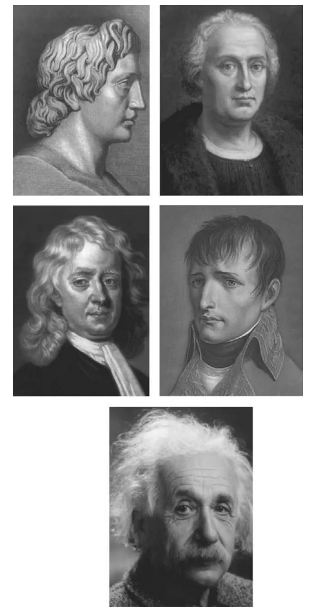<figcaption>Hình 6.1 Năm tâm trí dopaminergic nổi tiếng trong lịch sử: Alexander Đại đế, Christopher Columbus, Isaac Newton, Napoleon Bonaparte và Albert Einstein. Hình ảnh thuộc phạm vi công cộng do Thư viện Quốc hội Hoa Kỳ cung cấp.</figcaption></figure>
<h3>6.2.1 Alexander Đại đế</h3>
<p>Vị vua xứ Macedonia Alexander (356–323 TCN) được xếp hạng, cùng với Thành Cát Tư Hãn, là một trong hai nhà chinh phục vĩ đại nhất trong lịch sử. Nhưng, giống như Thành Cát Tư Hãn, sự vĩ đại của ông không chỉ bắt nguồn từ những chiến thắng quân sự mà còn từ trí tuệ tuyệt vời và tầm nhìn quản trị đế chế của ông, hầu hết trong số đó đã không thành hiện thực do cái chết sớm của ông. Thật không may, di sản của Alexander cũng bị hoen ố bởi sự tàn nhẫn mà tuy chưa sánh được với nhà lãnh đạo Mông Cổ, nhưng vẫn gây sốc theo tiêu chuẩn ngày nay.8</p>
<p>Alexander được nuôi dạy như con trai của Philip, vua xứ Macedonia. Ông có một trí tuệ sắc bén, và một trong những người thầy của ông là Aristotle. Sau khi cha qua đời, ông lên ngôi và nhanh chóng chinh phục các thành bang Hy Lạp khác rồi mở rộng quyền kiểm soát tới Biển Đen, và ông sớm bắt đầu thống nhất người Hy Lạp chống lại đối thủ lớn của họ là người Ba Tư. Mục tiêu ban đầu của ông là trả thù cho cuộc xâm lược trước đó của người Ba Tư vào Hy Lạp và đưa bản thân lên ngai vàng Ba Tư. Ông tấn công và đánh bại Darius tại Issus rồi bao vây thành công toàn bộ khu vực Đông Địa Trung Hải. Ông quay trở lại Ba Tư và chiến đấu một trận quyết định tại Gaugamela, trong đó đội quân Ba Tư đông đảo hơn đã bị đánh bại và kéo theo việc chiếm đóng các thành phố Babylon và Persepolis.</p>
<p>Giá như Alexander dừng lại ở thời điểm này, di sản của ông trong lịch sử đã không lớn đến vậy. Alexander, ngay cả trước khi chinh phục lãnh thổ của Darius, đã được đề nghị nhượng lại nửa phía Tây của đế chế Ba Tư, điều mà người bạn kiêm tướng quân Parmenion của ông được cho là đã lập luận “Tôi sẽ chấp nhận lời đề nghị nếu tôi là Alexander,” và Alexander đã đáp lại một cách nổi tiếng rằng “Tôi cũng vậy, nếu tôi là Parmenion.” Alexander cũng không bằng lòng với việc được coi là “vua của người Ba Tư;” thay vào đó, ông muốn trở thành “vua của châu Á” và cuối cùng là “vua của Thế giới.” Ông đặt mục tiêu chinh phục toàn bộ phạm vi của thế giới, mà Aristotle tin rằng trải dài về phía đông tới tận sông Ấn. Quân đội của Alexander đã tiến xa về phía bắc tới tận vùng Samarkand ở Trung Á, vượt qua dãy Hindu Kush trong một chiến dịch đáng kinh ngạc và sau đó tiến sâu về phía nam để vượt qua sông Ấn tại nơi ngày nay là Pakistan. Quân lính của Alexander cuối cùng đã nổi loạn phản đối việc tiến xa hơn, và Alexander rốt cuộc cũng biết rằng ông chưa chinh phục được toàn bộ thế giới ở phía đông Hy Lạp. Nhưng, ông đã xây dựng một đế chế vĩ đại hơn bất kỳ ai trước mình và đã mang lại một sự trao đổi thương mại và văn hóa khổng lồ khi các nền văn hóa châu Á và châu Âu có cuộc chạm trán đáng kể đầu tiên.</p>
<p>8 Phần lớn lời kể này xuất phát từ cuốn Alexander the Great: The Invisible Enemy của O’Brien (1992), The Genius of Alexander the Great của Hammond (1997), và Alexander the Great, một tiểu sử trên web của Jona Lendering (www.livius.org/aj-al/alexander/alexander00.html).</p>
<p>Sự vĩ đại của Alexander không chỉ bắt nguồn từ quy mô các cuộc chinh phạt hay sự táo bạo và xuất sắc trong các chiến lược quân sự của ông – thể hiện ở việc đội quân chiến thắng của ông thường bị áp đảo về quân số bởi các đội quân bản địa trong các chiến dịch châu Á – hoặc khả năng thiết lập liên minh của ông. Alexander sở hữu một tầm nhìn lớn lao hơn bất kỳ người đương thời nào của mình, khi ông thực hiện chính sách dung hợp, cả về mặt kinh tế (thông qua thương mại) lẫn mặt xã hội (thông qua hôn nhân dị chủng). Ông là người ủng hộ nhiệt thành nền văn hóa Hy Lạp và đã giúp truyền bá nó rộng khắp châu Á, đồng thời huấn luyện binh lính châu Á từ khi còn trẻ về văn hóa và võ thuật Hy Lạp. Nhưng, ông cũng tiếp thu nhiều yếu tố văn hóa châu Á, để các tổng trấn (satrap) người châu Á điều hành phần lớn đế chế, và thậm chí muốn biến Babylon thành thủ phủ tương lai của đế chế mình. Sự lỗi lạc, tầm nhìn chiến lược và cảm giác mãnh liệt về định mệnh cá nhân của ông phải được coi là một số đặc điểm dopaminergic “tích cực” hơn của ông.</p>
<p>Thật không may, di sản của Alexander đã bị vấy bẩn bởi hậu quả từ những đặc điểm dopaminergic tiêu cực hơn của ông. Bất kể những mục đích cao đẹp hơn nào có thể đã truyền cảm hứng cho các cuộc chinh phạt ban đầu của ông đều bị lu mờ bởi sự tàn nhẫn và, trong những năm sau đó, bởi chứng hoang tưởng được rượu tiếp thêm. Một ví dụ về điều này là việc đóng đinh trên bờ biển 2.000 người đàn ông ở Tyre (một thành phố ở miền nam Lebanon), nơi đã kháng cự quân đội của ông trong nhiều tháng trước khi thất thủ. Những ví dụ khác là việc ông phá hủy hoàn toàn Persepolis, điều mà sau này ông phần nào hối tiếc, cuộc tàn sát hàng loạt những người Hy Lạp xa xứ ở Ấn Độ vì một sự vi phạm văn hóa, và những cuộc thanh trừng vô nghĩa đối với các quan chức hành chính sau khi trở về Ba Tư sau chuyến hành quân thảm khốc băng qua Sa mạc Makran, ở nơi ngày nay là miền nam Iran. Sự táo bạo của ông đi kèm với tính bồn chồn và thậm chí là sự bướng bỉnh, điều đã dẫn đến chuyến hành trình Makran thảm khốc, trong đó theo một số tài liệu gần 80% quân đội của ông có thể đã bỏ mạng. Cuối cùng, niềm tin mãnh liệt vào năng lực và định mệnh của bản thân đã bị bù trừ bởi một nét thần bí, hoang tưởng tự đại trong đó ông nuôi dưỡng một hình ảnh gần như thần thánh về chính mình. Là thành viên của hoàng tộc Macedonia, ông có thể tuyên bố một cách hơi “hợp pháp” rằng mình là hậu duệ của các á thần như Hercules và ông có được dòng dõi hoàng gia trong các cuộc chinh phạt (chẳng hạn như trở thành người thừa kế của Ammon ở Ai Cập), nhưng đây chỉ là những mối liên kết mang tính thần thoại và danh nghĩa. Tuy nhiên, chủ nghĩa thần bí của Alexander lại mang hình thức của sự tự thần thánh hóa khoa trương hơn nhiều, điều đã dẫn đến sự chế giễu và thậm chí là một cuộc binh biến cận kề nghiêm trọng của quân đội Macedonia trong một trường hợp, mà ông đã dập tắt bằng cách giả vờ chấp nhận dòng dõi phàm trần của mình trước mặt họ trong một trong những màn kịch bậc thầy hơn của mình.</p>
<p>Cái chết sớm của Alexander ở tuổi ba mươi hai đã dẫn đến sự chia cắt nhanh chóng đế chế vật chất của ông, nhưng những sự thống nhất văn hóa do các cuộc chinh phạt của ông mang lại vẫn tiếp tục hàng thế kỷ sau khi ông qua đời và di sản của ông đặc biệt ảnh hưởng đến tâm thức của La Mã cổ đại.</p>
<h3>6.2.2 Christopher Columbus</h3>
<p>Christopher Columbus (“Colon” trong tiếng Tây Ban Nha) (1451–1506) chắc chắn được xếp vào hàng một trong những nhân vật có ảnh hưởng nhất và bí ẩn nhất trong lịch sử.9</p>
<p>Bất chấp cái gọi là “sự khám phá” Tây Bán Cầu của ông – có thể coi là sự kiện vĩ đại nhất trong toàn bộ lịch sử – cuộc đời của Columbus chứa đầy những điều bí ẩn, bao gồm ngày sinh (có lẽ là cuối mùa hè hoặc đầu mùa thu năm 1451), nơi sinh (được chấp nhận rộng rãi nhưng không hoàn toàn là Genoa, Ý), và tôn giáo của ông (hoặc là người Do Thái theo gia đình rồi cải sang Cơ Đốc giáo sau này, hoặc là người theo Cơ Đốc giáo ngoan đạo suốt đời). Tuy nhiên, như Wilford (1991) mô tả, động lực thúc đẩy đằng sau nỗi ám ảnh của Columbus về việc tìm kiếm một tuyến đường phía Tây tới Viễn Đông mới là điều khiến các nhà sử học bối rối nhất.</p>
<p>Điều được biết rõ là Columbus đã nhận được trong suốt cuộc đời mình một nền giáo dục thừa đủ so với thời đại của ông. Ông rời nhà từ đầu tuổi thiếu niên để theo đuổi cuộc sống trên biển, ban đầu là một thủy thủ Bồ Đào Nha, đi lại rộng rãi dọc theo bờ biển châu Âu và châu Phi, bao gồm cả Quần đảo Canary, điểm cực tây của đế chế Tây Ban Nha. Columbus đã tích lũy được kiến thức tốt về hình học, thiên văn học và bản đồ học, như yêu cầu đối với các hoa tiêu, và ông trở nên khá thành thạo nhiều ngôn ngữ, bao gồm cả tiếng Latin. Không rõ khi nào hoặc bằng cách nào Columbus lần đầu tiên nuôi dưỡng niềm tin rằng có thể thực hiện một hải trình về phía tây tới châu Á. Đã có những dấu hiệu trước đó về một vùng đất có người ở về phía tây, bởi vì gió tây và các dòng hải lưu (được đặt tên như vậy vì xuất phát từ phía tây) thỉnh thoảng mang theo các đồ tạo tác và thậm chí cả xác chết dạt vào các hòn đảo nằm ngoài khơi bờ biển phía tây châu Phi (tức là Azores, Canaries và Madeiras). Cũng có niềm tin của học giả người Ý Toscanelli, người mà Columbus đã trao đổi thư từ, rằng một hải trình về phía tây có thể thành công, và thậm chí còn có những câu chuyện ngụy thư về cuộc gặp gỡ với một thủy thủ ở Quần đảo Madeira, người đã bí mật kể cho Columbus nghe về việc bị thổi chệch hướng về phía tây và đáp xuống một vùng đất rộng lớn trong chốc lát. Nhưng, hầu hết những manh mối này đều có sẵn cho các thủy thủ khác, vậy mà chỉ có Columbus phát triển nỗi ám ảnh chuyên nhất là đi thuyền về phía tây. Do đó, các nhà nghiên cứu đã kết luận rằng chỉ bằng cách thấu hiểu nhân cách của Columbus thì cuộc tìm kiếm vĩ đại và sự khám phá của ông mới có thể được thấu hiểu.</p>
<p>Columbus biết rằng, khi người Bồ Đào Nha mở rộng một cách có phương pháp các chuyến hải hành dọc theo bờ biển châu Phi, một tuyến đường biển tới Đông Ấn và sự giàu có huyền thoại của nó cuối cùng sẽ được tìm thấy. Nhưng, ông đã</p>
<p>9 Phần lớn bản tóm tắt sau đây dựa trên cuốn Admiral of the Ocean Sea: A Life of Christopher Columbus của Morison (1983) và The Mysterious History of Columbus của Wilford (1991).</p>
<p>bồn chồn không yên và không thể chờ đợi một khả năng như vậy, điều mà vì độ dài của nó dù sao cũng có thể tỏ ra không sinh lời so với các tuyến đường bộ đã tồn tại. Columbus nhận ra những hệ quả to lớn của việc đi thuyền về phía tây tới Đông Ấn và hoàn toàn tự thuyết phục bản thân, vì những lý do mà nhìn lại hóa ra lại sai lầm một cách tiện lợi, rằng việc thực hiện một chuyến hải hành như vậy là khả thi.10 Một phần là sức hấp dẫn của sự giàu sang, nhưng cũng có hoang tưởng rằng ông được Chúa chọn làm công cụ để khám phá tuyến đường phía tây, và rằng những chiến công của ông sẽ dẫn đến sự giàu có và quyền lực to lớn mà Tây Ban Nha cuối cùng sẽ sử dụng để giành lại Thánh Địa. Columbus đã truyền đạt những suy nghĩ hoang tưởng và thậm chí nghi kỵ này trong cuốn Sách Các Lời Tiên Tri (Book of Prophecies), được soạn thảo trong khoảng thời gian 1499–1500 trước chuyến hải hành thứ tư của ông, một tác phẩm mà nhiều nhà sử học gạt bỏ như là kết quả của trạng thái tinh thần tồi tệ của Columbus sau những sự sỉ nhục phải chịu đựng sau các chuyến hải hành đầu tiên. Nhưng, West (được trích dẫn trong Wilford, 1991) cũng như chính Wilford lập luận một cách thuyết phục rằng mầm mống của những hoang tưởng và chủ nghĩa thần bí của ông đã hiện diện từ rất lâu trước chuyến hải hành đầu tiên tới châu Mỹ và phản ánh một yếu tố cốt lõi trong nhân cách của Columbus – một hoang tưởng tự đại kết hợp với chủ nghĩa thần bí mãnh liệt, vượt xa lòng sùng đạo thông thường (Wilford, 1991).</p>
<p>Khía cạnh hoang tưởng và thần bí này của Columbus đã hòa quyện với những đặc điểm dopaminergic vĩ đại khác của ông – trí thông minh, sự bồn chồn không yên và tính ám ảnh. Về mặt trí thông minh, Columbus có một đầu óc sắc sảo, nhiều mối quan tâm trí tuệ đa dạng và sự tự học thành công. Columbus dễ đưa ra những giả thuyết và sự liên tưởng sáng tạo mặc dù thường kỳ quặc và thậm chí khôi hài, và ông là một hoa tiêu lỗi lạc dù có phần dựa vào trực giác.11 Sự bồn chồn không yên của ông được ghi chép rõ ràng, cả trước và sau chuyến hải hành đầu tiên, nhưng việc ông kiên trì theo đuổi giấc mơ đi thuyền về phía tây là một minh chứng cho cả sức mạnh của những hoang tưởng lẫn tính hướng mục tiêu quá mức của ông.</p>
<p>Giống như hầu hết các nỗi ám ảnh lịch sử vĩ đại, tầm nhìn của Columbus được thai nghén từ thời trẻ. Đơn thỉnh cầu chính thức đầu tiên của ông để tổ chức một chuyến thám hiểm về phía tây</p>
<p>10 Columbus giả định rằng Đông Á trải dài về phía đông xa hơn thực tế, rằng Trái Đất nhỏ hơn 25% so với thực tế (vì ông chấp nhận mức ước tính thấp nhất đương thời về việc chuyển đổi độ sang hải lý), và có khả năng tồn tại những hòn đảo chưa được khám phá sẽ đóng vai trò là bàn đạp tới Đông Ấn. Ước tính cuối cùng của ông về khoảng cách từ Tây Ban Nha đến Nhật Bản (khi đó gọi là Cipangu) chỉ là 2.400 hải lý, tức khoảng 25% khoảng cách thực tế! 11 Morison (1983) đề xuất rằng, nhờ chuyên môn to lớn về cả đi biển đại dương lẫn đi thuyền nội địa, Columbus và James Cook xứng đáng là những hoa tiêu vĩ đại nhất mọi thời đại. Tám chuyến vượt Đại Tây Dương thành công rực rỡ của Columbus và những cuộc thám hiểm các vùng đất và vùng biển chưa có trên bản đồ trong vòng một thập kỷ có thể coi là chiến công hàng hải vĩ đại nhất trong lịch sử. Morison đưa ra hết ví dụ này đến ví dụ khác về thiên tài ước lượng vị trí (dead-reckoning) của Columbus và khả năng đáng kinh ngạc của ông trong việc điều hướng và vượt qua vô số chướng ngại vật ghê gớm trong các chuyến hải hành khác nhau.</p>
<p>đã được đệ trình lên những người đồng hương bản xứ của ông (người Genoa), khi Columbus vừa tròn ba mươi tuổi. Sau đó, ông đã thỉnh cầu không thành công lên nhà vua Bồ Đào Nha xin một hạm đội để đi thuyền về phía tây vào năm 1483, ở tuổi ba mươi hai. Trong thập kỷ tiếp theo, quyết tâm của ông chưa bao giờ phai nhạt, và vào năm 1492, cuối cùng ông đã thành công trong việc xin được hạm đội thám hiểm đầu tiên từ ngai vàng Tây Ban Nha, cùng với quyền đòi hỏi những tài sản và tước hiệu tiềm năng khổng lồ. Columbus đã gặp may mắn phi thường trong chuyến hải hành của mình, khi vô tình bắt được gió mậu dịch đông ở chặng đi và gió tây ở chặng về. Ông và thủy thủ đoàn đã cập bờ sau khi vượt qua mốc 3.400 hải lý (khoảng 1.000 hải lý vượt quá ước tính ban đầu của ông về khoảng cách tới Nhật Bản), ngay sau khi ông vừa đồng ý sẽ quay đầu nếu không nhìn thấy đất liền vào ngày hôm sau. Columbus cuối cùng đã đặt chân đến Tây Bán Cầu vào tháng 10 năm 1492 tại chuỗi đảo Bahamas, có lẽ là trên hòn đảo trước đây gọi là Đảo Watling và sau này được đổi tên thành Đảo San Salvador. Columbus thực hiện tổng cộng bốn chuyến hải hành, và ông là người châu Âu hiện đại đầu tiên khám phá ra Trung và Nam Mỹ cũng như mọi hòn đảo lớn ở vùng Caribe. Mặc dù Columbus thất bại trong nỗ lực tìm kiếm một tuyến đường tới Đông Ấn, ngay cả ông cuối cùng cũng bắt đầu nhận ra mình đã khám phá ra một lục địa mới trong quá trình đó.12</p>
<p>Sự khám phá của Columbus đã tạo ra một tác động tâm lý đáng kinh ngạc lên châu Âu và được cho là đã truyền cảm hứng nhiều như bất kỳ sự kiện nào khác cho sự chuyển đổi từ châu Âu thời Trung Cổ sang một kỷ nguyên thám hiểm mới (Morison, 1983), điều mà đến lượt nó lại truyền cảm hứng cho rất nhiều khám phá khoa học và toán học. Columbus còn đạt được vị thế biểu tượng vĩ đại hơn nữa ở Hợp chủng quốc Hoa Kỳ mới nổi, với hàng loạt thành phố, dòng sông, trường đại học và các địa danh khác của Mỹ được đặt theo tên ông. Trong nhiều thế kỷ, sự khám phá của Columbus chủ yếu được nhìn nhận dưới ánh sáng khải hoàn, nhưng mặt tối trong nhân cách dopaminergic của ông đã dẫn đến những hậu quả mà ngày nay bị coi là bi thảm và thậm chí thảm khốc. Trong khi cuộc chạm trán đầu tiên của ông với người Mỹ bản địa ở vùng Caribe tương đối ôn hòa, cuộc chạm trán thứ hai đã dẫn đến việc thành lập một thuộc địa (Isabel, trên đảo Hispaniola) và việc nô dịch những người bản địa kháng cự người Tây Ban Nha. Columbus không</p>
<p>12 Người ta nói nhiều về “sai lầm ngớ ngẩn” được cho là của Columbus khi không nhận ra rằng mình không ở gần Đông Ấn chút nào. Columbus thực sự đã nhận ra rằng ông đã khám phá ra một lục địa mới ở Nam Mỹ, nhưng ngay cả sau chuyến hải hành cuối cùng của ông vẫn không có bằng chứng chính thức nào (mặc dù có rất nhiều gợi ý) rằng ông không ở gần vùng lân cận Đông Ấn. Quan điểm chung của tôi về Columbus đồng điệu với quan điểm của các nhà sử học hàng đầu ở chỗ ông có một nhân cách kép – một nhân cách dopaminergic giữa bị thúc đẩy bởi những ý tưởng thần bí và vũ trụ học cùng một niềm tin gần như không thể lay chuyển rằng ông đã đến được Đông Ấn, cùng với một hệ thống dopaminergic trán bên hỗ trợ cho những quan sát thực nghiệm và lập luận ấn tượng của ông và cuối cùng hẳn đã dẫn ông đến việc nhận ra vị trí địa lý chính xác của mình.</p>
<p>phải chịu toàn bộ trách nhiệm cho thảm kịch đã diễn ra, vì bản thân ông ban đầu đối xử công bằng với người bản địa, những người mà ông chỉ muốn cải đạo chứ không muốn trừng phạt. Tuy nhiên, một khi xung đột với người bản địa đã bị những người khác khơi mào, Columbus trở nên cực kỳ tàn bạo trong cách đối xử với người bản địa và thậm chí có phần khắc nghiệt trong việc chỉ huy chính người của mình, cách đối xử sau này đã dẫn đến một loạt cuộc binh biến và việc ông bị bỏ tù sau đó vào cuối chuyến hải hành thứ ba. Những khoản cống nạp khắc nghiệt mà ông đòi hỏi ở người bản địa và việc nô dịch họ sau đó, một phần để mang lại một mức độ lợi nhuận thương mại nhất định,13 là điều đặc biệt tàn ác, và hầu hết số nô lệ ông mang về đều chết trên đường tới Tây Ban Nha. Cuối cùng, người ta ước tính rằng trong số 300.000 người bản địa ban đầu sống trên đảo Hispaniola (nay bao gồm Cộng hòa Dominica và Haiti), một phần ba đã thiệt mạng trong vài năm đầu tiên dưới sự cai trị của Columbus và chỉ còn khoảng 15.000 người sống sót sau hai mươi năm kể từ cuộc chinh phục ban đầu của Tây Ban Nha (Morison, 1983). Đây là khúc dạo đầu cho một số phận còn ghê rợn hơn đang chờ đợi người bản địa ở lục địa châu Mỹ, những người mà dân số sau một thế kỷ cai trị của Tây Ban Nha gần như bị xóa sổ hoàn toàn, từ mức ước tính trước cuộc chinh phục là năm mươi triệu người xuống chỉ còn vài triệu người vào phút cuối.</p>
<h3>6.2.3 Isaac Newton</h3>
<p>Nếu những khám phá của Columbus báo hiệu sự khởi đầu của hồi kết cho thời kỳ Trung Cổ, thì những khám phá của Isaac Newton (1642–1727) đại diện cho một đòn giáng cuối cùng, nghiền nát. Những khám phá và phân tích lỗi lạc của ông đã dẫn đến sự hiểu biết có hệ thống đầu tiên trong lịch sử về vũ trụ và hai trong số những yếu tố bí ẩn nhất của nó – ánh sáng và lực hấp dẫn – đồng thời củng cố vị thế của ông là nhà khoa học và nhà toán học có ảnh hưởng nhất trong lịch sử.14</p>
<p>Newton sớm bộc lộ sự xuất chúng khi còn là học sinh, và vào cuối tuổi thiếu niên, rõ ràng là ông phù hợp với giới học thuật hơn là trang trại (nơi dù sao cũng đã cung cấp cho ông một số rèn luyện thực tế từ sớm). Newton được nhận vào Đại học Cambridge ở tuổi mười tám và nhanh chóng nắm vững các nguyên lý của hình học Euclid, nhưng chính ngay sau khi tốt nghiệp ở tuổi hai mươi hai, ông đã thai nghén những ý tưởng vĩ đại của mình về ánh sáng và lực hấp dẫn và thậm chí cả giải tích (mà ông</p>
<p>13 Columbus nhận thức được rằng, do thất bại trong việc tìm kiếm các mỏ vàng lớn và các hàng hóa có giá trị thương mại khác ở Hispaniola, không chỉ sự giàu có tương lai của ông mà cả các cuộc thám hiểm tương lai do quốc vương Tây Ban Nha tài trợ cũng bị đe dọa. Đây là một yếu tố lớn dẫn đến việc ông phải dùng đến buôn bán nô lệ như một nguồn doanh thu thay thế. 14 Lời kể này về Newton được chắt lọc từ nhiều nguồn, bao gồm Isaac Newton của Gleick (2003), Newton’s Gift của Berlinski (2000), Isaac Newton Reluctant Genius của Ipsen (1985) và nguồn có tính phê phán hơn là Newton’s Tyranny: The Suppressed Discoveries of Stephen Gray and John Flamsteed của Clark và Clark (2001).</p>
<p>gọi là “thông lượng” - fluxions) trong cái được gọi là một năm “kỳ diệu”. Những sáng tạo trí tuệ phi thường của ông diễn ra phần lớn trong sự cô lập, khi ông trở về thị trấn nhỏ của mình sau khi bệnh dịch hạch một lần nữa quét qua các thành phố ở châu Âu. Newton, giống như nhiều nhà khoa học, làm việc chủ yếu một mình, nhưng sự cô lập trong suốt cuộc đời sớm của ông phần lớn là tự áp đặt và cực đoan đến mức nhiều ý tưởng của ông được xuất bản rất lâu sau khi được tạo ra và chỉ sau nhiều lời thuyết phục từ bạn bè, hoặc cuối cùng được xuất bản bởi một người khác (ví dụ: giải tích và một số lý thuyết về Kinh Thánh của ông). Về mặt cá nhân, ông có phần luộm thuộm (mặc dù đỡ hơn khi ông làm việc cho Xưởng đúc tiền Hoàng gia Anh) và ông thường chìm đắm vào những suy nghĩ xa xôi, trừu tượng đến mức quên ăn quên ngủ.15 Tuy nhiên, Newton cũng có thể rất thực tế ở chỗ ông đã phát minh ra nhiều thiết bị, bao gồm kính lục phân và chiếc kính thiên văn tốt nhất thời bấy giờ (dựa trên sự phản xạ), đồng thời theo đuổi thuật giả kim một cách trực tiếp suốt đời.</p>
<p>Hai tác phẩm vĩ đại của ông – Các nguyên lý toán học của triết học tự nhiên (được biết đến với tên tiếng Latin là “Principia”) và Quang học (Optiks) – đại diện cho những thành tựu lâu dài của ông, mặc dù cả hai đều được xuất bản rất lâu sau những ý tưởng ban đầu của ông (tập đầu tiên của Principia được xuất bản ở tuổi bốn mươi bốn và Optiks ở tuổi sáu mươi hai). Riêng tác phẩm Principia có thể coi là đại diện cho một trong hai thắng lợi khoa học vĩ đại nhất trong lịch sử – thắng lợi còn lại là thuyết tương đối rộng của Einstein, với các phương trình được công bố vào năm 1916. Principia đưa ra một lời giải thích thống nhất cho hàng loạt hiện tượng trên Trái Đất và thiên văn dưới dạng định luật vạn vật hấp dẫn, vốn là một ví dụ xuất sắc về sự liên tưởng sáng tạo được trung gian bởi dopamine đối với các hiện tượng “xa xôi”. Newton trình bày các khái niệm của mình không chỉ bằng thuật ngữ khoa học mà còn dưới dạng các phương trình toán học, vốn trước đây chủ yếu chỉ giới hạn trong thiên văn học. Điều đó đòi hỏi thiên tài kết hợp của Newton với tư cách là một nhà thực nghiệm khắt khe cũng như nhà toán học vĩ đại nhất thời bấy giờ.16 Newton, với tư cách vừa là nhà khoa học vừa là nhà toán học, đã không ngần ngại giải quyết khái niệm trừu tượng về vô cực, điều mà Descartes đã né tránh. Bằng cách thống nhất vật lý và toán học, danh tiếng của Newton lan rộng khắp nơi, và ông trở thành nhà khoa học đầu tiên trong lịch sử được vua nước Anh phong tước hiệp sĩ.</p>
<p>Thuật giả kim, cùng với mối quan tâm suốt đời đối với tôn giáo và các sự kiện trong Kinh Thánh, đại diện cho những đam mê mang tính Trung Cổ của Newton. Mặc dù được cho là đã dành nhiều thời gian cho những theo đuổi này hơn cả khoa học và toán học – ông</p>
<p>15 Một trường hợp nổi tiếng về sự đãng trí của Newton là việc ông không trèo lại lên ngựa sau khi qua một ngọn đồi dốc và cứ thế dắt dây cương đi bộ suốt nhiều dặm, không có lời giải thích hợp lý nào. 16 Newton được cho là thường xuyên giải quyết các bài toán hình học mà các nhà toán học vĩ đại khác phải mất nhiều tháng để tìm ra hoặc trước đó chưa từng có ai giải được (Ball, 1908).</p>
<p>đã viết hơn một triệu từ liên quan đến Kinh Thánh, hầu hết chưa được xuất bản khi ông còn sống – công trình của ông trong lĩnh vực này ít có giá trị sử dụng đối với các nhà hóa học, học giả Kinh Thánh và nhà sử học hiện đại. Ông kiên quyết bác bỏ thần tính của Chúa Jesus – và nỗ lực ám ảnh và vô ích của ông nhằm kết hợp toán học với các ý tưởng Kinh Thánh đã dẫn đến thứ mà nhìn lại dường như là một sự bóp méo thần bí đối với thiên tài toán học vĩ đại của ông.</p>
<p>Bộ não dopaminergic của Newton đã cho phép ông nhìn xa hơn vào các lực cơ bản của tự nhiên và vũ trụ so với bất kỳ ai khác trong thời đại của mình và mang lại cho ông sự ám ảnh để theo đuổi những ý tưởng này, đôi khi gây tổn hại cho chính cơ thể mình. Nhưng, bộ não dopaminergic của Newton cũng ảnh hưởng tiêu cực đến các mối quan hệ cá nhân của ông. Ông bị buộc phải giữ độc thân theo các điều khoản của chức danh giáo sư tại Đại học Cambridge, nhưng ông sống cô độc hơn nhiều so với yêu cầu của thông lệ. Ông hay cáu kỉnh, thậm chí có phần chống đối xã hội khi còn trẻ, và khi trưởng thành thường xuyên cãi vã với các nhà khoa học đồng nghiệp. Ví dụ, cuộc tranh chấp của ông với Leibniz về việc phát minh ra giải tích là một trong những cuộc cãi vã khoa học tai tiếng nhất trong lịch sử, và những tranh chấp của ông với nhà khoa học vĩ đại Hooke và nhà thiên văn học Flamsteed cũng phản ánh cực kỳ xấu về Newton, người đã điều hành Hội Hoàng gia London một cách độc đoán và cứng rắn. Ông cũng kín tiếng một cách quá mức (như được chứng kiến qua thử thách đầy ẩn ý của ông trong một bức thư sớm gửi Leibniz), điều này khiến ông trì hoãn hoặc thậm chí không công bố nhiều phát hiện quan trọng nhất của mình. Trên cương vị Giám đốc và sau đó là Chưởng quản Xưởng đúc tiền, Newton không tỏ ra thông cảm với những kẻ làm tiền giả, truy lùng họ và thậm chí đưa nhiều người trong số họ lên giá treo cổ bất chấp sự phản đối của những đồng nghiệp khoan dung hơn. Một số nhà tâm lý học như Baron-Cohen (xem Muir, 2003) đã cho rằng Newton mắc hội chứng Asperger, nhưng không có bằng chứng nào cho thấy các kỹ năng xã hội của ông bị rối loạn đến mức đủ điều kiện cho chẩn đoán này; ngược lại, Newton đã có thời gian phục vụ sâu rộng trong chính phủ (bao gồm vài nhiệm kỳ tại Nghị viện) và một nhiệm kỳ lâu dài làm chủ tịch Hội Hoàng gia. Bắt đầu vào khoảng tuổi năm mươi, Newton mắc một chứng loạn thần được ghi chép đầy đủ kéo dài hơn một năm, mà một số người quy cho ngộ độc thủy ngân từ các thí nghiệm giả kim thuật của ông – sau này người ta phát hiện ông có mức thủy ngân tăng rất cao trong tóc – nhưng các triệu chứng loạn thần của ông không phù hợp với triệu chứng ngộ độc thủy ngân (Spivak và Epstein, 2001). Chúng cũng không phù hợp với bệnh tâm thần phân liệt, vốn thường khởi phát sớm hơn nhiều ở nam giới và có xu hướng mãn tính hơn.17</p>
<p>17 Nhiều suy đoán vẫn tiếp tục xoay quanh chứng loạn thần của Newton, vốn ngoài ngộ độc thủy ngân còn được cho là khởi phát bởi các yếu tố như trầm cảm do sự tan vỡ được đồn đại của một mối tình bí mật hoặc do hệ quả sau tác phẩm Principia, xuất bản năm năm trước đó.</p>
<p>Các đặc điểm lâm sàng mô tả sát nhất hành vi của Newton là nhân cách dạng phân liệt (schizoid personality) hoặc có lẽ thậm chí là rối loạn phân liệt cảm xúc (schizo-affective disorder), vốn kết hợp sự hướng nội với chứng hoang tưởng. Rõ ràng, Newton cũng thường xuyên biểu hiện các triệu chứng ám ảnh cưỡng chế và hưng cảm, và ông cũng được cho là có biểu hiện các triệu chứng lưỡng cực (Papolas và Papolas, 2002).</p>
<p>Bất chấp nhiều tranh chấp và khiếm khuyết cá nhân khác nhau, cuối cùng Newton cũng thể hiện một sự khiêm nhường chân thành, có lẽ nhiều hơn so với các nhân vật dopaminergic khác được xem xét ở đây. Một phần của việc không công bố nhiều ý tưởng vĩ đại nhất của mình có thể bắt nguồn từ thực tế là sự tung hô của công chúng chưa bao giờ khiến ông bận tâm nhiều như một số đồng nghiệp của mình. Sự khiêm nhường của Newton được minh họa không chỉ qua câu nói nổi tiếng của ông rằng ông chỉ có thể nhìn xa hơn vì ông đứng “trên vai những người khổng lồ” (được cho là ám chỉ chủ yếu đến Kepler và Galileo) mà còn qua văn bia tự viết mà ông để lại vào cuối cuộc đời lẫy lừng của mình:</p>
<p>Tôi dường như chỉ giống như một cậu bé chơi đùa trên bờ biển, và tự mua vui bằng cách thỉnh thoảng nhặt được một viên sỏi nhẵn hơn hay một vỏ sò đẹp hơn bình thường, trong khi đại dương bao la của chân lý vẫn nằm hoàn toàn chưa được khám phá trước mắt tôi. (Ipsen, 1985: 86)</p>
<h3>6.2.4 Napoleon Bonaparte</h3>
<p>Napoleon Bonaparte (1769–1821) đại diện cho một trong những nhân vật phi thường và gây tranh cãi nhất trong lịch sử.18 Về mặt tích cực, ông là một thiên tài quân sự với trí nhớ phi thường và năng lực làm việc điên cuồng (thường lên tới mười lăm giờ mỗi ngày), người có những chiến thắng (đặc biệt là tại Austerlitz) được xếp vào hàng vĩ đại nhất trong lịch sử quân sự và là người, ít nhất là trong giai đoạn đầu, đại diện cho nguyên mẫu của nhà độc tài nhân từ, người mà sức mạnh cai trị nằm ở tư tưởng và khả năng lãnh đạo không kém gì sức mạnh quân sự. Mặc dù thế giới trí tuệ Trung Cổ đã khuất phục trước Newton, sự cai trị của Napoleon ở châu Âu đã dẫn đến sự tan rã của những tàn dư cuối cùng của trật tự xã hội Trung Cổ, nơi các quân vương và tầng lớp quý tộc phong kiến thống trị tối cao. Về mặt tiêu cực, Napoleon bị thiêu đốt bởi một tham vọng quá độ dẫn đến thất bại quân sự đơn lẻ có thể coi là lớn nhất trong lịch sử loài người, và ông được cho là không chỉ mắc chứng động kinh thùy thái dương (vốn gắn liền với nhiều loại hoang tưởng khác nhau, bao gồm hoang tưởng tự đại) mà có lẽ còn mắc cả rối loạn lưỡng cực.</p>
<p>18 Lời kể này dựa trên nhiều nguồn, bao gồm cuốn Napoleon của Johnson (Johnson, 2002), A Brotherhood of Tyrants của Hershman và cộng sự (1994), và Napoleon and the French Revolution của Holmberg (2002).</p>
<p>Tính cách và di sản của Napoleon có nhiều điểm tương đồng với Alexander Đại đế, ở chỗ cả hai đều là những người thông minh, bồn chồn không yên và thậm chí là những kẻ chấp nhận rủi ro khoa trương, những người đã chinh phục phần lớn thế giới được biết đến hoặc tiên tiến của thời đại họ vào đầu tuổi ba mươi, làm thay đổi mãi mãi các xã hội ở những vùng đất bị chinh phục, và hứng chịu những thảm họa quân sự lớn trước khi ngọn lửa của họ vụt tắt. Họ thậm chí còn có chung một cuộc chinh phục Ai Cập được ca ngợi và hai hành động tàn nhẫn rất đáng xấu hổ ở cách nhau một khoảng cách ngắn: vụ tàn sát công dân Tyre của Alexander và vụ tàn sát tù binh tại Jaffa (Haifa) của Napoleon. Mặc dù bản thân ông có phần thực dụng, ảnh hưởng lịch sử lâu dài hơn của Napoleon không nằm ở tư cách một kẻ chinh phục quân sự mà là lực lượng mang những lý tưởng của Cách mạng Pháp (tự do, bình đẳng và bác ái) đi khắp châu Âu. Bất cứ nơi nào ông đi qua, bộ luật Cách mạng – được biết đến một thời là Bộ luật Napoleon, vẫn là nền tảng pháp luật ở hầu hết các quốc gia tiên tiến trên thế giới – đã lật đổ các quyền thừa kế của tầng lớp quý tộc phong kiến, và các cuộc chinh phạt của Napoleon đi kèm với việc thành lập các trường công lập, bảo tàng, hệ thống đường bộ lục địa, hệ thập phân, và thậm chí cả những thay đổi tương đối nhỏ nhặt như lái xe bên lề phải của con đường.19 Chỉ ở Nga, quốc gia lục địa lớn duy nhất phần lớn vẫn chưa bị Napoleon chinh phục, chế độ phong kiến mới tồn tại cho đến thế kỷ XX.</p>
<p>Tuy nhiên, sự tiến bộ thời Napoleon đã phải trả những cái giá khổng lồ – hơn một triệu binh sĩ thiệt mạng trong các cuộc chiến tranh Napoleon. Napoleon không thể bị đổ lỗi hoàn toàn hoặc thậm chí là chủ yếu cho những cuộc chiến tranh này, vì nước Pháp cách mạng liên tục bị tấn công hoặc phong tỏa bởi Anh và các nước láng giềng quân chủ như Áo. Nhưng, Napoleon nổi tiếng là người tỏ ra ít bận tâm trước sự mất mát nhân mạng trong các chiến dịch quân sự của mình, có lần từng tuyên bố với nhà ngoại giao Metternich rằng việc mất đi một triệu người chẳng có nghĩa lý gì nếu nó dẫn đến chiến thắng. Như Madame de Stael đã viết về sự thiếu gắn kết cảm xúc của Napoleon:</p>
<p>Ông ta là một kỳ thủ cờ vua mà đối thủ tình cờ lại là phần còn lại của nhân loại . . . Không lòng trắc ẩn cũng chẳng sự quyến rũ, không tôn giáo cũng chẳng sự gắn bó nào có thể làm ông ta chệch hướng khỏi mục đích của mình. (trích dẫn trong Johnson, 2002: 115)</p>
<p>19 Bởi vì giới quý tộc Pháp tiếp tục truyền thống của quân đoàn La Mã là di chuyển ở lề trái của con đường, vốn ban đầu có lợi cho việc bảo vệ cơ thể từ phía bên trái vì chiếc khiên La Mã bảo vệ trái tim được cầm bằng tay trái, cuộc Cách mạng đã thiết lập rằng tất cả người dân Pháp thời hậu quân chủ sẽ di chuyển ở lề phải của con đường. Anh và Scandinavia, những nơi chưa bao giờ bị Napoleon chinh phục, vẫn là các quốc gia châu Âu kháng cự lại hướng di chuyển bên phải, mặc dù Thụy Điển cuối cùng đã trở thành quốc gia cuối cùng ở lục địa châu Âu chuyển sang đi bên phải vào năm 1957. Hóa ra là, do các phản xạ tư thế, việc di chuyển bằng xe cộ ở phía bên phải thực sự có thể an toàn hơn cho những người thuận tay phải (Coren, 1992: Chương 14).</p>
<p>Sự tách rời cảm xúc của ông, cùng với những hoang tưởng tự đại, đã dẫn đến thảm họa quân sự lớn nhất mọi thời đại – chiến dịch Nga, trong đó đội quân khổng lồ hơn 400.000 quân của ông cuối cùng đã mất hơn 95% quân số, với khoảng một nửa bị bắt làm tù binh và nửa còn lại là nạn nhân của chiến đấu, bệnh tật và đói khát. Đáng ngạc nhiên là mọi thứ vẫn chưa mất hết – Napoleon đã có thể tái tổ chức quân đội và tiếp tục giành được một chuỗi chiến thắng, thậm chí còn được Metternich đề nghị các điều khoản hòa bình hào phóng trong đó ông có thể giữ lại nhiều vùng đất chinh phục ban đầu của mình. Nhưng, giống như Alexander trước ông, những gì có vẻ hào phóng đối với một người ít khoa trương hơn lại không thể chấp nhận được đối với Napoleon. Cuối cùng ông mất tất cả, hồi phục lại cho một màn trở về khải hoàn ngắn ngủi, và sau đó cuối cùng lại mất tất cả vĩnh viễn tại Trận Waterloo ở Bỉ. Tuy nhiên, vào lúc đó, Napoleon đã gây ra quá nhiều tổn hại cho trật tự xã hội truyền thống, và các tầng lớp quý tộc chiến thắng sớm bị quét sạch bởi các quốc gia-dân tộc hiện đại của châu Âu, những nước cuối cùng đã tiếp thu phần lớn chủ nghĩa bình đẳng của Cách mạng Pháp, điều mà Napoleon đã bảo vệ nhưng không phải lúc nào cũng tuân thủ trong hành động của mình.</p>
<p>Các nhà tâm sử học tranh luận về việc tại sao những năng lực tuyệt vời của Napoleon lại bị nuốt chửng bởi mặt tối của ông – liệu đó có phải là do chứng động kinh thùy thái dương của ông (vốn thường đi kèm với hoang tưởng tự đại, dù mang tính tôn giáo hay, như trong trường hợp của Napoleon, mang tính thế tục) hay do rối loạn lưỡng cực (Goodwin và Jamison, 1990; Hershman và cộng sự, 1994), dẫn ông đến những thành tựu vĩ đại trong các giai đoạn hưng cảm và dẫn đến sự cáu kỉnh, bùng phát tiêu cực và thậm chí là sự tàn nhẫn trong các đợt bùng phát trầm cảm của ông? Cuối cùng, câu trả lời có thể không quá quan trọng ở chỗ cả hai rối loạn này đều gắn liền với tình trạng dư thừa dopamine.</p>
<h3>6.2.5 Albert Einstein</h3>
<p>Nhà vật lý Albert Einstein (1879–1955) là nhà khoa học lỗi lạc nhất của thế kỷ XX và có thể coi là nhà khoa học vĩ đại nhất kể từ sau Newton, ít nhất là trong con mắt của tạp chí tin tức hàng tuần Time, tờ báo đã coi ông là nhân vật có ảnh hưởng nhất của thế kỷ XX.20</p>
<p>Mặc dù những tư tưởng của Einstein đã giúp lật đổ nền vật lý cổ điển do Newton khởi xướng, cuộc đời của ông và của Newton gần như là cặp song sinh lịch sử (Lightman, 2004). Cả hai người đàn ông đều có tình yêu dành cho vật lý (Einstein</p>
<p>20 (www.time.com/time/time100/poc/magazine/albert_einstein5a.html). Phần lớn tài liệu trong mục này được chắt lọc từ Einstein: A Life của Brian (1996), Einstein: The Passions of a Scientist của Parke (2003), Einstein: His Life and Universe của Isaacson (2007), và cuốn sách chỉ trích gay gắt một chiều Albert Einstein: The Incorrigible Plagiarist của Bjerknes (2002).</p>
<p>tự hào về trực giác tuyệt vời của mình trong khi Newton là một nhà phát minh thực tế hơn và là một nhà toán học tài năng hơn nhiều),21 cả hai đều tập trung vào ánh sáng và lực hấp dẫn như hai mối quan tâm khoa học lớn nhất trong đời, cả hai đều có một năm “kỳ diệu” ở độ tuổi đầu đến giữa hai mươi trong đó họ phát triển ít nhất ba ý tưởng sâu sắc (Newton vào năm 1666; Einstein vào năm 1905), cả hai đều có phần khép kín và xa cách về mặt cảm xúc với bạn bè và gia đình (Newton hơn Einstein rất nhiều), cả hai đều đãng trí và có phần xuề xòa trong diện mạo, cả hai đều định kỳ rơi vào các giai đoạn hưng cảm, ám ảnh nhưng phải chịu đựng những suy sụp thể chất và tinh thần nghiêm trọng ở tuổi trung niên, và cả hai đều phung phí phần lớn quãng đời sau này để theo đuổi những mục tiêu khoa học (Newton với thuật giả kim và lịch sử Kinh Thánh, Einstein với thuyết trường thống nhất) vốn không thể đạt được trong thời đại của họ hoặc có lẽ ở bất kỳ thời đại nào.</p>
<p>Trong năm kỳ diệu 1905 của Einstein, ông đã công bố được bốn bài báo khoa học thiết lập nên danh tiếng của ông như một trong những nhà vật lý hàng đầu thế giới và cuối cùng mang về cho ông Giải Nobel vào năm 1921. Những bài báo này liên quan đến hiệu ứng (định luật) quang điện, chuyển động Brown, phép đo kích thước phân tử, và bài báo nổi tiếng của ông về thuyết tương đối hẹp mô tả các tác động của chuyển động tương đối, bản chất độc đáo của ánh sáng và cách mà nó, chứ không phải thời gian, là hằng số trong vũ trụ. Trong phần lớn các công trình đầu tay của mình, Einstein đã thành công trong việc thống nhất các cách tiếp cận tách biệt trước đó (phân tích sóng so với phân tích hạt/thống kê) để giải thích các hiện tượng quan trọng (Isaacson, 2007), điều này một lần nữa đại diện cho sức mạnh của những liên tưởng xa xôi trong tư duy sáng tạo được trung gian bởi dopamine. Mặc dù Einstein đã suy nghĩ về thuyết tương đối hẹp nhiều năm và vay mượn rộng rãi (thật không may, không hề ghi nhận) từ các công trình trước đó của Poincaré, Lorentz, và thậm chí có thể từ nhà vật lý người Ý De Pretto, người thực sự đã suy ra công thức nổi tiếng E = mc2 đầu tiên vào năm 1903 (Bjerknes, 2002), nhưng chính Einstein có thể coi là người nắm bắt trọn vẹn nhất những hệ ý nghĩa siêu hình học của việc phủ nhận địa vị tuyệt đối đối với không gian và thời gian vốn được ban cho chúng trong vũ trụ Newton. Einstein nhanh chóng chuyển sang giải quyết bài toán lực hấp dẫn theo các thuật ngữ tương đối tính, và trong những năm tiếp theo dẫn đến việc công bố chính thức thuyết tương đối rộng của ông vào năm 1916, Einstein (với sự giúp đỡ cốt yếu từ các đồng nghiệp cũ ở Zurich là Minkowski và Grossman cùng nhà toán học David Hilbert) đã đóng góp vào các phương trình của không–thời gian bốn chiều. Lý thuyết</p>
<p>21 Thật vậy, Einstein được cho là đã bị nhà vật lý đoạt giải Nobel Eugene Wigner mô tả là một “nhà toán học tồi tệ,” mặc dù sự khắc họa đó có lẽ là tương đối theo tiêu chuẩn của các nhà vật lý.</p>
<p>tương đối rộng của Einstein được công nhận rộng rãi ngang hàng với tác phẩm Principia của Newton như là một trong hai thành tựu vĩ đại nhất của trí tuệ loài người.22</p>
<p>Nỗ lực khổng lồ dành cho công việc trong giai đoạn này không hề có lợi cho cuộc hôn nhân của ông với nữ đồng nghiệp vật lý Mileva Maric; nhưng, ngay cả trong quãng thời gian lãng mạn trước đó, những bức thư của Einstein gửi cho bà nói về các ý tưởng khoa học của ông nhiều hơn là mối quan hệ của họ. Sự ưu tiên công việc hơn các mối quan hệ cá nhân của Einstein thể hiện qua cuộc hôn nhân căng thẳng thứ hai (với người em họ Else) và mối quan hệ xa cách với hai người con trai của ông. Sự bồn chồn về thể chất của Einstein (bắt đầu trong những lần chuyển nhà và chuyển trường liên tục thời niên thiếu) chẳng giúp ích gì, khi ông chuyển từ Zurich (nơi ông đã ổn định trong một cuộc sống học thuật cực kỳ năng suất) đến Prague và sau đó là Berlin, cả hai nơi đều khiến Mileva trầm cảm và có thể nói là không cải thiện năng suất khoa học của ông cho đến cuộc gặp gỡ định mệnh với Hilbert vào năm 1915. Ông thích sự bầu bạn của phụ nữ, nhưng nhiều cuộc tình của ông dường như chỉ là thoáng qua, với rất ít sự gắn kết cảm xúc. Tuy nhiên, mặc dù sự thiếu hụt cảm xúc làm suy giảm khả năng gắn bó sâu sắc với những con người cụ thể, Einstein lại yêu “nhân loại” một cách trừu tượng và thể hiện nhiều chủ nghĩa lý tưởng chính trị hơn Newton bằng cách vận động cho chủ nghĩa hòa bình, chủ nghĩa xã hội và một nhà nước Do Thái trong những năm trung niên và cuối đời.23</p>
<p>Trong khi những điểm mạnh về trí tuệ và điểm yếu cá nhân của Einstein rõ ràng là dấu ấn đặc trưng của một nhân cách dopaminergic, câu hỏi liệu Einstein có thực sự biểu hiện bất kỳ bệnh lý siêu dopaminergic nào hay không vẫn chưa rõ ràng. Có ý kiến cho rằng Einstein, giống như Newton, có thể đã bị tự kỷ nhẹ vì ông chậm nói và có kỹ năng giao tiếp xã hội kém (Muir, 2003). Nhưng, bằng chứng thực tế từ lời kể của gia đình cho thấy Einstein không hề chậm nói, cũng không mắc chứng khó đọc, và ông luôn là một học sinh trên trung bình đến xuất sắc, ít nhất là ở những môn ông thích. Bất chấp một sự bướng bỉnh nhất định và thậm chí là kiêu ngạo thời trẻ, kỹ năng xã hội của Einstein vẫn đầy đủ và ông có nhiều bạn bè cũng như người quen suốt đời. Ông chắc chắn đã trải qua các giai đoạn hưng cảm và ám ảnh trong đời, khi ông bị nuốt chửng bởi những theo đuổi khoa học và ăn ngủ kém, và ông đã trải qua một vài lần ít nhất là trầm cảm nhẹ: ví dụ, khi ông bị bỏ lại một mình ở tuổi mười bốn tại Thụy Sĩ để đi học; khi</p>
<p>22 Mặc dù rõ ràng là nhà toán học vĩ đại người Đức Hilbert đã ảnh hưởng đến Einstein trong việc xây dựng các phương trình của thuyết tương đối rộng, vốn được biết đến rộng rãi là các phương trình Einstein–Hilbert, ngay cả Hilbert cũng luôn thừa nhận rằng bản thân lý thuyết cơ bản là một sự tôn vinh dành cho thiên tài trực giác của Einstein (Todorov, 2005). 23 Einstein từng nhận xét rằng “Cảm thức mãnh liệt của tôi về công bằng xã hội và trách nhiệm xã hội luôn tương phản với sự thiếu hụt rõ rệt nhu cầu tiếp xúc trực tiếp với những con người khác của tôi” (Lightman, 2004: 108).</p>
<p>ông không thể tìm được việc làm sau khi tốt nghiệp đại học; sau khi ông hoàn thành những bài báo gây chấn động vào năm 1905; và sau khi công bố thuyết tương đối rộng vào năm 1916, trong khoảng thời gian đó ông mắc một chứng rối loạn ăn uống nghiêm trọng khiến ông sụt mất gần sáu mươi pound và phải nằm liệt giường dài ngày. Mặc dù những sự cố như vậy ở một số khía cạnh có thể gợi ý rằng Einstein mắc rối loạn lưỡng cực, chứng nghiện công việc và thậm chí tính ám ảnh đến mức bỏ bê cuộc sống cá nhân của ông lại gợi ý xu hướng nghiêng về rối loạn phổ ám ảnh cưỡng chế.</p>
<p>Mặc dù ở một số mặt ông khoan dung về mặt khoa học hơn Newton – chắc chắn là ông không khởi xướng bất kỳ mối thù hằn khoa học nghiêm trọng nào – Einstein có lẽ về cơ bản lại có niềm tin khoa trương hơn vào năng lực của chính mình so với Newton. Mặc dù bề ngoài ông ít bận tâm đến các vấn đề tôn giáo hơn Newton, ông là người tin vào “cảm xúc thần bí” và tin chắc hơn Newton rằng mình có thể “biết được những suy nghĩ của Chúa.” Einstein đã không chấp nhận sự trỗi dậy ngày càng tăng của cơ học lượng tử vì ông không tin rằng vũ trụ về bản chất có thể mang tính xác suất, dẫn đến tuyên bố nổi tiếng của ông rằng “Chúa không chơi xúc xắc với vũ trụ,” điều đã khiến nhà vật lý lượng tử Bohr phải mắng Einstein hãy “thôi bảo Chúa phải làm gì đi.” Và cuối cùng, trong khi Newton có thể thử sức với hàng loạt dự án khoa học khác nhau (thậm chí xoay xở để sửa đổi cuốn Principia) rất lâu sau thắng lợi vĩ đại nhất của mình, Einstein lại tiếp tục dấn thân một cách vô ích vào việc cố gắng tạo ra một sáng tạo thậm chí còn khổng lồ hơn (thuyết trường thống nhất), điều mà cả ông lẫn bất kỳ nhà vật lý nào khác được trang bị các dữ kiện khoa học thời bấy giờ đều không đủ khả năng giải quyết.</p>
<h3>6.2.6 Các nhân cách dopaminergic trong lịch sử – tóm lược lại</h3>
<p>Bất chấp các lĩnh vực nỗ lực khác nhau của họ, những người khổng lồ của lịch sử nêu trên đều có chung nhiều đặc điểm trí tuệ và nhân cách dopaminergic, như được tóm tắt trong Bảng 6.1. Tất cả những người đàn ông này đều thông minh từ mức cao đến cực kỳ cao và tất cả đều có tầm nhìn xa trông rộng, bao gồm mối bận tâm về các chủ đề tôn giáo, thần bí hoặc khoa trương khác. Tất cả những người đàn ông này đều liên tục bồn chồn không yên và có động lực thúc đẩy mãnh liệt – một đặc điểm đặc trưng cho hầu hết những người đạt thành tựu vĩ đại trong lịch sử (Simonton, 1994). Cuối cùng, tất cả những người đàn ông này đều khá vô cảm, không ai để các mối quan hệ cá nhân cản đường những mục tiêu lớn hơn của mình (mặc dù ít nhất Einstein thoát khỏi cáo buộc tàn nhẫn), và tất cả đều sở hữu sự tự tin thái quá và thậm chí là liều lĩnh, điều trong nhiều trường hợp đã dẫn họ đến những sai lầm nghiêm trọng. Liệu bất kỳ ai trong số họ có thực sự biểu hiện bất kỳ rối loạn siêu dopaminergic lâm sàng nào hay không thì ít rõ ràng hơn: Napoleon tiến gần nhất với những cơn co giật được đồn đại và khả năng mắc rối loạn lưỡng cực, mặc dù ngay cả trong trường hợp này vấn đề dường như vẫn chưa rõ ràng. Nhiều khả năng là tất cả những người đàn ông này ở</p>
<p>Rối loạn lâm sàng DA gần nhất</p>
<p>Nhân vật Đặc điểm DA tích cực Đặc điểm DA tiêu cực</p>
<p>Alexander Trí thông minh cao, ý tưởng có tầm nhìn, động lực cao, chấp nhận rủi ro, tự tin cực độ.</p>
<p>Tự đại, tàn nhẫn, bồn chồn không yên, hoang tưởng nghi kỵ.</p>
<p>Nhân cách dạng phân liệt (Schizotypy) ADHD?</p>
<p>Columbus Trí thông minh cao, ý tưởng có tầm nhìn, động lực cao, chấp nhận rủi ro, tự tin cực độ.</p>
<p>Tự đại, thỉnh thoảng tàn nhẫn, bồn chồn không yên.</p>
<p>Nhân cách dạng phân liệt (Schizotypy) ADHD? Lưỡng cực?</p>
<p>Newton Trí thông minh cực kỳ cao, ý tưởng có tầm nhìn, động lực cao, tự tin.</p>
<p>Tính ám ảnh, thiếu đồng cảm và kỹ năng xã hội, thỉnh thoảng tàn nhẫn, hoang tưởng nghi kỵ, bỏ bê bản thân.</p>
<p>OCD Lưỡng cực Asperger?</p>
<p>Napoleon Trí thông minh cao, ý tưởng có tầm nhìn, động lực cao, chấp nhận rủi ro, tự tin cực độ.</p>
<p>Động kinh thùy thái dương Lưỡng cực Nhân cách dạng phân liệt? Einstein Trí thông minh cực kỳ cao, ý tưởng có tầm nhìn, động lực cao, tự tin (chấp nhận rủi ro?)</p>
<p>Hoang tưởng tự đại, tàn nhẫn, bồn chồn không yên.</p>
<p>Tính ám ảnh, thiếu đồng cảm và kỹ năng xã hội, bỏ bê bản thân, tự đại.</p>
<p>OCD Lưỡng cực Asperger?</p>
<p>các mức độ khác nhau đều mang những nhân cách lệch chuẩn, trải dài từ dạng phân liệt (đặc trưng hơn ở Alexander, Columbus và Newton vì bản chất đa nghi hơn của họ và, trong trường hợp của Newton, là cơn suy sụp loạn thần vào cuối đời) đến ám ảnh cưỡng chế (đặc trưng nhất ở Einstein và Newton) và thậm chí là bốc đồng (Alexander và có thể cả Napoleon).24 Sự khó khăn trong việc gán một rối loạn cụ thể cho từng cá nhân một phần bắt nguồn từ sự chồng chéo khổng lồ của các triệu chứng siêu dopaminergic khác nhau, như đã mô tả trong Chương 4. Tuy nhiên, cũng giống như rối loạn ám ảnh cưỡng chế dường như điển hình hóa rõ nhất các rối loạn lâm sàng siêu dopaminergic, thì tất cả các nhân vật nổi tiếng được xem xét đều biểu hiện những nỗi ám ảnh lớn và đôi khi là cả khuynh hướng cưỡng chế – Alexander trong nỗ lực chinh phục thế giới được biết đến, Columbus trong cuộc tìm kiếm tuyến đường phía tây tới châu Á,</p>
<p>24 Alias (2000) lập luận rằng các nhà lãnh đạo vĩ đại trong lịch sử không thuộc dạng phân liệt, nhưng thực tế là rất nhiều người trong số họ có cảm giác lớn lao về định mệnh cá nhân và thậm chí là mục đích cứu thế cũng như một liều lượng lớn sự đa nghi cho thấy điều ngược lại.</p>
<p>Newton trong nỗ lực toán học hóa các định luật khoa học và thấu hiểu các mật mã ẩn giấu của Kinh Thánh, Napoleon trong nỗ lực chinh phục toàn bộ châu Âu và kiềm chế kẻ thù không đội trời chung trên biển của Pháp là nước Anh, và Einstein trong cuộc tìm kiếm thuyết trường thống nhất. Tất cả những người đàn ông này đều kết hợp một lượng lớn hoạt động dopaminergic bên – vốn mang lại cho họ sự tò mò khoa học và/hoặc sự tập trung chiến lược – cùng với sự sáng tạo và lòng nhiệt thành có tầm nhìn (thậm chí phi lý trí) biểu thị cho sự kích hoạt dopaminergic giữa mạnh mẽ. Điều quan trọng không chỉ là những nhân vật hàng đầu này và các nhân vật khác của lịch sử có bộ não cá nhân giàu dopamine, mà đúng hơn là những thành tựu của họ đã giúp tạo nên đặc tính hướng mục tiêu, cạnh tranh, bồn chồn không yên, có phần xa lánh, công nghệ hóa cao độ và luôn thay đổi của các xã hội dopaminergic cao hiện đại của chúng ta. Ví dụ, không có gì phải nghi ngờ rằng các cuộc chinh phạt của Alexander đã làm tăng thương mại và giao lưu văn hóa trên những khu vực rộng lớn của châu Âu và châu Á, những thành tựu của Columbus đã dẫn đến sự gia tăng rõ rệt về thám hiểm và khám phá, những thắng lợi trí tuệ của Newton đã giúp mở ra một làn sóng khoa học và phát minh mới, các cuộc chinh phạt của Napoleon đã mở đường cho các quốc gia-dân tộc hiện đại với quyền lực hành chính tập trung, và những khám phá của Einstein đã giúp kích thích sự khám phá vũ trụ lớn hơn cùng các công nghệ tiên tiến dựa trên nền vật lý mang tính cách mạng của ông, chẳng hạn như năng lượng hạt nhân và laser. Ít ai có thể tranh cãi rằng những thay đổi này – vốn cùng với hàng trăm thay đổi khác đã xoay xở biến đổi lối sống đơn giản hơn của những người săn bắt-hái lượm và nông nghiệp thành các xã hội siêu dopaminergic nhịp độ nhanh, cạnh tranh, công nghệ hóa cao và hướng tới tương lai của ngày nay – không mang lại những lợi ích lớn cho nhân loại. Nhưng, cũng có những cái giá phải trả, cho cả các cá nhân con người (bao gồm cả năm người được nêu bật ở đây) lẫn xã hội, như sẽ được thảo luận ngắn gọn trong phần tiếp theo và sâu rộng hơn nhiều trong Chương 7.</p>
<h3>6.3 Xã hội siêu dopaminergic hiện đại</h3>
<p>Mặc dù có thể đã biểu hiện hoạt động dopamine cao hơn so với những người săn bắt-hái lượm, các xã hội nông nghiệp (bao gồm cả những xã hội ngày nay) mang lại một lối sống khác biệt đáng kể so với lối sống của các xã hội công nghiệp hóa hiện đại. Bất chấp một mức độ phân tầng xã hội nhất định và các cuộc đụng độ bạo lực thường xuyên để tranh giành đất đai và tài nguyên, các nền văn minh nông nghiệp sơ khai phần lớn được đặc trưng bởi sự ổn định về xã hội, kinh tế, gia đình và địa lý, cũng như một nhịp sống thong thả. Ngược lại, các xã hội công nghiệp và hậu công nghiệp ngày nay, như được mô tả rất rõ bởi Clark (1989), Toffler (1970) và những người khác, có đặc điểm là những ngày làm việc và quãng đường đi làm dài và căng thẳng, những đòi hỏi thời gian không ngừng nghỉ, sự thay đổi nhanh chóng, giấc ngủ bị cắt giảm (nay ước tính dưới bảy giờ mỗi ngày), các mối quan hệ tình cảm/xã hội thoáng qua, tính cưỡng chế trong việc tìm kiếm các phần thưởng thứ cấp (hàng hóa vật chất, biểu tượng địa vị, danh tiếng, quyền lực, thông tin, v.v.), sự cạnh tranh gay gắt và sự bất ổn về tài chính. Đến lượt mình, động lực giành lấy các phần thưởng dựa trên sự khích lệ và việc liên tục ra quyết định cùng các chiến lược kiểm soát gắn liền với việc thành công trong các xã hội hiện đại tất cả đều dẫn đến một “định hướng tương lai” cực kỳ cao (Bentley, 1983; Zimbardo, 2002). Trái ngược với mức 3.000 calo và 15.000 calo mỗi ngày mà các xã hội săn bắt-hái lượm và nông nghiệp tiêu tốn bình quân đầu người, các xã hội hiện đại tiêu tốn mười calo để sản xuất ra một calo thực phẩm được tiêu thụ và có mức tiêu thụ năng lượng bình quân đầu người tổng thể là hơn 300.000 calo mỗi ngày (Clark, 1989).</p>
<p>Một xã hội hiện đại bị gắn nhãn “siêu dopaminergic” có nghĩa là gì? Dựa trên hồ sơ nhân cách dopaminergic ở Chương 3, xã hội siêu dopaminergic trước hết là một xã hội cực kỳ hướng mục tiêu, trong đó thành tích được tưởng thưởng cao trong một môi trường cạnh tranh gay gắt và bất ổn. Một số ít cá nhân có điểm kiểm soát nội tại (internal locus-of-control) cao, định hướng tương lai và động lực thúc đẩy mạnh mẽ – những thứ mà cho đến gần đây vẫn được coi là các đặc điểm nam tính – có nhiều khả năng phát đạt nhất trong một xã hội như vậy.25 Xã hội siêu dopaminergic ít quan tâm đến những khoái cảm của sự tiêu thụ thuần túy – ví dụ: những trải nghiệm giác quan của việc ăn uống, chạm vào, hoặc những nỗ lực thư giãn khác, vốn phụ thuộc nhiều hơn vào các hệ thống serotonergic và noradrenergic – bởi vì bản thân dopamine không tham gia vào hành vi tiêu thụ thuần túy. Thay vào đó, xã hội siêu dopaminergic dựa trên sự khích lệ trong cuộc tìm kiếm các phần thưởng thứ cấp và bị thúc đẩy nhiều hơn bởi những ý tưởng trừu tượng như sự thống trị tôn giáo và chính trị cùng chân lý khoa học, tất cả đều bắt nguồn từ động lực dopaminergic nguyên thủy hơn hướng tới không gian xa xôi. Một xã hội dopaminergic cao có nhịp độ nhanh và thậm chí là hưng cảm, xét đến việc dopamine được biết là làm tăng mức độ hoạt động, đẩy nhanh đồng hồ sinh học bên trong của chúng ta và tạo ra sự ưa thích đối với những môi trường mới lạ hơn là những môi trường không thay đổi. Sự đóng góp quan trọng của dopamine vào trí thông minh trừu tượng, kết hợp với sự tham gia cơ bản của dopamine vào việc khám phá và tính mới lạ, khiến những xã hội như vậy mang bản chất công nghệ cao. Cuối cùng, sự ức chế hoạt động tình cảm - xã hội của dopamine – như được chứng minh qua sự thiếu đồng cảm ở những cá nhân dopaminergic cao được xem xét ở phần trước và qua các kỹ năng tình cảm - xã hội kém cỏi của</p>
<p>25 Taylor chỉ ra một cách chính xác trong Chương 9 của ông rằng “tâm thức” nam tính không thể chỉ được quy cho hormone nam testosterone, bởi vì nhiều phụ nữ trong các xã hội công nghiệp hóa hiện nay cũng thể hiện những đặc điểm này, mặc dù hầu như không có testosterone trong cơ thể họ. Thay vào đó, các đặc điểm tâm lý nam tính nên được coi một cách chính xác hơn là mang tính dopaminergic và, vì testosterone chỉ là một trong nhiều yếu tố ảnh hưởng đến mức dopamine trong não, nhiều phụ nữ có thể sở hữu mức dopamine cao và từ đó thể hiện những gì theo truyền thống vẫn được coi là các đặc điểm trí tuệ và nhân cách nam tính.</p>
<p>bán cầu não trái giàu dopamine – có nghĩa là các xã hội dopaminergic được điển hình hóa bởi sự chinh phục, cạnh tranh và hung hăng hơn là bởi sự nuôi dưỡng và tính cộng đồng.</p>
<p>Khá hiển nhiên là, dựa trên mô tả trên, các xã hội công nghệ tiên tiến, công nghiệp hóa về hầu hết mọi mặt đều mang tính dopaminergic cao hơn nhiều so với các xã hội nguyên thủy, nông nghiệp. Như đã được Pani (2000), Previc (2007) và những người khác ghi nhận, xu hướng tập thể của hầu hết các áp lực trong các xã hội công nghiệp và hậu công nghiệp hiện đại – bao gồm việc đối phó chủ động với căng thẳng và sự bất ổn, việc ra quyết định liên tục, sự lo âu về tương lai, sự hiện diện của các môi trường liên tục thay đổi (mới lạ), sự suy giảm hỗ trợ cảm xúc và tình trạng thiếu ngủ – là làm tăng dopamine trong não. Không có gì đáng ngạc nhiên khi các rối loạn khiếm khuyết xã hội siêu dopaminergic như tự kỷ và tâm thần phân liệt hiếm gặp hơn nhiều hoặc ít nhất là biểu hiện ít nghiêm trọng hơn ở các xã hội phi công nghiệp – ví dụ: chứng tự kỷ hầu như chưa từng được nghe thấy bên ngoài các quốc gia công nghiệp hóa và ngay cả trong các nhóm truyền thống bên trong các xã hội hiện đại, chẳng hạn như người Amish ở Hoa Kỳ (Olmstead, 2005; Previc, 2007; Sanua, 1983), và bệnh tâm thần phân liệt mãn tính chủ yếu được tìm thấy ở thế giới công nghiệp hóa (Sartorius và cộng sự, 1986). Thật vậy, chính những cá nhân có học vấn cao và thành đạt trong thế giới công nghiệp hóa, với mức dopamine có lẽ là cao nhất, lại có khả năng sinh con mắc chứng tự kỷ cao gấp tới bốn lần (Previc, 2007).</p>
<p>Như bất kỳ ai đã từng chuyển đổi từ một xã hội phi công nghiệp hóa sang một xã hội công nghiệp hóa đều có thể chứng thực, một trong những khác biệt rõ ràng nhất là nhịp sống nhanh hơn, sự thay đổi liên tục và định hướng cộng đồng bị suy giảm ở xã hội sau. Thật vậy, như được mô tả trong cuốn Cú sốc Tương lai (Future Shock) của Toffler, sự dịch chuyển liên tục của các cá nhân qua các nơi cư trú, công việc và những thứ tương tự khiến việc duy trì các mối quan hệ xã hội bình thường trong các xã hội hiện đại trở nên khó khăn. Đối với những cá nhân không quen với nhịp sống nhanh hơn, sự điều chỉnh từ một xã hội truyền thống sang một xã hội hiện đại có thể khá đau đớn, với các kỹ năng đối phó dopaminergic không đủ và sự hỗ trợ xã hội suy giảm thường xuyên kết hợp lại để tạo ra chứng trầm cảm (“sự bất lực tập nhiễm”, theo Seligman, 1975). Ngay cả sau nhiều thế kỷ tiếp xúc với tính hiện đại, nhiều dân tộc bản địa vẫn bị mắc kẹt giữa truyền thống tổ tiên của họ và những đòi hỏi của các xã hội hiện đại, thường dẫn đến những hậu quả thảm khốc. Tuy nhiên, cũng khó khăn không kém đối với các thành viên của các xã hội công nghiệp hóa, đặc biệt nếu họ còn trẻ và đang ở đỉnh cao dopaminergic của mình, khi đột ngột chuyển sang một xã hội nguyên thủy hơn hoặc nhịp sống chậm hơn. Một sự chuyển đổi như vậy, được minh họa bằng “cơn sốt hòn đảo” (island fever) nổi tiếng sau khi bị giam hãm trong một lối sống đảo nhiệt đới thư thái, cũng giống như hội chứng cai từ các hành vi gây nghiện khác mà dopamine làm trung gian và có thể đi kèm với sự buồn chán và lo âu cực độ (Taylor, 2005).</p>
<p>Mầm mống của xã hội siêu dopaminergic hiện đại đã được gieo từ sớm trong thời kỳ Phục Hưng châu Âu bởi Newton và Columbus cùng hàng loạt các nhà khoa học và thám hiểm vĩ đại khác. Chúng được nuôi dưỡng bởi sự trỗi dậy của các hệ thống giá trị cá nhân chủ nghĩa và hướng tới thành tích mới (ví dụ: cái gọi là đạo đức làm việc Tin Lành), các xã hội tư bản cạnh tranh cao độ nổi lên song hành với cuộc cách mạng công nghiệp, và cuối cùng là bởi sự trỗi dậy của quốc gia-dân tộc. Nhưng, phải đến giữa thế kỷ XX, các giá trị dopaminergic mới chiếm ưu thế trong văn hóa đại chúng, ở phụ nữ cũng như nam giới, và các rối loạn siêu dopaminergic mới bắt đầu xuất hiện khắp thế giới công nghiệp hóa. Vào đầu thế kỷ trước, hơn 60% dân số Hoa Kỳ sống ở các trang trại, chưa đến 20% lực lượng lao động là phụ nữ và, bất chấp nhiều tiến bộ về y tế và vệ sinh, tuổi thọ trung bình ở các quốc gia phát triển nhất chỉ ở mức giữa đến cuối tuổi ba mươi – chỉ dài hơn một chút so với thời La Mã (Pearson Education, Inc, 2009;26 Cục Thống kê Dân số Hoa Kỳ, 2004). Tuy nhiên, đến cuối thế kỷ XX, gần 80% dân số Hoa Kỳ sống ở các khu vực đô thị, tỷ lệ phụ nữ trong lực lượng lao động tăng lên gần 50%, và tuổi thọ trung bình ở hầu hết các quốc gia công nghiệp hóa đều vượt quá bảy mươi tuổi.</p>
<p>Ngay cả ngày nay, các xã hội công nghiệp hóa cũng không tương đương nhau về mức độ động lực dopaminergic của chúng. Bỏ xa các nước khác, Hoa Kỳ là hình mẫu thu nhỏ của xã hội siêu dopaminergic và đã như vậy trong nhiều thập kỷ, được đặc trưng bởi một môi trường đặc biệt có nhịp độ nhanh, đô thị hóa cao, cạnh tranh gay gắt và bất ổn.27 Hoa Kỳ là (hoặc chắc chắn đã từng là cho đến gần đây) xã hội tiên tiến nhất về mặt công nghệ cũng như hướng tới tương lai nhất trong tất cả các xã hội (Zimbardo, 2002). Hoa Kỳ đòi hỏi sáng kiến cá nhân có lẽ ở mức độ lớn hơn bất kỳ quốc gia nào khác (ví dụ: tuần làm việc dài, thời gian nghỉ phép thường giới hạn trong một đến hai tuần, không có bảo hiểm y tế toàn dân, và chỉ có thời gian nghỉ thai sản không lương hạn chế), nhưng có thể nói nước này cũng tưởng thưởng cho sáng kiến và thành công cá nhân ở mức độ lớn hơn. Ví dụ, gánh nặng thuế tương đối đối với những người Mỹ giàu nhất thấp hơn nhiều so với ở các quốc gia công nghiệp hóa khác, và sự phân phối của cải kém bình đẳng hơn bất kỳ quốc gia tiên tiến nào khác. Do tỷ lệ ly hôn cao, áp lực thời gian cực độ và lối sống dịch chuyển (người Mỹ trung bình thay đổi nơi cư trú ít nhất một tá lần trong đời), sự hỗ trợ xã hội bị suy giảm so với các quốc gia công nghiệp hóa</p>
<p>26 www.infoplease.com/ipa/A0104673.html. 27 Chỉ lấy một ví dụ về sự bất ổn này, hơn 20% người Mỹ không có bảo hiểm y tế và chỉ cách tình trạng phá sản cá nhân đúng một căn bệnh hiểm nghèo.</p>
<p>khác và chắc chắn là so với các xã hội săn bắt-hái lượm và nông nghiệp mang tính cộng đồng hơn (Toffler, 1970). Hoa Kỳ cũng là quốc gia vươn mình ra ngoài biên giới của chính mình xa nhất về mặt quân sự, tôn giáo và khoa học, với quân đội hiện diện ở hơn chín mươi quốc gia, các nhà truyền giáo trên khắp thế giới, và những cuộc chinh phục khoa học trải dài từ rìa ngoài của hệ mặt trời cho đến những cơ chế sâu thẳm nhất của nguyên tử và cơ thể (bao gồm cả dự án giải mã bộ gen người mới hoàn thành gần đây). Tâm lý chinh phục cũng thể hiện rõ trong mối quan hệ của Hoa Kỳ với môi trường, khi nước này chiếm chưa đến 5% dân số thế giới nhưng tiêu thụ hơn 25% tài nguyên của thế giới. Phần lớn hoạt động kinh tế được thực hiện ở Hoa Kỳ và, ở mức độ thấp hơn, ở các nước công nghiệp hóa khác, thuộc loại “tuyến tính” trong đó tài nguyên được khai thác, vận chuyển, tinh chế, tiêu thụ và thải bỏ theo một cách thức hung hăng về mặt kinh tế nhưng kém hiệu quả và thiếu bền vững về mặt môi trường (Capra, 2003).28 Xã hội hiện đại tiếp theo gần gũi nhất với Hoa Kỳ về các khía cạnh trên là Nhật Bản, nhưng ngay cả Nhật Bản vẫn là một xã hội có cấu trúc chặt chẽ hơn, bảo thủ hơn và ít dịch chuyển hơn với một hệ thống phúc lợi xã hội mạnh mẽ hơn nhiều.29 Thật không may, Hoa Kỳ cũng đã trở thành quốc gia có tỷ lệ mắc các rối loạn liên quan đến dopamine cao nhất, đặc biệt là chứng tự kỷ.</p>
<h3>6.4 Tóm tắt</h3>
<p>Tiến trình từ những loài vượn nhân đầu tiên đến các xã hội săn bắt-hái lượm và nông nghiệp sơ khai và cuối cùng là đến các xã hội công nghiệp hóa hiện đại được thúc đẩy bởi sự thống trị ngày càng tăng của các hệ thống dopaminergic trong não bộ con người và bởi những cá nhân biểu hiện hoạt động dopaminergic đặc biệt cao. Như được mô tả trong Hình 6.2, tiến trình dopaminergic được đánh dấu bởi bốn sự kiện lớn:</p>
<p>1. sự gia tăng mạnh mẽ khả năng chịu nhiệt và sức bền cũng như việc đưa thịt vào chế độ ăn uống cùng với sự xuất hiện của Homo habilis; 2. “Vụ nổ lớn” văn hóa khoảng 80.000 năm trước trùng khớp đại khái với việc tiêu thụ động vật có vỏ phổ biến lần đầu tiên;</p>
<p>28 Theo Capra (2003), một mối quan hệ môi trường “tuần hoàn” bền vững hơn (và có thể coi là ít mang tính dopaminergic hơn) nhấn mạnh vào việc sản xuất tại địa phương và tái chế tài nguyên (xem Chương 7). 29 Bên cạnh Nhật Bản, các đối thủ “dopaminergic” lớn trong thế kỷ trước là Đức và Liên Xô, cả hai đều tiên tiến về công nghệ và sở hữu những đế chế rộng lớn, được phát triển một cách tàn nhẫn dựa trên sức mạnh quân sự và các lý tưởng chính trị (lần lượt là chủ nghĩa dân tộc/phát xít và chủ nghĩa cộng sản).</p>
<figure class="bookfig">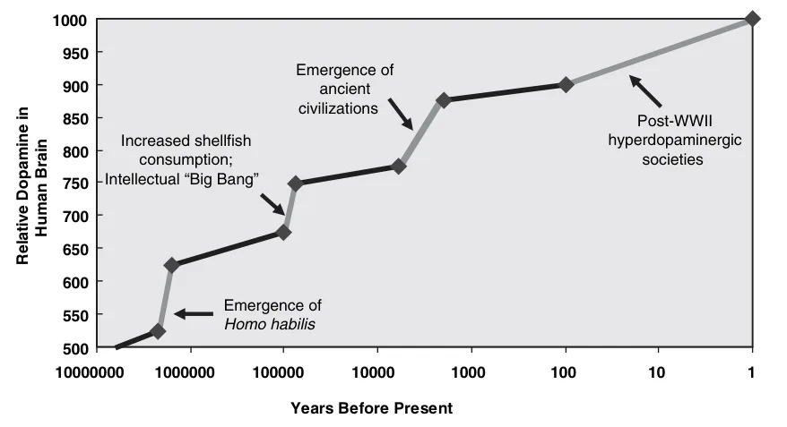<figcaption>Hình 6.2 Tiến trình của tâm trí dopaminergic.</figcaption></figure>
<p>3. sự xuất hiện của các nền văn minh phụ hệ, phân tầng bắt đầu khoảng 6.000 năm trước; và 4. sự phổ biến rộng rãi các giá trị dopaminergic trong thế kỷ XX, dẫn đến sự ra đời của các xã hội siêu dopaminergic sau khi Thế chiến II kết thúc.</p>
<p>Trong khi tất cả các giai đoạn này đều dẫn đến những tiến bộ nhận thức đáng kể, chỉ giai đoạn đầu tiên trong số này là một phần của sự thích nghi sinh lý đáng kể có lẽ bao gồm cả các yếu tố di truyền và phi di truyền, và chỉ hai giai đoạn đầu tiên tạo ra những lợi ích rõ ràng và tương đối bình đẳng trên toàn bộ bộ lạc hoặc xã hội. Hai giai đoạn dopaminergic cuối cùng được ghi nhận trong hồ sơ lịch sử và dẫn đến sự gia tăng tính cạnh tranh, sự thống trị của phong cách “bán cầu não trái”, sự thám hiểm tới những vùng đất xa xôi nhất của Trái Đất và xa hơn nữa, sự khai thác tài nguyên của Trái Đất, những bùng nổ sáng tạo nghệ thuật, và những khám phá khoa học vén màn phần lớn bí ẩn của vũ trụ và của chính sự sống. Nhưng, những kỷ nguyên dopaminergic cuối cùng cũng đi kèm với một cái giá khổng lồ, trong một chuỗi các cuộc chiến tranh và chinh phạt bất tận, sự xa lánh của con người khỏi đất đai, sự phân tầng xã hội, sự bất bình đẳng giữa các giới, sự suy giảm thời gian nhàn rỗi, sự tách rời gia tăng và thậm chí là sự xa lánh với đồng loại, bệnh tâm thần gia tăng, và gần đây hơn là sự suy thoái môi trường nghiêm trọng (Taylor, 2005).</p>
<p>Vấn đề cần được xem xét trong chương cuối cùng là liệu mệnh lệnh dopaminergic vốn đã thống trị sự tiến hóa của loài người và đặc biệt là lịch sử gần đây của nó đến vậy nay có phải được coi là phản tác dụng và cần phải từ bỏ hay không.</p><h2 class="chapter-title">Chương 7 — Từ bỏ mệnh lệnh dopamine</h2>
<h2>7 Từ bỏ mệnh lệnh dopaminergic</h2>
<p>Sẽ là một cách nói giảm nói tránh quá mức nếu bảo rằng chúng ta đang đứng ở một bước ngoặt trong lịch sử nhân loại. Lần đầu tiên trong lịch sử, con người không chỉ buộc phải sử dụng các nguồn năng lượng và nguyên liệu thô ngày càng đắt đỏ từ những tài nguyên đất liền và đại dương đã cạn kiệt (Duncan, 2005), mà lần đầu tiên các nhà tư tưởng hàng đầu cũng đang bắt đầu đồng loạt kêu gọi xem xét lại những giá trị đã chi phối sự tồn tại của nhân loại kể từ khi các nền văn minh cổ đại xuất hiện. Trong chương cuối này, tôi sẽ nêu bật mặt trái của quá khứ lịch sử bị chi phối bởi dopamine của chúng ta và mô tả những thay đổi cần phải diễn ra, đặc biệt ở các xã hội công nghiệp hóa, nhằm khôi phục sự cân bằng cho đời sống cá nhân và xã hội. Nhiều chủ đề trong chương này đồng điệu với những quan điểm được các nhà vận động thay đổi xã hội và môi trường hàng đầu khác bày tỏ, chẳng hạn như Capra (2003), Clark (1989), Duncan (2005), Primavesi (1991) và Taylor (2005).</p>
<p>Ngay cả khi chúng ta muốn, việc loại bỏ hoàn toàn tâm trí dopaminergic của mình gần như là điều không thể tưởng tượng nổi, bởi điều đó đồng nghĩa với việc đảo ngược hơn hai triệu năm tiến hóa của loài người. Mặc dù những thành tựu văn hóa của những con người hiện đại về mặt di truyền đầu tiên cách đây 200.000 năm trông không khác biệt đáng kể so với Homo erectus – điều phù hợp với giả thuyết về sự gia tăng dopamine qua trung gian biểu sinh trong 100.000 năm qua – nhưng khoảng cách dopaminergic giữa Homo habilis và các loài tiền nhiệm của nó bao hàm một sự thích nghi sinh lý lớn, có lẽ liên quan đến một số chọn lọc di truyền và do đó sẽ rất khó để tái tạo hoàn toàn. Tuy nhiên, điều có thể xảy ra là việc từ bỏ mệnh lệnh dopaminergic – tức tính thiêng liêng không thể chất vấn của động lực thúc đẩy con người khám phá, phát hiện, chiếm hữu và chinh phục/kiểm soát.</p>
<h3>7.1 Chạm tới giới hạn của tâm trí dopaminergic</h3>
<p>Không cần phải giới thiệu nhiều để mô tả những thành tựu của loài người. Trong số rất nhiều điểm cộng trên bảng cân đối của nhân loại, chúng ta đã:</p>
<p>1. đạt được những kỳ tích khám phá to lớn trên mặt đất, dưới lòng hành tinh của chúng ta và tiến ra không gian cận kề bên ngoài;</p>
<p>2. phát triển các tôn giáo lớn trên toàn thế giới mà ít nhất trên lý thuyết đã đưa ra những giải pháp đạo đức thúc đẩy sự chung sống giữa con người; 3. biến đổi môi trường tự nhiên thô sơ thành một loạt khổng lồ các hóa chất duy trì thế giới hiện đại của chúng ta; 4. tạo ra các loại thuốc và những tiến bộ y học khác giúp ngăn ngừa hầu hết các bệnh nghiêm trọng và kéo dài đáng kể tuổi thọ của chúng ta; 5. xây dựng các con đập chế ngự những dòng sông hùng vĩ và giúp tưới tiêu cho các sa mạc trên thế giới; 6. thiết kế và chế tạo các phương tiện nhanh chóng vận chuyển hàng hóa và dịch vụ đi khắp địa cầu, đồng thời mang lại mức độ cơ động cá nhân cao cho hàng trăm triệu người; 7. thực hiện những khám phá khoa học trải rộng từ cấp độ vũ trụ đến nguyên tử và chạm tới chính bí ẩn của sự sống; và 8. tạo ra một khối lượng phi thường các tác phẩm văn học, âm nhạc và nghệ thuật.</p>
<p>Tuy nhiên, đối với tất cả trừ một trong số những thành tựu nêu trên, cũng như hàng loạt thành tựu khác, đều có một hệ quả kiểu “Cassandra” tương ứng trong quá khứ, hiện tại và/hoặc đang chực chờ xảy ra (Clark, 1989). Ví dụ:</p>
<p>1. việc khám phá đã mang lại sự chinh phục, chế độ nô lệ, chủ nghĩa thực dân, sự lây lan dịch bệnh và tàn phá – những điều, trong số nhiều hệ lụy khác, đã làm giảm hơn 90% dân số bản địa châu Mỹ sau cuộc xâm lược của người châu Âu, dẫn đến sự tuyệt chủng của hơn một nửa số loài động vật và thực vật trên thế giới, và hiện đang đe dọa ngay cả tầng khí quyển trên cao với hàng chục nghìn mảnh “rác vũ trụ”; 2. các hệ tư tưởng tôn giáo và chính trị đã nuôi dưỡng những khác biệt dẫn đến các cuộc chiến tranh lớn và trong một số trường hợp đã hợp lý hóa, thậm chí khuyến khích việc tiêu diệt những con người khác, các loài khác và phần lớn môi trường tự nhiên; 3. sự gia tăng khổng lồ của các vật liệu tổng hợp đã dẫn đến sự gia tăng ồ ạt các chất ô nhiễm độc hại trong nhà ở, sông suối và không khí, cũng như làm gia tăng mạnh các bệnh ung thư khác nhau và các rối loạn nhạy cảm với hóa chất như hen suyễn và dị ứng (Ashford và Miller, 1991); 4. những loại thuốc thần kỳ từng kiểm soát được bệnh tật nay đã tạo ra sự kháng miễn dịch khiến chúng phần lớn trở nên lỗi thời,1 và tuổi thọ được kéo dài nhờ tác động nhân tạo đã dẫn đến tình trạng quá tải dân số cùng nhiều vấn đề khác, đến lượt nó lại dẫn đến kịch bản đảo ngược là tuổi thọ bị rút ngắn ở nhiều khu vực trên toàn cầu; 5. các con đập hiện đại đã gây ra sự hủy hoại môi trường và tích tụ phù sa đòi hỏi phải phá bỏ chúng với chi phí khổng lồ,2 việc tưới tiêu quá mức đã</p>
<p>1 www.vaxa.com/library/oldbugs.cfm. 2 Để thảo luận về vấn đề tháo dỡ đập, xem Mecoy (2002), trong khi các vấn đề về khan hiếm nước được McCarthy (2003) xem xét ngắn gọn.</p>
<p>dẫn đến việc phải bỏ hoang tới 20% diện tích đất canh tác trước đây do tích tụ độ mặn;3 và việc khai thác quá mức cùng với ô nhiễm đã làm cạn kiệt nguồn tài nguyên nước, biến nước ngọt vốn từng dồi dào trở thành thứ hàng hóa khan hiếm nhất trên Trái Đất; 6. số lượng khổng lồ ô tô và xe tải cá nhân – hiện ước tính gần 800 triệu chiếc và dự báo đạt một tỷ chiếc trên toàn thế giới vào năm 20204 – đã dẫn đến tắc nghẽn, đô thị hóa tràn lan, ô nhiễm và cô lập xã hội; và 7. những khám phá vĩ đại của chúng ta trong vật lý và sinh học, trong số nhiều hệ quả khác, đã dẫn đến vũ khí hủy diệt hàng loạt giết chết hàng chục triệu người trong thế kỷ qua và tiếp tục đe dọa tiêu diệt phần lớn cư dân trên Trái Đất.</p>
<p>Chỉ có văn học, âm nhạc và nghệ thuật là dường như phần lớn thoát khỏi các hệ quả tiêu cực, nhưng chúng lại góp phần vào sự bùng nổ thông tin mà một số người tin là có hại về mặt tâm lý (Hall và Walton, 2004). Hơn nữa, ngay cả các nỗ lực nghệ thuật và khoa học cũng có thể đang chạm đến trạng thái lợi suất giảm dần, như được phản ánh qua cái gọi là “sự cáo chung của khoa học” (Horgan, 1996), sự vắng bóng của một Picasso, Beethoven hay Proust trong nửa thế kỷ qua hoặc hơn thế, và ở mức độ bình thường hơn là số lượng ngày càng tăng các bộ phim phần tiếp theo và làm lại. Thật vậy, tâm trí dopaminergic thậm chí có thể đang quay lại chống lại chính nó, khi một số sản phẩm của nó làm giảm giá trị của các năng lực ở người vốn được trung gian bởi dopamine như suy luận trừu tượng, cũng như các mục tiêu dopaminergic như khám phá không gian. Chẳng hạn, không con người nào có thể sánh được với khả năng chơi cờ vua hay kỹ năng tính toán của máy tính, và các phương tiện giải trí ảo cùng những phương tiện khác đã trở nên tinh vi và sống động đến mức viễn cảnh tưởng tượng về việc khám phá các thiên hà khác trở nên cuốn hút hơn nhiều (và chắc chắn tiết kiệm chi phí hơn) đối với người bình thường so với thực tế là ngồi xem một xe tự hành di chuyển vài inch mỗi ngày trên sao Hỏa.</p>
<p>Cho đến nửa sau thế kỷ XX, mặt trái lớn nhất của tâm trí dopaminergic chắc chắn là chuỗi chiến tranh dường như bất tận nổ ra vì các hệ tư tưởng tôn giáo và chính trị trừu tượng, cướp đi hơn 100 triệu sinh mạng trong thế kỷ XX và vẫn đều đặn cướp đi hơn một triệu sinh mạng mỗi năm, cùng với số lượng người tị nạn gấp nhiều lần con số đó. Tuy nhiên, có thể lập luận rằng thiệt hại lớn nhất do tâm trí dopaminergic gây ra trong tương lai sẽ nhắm vào môi trường của chúng ta (bao gồm các loài khác) và vào chính sức khỏe tâm thần của chúng ta. Tôi tin rằng cặp hiểm họa song sinh này – thậm chí còn hơn cả tình trạng chiến tranh liên miên vốn dường như đang được phần lớn, nếu không muốn nói là hầu hết,</p>
<p>3 http://usinfo.state.gov/products/pubs/desertific/water.htm. 4 http://online.wsj.com/public/article/SB114487401909024337ouwLdesvUMPaejrsk_WhxkaZzNU_20060516.html?mod=tff_main_tff_top.</p>
<p>thế giới dung thứ – cuối cùng sẽ buộc chúng ta phải đánh giá lại các lý tưởng truyền thống và điều chỉnh sự mất cân bằng hóa chất thần kinh hiện tại vốn đang thiên lệch về hoạt động dopaminergic.</p>
<p>Chỉ từ sau khi Chiến tranh Thế giới thứ hai kết thúc, tác động tiêu cực to lớn của con người lên môi trường mới được thừa nhận và nghiên cứu. Dù tình trạng tuyệt chủng các loài khác do con người gây ra đã có từ thời tiền sử, tốc độ hủy diệt các loài động vật và thực vật đồng hành cùng chúng ta đang diễn ra ở mức chưa từng có do nạn phá rừng, ô nhiễm, sự xâm lấn của các loài ngoại lai và biến đổi khí hậu. Người ta ước tính rằng tỷ lệ tuyệt chủng hiện nay lớn hơn bất kỳ thời điểm nào kể từ khi các sinh vật phức tạp xuất hiện cách đây khoảng 500 triệu năm và làm lu mờ các cuộc đại tuyệt chủng khủng long cùng nhiều sinh vật khác trong kỷ Phấn trắng. Thật vậy, tốc độ tuyệt chủng gần đây được ước tính cao hơn 100.000 lần so với mức có thể xảy ra tự nhiên nếu không có con người (Leakey và Lewin, 1995). Cho đến gần đây, quan niệm cho rằng con người thực sự có thể làm thay đổi khí hậu Trái Đất hẳn bị xem là phi lý, nhưng quan điểm đó nay đã được chấp nhận rộng rãi do sự nóng lên toàn cầu gây ra bởi mức tiêu thụ nhiên liệu hóa thạch tăng vọt và việc phát thải các khí khác như methane tạo thành một lớp phủ carbon dioxide giống như một nhà kính hành tinh (Bowen, 2005). Mức sử dụng năng lượng bình quân đầu người tại Hoa Kỳ đã tăng gần 100% từ thập niên 1950 đến nay (Zhou, 1998), và mặc dù mức tăng bình quân đầu người không còn lớn như vậy trong những thập kỷ gần đây, tổng mức sử dụng năng lượng vẫn tiếp tục tăng mạnh do dân số tăng nhanh – từ 150 lên 280 triệu người ở Hoa Kỳ và từ hai tỷ rưỡi lên hơn sáu tỷ người trên toàn thế giới trong nửa thế kỷ qua. Những cải thiện khiêm tốn về hiệu suất nhiên liệu và mức tiêu thụ năng lượng hộ gia đình đã bị triệt tiêu bởi các yếu tố như quãng đường đi làm và vận chuyển dài hơn, khi một lượng năng lượng khổng lồ hiện nay được dùng để di chuyển nguyên vật liệu thô, hàng tiêu dùng, các thành phẩm khác và thậm chí cả con người đến mọi nơi trên địa cầu. Sự nóng lên toàn cầu – vốn đã đạt mức 4–5°C ở các vùng cực trong một trăm năm qua và có lẽ sẽ đạt mức tương tự trên toàn hành tinh vào năm 2100 – rõ ràng là mối đe dọa thảm khốc lớn nhất đối với môi trường hiện tại. Bên cạnh viễn cảnh diệt vong đang cận kề đối với hàng nghìn loài động thực vật khác, sự nóng lên toàn cầu do con người gây ra và các suy thoái môi trường khác sẽ ngày càng dẫn đến cái chết và nỗi thống khổ trên quy mô lớn của con người, bao gồm khả năng hàng trăm triệu người tị nạn môi trường phải chạy trốn khỏi những sa mạc đang mở rộng và những vùng bờ biển đang chìm dần.</p>
<p>Vấn đề quan trọng thứ hai là liệu sức khỏe tâm thần của xã hội chúng ta có đang bị đe dọa bởi lượng dopamine dư thừa trong não do tổ hợp các áp lực xã hội (như sự thay đổi liên tục, giảm thời lượng và chất lượng giấc ngủ, tính cạnh tranh cực đoan, căng thẳng tinh thần) được tạo ra bởi các xã hội công nghiệp hóa hiện đại hay không. Cũng giống như việc từng có thời người ta nghĩ rằng hoạt động của con người không thể làm thay đổi đáng kể khí hậu thế giới, thì trước đây cũng khó có thể tin rằng xã hội và lối sống hiện đại lại có thể gây ra sự mất cân bằng hóa chất thần kinh nghiêm trọng, lan rộng và những suy giảm chức năng não bộ đi kèm. Tuy nhiên, ngày nay người ta ngày càng nhận ra rằng các bệnh lý cường dopaminergic như tự kỷ, rối loạn lưỡng cực và tâm thần phân liệt đều phổ biến hơn nhiều hoặc nghiêm trọng hơn so với ở các xã hội và cộng đồng phi công nghiệp hóa (Previc, 2007; Sanua, 1983; Sartorius et al., 1986). Như đã lưu ý ở Chương 4, các rối loạn cường dopaminergic có thể chịu tác động trực tiếp từ căng thẳng tâm lý của xã hội hiện đại, vốn làm cạn kiệt serotonin và norepinephrine trong não và làm giảm khả năng ức chế của chúng đối với dopamine, dẫn đến nồng độ dopamine tăng cao. Trầm cảm và các rối loạn lo âu cũng tăng vọt, với số người trưởng thành sử dụng thuốc chống trầm cảm tăng gấp ba lần từ năm 1994 đến năm 2002 (Vedantum, 2004), bất chấp thực tế là ngay cả các thuốc chống trầm cảm thế hệ mới hơn cũng chỉ có hiệu quả ở một thiểu số dân số và có thể gây ra nhiều tác dụng phụ tiêu cực như tăng cân và rối loạn chức năng tình dục (Moncrieff et al., 2004). Riêng bệnh trầm cảm ước tính đã tiêu tốn của Hoa Kỳ hơn 80 tỷ USD vào năm 2000, và chứng tự kỷ được dự báo sẽ tiêu tốn của nền kinh tế Hoa Kỳ 400 tỷ USD vào năm 2016.5</p>
<p>Nhưng những con số này có thể chỉ là phần nổi của tảng băng chìm, bởi các rối loạn tự miễn vốn từng hiếm gặp và thậm chí toàn bộ hội chứng được gọi là “hội chứng chuyển hóa” (tăng huyết áp, tiểu đường, béo phì) đều chịu ảnh hưởng bởi sự cạn kiệt hệ serotonergic và noradrenergic khi mức độ căng thẳng trong xã hội của chúng ta gia tăng (Muldoon et al., 2006). Bản thân lượng dopamine dư thừa không nhất thiết là nguyên nhân trực tiếp gây ra các hội chứng thiếu hụt serotonergic, nhưng vì các tín hiệu đầu vào serotonergic thông thường giúp ức chế dopamine ở nhiều vùng não khác nhau (xem Chương 2 và 4), nên cả các hội chứng cường dopaminergic lẫn hội chứng thiếu hụt serotonin đều có thể là biểu hiện của cùng một dạng áp lực tâm lý trong các xã hội công nghiệp hóa hiện đại.</p>
<p>Sẽ thật tiện lợi nếu chúng ta có thể giải quyết các cuộc khủng hoảng môi trường đang lơ lửng chỉ bằng cách phát minh ra một vài công nghệ mới và qua đó tránh phải thay đổi các giá trị cốt lõi cũng như lối sống của mình. Quả thực, có những nhà khoa học môi trường tin rằng công nghệ tương lai có thể giảm mạnh 90% mức tiêu thụ năng lượng toàn cầu mà không ảnh hưởng đến mức sống ở các nước công nghiệp hóa, và ngay cả một số nhà tâm lý học môi trường (Stern, 2000) cũng tin rằng đổi mới công nghệ có thể vượt trội hơn so với thay đổi hành vi cá nhân về mặt này. Tuy nhiên, rất đáng nghi ngờ rằng liệu một sự thay đổi công nghệ</p>
<p>5 Tiến sĩ Cathy Pratt, Chủ tịch Hội đồng Quản trị Hiệp hội Tự kỷ Hoa Kỳ (Autism Society of America), Hội nghị Thượng đỉnh Tự kỷ Nam Texas, ngày 14 tháng 1 năm 2006.</p>
<p>đơn thuần có thể bắt đầu ngăn chặn được biến đổi khí hậu và các thảm họa sinh thái sắp tới hay không. Thứ nhất, có nhiều yếu tố sẽ triệt tiêu bất kỳ hiệu suất nào thu được từ các cải tiến công nghệ (ví dụ: sự gia tăng dân số thế giới, sự hấp thụ năng lượng mặt trời tự nhiên tăng lên do các chỏm băng đang tan chảy, sự giải phóng nhiệt liên tục từ các động cơ, máy móc hoặc thiết bị ngay cả khi dùng nguồn năng lượng tái tạo, nhu cầu làm mát lớn hơn do nhiệt độ toàn cầu cao hơn, sự phát triển gia tăng ở các quốc gia ít công nghiệp hóa hơn, lượng khí thải carbon tiếp diễn từ nông nghiệp, v.v.). Cũng không có giải pháp công nghệ nào mà lại không mang theo tác động tiêu cực riêng tới môi trường; ví dụ, máy tính, điện thoại di động, tia laser và các sản phẩm điện tử tiên tiến khác đòi hỏi các kim loại như niken và cadimi, mà việc khai thác, tinh chế và thải bỏ chúng có thể gây ra những tổn hại môi trường nghiêm trọng riêng. Quan trọng hơn, có rất ít bằng chứng cho thấy bản thân các tiến bộ công nghệ trước đây đã làm được bất cứ điều gì để bảo vệ chúng ta khỏi sự tàn phá của biến đổi khí hậu, xét việc mức tiêu thụ năng lượng bình quân đầu người vẫn tiếp tục tăng ở Hoa Kỳ, Trung Quốc và hầu hết các quốc gia khác. Mặc dù ô tô tiết kiệm nhiên liệu hơn, sự gia tăng số lượng ô tô trung bình trên mỗi gia đình, số dặm di chuyển trung bình trên mỗi xe và việc sử dụng kém hiệu quả (ví dụ: chạy không tải lãng phí trong các vụ kẹt xe ngày càng phổ biến) cùng với việc tiêu thụ nhiều nhựa và các sản phẩm tổng hợp khác thực tế đã làm tăng mức tiêu thụ dầu mỏ bình quân đầu người của Hoa Kỳ kể từ năm 1970. Và dù các hệ thống điều hòa không khí trung tâm của chúng ta có thể hiệu quả hơn trước đây, sự gia tăng diện tích trung bình của một ngôi nhà mới đã triệt tiêu nhiều phần hiệu suất đó. Hơn nữa, ngay cả khi chúng ta hoàn toàn dựa vào các nguồn tái tạo để sản xuất năng lượng – một viễn cảnh cực kỳ khó xảy ra ngay cả trong thế kỷ tới – chúng ta vẫn sẽ phải đối mặt với nguồn cung nguyên liệu thô đang cạn kiệt dần cho các sản phẩm sử dụng hàng ngày của xã hội công nghiệp.6</p>
<p>Việc một giải pháp “chỉ dựa vào công nghệ” là điều không thể tưởng tượng nổi không nhất thiết đòi hỏi phải quay trở lại lối sống tiền công nghiệp, như một số nhà nghiên cứu tin là có khả năng xảy ra trong cái được gọi là “Thuyết Olduvai” (Duncan, 2005), đặt tên theo hẻm núi nơi tìm thấy di cốt của những người Homo habilis đầu tiên. Nhưng như Capra (2003), Clark (1989), Howard (2000), Oskamp (2000) và những người khác đã đề xuất, mọi hy vọng tránh được thảm họa môi trường trong tương lai sẽ đòi hỏi một sự thay đổi hành vi sâu sắc, trong đó các cá nhân rời bỏ lối tiêu dùng phô trương, phương tiện di chuyển cá nhân và sự tiện lợi dùng một lần để chuyển sang lối sống giảm tiêu thụ, dựa vào giao thông công cộng tiết kiệm năng lượng</p>
<p>6 Ví dụ, chưa đến một phần ba trữ lượng đồng ước tính của Hoa Kỳ còn lại trong lòng đất (Greenfieldboyce, 2006).</p>
<p>và chú trọng tái chế cũng như tính bền vững môi trường (đầu ra tuần hoàn) thay vì sản xuất liên tục các mặt hàng mới (đầu ra tuyến tính). Ngoài ra, sự gia tăng dân số loài người vốn diễn ra gần như liên tục trong khoảng một chục thiên niên kỷ qua phải được thay thế bằng nhiều thập kỷ, nếu không muốn nói là nhiều thế kỷ, suy giảm dân số, với con số hai tỷ người được nhiều chuyên gia coi là mức tối đa có thể duy trì một xã hội hậu công nghiệp khi các nguồn tài nguyên giá rẻ đã cạn kiệt vĩnh viễn (Duncan, 2005). Chỉ riêng việc quay trở lại dấu chân môi trường của con người năm 1950 – tức thời điểm trước khi sự nóng lên toàn cầu mất kiểm soát bắt đầu, khi dân số thế giới là 3,5 tỷ người và mức tiêu thụ năng lượng bình quân đầu người ở Hoa Kỳ chưa bằng một nửa ngày nay – đã đòi hỏi một cuộc cách mạng thực sự trong lối sống hiện đại. Cuối cùng, hành vi cá nhân thân thiện với môi trường có thể không chỉ đơn thuần là một “đức hạnh cá nhân”, trích lời cựu Phó Tổng thống Dick Cheney,7 mà đúng hơn là một điều tất yếu để bảo tồn sức khỏe của hành tinh.</p>
<p>Những lập luận chống lại việc ỷ lại vào công nghệ tương tự cũng đúng đối với sự gia tăng của các rối loạn cường dopaminergic như chứng tự kỷ. Người ta có thể hy vọng rằng một bước đột phá về di truyền hay một phương pháp điều trị dược lý mới nào đó có thể ngăn chặn sự gia tăng của chứng tự kỷ và các rối loạn liên quan. Tuy nhiên, liệu pháp gen đã tỏ ra đầy rủi ro và phần lớn không thành công ngay cả khi một rối loạn chỉ do một gen đơn lẻ có độ thấm cao gây ra – điều chắc chắn không đúng với chứng tự kỷ và năm rối loạn cường dopaminergic lớn khác đã được xem xét ở Chương 4. Và các phương pháp điều trị dược lý (chủ yếu là thuốc kháng dopaminergic) cho đến nay mới chỉ cho thấy giá trị hạn chế trong việc điều trị các khiếm khuyết xã hội gặp ở các rối loạn cường dopaminergic, đặc biệt là tự kỷ (Previc, 2007), cũng giống như thuốc chống trầm cảm chỉ có hiệu quả ở mức tối thiểu bất chấp việc được sử dụng rộng rãi (Moncrieff et al., 2004). Do đó, việc giảm tỷ lệ mắc các rối loạn cường dopaminergic bằng cách thay đổi hành vi (như sinh con sớm hơn, giảm căng thẳng, tăng thời gian giải trí và hoạt động xã hội, ngủ nhiều hơn, v.v.) – những yếu tố được biết là làm tăng dopamine và tăng nguy cơ tự kỷ ở con cái – có thể mang lại nhiều lợi ích hơn (thậm chí là điều bắt buộc) so với việc đặt cược vào các biện pháp công nghệ viển vông.</p>
<h3>7.2 Điều tiết tâm trí dopaminergic</h3>
<h3>7.2.1 Thay đổi dopamine bằng hành vi cá nhân</h3>
<p>Hầu như không có câu nói nào phổ biến hơn câu “Bạn không thể thay đổi bản chất con người”. Đúng là những hành vi mang tính hủy diệt do con người khởi phát như chiến tranh, tra tấn, lòng tham và bất bình đẳng, cũng như sự tàn phá môi trường</p>
<p>7 www.commondreams.org/headlines01/0502–01.htm.</p>
<p>đã diễn ra liên tục hoặc thậm chí gia tăng kể từ buổi bình minh của các nền văn minh cổ đại và có lẽ còn trước đó nữa. Tuy nhiên, vẫn có những người theo chủ nghĩa hòa bình giữa các chiến binh, những cá nhân vị tha giữa những kẻ tham lam, và những nỗ lực anh hùng vì sự bền vững môi trường giữa sự lạm dụng môi trường ồ ạt; và từng có lúc thậm chí tồn tại cả những nền văn minh tương đối hòa bình và thân thiện với môi trường (Taylor, 2005). Hơn nữa, điều được coi là “bản chất con người” phụ thuộc ở mức độ lớn vào giới tính, vì một số đặc điểm dopaminergic tiêu cực như bạo lực ít phổ biến hơn nhiều ở phụ nữ so với nam giới, trong khi điều ngược lại đúng với các đặc điểm phi dopaminergic như sự nuôi dưỡng xã hội và hợp tác. Cuối cùng, như đã mô tả ở những phần khác trong cuốn sách này, hàm lượng dopaminergic trong não người – tác nhân đóng góp hàng đầu vào trí thông minh trừu tượng, động lực khám phá, thôi thúc kiểm soát và chinh phục, xung lực tôn giáo, nỗi ám ảnh phải đạt thành tựu và sáng tạo mọi thứ, việc theo đuổi các phần thưởng khuyến khích như tiền bạc, thông tin và quyền lực, cũng như việc lựa chọn thống trị xã hội thay vì gắn kết – hầu như không phải là một hiện tượng hóa chất thần kinh vĩnh viễn hay thậm chí tĩnh tại, vì nó phần lớn được tạo ra bởi các lực lượng biểu sinh. Do đó, quan niệm rằng người ta “không thể thay đổi bản chất con người” ít mang tính sự thật khoa học mà giống một lời biện hộ đầy tính tranh biện cho hiện trạng xã hội hơn (thường được đưa ra bởi những kẻ có nhiều lợi ích tài chính nhất để mất nếu có sự thay đổi).</p>
<p>Mặt khác, sẽ không dễ dàng để làm giảm hàm lượng dopaminergic trong não người, bởi tâm trí dopaminergic đã được rèn giũa qua nhiều thích nghi môi trường và xã hội, và là mặt chiếm ưu thế trong tâm lý của chúng ta. Bốn trở ngại chính đối với việc khôi phục sự cân bằng cho tâm trí dopaminergic thông qua hành vi cá nhân là:</p>
<p>1. hành vi dopaminergic có tính gây nghiện rất cao về mặt tâm lý; 2. dopamine thúc đẩy hành vi hoang tưởng và, ở mức độ nhẹ hơn, sự hợp lý hóa và phủ nhận; 3. dopamine là nền tảng của hành vi nam tính và tương đối cao hơn ở chính giới tính đang thống trị đời sống chính trị và kinh tế của hầu hết các xã hội; và 4. dopamine, ở các mức độ khác nhau, có tính thích nghi rất cao trong việc đối phó với những căng thẳng tâm lý và sự bất định của cuộc sống hiện đại.</p>
<p>Như đã điểm lại ở Chương 4, dopamine là hóa chất não bộ tham gia sâu sắc nhất vào hành vi gây nghiện, bao gồm các hành vi đa dạng như lạm dụng chất gây nghiện, nghiện tình dục và cờ bạc. Hệ thống dopamine hoạt động quá mức có thể góp phần vào mọi dạng hoạt động ám ảnh cưỡng chế và thậm chí cả các rối loạn thuộc phổ ám ảnh cưỡng chế như chơi trò chơi điện tử và chứng nghiện công việc hiện đang tràn lan trong các xã hội hiện đại. Việc chỉ điều trị các cơn nghiện bề nổi mà không làm giảm động lực dopaminergic tiềm ẩn có thể không mang lại nhiều kết quả; chẳng hạn, sự thay thế các nỗi ám ảnh tôn giáo mang tính dopaminergic bằng các nỗi ám ảnh tình dục và phi tôn giáo khác đã diễn ra trong các xã hội ngày càng thế tục hóa, mà không có sự suy giảm căn bản nào đối với bản thân khuynh hướng ám ảnh (Previc, 2006). Mặt khác, việc thay đổi lối sống cường dopaminergic đầy hối hả và gây nghiện của chúng ta quá nhanh có thể dẫn đến sự buồn chán lan tràn và thậm chí là lo âu (Taylor, 2005). Hơn nữa, ngay cả khi một cá nhân sẵn sàng chấp nhận một công việc lương thấp hơn nhiều (hoặc bất kỳ công việc nào) để tăng thêm thời gian nghỉ ngơi đang rất cần thiết và hướng tới lối sống chậm rãi hơn, người đó vẫn có thể buộc phải tránh sự chuyển đổi này vì những lý do kinh tế chính đáng (ví dụ: nhu cầu chu cấp cho chi phí đại học ngày càng tăng hoặc duy trì bảo hiểm y tế đầy đủ).</p>
<p>Trở ngại nghiêm trọng thứ hai đối với việc thay đổi nồng độ dopamine là dopamine là hóa chất thần kinh có khả năng thúc đẩy hành vi hoang tưởng cao nhất. Ví dụ, việc sử dụng các chất chủ vận dopaminergic và chất kích thích như amphetamine và cocaine có thể dẫn đến hoang tưởng tự đại – niềm tin rằng bản thân có thể thấu hiểu và kiểm soát các sự kiện bên ngoài một cách quá mức – vốn là hệ quả còn sót lại từ vai trò của dopamine trong việc nhận thức các mối liên hệ và dự đoán/kiểm soát các kích thích liên quan đến mục tiêu trong không gian ngoài cá nhân (xem Chương 3). Tương tự, sự thiếu thấu hiểu bản thân và thậm chí phủ nhận là một vấn đề phổ biến trong việc điều trị lạm dụng chất gây nghiện, cờ bạc và các rối loạn phổ ám ảnh cưỡng chế cường dopaminergic khác, và như đã đề cập, các nét tính cách hoang tưởng thường thấy ở những nhà lãnh đạo xã hội vốn hay bộc lộ nhân cách dopaminergic mạnh mẽ. Thật vậy, những hành vi cường dopaminergic được một xã hội có tính dopaminergic cao coi là “bình thường” có thể, giống như mọi cơn nghiện khác, lại là thứ dễ bị phủ nhận nhất. Chẳng hạn, một người săn bắn – hái lượm có lẽ sẽ coi một tuần làm việc hơn 60 giờ là điên rồ (hoặc ít nhất là hưng cảm), thế nhưng điều đó lại được coi là bình thường trong giới điều hành ở Hoa Kỳ và thậm chí đáng được xã hội tán dương ở một số nhóm người.8 Ngay cả nỗ lực của nhiều nhà khoa học nhằm tìm ra những phương thuốc chữa trị tưởng như bất khả thi hoặc khám phá những chân lý tối hậu như nguồn gốc của vũ trụ cũng có thể bị coi là hơi hoang tưởng và là triệu chứng cho thấy bán cầu não trái giàu dopamine đã thất bại trong việc thừa nhận tính ngẫu nhiên cũng như những giới hạn đối với tri thức của chúng ta. Dữ liệu thực nghiệm liên quan đến những câu hỏi tối hậu này hiện rất ít ỏi và nhiều khả năng sẽ vẫn như vậy, và việc kiểm định giả thuyết khoa học trong một môi trường thực nghiệm nghèo nàn về bản chất bắt đầu giống với hành vi bán mê tín (thậm chí hoang tưởng) của bán cầu não trái “lý trí” giàu dopamine trong cuộc truy tìm vô vọng nhằm tìm kiếm tính dự đoán trong một môi trường ngẫu nhiên</p>
<p>8 Thật vậy, tuần làm việc trung bình ở nhiều ngành nghề thu nhập cao tại Hoa Kỳ hiện nay đã vượt quá sáu mươi giờ: www.law.yale.edu/documents/pdf/CDO_Public/cdo-billable_hour.pdf.</p>
<p>(Wolford et al., 2000). Khía cạnh hoang tưởng của khoa học được khắc họa một cách hài hước trong câu nói nổi tiếng về các nhà vật lý thiên văn: “luôn sai lầm, nhưng chẳng bao giờ nghi ngờ” (Stenger, 2002).9</p>
<p>Lý do thứ ba giải thích vì sao việc thay đổi nồng độ dopamine ở ít nhất một nửa nhân loại sẽ rất khó khăn là, bên cạnh bất kỳ sự gia tăng nào trong suốt quá trình tiến hóa và lịch sử, dopamine vốn dĩ cao hơn một cách tự nhiên ở nam giới do mối liên hệ giữa testosterone và dopamine. Như đã lưu ý ở Chương 3, động lực đạt thành tựu, khám phá, phân tích và kiểm soát là những đặc điểm dopaminergic kinh điển và, như đã thảo luận ở nơi khác, nổi bật hơn ở bán cầu não giàu dopamine cũng như ở nam giới do mối liên kết testosterone–dopamine. Capra (2003), Primavesi (1991), Taylor (2005), và thậm chí cả Brown (2003, trong tiểu thuyết hư cấu Mật mã Da Vinci) chỉ là một vài trong số nhiều tác giả gần đây lập luận rằng, vì những lý do xã hội và môi trường, phong cách hành vi nam giới đang thống trị cần phải được điều hòa bằng cách dung hợp với phương thức nuôi dưỡng hơn của nữ giới. Tuy nhiên, điều này sẽ không dễ dàng khi nam giới, hoặc ít nhất là các đặc điểm hành vi nam tính (tính cạnh tranh và tính hung hăng), đang thống trị đời sống chính trị của hầu hết các quốc gia trên Trái Đất, và ngay cả những phụ nữ đạt được vai trò lãnh đạo trong xã hội cũng có xu hướng tiếp thu những đặc điểm đó. Đặc biệt khó khăn để các giá trị nữ tính thắng thế khi phụ nữ ở các nước công nghiệp hóa lựa chọn nuôi dạy gia đình (nuôi dưỡng) thay vì sự nghiệp (cạnh tranh) trong phần lớn quãng đời lao động của họ cuối cùng lại tự giới hạn khả năng tiếp cận quyền lực kinh tế và chính trị của chính mình. Không có gì ngạc nhiên khi các nghề nghiệp có tỷ lệ nữ giới chiếm đa số như giảng dạy, tư vấn tâm lý và điều dưỡng thường ít mang lại thu nhập cao và ít được ưu ái về mặt chính trị hơn so với các ngành nghề tương ứng do nam giới thống trị (Padavic và Reskin, 2003).</p>
<p>Lý do cuối cùng khiến việc giảm hàm lượng dopaminergic của chúng ta có thể trở nên cực kỳ khó khăn là vì nồng độ dopamine cao, dù tiềm ẩn nhiều nguy hiểm, cũng mang tính thích nghi rất cao trong những môi trường bất định. Dopamine cho phép ứng phó chủ động, trong đó chúng ta tiếp tục tham gia vào một hành vi (như làm việc quá sức, làm thêm giờ) chỉ để tránh những hậu quả tiêu cực (như thất bại trong công việc, căng thẳng tài chính gia đình). Phong cách ứng phó chủ động ở những cá nhân giàu dopaminergic đóng góp rất lớn vào cái được gọi là nhân cách “kiên cường” (hardy), vốn đặc biệt vô giá trong các điều kiện tâm lý khắc nghiệt như thời chiến (Previc, 2004). Nếu thiếu sự ứng phó chủ động như vậy, con người cũng như các loài khác có xu hướng khuất phục trước cái được biết đến</p>
<p>9 Như đã điểm lại ở Chương 6, Newton với việc giải mã Kinh Thánh và thuật giả kim, cùng Einstein với cuộc tìm kiếm cái được gọi là “Chén Thánh” của vật lý – lý thuyết trường thống nhất – có thể đã lãng phí phần lớn cuộc đời khoa học của họ vào những khám phá rõ ràng hoặc có thể coi là không thể đạt được. Một mối liên hệ trực tiếp hơn giữa hoang tưởng khoa học và hoang tưởng lâm sàng là trường hợp của nhà toán học đoạt giải Nobel John Nash, người được cho là đã tự kích phát chứng loạn thần kéo dài của mình (có liên quan đến nồng độ dopamine tăng cao) khi lao vào giải quyết Giả thuyết Riemann vẫn chưa có lời giải (Nasar, 1998).</p>
<p>là “sự bất lực tập nhiễm” và trầm cảm tâm lý (Seligman, 1975). Sự bất định có thể coi là mối đe dọa lớn nhất đối với sức khỏe tâm thần của người bình thường, thế nhưng các cá nhân ở những xã hội công nghiệp hóa nói riêng lại trở nên ngày càng thiếu ổn định hơn do các lực lượng kinh tế toàn cầu, sự suy giảm an ninh việc làm, tính cơ động xã hội gia tăng, tỷ lệ hôn nhân tan vỡ ngày càng cao, v.v. Để giảm bớt sự bất định vốn có trong các xã hội công nghiệp hiện đại và qua đó tạo điều kiện cho các lối sống phi dopaminergic phát triển mạnh mẽ, điều đó đồng nghĩa với việc, trong số nhiều thứ khác, phải đảo ngược những lực lượng kinh tế hùng mạnh như toàn cầu hóa và sự lỗi thời nhanh chóng của công nghệ.</p>
<p>Do đó, việc thay đổi hành vi cá nhân nhằm giảm thiểu những hệ quả tiêu cực của tâm trí dopaminergic, dù cần thiết đến đâu, cũng sẽ cực kỳ khó đạt được nếu không có những thay đổi song hành trong xã hội.</p>
<h3>7.2.2 Đánh đổ các trụ cột của xã hội cường dopaminergic</h3>
<p>Việc từ bỏ mệnh lệnh dopaminergic sẽ đòi hỏi phải thay thế hoặc ít nhất là điều tiết một số lý tưởng và thiết chế xã hội vốn đã thống trị lịch sử nhân loại, đồng thời góp phần xây dựng nên các nền văn minh vĩ đại cũng như giúp hiểu biết và kiểm soát tự nhiên. Sáu trụ cột chính của xã hội cường dopaminergic được xem xét ở đây là sự thống trị của nam giới, động lực khám phá, việc theo đuổi sự giàu có, sự tôn vinh chinh phục quân sự, niềm tin vào sự toàn năng của công nghệ, và vị thế áp đảo của các thiết chế tôn giáo mang tính nhân trung tâm và thứ bậc. Bên cạnh việc đòi hỏi một sự thay đổi lớn về các giá trị xã hội, việc đánh đổ các trụ cột này sẽ đòi hỏi phải vượt qua những nhóm lợi ích kinh tế hùng mạnh, bao gồm các nhà sản xuất năng lượng và ô tô, các công ty dược phẩm, và tất nhiên là cả tổ hợp công nghiệp – quân sự nổi tiếng.10</p>
<p>Tuy nhiên, bất chấp nền tảng vững chắc của chúng, những trụ cột này không phải là bất khả xâm phạm, bởi một xu hướng quay lưng lại với các lý tưởng này đã bắt đầu diễn ra ở nhiều xã hội công nghiệp (xem Taylor, 2005).</p>
<p>Như vừa lưu ý, một trong những chủ đề phổ biến nhất được nhấn mạnh bởi những người ủng hộ sự thay đổi xã hội căn bản là việc trao quyền cho phụ nữ về mặt chính trị, xã hội và kinh tế. Với sự ra đời của các xã hội phân tầng và có trình độ công nghệ tiên tiến, sự thống trị của nam giới (như chinh phục, kiểm soát) đã thay thế các mối quan hệ giới bình đẳng hơn của các xã hội săn bắn – hái lượm, và sự thay đổi này gắn liền với sự trỗi dậy của quyền kiểm soát và dòng dõi gia trưởng, các tôn giáo thứ bậc do nam giới thống trị, và một thái độ khai thác nhiều hơn đối với tự nhiên (Primavesi, 1991; Taylor, 2005). Trong khi năng lực công nghệ, đặc biệt là trong khoảng một thế kỷ qua,</p>
<p>10 Thuật ngữ này trở nên nổi tiếng trong bài diễn văn từ biệt của Tổng thống Eisenhower gửi nước Mỹ vào năm 1961: http://coursesa.matrix.msu.edu/~hst306/documents/indust.html.</p>
<p>mang những hàm ý nam tính (Oldenziel, 2004) – thật vậy, 90% tổng số kỹ sư ở Hoa Kỳ là nam giới trong một khảo sát gần đây (National Science Foundation, 1999) – thì tự nhiên và sự bền vững môi trường lại thường mang hàm ý nữ tính, như trong các cụm từ “Mẹ Trái Đất”, “Mẹ Thiên Nhiên” và “Gaia” (“Nữ thần Trái Đất”) (Primavesi, 1991). Tuy nhiên, chỉ riêng việc trao quyền cho phụ nữ không đảm bảo sẽ từ bỏ được mệnh lệnh dopaminergic, bởi nhiều nữ lãnh đạo nổi tiếng và có tính dopaminergic cao (như Indira Gandhi, Golda Meir, Margaret Thatcher) đã tỏ ra hoàn toàn sẵn sàng phát động chiến tranh và/hoặc cắt giảm các dịch vụ xã hội dành cho người nghèo. Thật vậy, dịch bệnh tự kỷ gần đây ở các xã hội công nghiệp hóa – vốn có thể truy nguyên một phần từ nồng độ dopamine cao ở người mẹ, đặc biệt là trong tầng lớp có học vấn cao nhất – cho thấy rằng những phụ nữ làm chuyên môn sở hữu định hướng thành tựu cao và các đặc điểm vốn thuộc về nam giới khác có thể đã làm tăng đáng kể nồng độ dopamine của chính họ (Previc, 2007). Do đó, việc giảm nồng độ dopamine ở cả nam và nữ sẽ đòi hỏi nhiều hơn là chỉ trao quyền và nam tính hóa phụ nữ; đúng hơn, nó sẽ đòi hỏi phải khôi phục những giá trị nữ tính truyền thống hơn về sự nuôi dưỡng và gắn kết trên toàn xã hội nói chung.</p>
<p>Như một minh chứng cho sức mạnh của trụ cột dopaminergic thứ hai, trải nghiệm của loài người luôn gắn liền với những cuộc di cư, khám phá và/hoặc thám hiểm vĩ đại kể từ buổi bình minh của Homo habilis. Trong kỷ nguyên lịch sử gần đây hơn, hầu hết các hành trình và cuộc khám phá này đều gắn với những mục tiêu dopaminergic (như quân sự, thương mại, khoa học và tôn giáo). Tuy nhiên, việc khám phá có thể không còn cấu thành một mục tiêu lý tưởng hóa như trước đây nữa, vì hai lý do chính. Thứ nhất, tất cả các khu vực trên Trái Đất ngoại trừ Nam Cực đều đã có người sinh sống và bị khai thác. Thứ hai, chi phí và rủi ro của việc thám hiểm không gian liên hành tinh đơn giản là quá kinh khủng khi đặt lên bàn cân với những lợi ích tiềm năng của nó. Mặc dù tâm trí dopaminergic của chúng ta có thể thấy đầy cảm hứng khi ngước nhìn lên bầu trời, nhưng xét từ góc độ sinh học, hệ mặt trời của chúng ta là một sa mạc mênh mông ngoại trừ ốc đảo Trái Đất cô đơn nhưng tươi đẹp và tràn đầy sức sống của chúng ta. Người ta có thể tìm thấy những hành tinh có thể sinh sống ở các hệ mặt trời lân cận, nhưng khoảng cách liên quan là vô cùng choáng ngợp – di chuyển với tốc độ khó tin là 1.000.000 km mỗi giờ, sẽ mất gần 5.000 năm để tới được Proxima Centauri, người hàng xóm gần nhất trong thiên hà của chúng ta. Ngay cả việc du hành đến một hành tinh gần như sao Hỏa cũng đặt ra những mối nguy hiểm to lớn về mặt sinh học – bức xạ mặt trời, bầu khí quyển độc hại, thời gian bị giam hãm hơn chín tháng, lượng calo nạp vào có thể không đủ, không thể thắng được trường hấp dẫn của sao Hỏa khi khởi hành về, v.v. – và do đó cực kỳ khó có thể được thực hiện trong đời chúng ta (Easterbrook, 2004). Ngoài ra, những lợi ích hữu hình cho nhân loại từ chuyến du hành như vậy rất khó định lượng, không giống như những cuộc thám hiểm vĩ đại trong quá khứ. Ngay cả khi Trái Đất bị một tiểu hành tinh hay một thảm họa vũ trụ nào đó va phải, con người vẫn có cơ hội sống sót trong hàng trăm năm dưới lòng đất trên Trái Đất cao hơn vô hạn so với việc sống trên các hành tinh và mặt trăng khác với bầu khí quyển độc hại, không có nước, không có chất hữu cơ hay các tài nguyên dễ khai thác.</p>
<p>Tính thiêng liêng của trụ cột dopaminergic thứ ba – việc theo đuổi sự giàu có – cũng phải bị thách thức. Việc theo đuổi sự giàu có về cơ bản đại diện cho một chứng nghiện các phần thưởng thứ cấp như tiền bạc, quyền lực và địa vị, vì các nhu cầu cơ bản có thể được đáp ứng chỉ bằng một phần nhỏ sản lượng kinh tế bình quân đầu người của các quốc gia phát triển. Như đã lưu ý trước đó trong chương này, các quốc gia giàu có hơn gây ra một lượng thiệt hại môi trường không tương xứng rất lớn dưới dạng khí thải carbon, ô nhiễm không khí, sử dụng thuốc trừ sâu, chất thải nguy hại, v.v. Hơn nữa, các cá nhân ở nhiều quốc gia giàu có cũng có ít thời gian nghỉ ngơi hơn, căng thẳng tâm lý xã hội lớn hơn và thiếu ngủ nhiều hơn. Việc theo đuổi sự giàu có và tiêu dùng phô trương đã đạt đến những thái cực gần như kỳ quặc trong xã hội Mỹ ngày nay, như được phản ánh qua câu nói tai tiếng của kẻ thâu tóm doanh nghiệp Gordon Gekko trong bộ phim Wall Street rằng “lòng tham là tốt”11 và niềm tin của một bình luận viên quốc gia rằng “sự nóng lên toàn cầu thật tuyệt vời” vì nó tạo ra “cơ hội đầu tư có một không hai trong đời”.12 Liên Hợp Quốc và các tổ chức khác đã bắt đầu rời xa tổng sản phẩm quốc nội (GDP) như một thước đo chất lượng cuộc sống và hiện đang tập trung vào các thước đo như Chỉ số Phát triển Con người (HDI), vốn chú trọng vào các hạng mục như tỷ lệ biết chữ và tuổi thọ bên cạnh sản lượng kinh tế. Bởi vì tổng sản phẩm quốc nội là một thành phần của chỉ số tổng hợp này đồng thời có ảnh hưởng độc lập lên các thước đo phi kinh tế của nó như tỷ lệ biết chữ và tuổi thọ, nên tồn tại một mối tương quan khá cao giữa hai thước đo (thường là 0,8–0,9). Tuy nhiên, mối tương quan này không chặt chẽ bằng ở các nước phi công nghiệp hóa, một số nước trong đó xếp hạng cao về Chỉ số Phát triển Con người nhưng dưới mức trung bình về tổng sản phẩm quốc nội bình quân đầu người, qua đó chứng minh rằng sản lượng kinh tế bình quân đầu người cao hoàn toàn không phải là điều kiện tiên quyết cho một chất lượng cuộc sống cao. Nếu Chỉ số Phát triển Con người bao gồm thêm các hạng mục như lượng thời gian nghỉ ngơi, thời gian đi lại và các chỉ số tâm lý xã hội như tỷ lệ ly hôn, thì chắc chắn nó sẽ còn tương quan kém hơn nữa (nếu không muốn nói là tương quan nghịch) với sản lượng kinh tế bình quân đầu người. Hơn nữa, các mối tương quan giữa sản lượng kinh tế bình quân</p>
<p>11 Tuyên bố “lòng tham là tốt” được dựa trên một bài phát biểu có thật của nhà tài chính bị kết án Ivan Boesky tại Đại học California ở Berkeley: http://en.wikipedia.org/wiki/Gordon_Gekko. 12 Từ một bài báo trực tuyến trên National Review của James Robbins: http://article.nationalreview.com/?q=ZTJmNWI4N2Y2NTBmY2E3ZTIzZjcxM2IzM2ZjNjRkYWI.</p>
<p>đầu người và các thước đo môi trường là rất âm, cho thấy những quốc gia giàu có nhất thế giới đang gây ra thiệt hại môi trường toàn cầu lớn nhất. Ví dụ, một thước đo được gọi là “dấu chân sinh thái” có tương quan -0,43 với tổng sản phẩm quốc nội bình quân đầu người đối với các quốc gia công nghiệp hóa (Moldan et al., 2004).</p>
<p>Sự tôn vinh chinh phục quân sự như một sự nghiệp “cao quý” là thành tố thứ tư và có lẽ bền bỉ nhất của mệnh lệnh dopaminergic, vì cuộc chinh phục như vậy kết hợp những điểm nhấn dopaminergic vào động lực mãnh liệt, sự kiểm soát và các mục tiêu xa xôi với tính hung hăng của nam giới được trung gian bởi dopamine. Bạo lực nội loài không chỉ giới hạn ở con người, vì các loài linh trưởng và động vật có vú khác cũng có thể tham gia vào bạo lực và thậm chí giết chóc để thống trị hệ thống thứ bậc xã hội hoặc lãnh thổ trực tiếp của chúng. Tuy nhiên, chỉ có con người mới đi những quãng đường rất xa để tiến hành tàn sát hàng loạt vì những lý tưởng trừu tượng như hệ tư tưởng chính trị, tôn giáo, hay thậm chí danh tiếng và vinh quang. Nghĩa vụ quân sự, ngay cả ở các quốc gia công nghiệp hóa, có thể coi là nghề nghiệp do nam giới thống trị cao nhất trong tất cả các nghề, ít nhất là ở những cấp bậc cao nhất nơi kinh nghiệm chiến đấu thường được yêu cầu để thăng tiến. Ngoài ra, các lĩnh vực khoa học do nam giới thống trị như vật lý và kỹ thuật là một thành phần được đánh giá rất cao trong năng lực quân sự, khi khoảng 50% tổng số nhà khoa học và kỹ sư trong chính phủ Hoa Kỳ được Bộ Quốc phòng tuyển dụng (National Science Foundation, 1996). Ngược lại, phụ nữ thường là nạn nhân lớn nhất của xung đột quân sự, dưới hình thức cưỡng hiếp và cướp bóc, và theo truyền thống, phụ nữ luôn là những người lãnh đạo các phong trào hòa bình trên toàn thế giới kể từ thế kỷ XIX, bao gồm Liên đoàn Phụ nữ Quốc tế vì Hòa bình và Tự do, Liên đoàn Hòa bình Phụ nữ ở Anh, Liên đoàn vì một Tổ quốc Mới ở Cộng hòa Weimar (Đức), và Phong trào Hòa bình Bắc Ireland. Việc giải thiêng và thậm chí xóa bỏ xung đột quân sự quy mô lớn không thể chỉ được coi là vấn đề hành vi cá nhân, mà cuối cùng sẽ đòi hỏi sự xuất hiện của các cơ quan quốc tế và lực lượng quốc tế mạnh mẽ, thực sự mang tính đại diện, có khả năng thúc đẩy và bảo đảm các mối quan hệ hòa bình giữa các quốc gia và cá nhân.</p>
<p>Việc không ngừng theo đuổi khám phá khoa học và niềm tin thái quá vào sức mạnh của công nghệ cấu thành trụ cột dopaminergic thứ năm có thể sẽ phải bị hạ giá trị trong tương lai. Như đã lưu ý, các tiến bộ khoa học và công nghệ do nam giới thống trị hoặc khơi nguồn đã đan xen với chiến tranh xuyên suốt lịch sử, từ những vũ khí bằng đồng và sắt đầu tiên cho đến sự phát triển của bom nguyên tử và máy tính. Ngoài ra, sự thức tỉnh khoa học trong thời kỳ Phục hưng và Khai sáng đã đi đôi với niềm tin của những người khởi xướng nó (như Descartes và Bacon) rằng khoa học phải giúp nhân loại thống trị và thậm chí nô dịch tự nhiên (Taylor, 2005). Tất nhiên, khoa học không gắn chặt một cách bất khả phân ly với chiến tranh và sự hoang phí sinh thái, và về nguyên tắc nó có thể được chuyển hướng sang các mục đích hòa bình và bền vững môi trường. Tư duy khoa học chắc chắn mang lại một phương tiện để nhìn nhận và định nghĩa một tập hợp vấn đề một cách khách quan, và về nguyên tắc qua đó thúc đẩy sự đồng thuận và hiểu biết lớn hơn giữa các cá nhân và xã hội. Và chúng ta chắc chắn cần tiếp tục có những tiến bộ khoa học và công nghệ để giúp đảo ngược những tổn hại môi trường nghiêm trọng (thậm chí thảm khốc) của những thế kỷ qua. Tuy nhiên, niềm tin vào sự toàn năng của khoa học và công nghệ đã đạt đến vị thế gần như giáo điều ở các quốc gia giàu có hơn trong thế kỷ vừa qua. Tiến bộ khoa học và công nghệ thường được xem như một mũi tên hay một đoàn tàu lao đi theo một hướng, nhưng ngay cả những người sùng bái công nghệ cũng không thể tránh khỏi việc phải ngoái lại và đối mặt với đống đổ nát bị bỏ lại dọc theo con đường tiến bộ khoa học. Liệu những nỗ lực khoa học và thành tựu công nghệ của chúng ta có thúc đẩy hòa bình giữa các cá nhân và quốc gia, có mang lại lợi ích cho các loài khác và sức khỏe chung của hành tinh, có làm giảm mức tiêu thụ năng lượng toàn cầu, có xóa bỏ bệnh tật và nỗi đau khổ của con người, có cải thiện sức khỏe tâm thần tổng thể và khiến chúng ta hạnh phúc hơn không? Thật vậy, nền công nghệ trù phú cho phép chúng ta sản xuất hàng chục nghìn sản phẩm tiêu dùng mỗi năm đã dẫn đến quá nhiều lựa chọn đến mức con người thực sự trở nên bất hạnh vì điều đó (Schwartz, 2004), có lẽ bởi vì việc ra quyết định liên tục qua trung gian dopamine mà những lựa chọn như vậy đòi hỏi. Sự dư thừa các thiết bị kỹ thuật ở các quốc gia công nghiệp hóa còn dẫn đến sự suy giảm mức độ tương tác xã hội của chúng ta, như được minh họa rõ nét nhất qua sự gia tăng của “hikikomori”, một chứng rối loạn lan rộng ở Nhật Bản chủ yếu ảnh hưởng đến nam giới trẻ tuổi – những người dành phần lớn thời kỳ đầu trưởng thành để tương tác với máy tính trong sự cô lập và không thể duy trì tiếp xúc xã hội ngay cả với các thành viên gia đình ruột thịt (Watts, 2002). Cần lưu ý rằng ít nhất một thách thức lớn đối với sự thống trị của việc theo đuổi khoa học và công nghệ đã xảy ra, ở chỗ có khả năng lợi suất tương lai sẽ giảm dần đối với hầu hết các nỗ lực khoa học (Horgan, 1996). Con người đã thu được kiến thức hùng mạnh về vũ trụ, nguyên tử và bộ gen, và như cuốn sách này đã gợi ý, có lẽ ngay cả bản thân bộ não người nay cũng có thể phần lớn được thấu hiểu xét về mặt tiến hóa, sự phân bên, tổ chức hóa chất thần kinh và các chức năng chính. Hơn nữa, những gì cho đến nay vẫn chưa được giải thích – nguồn gốc của vũ trụ, sự tồn tại của nhiều vũ trụ song song, sự tồn tại của một lực thống nhất làm nền tảng cho mọi vật chất và năng lượng – hoàn toàn có thể nằm ngoài khả năng lĩnh hội của tâm trí con người và/hoặc khả năng đo lường hay tái tạo của các sáng tạo công nghệ do con người làm ra.</p>
<p>Trụ cột cuối cùng của xã hội cường dopaminergic – sự thống trị của các thiết chế tôn giáo mang tính thứ bậc – đã đóng một vai trò quan trọng trong việc thúc đẩy chủ yếu là nam giới định hình dòng chảy lịch sử, như trong thời kỳ thuộc địa khi những người phục vụ cho các cường quốc thực dân như các conquistador (những kẻ chinh phục Tây Ban Nha) chiến đấu vì vinh quang của Chúa cũng nhiều như vì vinh quang và sự giàu có của chính họ. Primavesi (1991), Taylor (2005) và những người khác đã lập luận rằng việc lồng ghép sự thống trị của nam giới vào các tôn giáo thứ bậc, mang tính nhân trung tâm cũng đã định hình thái độ khai thác của chúng ta đối với môi trường, đặc biệt là trong truyền thống Do Thái – Cơ Đốc giáo.13 Nhiều tác động tích cực của các tôn giáo lớn trong suốt lịch sử đã bị vấy bẩn bởi sự đồng lõa của chúng trong vô số cuộc chiến tranh, xung đột và trong một số tội ác tồi tệ nhất của nhân loại, bao gồm cuộc tàn sát hàng nghìn người chỉ riêng tại Tây Ban Nha trong Tòa án Dị giáo vào cuối thời Trung Cổ, việc tổ chức hơn 100.000 phiên tòa xử “phù thủy” trong cùng giai đoạn đó ở các khu vực khác của châu Âu, và việc dân số châu Mỹ sụt giảm từ hơn năm mươi triệu xuống chỉ còn vài triệu người do dịch bệnh và tàn sát sau cuộc chiếm đóng của thực dân/Cơ Đốc giáo. Tuy nhiên, các thiết chế tôn giáo thứ bậc lại đại diện cho trụ cột xã hội dopaminergic bắt đầu bộc lộ nhiều vết rạn nứt nhất trong các xã hội hiện đại, bởi khi khoa học đẩy lùi ranh giới của những điều chưa biết, khái niệm về một vị Chúa mang tính cá nhân đang ngày càng trở nên xa lạ hơn trên khắp thế giới công nghiệp hóa. Ngoại trừ Hoa Kỳ, tôn giáo hiện nay chỉ được khoảng một phần ba dân số hoặc ít hơn ở mọi quốc gia công nghiệp hóa lớn trên thế giới coi là quan trọng.14 Khoa học thậm chí đã xâm lấn vào chính nguồn gốc của hành vi tôn giáo, khi chúng ta nay biết rằng hành vi tôn giáo, giống như nhiều hành vi đặc thù khác của con người, là sản phẩm của các con đường dopaminergic chạy qua vùng não bụng – giữa (đặc biệt ở bán cầu trái) vốn hướng tới không gian và thời gian xa xôi và tách rời khỏi các hệ thống quanh cá nhân/bản thân (Previc, 2006). Tất nhiên, khoa học không thể thay thế hoàn toàn bí ẩn của sự sống, nhưng rất đáng nghi ngờ liệu các thiết chế tôn giáo cứng nhắc, mang tính thứ bậc có thể phát triển mạnh chỉ dựa trên những bí ẩn còn sót lại ở cấp độ vũ trụ và nguyên tử hay không. Việc từ bỏ mệnh lệnh dopaminergic không nhất thiết dẫn đến việc từ bỏ hoàn toàn niềm tin tôn giáo và tâm linh, mà chỉ từ bỏ những hệ thống tôn giáo cụ thể gắn liền với nam tính, thứ bậc, sự thống trị, hủy hoại sinh thái và xung đột.</p>
<h3>7.3 Hướng tới một ý thức mới</h3>
<p>Việc hạ giá trị các lý tưởng dopaminergic, dù cần thiết, tự thân nó sẽ không làm giảm hàm lượng dopaminergic trong não chúng ta xuống mức lành tính hơn.</p>
<p>13 Một đoạn Kinh Thánh thường được trích dẫn để minh họa cho thái độ khai thác của truyền thống Do Thái – Cơ Đốc giáo là “Hãy quản trị loài cá biển, loài chim trời cùng các gia súc, khắp cả mặt đất và mọi loài vật bò trên mặt đất” (Sáng Thế Ký 1:28). 14 www.religioustolerance.org/rel_impo.htm.</p>
<p>Những bước đi mạnh mẽ cũng phải được thực hiện trên phạm vi toàn cầu nhằm giảm thiểu một trong những lý do chính khiến nồng độ dopamine cao trở nên có tính thích nghi mạnh mẽ đến vậy – đó là để kiểm soát các sự kiện bất lợi và bất định. Cần phải giảm căng thẳng tâm lý và sự bất định để dịch chuyển cán cân hóa chất thần kinh rời xa dopamine và hướng về norepinephrine và serotonin, những chất vốn thường bị cạn kiệt bởi căng thẳng. Trong một thế giới nơi các nhu cầu cơ bản được đáp ứng và cuộc sống của một người không bị xé nát bởi mất việc làm, mất bảo hiểm y tế, cạnh tranh gay gắt, ly hôn hoặc bị bứng rễ sang những nơi ở mới, thì nhu cầu và nỗi ám ảnh phải phấn đấu không ngừng sẽ được giảm nhẹ. Để đạt được một thế giới như vậy, chúng ta phải làm cho các nền kinh tế và xã hội của mình trở nên bình đẳng hơn, ít bị ám ảnh bởi công việc hơn, ít bị chi phối bởi thành tích hơn và ổn định hơn. Sự chuyển dịch xã hội này sẽ đồng nghĩa với việc mở rộng phạm vi và sức mạnh của mạng lưới an sinh xã hội, đảo ngược xu hướng toàn cầu hóa (trong đó việc làm nhảy từ quốc gia này sang quốc gia khác để tìm kiếm mức lương thấp hơn và sự bảo vệ môi trường lỏng lẻo hơn, ngay cả khi chi phí sinh thái của việc vận chuyển hàng hóa ngày càng tăng), và thận trọng hơn trong việc giới hạn các tiến bộ công nghệ cho đến khi hệ quả của chúng được xem xét đầy đủ hơn. Điều đó cũng đồng nghĩa với việc đảo ngược sự nóng lên toàn cầu và các tổn hại môi trường khác vốn đã đẩy hàng triệu người vào cảnh tuyệt vọng kinh tế, di cư, tuyệt vọng tâm lý và nếu không có hành động kịp thời, có thể dẫn đến cái chết của hàng trăm triệu, nếu không muốn nói là hàng tỷ người, do nạn đói.</p>
<p>Đối với bộ não dopaminergic đang bị kích động quá mức (hưng cảm nhẹ) của chúng ta, việc quay trở lại một trạng thái tồn tại cân bằng hơn về mặt hóa chất thần kinh ban đầu có thể tạo ra những hệ quả tiêu cực như sự buồn chán, nhưng theo thời gian, sự lắng dịu của đầu ra dopaminergic có thể được truyền lại cho các thế hệ tương lai theo đúng cách mà hoạt động dopaminergic tăng cao hiện đang được truyền lại. Và trong khi việc khám phá, phát hiện khoa học và phát minh công nghệ theo đó có thể chậm lại, những vở kịch lớn của kiếp người – sinh ra, yêu đương, kết hôn, con cái, lão hóa, đau khổ, cái chết – sẽ vẫn tiếp tục được trải nghiệm và khắc họa bởi các nhà văn và nghệ sĩ bằng ngôn từ và khung vải của các thế hệ mai sau.</p>
<p>Việc từ bỏ mệnh lệnh dopaminergic sẽ dẫn đến một ý thức hậu dopaminergic, trong đó những đặc điểm cốt lõi của tâm trí dopaminergic (như nhìn xa trông rộng, bồn chồn không yên, tách rời, khai thác, động lực mãnh liệt hướng tới các mục tiêu thứ cấp như sự giàu có hay các ý niệm trừu tượng) sẽ được cân bằng hoặc thậm chí thay thế bởi các đặc điểm đối lập của chúng (xem Hình 7.1). Điều đó sẽ bao gồm việc kiến tạo một thế giới nơi sự bồn chồn do định hướng tương lai tạo ra được thay thế bằng sự mãn nguyện của định hướng hiện tại, nơi các giá trị nam tính không còn thống trị các giá trị nữ tính, nơi việc nâng cao sức khỏe tâm thần trở nên quan trọng hơn việc theo đuổi sự giàu có, nơi tính bền vững được coi trọng hơn khả năng khai thác, nơi việc bảo tồn vẻ trù phú xanh tươi của Trái Đất quan trọng hơn việc khám phá</p>
<figure class="bookfig">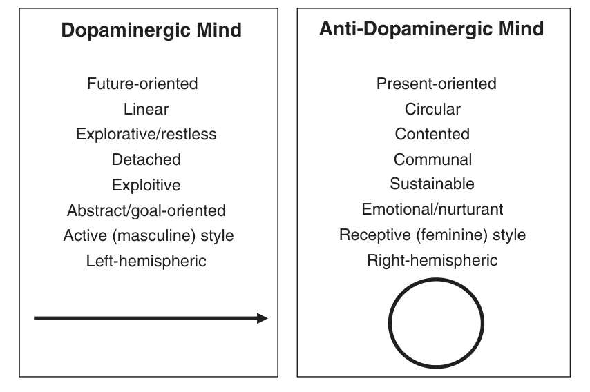<figcaption>Hình 7.1 Khôi phục sự cân bằng cho tâm trí dopaminergic.</figcaption></figure>
<p>sa mạc của không gian vũ trụ, nơi sự thấu hiểu và tôn trọng sâu sắc hơn đối với thế giới tự nhiên, vũ trụ cùng những bí ẩn vốn có của chúng thay thế cả sự ngu dốt của tôn giáo giáo điều lẫn sự ngạo mạn của khoa học không kiềm chế, nơi những người kiến tạo hòa bình được trân trọng hơn những chiến binh, nơi các mối quan hệ tình cảm giàu tính nuôi dưỡng cũng quan trọng như những ý niệm và mục tiêu trừu tượng, nơi hoạt động của bán cầu não trái không còn áp đảo hoạt động của bán cầu não phải, nơi việc ôm ấp “vòng tròn sự sống” quan trọng hơn việc chạy theo “con đường tiến bộ” tuyến tính. Sẽ không dễ dàng để chúng ta chuyển sang một hệ giá trị vốn chiếm ưu thế trước khi mệnh lệnh dopaminergic ngự trị tối cao, ngay cả khi chúng ta cố gắng giữ lại phần lớn cơ sở hạ tầng kinh tế và công nghệ hiện đại của mình. Tuy nhiên, thông điệp cốt lõi của cuốn sách này là mệnh lệnh dopaminergic quả thực có thể được từ bỏ bởi vì nó không phải là một phần di truyền chủ yếu của chúng ta. Cũng giống như tâm trí dopaminergic của chúng ta đã được nhào nặn bởi các lực lượng và áp lực sinh thái như thích nghi nhiệt, chế độ ăn uống và vận động, và sau đó bởi việc xã hội tiếp nhận mệnh lệnh dopaminergic, thì tâm trí của chúng ta cũng có thể được đưa trở về trạng thái cân bằng lành mạnh hơn qua nhiều thế hệ nối tiếp bằng cách thay đổi các lý tưởng và xã hội của chúng ta.</p><h2 class="chapter-title">Tài liệu tham khảo</h2>
<h2>Tài liệu tham khảo</h2>
<p>Abbruzzese, M., Ferri, S., and Scarone, S. (1995). Wisconsin Card Sorting Test performance in obsessive-compulsive disorder: no evidence for involvement of dorsolateral prefrontal cortex. Psychiatry Research, 58, 37–43. Abi-Dargham A., and Moore, H. (2003). Prefrontal DA transmission at D1 receptors and the pathology of schizophrenia. Neuroscientist, 9, 404–416. Abraham, A., Windmann, S., Siefen, R., Daum, I., and Gunturkun, O. (2006).</p>
<p>Creative thinking in adolescents with attention deficit hyperactivity disorder (ADHD). Child Neuropyschology, 12, 111–123. Abwender, D. A., Trinidad, K. S., Jones, K. R., Como, P. G., Hymes, E., and</p>
<p>Kurlan, R. (1998). Features resembling Tourette’s syndrome in developmental stutterers. Brain and Language, 62, 455–464. Adler, C. M., McDonough-Ryan, P., Sax, K. W., Holland, S. K., Arndt, S., and</p>
<p>Strakowski, S. M. (2000). FMRI of neuronal activation with symptom provocation in unmedicated patients with obsessive compulsive disorder. Journal of Psychiatric Research, 34, 317–324. Al-Absi, M., Bongard, S., Buchanan, T., Pincomb, G. A., Licinio, J., and</p>
<p>Lovallo, W. R. (1997). Cardiovascular and neuroendocrine adjustment to public speaking and mental arithmetic stressors. Psychophysiology, 34, 266– 275. Al-Adawi, S., Dawe, G. S., and Al-Hussaini, A. A. (2000). Aboulia: neurobe havioural dysfunction of dopaminergic system? Medical Hypotheses, 54, 523–530. Alcaro, A., Huber, R., and Panksepp, J. (2005). Behavioral functions of the mesolimbic dopaminergic system: an affective neuroethological perspective. Brain Research Reviews, 56, 283–321. Aldridge, J., Berridge, K., Herman, M., and Zimmer, L. (1993). Neuronal coding of serial order, syntax of grooming in the neostriatum. Psychological Science, 4, 391–395. Aleman, A., Kahn, R. S., and Selten, J. P. (2003). Sex differences in the risk of schizophrenia: evidence from meta-analysis. Archives of General Psychiatry, 60, 565–571. Alias, A. G. (2000). Schizotypy and leadership: a contrasting model for deficit symptoms, and a possible therapeutic role of sex hormones. Medical Hypotheses, 54, 537–552. Alonso, L. C., and Rosenfield, R. L. (2003). Molecular genetic and endocrine mechanisms of hair growth. Hormone Research, 60, 1–13.</p>
<p>canic winter, and differentiation of modern humans. Journal of Human Evolution, 34, 623–651. Amos, J. (2 Dec 2003). Neanderthal “face” found in Loire. BBC News World</p>
<p>Edition Online (http://news.bbc.co.uk/2/hi/science/nature/3256228.stm). Andrew, J. M. (1981). Parietal laterality and violence. International Journal of</p>
<p>Neuroscience, 12, 7–14. Angst, J., Gamma, A., Endrass, J., Hantouche, E., Goodwin, R., Ajdacic, V.,</p>
<p>Eich, D., and Rossler, W. (2005). Obsessive-compulsive syndromes and disorders: significance of comorbidity with bipolar and anxiety syndromes. European Archives of Psychiatry and Clinical Neuroscience, 255, 65–71. Anisman, H., and Zacharko, R. M. (1986). Behavioral and neurochemical consequences associated with stressors. Annals of the New York Academy of Sciences, 467, 205–225. Annett, M. (1985). Left, Right, Hand and Brain: the Right Shift Theory. London:</p>
<p>Erlbaum. Arbisi, P. A., Depue, R. A., Krauss, S., Spoont, M. R., Leon, A., Ainsworth, B., and Muir, R. (1994). Heat-loss response to a thermal challenge in seasonal affective disorder. Psychiatry Research, 52, 199–214. Archer, T., and Fredriksson, A. (1992). Functional changes implicating dopa minergic systems following perinatal treatments. Developmental Pharmacological Therapy, 18, 201–222. Arensburg, B., Schepartz, L. A., Tillier, A.M., Vandermeersch, B., and Rak, Y.</p>
<p>(1990). A reappraisal of the anatomical basis for speech in Middle Palaeolithic hominids. American Journal of Physical Anthropology, 83, 137–146. Arnold, L. M. (2003). Gender differences in bipolar disorder. Psychiatric Clinics of North America, 26, 595–620. Arnulf, I., Bonnet, A.-M., Damier, P., Bejjani, B.-P., Seilhean, D., Derenne,</p>
<p>J.-P., and Agid, Y. (2000). Hallucinations, REM sleep, and Parkinson’s disease. Neurology, 55, 281–288. Arsuaga, J. L. (2003). The Neanderthal’s Necklace: in Search of the First Thinkers.</p>
<p>New York: Wiley & Sons. Ashford, N. A., and Miller, C. S. (1991). Chemical Exposures: Low Levels and</p>
<p>High Stakes. New York: Van Nostrand Reinhold. B€ackman, L., and Farde, L. (2001). Dopamine and cognitive functioning: brain imaging findings in Huntington’s disease and normal aging. Scandinavian Journal of Psychology, 42, 287–296. B€ackman, L., Nyberg, L., Lindenberger, U., Li, S. C., and Farde, L. (2006).</p>
<p>The correlative triad among aging, dopamine, and cognition: current status and future prospects. Neuroscience and Biobehavioral Reviews, 30, 791–807. Baldo, B. A., and Kelley, A. E. (2007). Discrete neurochemical coding of dis tinguishable motivational processes: insights from nucleus accumbens control of feeding. Psychopharmacology, 191, 439–459. Ball, D., Hill, L., Eley, T. C., Chorney, M. J., Chorney, K., Thompson, L. A.,</p>
<p>Detterman, D. K., Benbow, C., Lubinski, D., Owen, M., McGuffin, P., and Plomin, R. (1998). Dopamine markers and cognitive ability. Neuroreport, 26, 347–349.</p>
<p>edn). Mineola: Dover Publications. Bansal, S. A., Lee, L. A., and Woolf, P. D. (1981). Dopaminergic stimulation and inhibition of growth hormone secretion in normal man: studies of the pharmacological specificity. Journal of Clinical Endocrinology and Metabolism, 53, 1273–1277. Barcelo, F., Sanz, M., Molina, V., and Rubia, F. J. (1997). The Wisconsin Card</p>
<p>Sorting Test and the assessment of frontal function: a validation study with event-related potentials. Neuropsychologia, 35, 399–408. Bardo, M. T., Donohew, R. L., and Harrington, N. G. (1996). Psychobiology of novelty seeking and drug seeking behavior. Behavioral and Brain Research, 77, 23–43. Barrett, A. M., and Eslinger, P. J. (2007). Amantadine for adynamic speech:</p>
<p>possible benefit for aphasia? American Journal of Physical Medicine and Rehabilitation, 86, 605–612. Barros, R. C., Branco, L. G., and Carnio, E. C. (2004). Evidence for thermo regulation by dopamine D1 and D2 receptors in the anteroventral preoptic region during normoxia and hypoxia. Brain Research, 1030, 165–171. Bates, T., and Stough, C. (1998). Improved reaction time method, information processing speed, and intelligence. Intelligence, 26, 53–62. Batson, C. D., and Ventis, W. L. (1982). The Religious Experience: a Social</p>
<p>Psychological Perspective. New York: Oxford University Press. Bauer, M., and Pfennig, A. (2005). Epidemiology of bipolar disorders. Epilepsia,</p>
<p>46 (Suppl. 4), 8–13. Bechara, A., Tranel, D., and Damasio, H. (2000). Characterization of the decision-making deficit of patients with ventromedial prefrontal cortex lesions. Brain, 123, 2189–2202. Behar, D. M., Villems, R., Soodyall, H., Blue-Smith, J., Pereira, L., Metspalu,</p>
<p>E., Scozzari, R., Makkan, H., Tzur, S., et al. (2008). The dawn of human matrilineal diversity. American Journal of Human Genetics, 82, 1130–1140. Bellini, S., and Pratt, C. (2003). Indiana parent/family 2003 needs assessment survey summary (www.iidc.indiana.edu/irca/2003NeedsAssess.html). Beninger, R. J. (1983). The role of dopamine in locomotor activity and learning.</p>
<p>Brain Research Reviews, 6, 173–196. Benkelfat, C., Nordahl, T. E., Semple, W. E., King, A. C., Murphy, D. L., and</p>
<p>Cohen, R. M. (1990). Local cerebral glucose metabolic rates in obsessivecompulsive disorder. Patients treated with clomipramine. Archives of General Psychiatry, 47, 840–848. Bentley, A. (1983). Personal and global futurity in Scottish and Swazi students.</p>
<p>Journal of Social Psychology, 121, 223–229. Benvenga, S., Lapa, D., and Trimarchi, F. (2003). Don’t forget the thyroid in the etiology of psychoses. American Journal of Medicine, 115, 159–160. Berger, B., Gaspar, P., and Verney, C. (1991). Dopaminergic innervation of the cerebral cortex: unexpected differences between rodents and primates. Trends in Neurosciences, 14, 21–27. Berlinski, D. (2000). Newton’s Gift. New York: Free Press.</p>
<p>Berman, K. F., and Weinberger, D. R. (1990). Lateralisation of cortical function during cognitive tasks: regional cerebral blood flow studies of normal individuals and patients with schizophrenia. Journal of Neurology, Neurosurgery, and Psychiatry, 53, 150–160. Berrettini, W. H. (2000). Are schizophrenic and bipolar disorders related? A review of family and molecular studies. Biological Psychiatry, 48, 531–538. Berridge, K. C., and Robinson, T. E. (1998). What is the role of dopamine in reward: hedonic impact, reward learning, or incentive salience? Brain Research Reviews, 28, 309–369. Bick, P.A., and Kinsbourne, M. (1987). Auditory hallucinations and subvocal speech in schizophrenic patients. American Journal of Psychiatry, 144, 222–225. Bickerton, D. (1995). Language and Human Behavior. Seattle: University of</p>
<p>Washington Press. Biederman, J., and Faraone, S. V. (2005). Attention-deficit hyperactivity dis order. Lancet, 366, 237–248. Bjerknes, C. J. (2002). Albert Einstein: the Incorrigible Plagiarist. Downers Grove:</p>
<p>XTX, Inc. Blackburn, J. R., Pfaus, J. G., and Phillips, A. G. (1992). Dopamine functions in appetitive and defensive behaviours. Progress in Neurobiology, 39, 247–279. Blanchard, R. J., Griebel, G., Guardiola-Lemaitre, B., Brush, M. M., Lee, J., and Blanchard, D. C. (1997). An ethopharmacological analysis of selective activation of 5-HT1A receptors: the mouse 5-HT1A syndrome. Pharmacology, Biochemistry and Behavior, 57, 897–908. Blatteis, C. M., Billmeier, G. J., Jr., and Gilbert, T. M. (1974). Thermoregula tion of phenylketonuric children. Pediatric Research, 8, 809–814. Blum, D. (1997). The plunge of pleasure. Psychology Today, Sep/Oct 97 (www.</p>
<p>psychologytoday.com/articles/pto-19970901–000033.html). Blumberg, H. P., Stern, E., Martinez, D., Ricketts, S., de Asis, J., White, T.,</p>
<p>Epstein, J., Mcbride, P. A., Eidelberg, D., Kocsis, J. H., and Silbersweig, D. A. (2000). Increased anterior cingulate and caudate activity in bipolar mania. Biological Psychiatry, 48, 1045–1052. Bogen, J. E., and Bogen, J. M. (1988). Creativity and the corpus callosum.</p>
<p>Psychiatric Clinics of North America, 11, 293–301. Borod, J, C., Bloom, R. L., Brickman, A. M., Nakhutina, L., and Curko, E. A.</p>
<p>(2002). Emotional processing deficits in individuals with unilateral brain damage. Applied Neuropsychology, 9, 23–36. Bortz, W. M. H. (1985). Physical exercise as an evolutionary force. Journal of</p>
<p>Human Evolution, 14, 145–155. Botzung, A., Denkova, E., and Manning, L. (2008). Experiencing past and future personal events: functional neuroimaging evidence on the neural bases of mental time travel. Brain and Cognition, 66, 202–212. Bowen, M. (2005). Thin Ice: Unlocking the Secrets of Climate in the World’s Highest</p>
<p>Mountains. New York: Holt and Company. Boyages, S. C., and Halpern, J. P. (1993). Endemic cretinism: toward a unifying hypothesis. Thyroid, 3, 59–69. Boyd, A. E., Lebovitz H. E., and Pfeiffer, J. B. (1970). Stimulation of human growth-hormone secretion by L-DOPA. New England Journal of Medicine, 283, 1425–1429.</p>
<p>Lateralization of visual hallucinations in chronic schizophrenia. Biological Psychiatry, 20, 1132–1136. Bradshaw, J. L., and Nettleton, N. C. (1981). The nature of hemispheric spe cialization in man. Behavioral and Brain Sciences, 4, 51–63. Brady, J. P. (1991). The pharmacology of stuttering: a critical review. American</p>
<p>Journal of Psychiatry, 148, 1309–1316. Bramble, D. M., and Lieberman, D. E. (2004). Endurance running and the evolution of Homo. Nature, 432, 345–352. Braun, C. M., Dumont, M., Duval, J., Hamel, I., and Godbout, L. (2003).</p>
<p>Opposed left and right brain hemisphere contributions to sexual drive: a multiple lesion case analysis. Behavioral Neurology, 14, 55–61. Braver, T. S., and Barch, D. M. (2002). A theory of cognitive control, aging cognition, and neuromodulation. Neuroscience and Biobehavioral Reviews, 26, 809–817. Breier, A, Kestler, L., Adler, C., Elman, I., Wiesenfeld, N., Malhotra, A., and</p>
<p>Pickar, D. (1998). Dopamine D2 receptor density and personal detachment in healthy subjects. American Journal of Psychiatry, 155, 1440–1442. Brian, D. (1996). Einstein: a Life. New York: Wiley & Sons. Britton, W. B., and Bootzin, R. R. (2004). Near-death experiences and the temporal lobe. Psychological Science, 15, 254–258. Broadhurst, C. L., Cunnane, S. C., and Crawford, M. A. (1998). Rift Valley lake fish and shellfish provided brain-specific nutrition for early Homo. British Journal of Nutrition, 79, 3–21. Brock, J. W., and Ashby, C. R., Jr. (1996). Evidence for genetically mediated dysfunction of the central dopaminergic system in the stargazer rat. Psychopharmacology, 123, 199–205. Brown, A. S. (2006). Prenatal infection as a risk factor for schizophrenia.</p>
<p>Schizophrenia, 32, 200–202. Brown, D. (2003). The Da Vinci Code. New York: Doubleday. Brown, R. M., Crane, A. M., and Goldman, P. S. (1979). Regional distribution of monoamines in the cerebral cortex and subcortical structures of the rhesus monkey: concentrations and in vivo synthesis rates. Brain Research, 168, 133–150. Brown, S. (2000). Evolutionary models of music: from sexual selection to group selection. In N. S. Thompson and F. Tonneau (eds), Perspectives in Ethology 13: Evolution, Culture, and Behavior (pp. 221–281). New York: Plenum. Brozoski, T. J., Brown, R. M., Rosvold, H. E., and Goldman, P. S. (1979).</p>
<p>Cognitive deficit caused by regional depletion of dopamine in prefrontal cortex of rhesus monkey. Science, 205, 929–932. Brugger, P., Regard, M., and Landis, T. (1991). Belief in extrasensory perception and illusory control: a replication. Journal of Psychology, 125, 501–502. Brumback, R. A. (1988). Childhood depression and medically treatable learning disability. In D. L. Molfese and S. J. Segalowitz (eds), Brain Lateralization in Children: Developmental Implications (pp. 463–505). New York: Guilford. Brunet, M., Beauvilain, A., Coppens, Y., Heintz, E., Moutaye, A. H. E., and</p>
<p>Pilbeam, D. (1995). The first australopithecine 2,500 kilometers west of the Rift Valley (Chad). Nature, 378, 273–278.</p>
<p>damage. British Journal of Disorders of Communication, 23, 111–125. Buchanan, R. W., Kirkpatrick, B., Heinrichs, D. W., and Carpenter, W. T., Jr.</p>
<p>(1990). Clinical correlates of the deficit syndrome of schizophrenia. American Journal of Psychiatry, 147, 290–294. Buka, S. L., and Fan, A. P. (1999). Association of prenatal and perinatal com plications with subsequent bipolar disorder and schizophrenia. Schizophrenia Research, 29, 113–119. Bunney, W. E., and Bunney, B. G. (2000). Evidence for a compromised dor solateral prefrontal cortical parallel circuit in schizophrenia. Brain Research Brain Research Reviews, 31, 138–146. Burgard, P. (2000). Development of intelligence in early treated phenylketon uria. European Journal of Pediatrics, 159, S74–S79. Burgdorf, J., and Panksepp, J. (2006). The neurobiology of positive emotions.</p>
<p>Neuroscience and Biobehavioral Reviews, 30, 172–187. Caldwell, J. C., and Caldwell, B. K. (2003). Was there a Neolithic mortality crisis? Journal of Population Research, 20, 153–168. Cann, R. L., Stoneking, M., and Wilson, A. C. (1987). Mitochondrial DNA and human evolution. Nature, 325, 31–36. Capra, F. (2003). The Hidden Connections. New York: Doubleday. Carpenter, L. L., Mcdougle, C. J., Epperson, C. N., and Price, L. H. (1996). A risk-benefit assessment of drugs used in the management of obsessivecompulsive disorder. Drug Safety, 15, 116–134. Carpenter, P. A., Just, M. A., and Shell, P. (1990). What one intelligence test measures: a theoretical account of the processing in the Raven Progressive Matrices Test. Psychological Review, 97, 404–431. Carrier, D. R. (1984). The energetic paradox of human running and hominid evolution. Current Anthropology, 2, 483–495. Carroll, S. B. (2003). Genetics and the making of Homo sapiens. Nature, 422,</p>
<p>849–857. Carson, S. H., Peterson, J. B., and Higgins, D. M. (2003). Decreased latent inhibition is associated with increased creative achievement in highfunctioning individuals. Journal of Personality and Social Psychology, 85, 499–506. Castle, D. J. (2000). Women and schizophrenia: an epidemiological perspective.</p>
<p>In D. J. Castle, J. Mcgrath and J. Kulkarni (eds), Women and Schizophrenia (pp. 19–31). Cambridge, UK: Cambridge University Press. Castle, D. J., Deale, A., and Marks, I. M. (1995). Gender differences in obses sive compulsive disorder. Australian and New Zealand Journal of Psychiatry, 29, 114–117. Centers For Disease Control, and Prevention (CDC). (2005). Mental health in the United States. Prevalence of diagnosis and medication treatment for attention-deficit/hyperactivity disorder–United States, 2003. Morbidity and Mortality Weekly Report, 54(34), 842–847. Chaouloff, F. (1989). Physical exercise and brain monoamines: a review. Acta</p>
<p>Physiologica Scandanavica, 137, 1–13. Charette, F. (2006). High tech from Ancient Greece. Nature, 444, 551–552.</p>
<p>Cheyne, J. A., and Girard, T. A. (2004). Spatial characteristics of hallucinations associated with sleep paralysis. Cognitive Neuropsychiatry, 9, 281–300. Chomsky, N. (1988). Language and Problems of Knowledge: the Managua Lectures.</p>
<p>Cambridge, MA: MIT Press. Chua S. E., and McKenna, P. J. (1995). Schizophrenia – a brain disease? A critical review of structural and functional cerebral abnormality in the disorder. British Journal of Psychiatry, 166, 563–582. Chudasama, T., Nathwani, F., and Robbins, T. W. (2005). D-amphetamine remediates attentional performance in rats with dorsal prefrontal lesions. Brain Research, 158, 97–107. Civelli, O. (2000). Molecular biology of the dopamine receptor subtypes.</p>
<p>In Neuropsychopharmacology: the Fourth Generation of Progress. American College of Neuropsychopharmacology (www.acnp.org/content-32.html). Clark, D., and Clark, S. P. H. (2001). Newton’s Tyranny: the Suppressed Scientific</p>
<p>Discoveries of Stephen Gray and John Flamsteed. New York: W. H. Freeman and Company. Clark, M. E. (1989). Ariadne’s Thread: the Search for New Modes of Thinking.</p>
<p>New York: St. Martin’s Press. Cloninger, C. R., Svrakic, D. M., and Przybeck, T. R. (1993). A psychobio logical model of temperament and character. Archives of General Psychiatry, 50, 975–990. Coco, M. L., and Weiss, J. M. (2005). Neural substrates of coping behavior in the rat: possible importance of mesocorticolimbic dopamine system. Behavioral Neuroscience, 119, 429–445. Cohen, M. S., Kosslyn, S. M., Breiter, H. C., Digirolamo, G. J., Thompson,</p>
<p>W. L, Anderson, A. K., Brookheimer, S. Y., Rosen, B. R., and Belliveau, J. W. (1996). Changes in cortical activity during mental rotation. A mapping study using functional MRI. Brain, 119, 89–100. Comings, D. E., and Blum, K. (2000). Reward deficiency syndrome: genetic aspects of behavioral disorders. Progress in Brain Research, 126, 325–341. Comings, D. E., Wu, S., Chiu, C., Ring, R. H., Gade, R., Ahn, C., MacMurray,</p>
<p>J. P., Dietz, G., and Muhleman, D. (1996). Polygenic inheritance of Tourette syndrome, stuttering, attention deficit hyperactivity, conduct, and oppositional defiant disorder: the additive and subtractive effect of the three dopaminergic genes–DRD2, D beta H, and DAT1. American Journal of Medical Genetics, 67, 264–288. Como, P. G., Lamarsh, J., and O’Brien, K. A. (2005). Obsessive-compulsive disorder in Tourette’s syndrome. Advances in Neurology, 96, 249–261. Cooper, J. R., Bloom, F. E., and Roth, R. H. (2002). The Biochemical Basis of</p>
<p>Neuropharmacology (8th edn). New York: Oxford University Press. Coppens, Y. (1996). Brain, locomotion, diet, and culture: how a primate, by chance, became a man. In J.-P. Changeux and J. Chavaillon (eds), Origins of the Human Brain (pp. 104–112). Oxford: Clarendon. Corballis, M. C. (1989). Laterality and human evolution. Psychological Review,</p>
<p>96, 492–505. Corballis, M. C. (1992). On the evolution of language and generativity. Cogni tion, 44, 197–226.</p>
<p>Coren, S. (1992). The Left-Hander Syndrome: the Causes and Consequences of Left</p>
<p>Handedness. New York: Free Press. Corin, M. S., Elizan, T. S., and Bender, M. B. (1972). Oculomotor function in patients with Parkinson’s disease. Journal of the Neurological Sciences, 15, 251–265. Corti, O., Hampe, C., Darios, F., Ibanez, P., Ruberg, M., and Brice, A. (2005).</p>
<p>Parkinson’s disease: from causes to mechanisms. Comptes Rendus Biologies, 328, 131–142. Cox, B. (1979). Dopamine. In P. Lomax and E. Schonbaum (eds), Body</p>
<p>Temperature: Regulation, Drug Effects, and Therapeutic Implications (pp. 231– 255). New York: Dekker. Crile, G. (1934). Diseases Peculiar to Civilized Man. New York: MacMillan. Crockford, S. J. (2002). Commentary: thyroid hormone in Neandertal evolu tion: a natural or pathological role? Geographical Review, 92, 73–88. Croen, L. A., Grether, J. K., and Selvin, S. (2002). Descriptive epidemiology of autism in a California population: who is at risk? Journal of Autism and Developmental Disorders, 32, 217–224. Cropley, V. L., Fujita, M., Innis, R. B., and Nathan, P. J. (2006). Molecular imaging of the dopaminergic system and its association with human cognitive function. Biological Psychiatry, 59, 898–907. Crow, T. J. (1973). Catecholamine-containing neurones and electrical self stimulation: 2. A theoretical interpretation and some psychiatric implications. Psychological Medicine, 3, 66–73. Crow, T. J. (2000). Schizophrenia as the price that homo sapiens pays for lan guage: a resolution of the central paradox in the origin of the species. Brain Research Brain Research Reviews, 31, 118–129. Cummings, J. L. (1995). Anatomic and behavioral aspects of frontal-subcortical circuits. Annals of the New York Academy of Sciences, 769, 1–13. Cummings, J. L. (1997). Neuropsychiatric manifestations of right hemisphere lesions. Brain and Language, 57, 22–37. Cutting, J. (1990). The Right Hemisphere and Psychiatric Disorders. Oxford:</p>
<p>Oxford University Press. Damsa, C., Bumb, A., Bianchi-Demicheli, F., Vidailhet, P., Sterck, R.,</p>
<p>Andreoli, A., and Beyenburg, S. (2004). Dopamine-dependent side effects of selective serotonin reuptake inhibitors: a clinical review. Journal of Clinical Psychiatry, 65, 1064–1068. Daneman, M., and Merikle, P. M. (1996). Working memory and language comprehension: a meta-analysis. Psychonomic Bulletin and Review, 3, 422–433. Davidson, L. L., and Heinrichs, R. W. (2003). Quantification of frontal and temporal lobe brain-imaging findings in schizophrenia: a meta-analysis. Psychiatry Research, 122, 69–87. Davis, J. O., Phelps, J. A., and Bracha, H. S. (1995). Prenatal development of monozygotic twins and concordance for schizophrenia. Schizophrenia Bulletin, 21, 357–366. Dawson, M., Soulieres, I., Gernsbacher, M. A., and Mottron, L. (2007).</p>
<p>The level and nature of autistic intelligence. Psychological Science, 18, 657–662.</p>
<p>Escalated aggressive behavior: dopamine, serotonin and GABA. European Journal of Pharmacology, 526, 51–64. de Bode, S., and Curtiss, S. (2000). Language after hemispherectomy. Brain and</p>
<p>Cognition, 43, 135–138. De Brabander, B., and Boone, C. (1990). Sex differences in perceived locus of control. Journal of Social Psychology, 130, 271–272. De Brabander, B., and Declerck, C. (2004). A possible role of central dopamine metabolism in individual differences in locus of control. Journal of Personality and Individual Differences, 37, 735–750. De Brabander, B., Boone, C., and Gerits, P. (1992). Locus of control and cerebral asymmetry. Perceptual and Motor Skills, 75, 131–413. Declerck, C. H., Boone, C., and De Brabander, B. (2006). On feeling in control:</p>
<p>a biological theory for individual differences in control perception. Brain and Cognition, 62, 143–176. Deglin, V. L., and Kinsbourne, M. (1996). Divergent thinking styles of the hemispheres: how syllogisms are solved during transitory hemisphere suppression. Brain and Cognition, 31, 285–307. de la Fuente-Fernandez, R., Kishore, A., Calne, D. B., Ruth, T. J., and Stoessl,</p>
<p>A. J. (2000). Nigrostriatal dopamine system and motor lateralization. Behavioural and Brain Research, 112, 63–68. DeLange, F. (2000). The role of iodine in brain development. Proceedings of the</p>
<p>Nutrition Society, 59, 75–79. Delaveau, P., Salgado-Pineda, P., Wickerm B., Micallef-Roll, J., and Blin, O.</p>
<p>(2005). Effect of levodopa on healthy volunteers’ facial emotion perception: an FMRI study. Clinical Neuropharmacology, 28, 255–261. Delion, S., Chalon, S., Guilloteau, D., Besnard, J. C., and Durand, G. (1996).</p>
<p>Alpha-Linolenic acid dietary deficiency alters age-related changes of dopaminergic and serotoninergic neurotransmission in the rat frontal cortex. Journal of Neurochemistry, 66, 1582–1591. Denk, F., Walton, M. E., Jennings, K. A., Sharp, T., Rushworth, M. F., and</p>
<p>Bannerman, D. M. (2005). Differential involvement of serotonin and dopamine systems in cost-benefit decisions about delay or effort. Psychopharmacology, 179, 587–596. Denys, D., Van Der Wee, N., Janssen, J., De Geus, F., and Westenberg, H. G.</p>
<p>(2004). Low level of dopaminergic D2 receptor binding in obsessivecompulsive disorder. Biological Psychiatry, 55, 1041–1045. Depue, R. A., and Collins, P. F. (1999). Neurobiology of the structure of per sonality: dopamine, facilitation of incentive motivation, and extraversion. Behavioral and Brain Sciences, 22, 491–569. Depue, R. A., and Iacono, W. G. (1989). Neurobehavioral aspects of affective disorders. Annual Review of Psychology, 40, 457–492. Depue, R. A., and Morrone-Strupinsky, J. V. (2005). A neurobehavioral model of affiliative bonding: implications for conceptualizing a human trait of affiliation. Behavioral and Brain Sciences, 28, 313–350. Deutch, A. Y., Clark, W. A., and Roth, R. H. (1990). Prefrontal cortical dopa mine depletion enhances the responsiveness of mesolimbic dopamine neurons to stress. Brain Research, 521, 311–315.</p>
<p>cortex cognitive deficits in children treated early and continuously for PKU. Monographs of the Society for Research in Child Development, 62(4), 1–208. Dickens, W. T., and Flynn, J. R. (2001). Heritability estimates versus large envir onmental effects: the IQ paradox resolved. Psychological Review, 108, 346–369. Dinn, W. M., Harris, C. L., Aycicegi, A., Greene, P., and Andover, M. S.</p>
<p>(2002). Positive and negative schizotypy in a student sample: neurocognitive and clinical correlates. Schizophrenia Research, 56, 171–185. Dobson, J. E. (1998). The iodine factor in health and evolution. The</p>
<p>Geographical Review, 88, 1–18. Dodd, M. L., Klos, K. J., Bower, J. H., Geda, Y. E., Josephs, K. A., and Ahlskog,</p>
<p>J. E. (2005). Pathological gambling caused by drugs used to treat Parkinson disease. Archives of Neurology, 62, 1377–1381. Dorus, S., Vallender, E. J., Evans, P. D., Anderson, J. R., Gilbert, S. L.,</p>
<p>Mahowald, M., Wyckoff, G. J., Malcom, C. M., and Lahn, B. T. (2004). Accelerated evolution of nervous system genes in the origin of Homo sapiens. Cell, 119, 1027–1040. Dringenberg, H. C., Wightman, M., and Beninger, R. J. (2000). The effects of amphetamine and raclopride on food transport: possible relation to defensive behavior in rats. Behavioral Pharmacology, 11, 447–554. Dringenberg, H. C., Dennis, K. E., Tomaszek, S., and Martin, J. (2003). Ori enting and defensive behaviors elicited by superior colliculus stimulation in rats: effects of 5-HT depletion, uptake inhibition, and direct midbrain or frontal cortex application. Behavioural and Brain Research, 144, 95–103. Dulawa, S. C., Grandy, D. K., Low, M. J., Paulus, M. P., and Geyer, M. A (1999). Dopamine D4 receptor-knock-out mice exhibit reduced exploration of novel stimuli. Journal of Neuroscience, 19, 9550–9556. Duncan, R. C. (2005). The Olduvai theory: energy, population, and industrial civilization. The Social Contract, 16(2), 134–144. Easterbrook, G. (2004). Red scare. The New Republic Online, February 2, 2004.</p>
<p>www.tnr.com/doc.mhtml?i¼20040202&s¼easterbrook020204. Eaton, S. B. (1992). Humans, lipids and evolution. Lipids, 27, 814–820. Eisen, J. L., and Rasmussen, S. A. (1993). Obsessive compulsive disorder with psychotic features. Journal of Clinical Psychiatry, 54, 373–379. Elliott, F. A. (1982). Violence: a neurological overview. Practitioner, 226,</p>
<p>301–304. Ellis, K. A., and Nathan, P. J. (2001). The pharmacology of human working memory. International Journal of Neuropsychopharmacology, 4, 299–313. Enard, W., Przeworski, M., Fisher, S. E., Lai, C. S. L., Wiebe, V., Kitano, K.,</p>
<p>Monaco, A. P., and Paabo, S. (2002). Molecular evolution of FOXP2, a gene involved in speech and language. Nature, 418, 869–872. Erlandson, J. M. (2001). The archaeology of aquatic adaptations: paradigms for a new millennium. Journal of Archaeological Research, 9, 287–350. Evans, A. H., Pavese, N., Lawrence, A. D., Tai, Y. F., Appel, S., Doder, M.,</p>
<p>Brooks, D. J., Lees, A. J., and Piccini, P. (2006). Compulsive drug use linked to sensitized ventral striatal dopamine transmission. Annals of Neurology, 59, 852–858.</p>
<p>(2001). Incidence of obsessive-compulsive phenomena in the course of acute schizophrenia and schizoaffective disorder. European Psychiatry, 16, 336–341. Falcone, D. J., and Loder, K. (1984). A modified lateral eye-movement meas ure, the right hemisphere and creativity. Perceptual and Motor Skills, 58, 823–830. Falk, D. (1990). Brain evolution in Homo: The “radiator” theory. Behavioral and</p>
<p>Brain Sciences, 13, 333–344. Fallon, J. H., and Loughlin, S. E. (1987). Monoamine innervation of cerebral cortex and a theory of the role of monoamines in cerebral cortex and basal ganglia. In E. G. Jones and A. Peters (eds), Cerebral Cortex (Vol. 6). New York: Plenum. Faraone, S. V., Biederman, J., and Mick, E. (2006). The age-dependent decline of attention deficit hyperactivity disorder: a meta-analysis of follow-up studies. Psychological Medicine, 36, 159–165. Farde, L., Gustavsson, J. P., and Jonsson, E. (1997). D2 dopamine receptors and personality traits. Nature, 383, 590. Faridi, K., and Suchowersky, O. (2003). Gilles de la Tourette’s Syndrome.</p>
<p>Canadian Journal of the Neurological Sciences, 30 (Suppl. 1), S64–S71. Farmer, M. E., and Klein, R.M. (1995). The evidence for a temporal processing deficit linked to dyslexia: a review. Psychonomic Bulletin and Review, 2, 460–493. Fellows, L. K., and Farah, M. J. (2005). Dissociable elements of human fore sight: a role for the ventromedial frontal lobes in framing the future, but not in discounting future rewards. Neuropsychologia, 43, 1214–1221. Fenwick, P., Galliano, S., Coate, M. A., Rippere, V., and Brown, D. (1985).</p>
<p>“Psychic” sensitivity, mystical experience, head injury and brain pathology. British Journal of Medical Psychology, 58, 35–44. Fibiger, H. C., Phillips, A. G., and Brown, E. E. (1992). The neurobiology of cocaine-induced reinforcement. Ciba Foundation Symposium, 166, 96–111. Figa-Talamanca, L., and Gualandi, C. (1989). Hyperthermic syndromes and impairment of the dopaminergic system: a clinical study. Italian Journal of Neurological Sciences, 10, 49–59. Fink, J. S., and Smith, G. P. (1980). Mesolimbic and mesocortical dopaminergic neurons are necessary for normal exploratory behavior in rats. Neuroscience Letters, 17, 61–65. Finlay, J. M., and Zigmond, M. J. (1997). The effects of stress on central dopaminergic neurons: possible clinical implications. Neurochemical Research, 22, 1387–1394. Fitch, W. T. (2006). The biology and evolution of music: a comparative per spective. Cognition, 100, 173–215. Flaherty, A.W. (2005). Frontotemporal and dopaminergic control of idea gen eration and creative drive. Journal of Comparative Neurology, 493, 147–153. Flor-Henry, P. (1986). Observations, reflections and speculations on the cere bral determinants of mood and on the bilaterally asymmetrical distributions of the major neurotransmitter systems. Acta Neurologica Scandinavica, 74 (Suppl. 109), 75–89.</p>
<p>International Journal of Biometeorology, 35, 180–186. Freeman, M. P., Freeman, S. A., and Mcelroy, S. L. (2002). The comorbidity of bipolar and anxiety disorders: prevalence, psychobiology, and treatment issues. Journal of Affective Disorders, 68, 1–23. Freud, S. (1927). The Ego and the Id (trans. J. Riviere). London: Hogarth Press and Institute of Psycho-Analysis. Fry, A. F., and Hale, S. (2000). Relationships among processing speed, working memory, and fluid intelligence in children. Biological Psychology, 54, 1–34. Fukumura, M., Cappon, G. D., Broening, H. W., and Vorhees, C. V. (1998).</p>
<p>Methamphetamine-induced dopamine and serotonin reductions in neostriatum are not gender specific in rats with comparable hyperthermic responses. Neurotoxicology and Teratology, 20, 441–448. Gagneux, P., Arness, B., Diaz, S., Moore, S., Patel, T., Dillmann, W., Parkeh,</p>
<p>R., and Varki, A. (2001). Proteomic comparison of human and great ape blood plasma reveals conserved glycosylation and differences in thyroid hormone metabolism. American Journal of Physical Anthropology, 115, 99–109. Galvan, A., Hare, T., Voss, H., Glover, G., and Casey, B. J. (2007). Risk-taking and the adolescent brain: who is at risk? Developmental Science, 10, F8–F14. Garner, J. P., Meehan, C. L., and Mench, J. A. (2003). Stereotypies in caged parrots, schizophrenia and autism: evidence for a common mechanism. Behavioural Brain Research, 145, 125–134. Gaspar, P., Berger, B., Febvret, A., Vigny, A., and Henry, J. P. (1989).</p>
<p>Catecholamine innervation of the human cerebral cortex as revealed by comparative immunohistochemistry of tyrosine hydroxylase and dopaminebeta-hydroxylase. Journal of Comparative Neurology, 279, 249–271. Gazzaniga, M. S. (1983). Right hemisphere language following brain bisection: a</p>
<p>20-year perspective. American Psychologist, 38, 525–537. Gazzaniga, M. S. (2005). Forty-five years of split-brain research and still going strong. Nature Review Neuroscience, 6, 653–659. Geller, D. A., Biederman, J., Faraone, S., Spencer, T., Doyle, R., Mullin, B.,</p>
<p>Magovcevic, M., Zaman, N., and Farrell, C. (2004). Re-examining comorbidity of obsessive compulsive and attention-deficit hyperactivity disorder using an empirically derived taxonomy. European Child and Adolescent Psychiatry, 13, 83–91. Gervais, J., and Rouillard, C. (2000). Dorsal raphe stimulation differentially modulates dopaminergic neurons in the ventral tegmental area and substantia nigra. Synapse, 35, 281–291. Geschwind, N., and Galaburda, A. M. (1985). Cerebral lateralization. Biological mechanisms, associations, and pathology. I. A hypothesis and program for research. Archives of Neurology, 42, 428–459. Gilbert, C. (1995). Optimal physical performance in athletes: key roles of dopamine in a specific neurotransmitter/hormonal mechanism. Mechanisms of Ageing and Development, 84, 83–102. Gillam, M. P., Fideleff, H., Boquete, H. R., and Molitch, M. E. (2004). Pro lactin excess: treatment and toxicity. Pediatric Endocrinology Review, 2 (Suppl. 1), 108–114.</p>
<p>Gillberg, C., and Billstedt, E. (2000). Autism and Asperger syndrome: coexistence with other clinical disorders. Acta Psychiatrica Scandinavica, 102, 321–339. Girard, T. A., and Cheyne, J. A. (2004). Individual differences in lateralisation of hallucinations associated with sleep paralysis. Laterality, 9, 93–111. Girard, T. A., Martius, D. L. M. A., and Cheyne, J. A. (2007). Mental representation of space: insights from an oblique distribution of hallucinations. Neuropsychologia, 45, 1257–1269. Giuliano, F., and Allard, J. (2001). Dopamine and male sexual function.</p>
<p>European Urology, 40, 601–608. Gleick, J. (2003). Isaac Newton. New York: Pantheon Books. Glickstein, M., and Stein, J. (1991). Paradoxical movement in Parkinson’s disease. Trends in Neurosciences, 14, 480–482. Goldman-Rakic, P. S. (1998). The cortical dopamine system: role in memory and cognition. Advances in Pharmacology, 42, 707–711. Goldstein, R. Z., and Volkow, N. D. (2002). Drug addiction and its underlying neurobiological basis: neuroimaging evidence for the involvement of the frontal cortex. American Journal of Psychiatry, 159, 1642–1652. Goodman, N. (2002). The serotonergic system and mysticism: could LSD and the nondrug-induced mystical experience share common neural mechanisms? Journal of Psychoactive Drugs, 34, 263–272. Goodwin, F. K., and Jamison, K. R. (1990). Manic-Depressive Illness. New York:</p>
<p>Oxford University Press. Gopnik, M. (1990). Genetic basis of grammar defect. Nature, 347, 26. Gottesmann C. (2002). The neurochemistry of waking and sleeping mental activity: the disinhibition–dopamine hypothesis. Psychiatry and Clinical Neurosciences, 56, 345–354. Gottlieb, G. (1998). Normally occurring environmental and behavioral influ ences on gene activity: from central dogma to probabilistic epigenesis. Psychological Review, 105, 792–802. Gottlieb, K., and Manchester, D. K. (1986). Twin study methodology and variability in xenobiotic placental metabolism. Teratogenesis, Carcinogenesis, and Mutagenesis, 6, 253–263. Gray, J. (1992). Men are from Mars, Women are from Venus: the Classic Guide to</p>
<p>Understanding the Opposite Sex. New York: Harper Collins. Gray, J. R., Chabris, C. F. and Braver, T. S. (2003). Neural mechanisms of general fluid intelligence. Nature Neuroscience, 6, 316–322. Greene, A. L., and Wheatley, S. M. (1992). “I’ve got a lot to do and I don’t think</p>
<p>I’ll have the time”: Gender differences in late adolescents’ narratives of the future. Journal of Youth and Adolescence, 21, 667–686. Greenfield, P. M. (1991). Language, tools and brain: the ontogeny and phyl ogeny of hierarchically organized sequential behavior. Behavioral and Brain Sciences, 14, 531–551. GreenFieldboyce, N. (2006). Study: some key materials growing scarce (www.</p>
<p>npr.org/templates/story/story.php?storyId¼5159755). Grine, F. E., and Kay, R. F. (1988). Early hominid diets from quantitative image analysis of dental microwear. Nature, 333, 765–768. Gross-Isseroff, R., Hermesh, H., and Weizman, A. (2001). Obsessive compul sive behaviour in autism – towards an autistic-obsessive compulsive syndrome? World Journal of Biological Psychiatry, 2, 193–197.</p>
<p>phrenia: a review and reorientation. Schizophrenia Bulletin, 25, 91–120. Gunter, P. R. (1983). Religious dreaming: a viewpoint. American Journal of</p>
<p>Psychiatry, 37, 411–427. Gunturkun, O. (2005). The avian ‘prefrontal cortex’ and cognition. Current</p>
<p>Opinion in Neurobiology, 15, 686–693. Guo, J. F., Yang, Y. K., Chiu, N. T., Yeh, T. L., Chen, P. S., Lee, I. H., and</p>
<p>Chu, C. L. (2006). The correlation between striatal dopamine D2/D3 receptor availability and verbal intelligence quotient in healthy volunteers. Psychological Medicine, 36, 547–554. Gur, R. E., and Chin, S. (1999). Laterality in functional imaging studies of schizophrenia. Schizophrenia Bulletin, 25, 141–156. Hall, A., and Walton, G. (2004). Information overload within the health care system: a literature review. Health Information and Libraries Journal, 21, 102–108. Hall, S., and Schallert, T. (1988). Striatal dopamine and the interface between orienting and ingestive functions. Physiology and Behavior, 44, 469–471. Hamblin, D. J. (1987). Has the Garden of Eden been located at last? Smithso nian, 18, 127–135. Hammer, M. F. (1995). A recent common ancestry for human Y chromosomes.</p>
<p>Nature, 378, 376–378. Hammond, N. G. L. (1997). The Genius of Alexander the Great. Chapel Hill:</p>
<p>University of North Carolina Press. Handwerk, B. (2006). “Python cave” reveals oldest human ritual, scientists suggest. National Geographic News , December 22, 2006 (http://news. nationalgeographic.com/news/2006/12/061222-python-ritual.html). Hanley, W. B., Koch, R., Levy, H. L., Matalon, R., Rouse, B., Azen, C., and de la Cruz, F. (1996). The North American maternal phenylketonuria collaborative study, developmental assessment of the offspring: preliminary report. European Journal of Pediatrics, 155 (Suppl. 1), S169–S172. Happe, F., Brownwell, H., and Winner, E. (1999). Acquired “theory of mind”</p>
<p>impairments following stroke. Cognition, 70, 211–240. Hardyck, C., Petrinovich, L. F., and Goldman, R. D. (1976). Left-handedness and cognitive deficit. Cortex, 12, 266–279. Hare, E. H., and Walter, S. D. (1978). Seasonal variation in admissions of psychiatric patients and its relation to seasonal variation in their births. Journal of Epidemiology and Community Health, 32, 47–52. Harper, L. V. (2005). Epigenetic inheritance and the intergenerational transfer of experience. Psychological Bulletin, 131, 340–360. Hasan, W., Cowen, T., Barnett, P. S., Elliot, E., Coskeran, P., and Bouloux, P. M.</p>
<p>(2001). The sweating apparatus in growth hormone deficiency, following treatmentwith r-hGHandinacromegaly.AutonomicNeuroscience,89, 100–109. Hawkes, K., and O’Connell, J. F. (1981) Affluent hunters? Some comments in light of the Alyawara case. American Anthropologist, 83, 622–626. Hawks, J., Hunley, K., Lee, S. H., and Wolpoff, M. (2000). Population bottlenecks and Pleistocene human evolution. Molecular Biology and Evolution, 17, 2–22.</p>
<p>intelligence in children with Asperger’s disorder. Brain and Cognition, 66, 306–310. Hecaen, H., and Albert, M. L. (1978). Human Neuropsychology. New York:</p>
<p>Wiley & Sons. Heilman, K. M., and Gilmore, R. L. (1998). Cortical influences in emotion.</p>
<p>Journal of Clinical Neurophysiology, 15, 409–423. Heilman, K. M., Voeller, K. K., and Nadeau, S. E. (1991). A possible patho physiologic substrate of attention deficit hyperactivity disorder. Journal of Child Neurology, 6 (Suppl.), S76–S81. Hein, A. (1974). Prerequisite for development of visually guided reaching in the kitten. Brain Research, 71, 259–263. Henneberg, M. (1998). Evolution of the human brain: is bigger better? Clinical</p>
<p>Experimental Pharmacology and Physiology, 25, 745–749. Henshilwood, C. S., d’Errico, F., Marean, C. W., Milo, R. G., and Yates, R.</p>
<p>(2001). An early bone tool industry from the Middle Stone Age at Blombos Cave, South Africa: implications for the origins of modern human behaviour, symbolism and language. Journal of Human Evolution, 41, 631–678. Herman, L. M. (1986). Cognition and language competencies of bottlenosed dolphins. In R. J. Schusterman, J. A. Thomas and F. G. Wood (eds), Dolphin Cognition and Behavior: a Comparative Approach (pp. 221–252). Hillsdale: Erlbaum. Hershman, J., Hershman, D. J., and Lieb, J. (1994). A brotherhood of tyrants.</p>
<p>New York: Prometheus Books. Heyes, M. P., Garnett, E. S., and Coates, G. (1988). Nigrostriatal dopaminergic activity is increased during exhaustive exercise stress in rats. Life Sciences, 42, 1537–1542. Hills, T. T. (2006). Animal foraging and the evolution of goal-directed cogni tion. Cognitive Science, 30, 3–41. Hills, T. T., Todd, P. M., and Goldstone, R. L. (2007). Implications for human cognition from the evolution of animal foraging. Proceedings of the 19th Annual Meeting of the Human Behavior and Evolution Society, Williamsburg, VA. Hobson, J. A. (1996). How the brain goes out of its mind. Endeavour, 20,</p>
<p>86–89. Hobson, J. A., Pace-Schott, E. F., and Stickgold, R. (2000). Dreaming and the brain: toward a cognitive neuroscience of conscious states. Behavioral and Brain Sciences, 23, 793–1121. Hockett, C. F. (1960). Logical considerations in the study of animal commu nication. In W. E. Lanyon and W. N. Tavolga (eds), Animal Sounds and Communication (pp. 392–430). Washington, DC: American Institute of Biological Sciences. Holloway, R. L. (2002). Brief communication: how much larger is the relative volume of Area 10 of the prefrontal cortex in humans? American Journal of Physical Anthropology, 118, 399–401. Holmberg, T. (2002). FAQs: Napoleon and the French Revolution. In the</p>
<p>Napoleon Series (www.napoleonseries.org).</p>
<p>Clinics of North America, 11, 303–315. Horgan, J. (1996). The End of Science. New York: Broadway Books. Horner, A. J. (2006). The unconscious and the creative process. Journal of the</p>
<p>American Academy of Psychoanalysis and Dynamic Psychiatry, 34, 461–469. Horrobin, D. F. (1998). Schizophrenia: the illness that made us human. Medical</p>
<p>Hypotheses, 50, 259–288. Horvitz, J. C. (2000). Mesolimbic and nigrostriatal dopamine responses to salient non-reward events. Neuroscience, 96, 651–656. Hotson, J. R., Langston, E. B., and Langston, J. W. (1986). Saccade responses to dopamine in human MPTP-induced Parkinsonism. Annals of Neurology, 20, 456–463. Howard, G. S. (2000). Adapting human lifestyles for the 21st century. American</p>
<p>Psychologist, 55, 509–515. Hull, E., Muschamp, J. W., and Sato, S. (2004). Dopamine and serotonin:</p>
<p>influences on male sexual behavior. Physiology and Behavior, 83, 291–307. Huseman, C. A., Hassing, J. M., and Sibilia, M. G. (1986). Endogenous dopa minergic dysfunction: a novel form of human growth hormone deficiency and short stature. Journal of Clinical Endocrinology and Metabolism, 62, 484–490. Ikemoto, S. (2007). Dopamine reward circuitry: two projection systems from the ventral midbrain to the nucleus accumbens – olfactory tubercle complex. Brain Research Reviews, 56, 27–78. Ikemoto, S., and Panksepp, J. (1999). The role of nucleus accumbens dopamine in motivated behavior: a unifying interpretation with special reference to reward-seeking. Brain Research Reviews, 31, 6–41. Ipsen, D.C. (1985). Isaac Newton: Reluctant Genius. Hillside: Enslow Publishers. Isaacson, W. (2007). Einstein: His Life and Universe. Simon and Schuster. Iversen, S. D. (1984). Cortical monoamines and behavior. In L. Descarries,</p>
<p>T. R. Reader and H. H. Jasper (eds), Monoamine Innervation of Cerebral Cortex (pp. 321–351). New York: Liss. Jablonski, N. G. (2004). The evolution of human skin and skin color. Annual</p>
<p>Review of Anthropology, 33, 585–623. Jacoby, J. H., Greenstein, M., Sassin, J. F., and Weitzman, E. D. (1974). The effect of monoamine precursors on the release of growth hormone in the rhesus monkey. Neuroendocrinology, 14, 95–102. James, H. V. A., and Petraglia, M. D. (2005). Modern human origins and the evolution of behavior in the later Pleistocene record of South Asia. Current Anthropology, 46, S3–S16. Jancke, L., and Steinmetz, H. (1994). Auditory lateralization in monozygotic twins. International Journal of Neuroscience, 75, 57–64. Jankovic, J. (2002). Levodopa strengths and weaknesses. Neurology, 58, S19–</p>
<p>S32. Jaspers, K. (1964). General Psychopathology (trans. J. Hoenig and M.W. Hamilton).</p>
<p>Chicago: University of Chicago Press. Jaynes, J. (1976). The Origins of Consciousness in the Breakdown of the Bicameral</p>
<p>Mind. Boston: Houghton Mifflin.</p>
<p>alcoholism: implications for treatment. CNS Drugs, 18, 1105–1118. Johnson, F. W. (1991). Biological factors and psychometric intelligence: a review. Genetic, Social and General Psychology Monographs, 117, 313–357. Johnson, P. (2002). Napoleon. New York: Viking Penguin. Joseph, R. (1999). Frontal lobe psychopathology: mania, depression, confabu lation, catatonia, perseveration, obsessive compulsions, and schizophrenia. Psychiatry, 62, 138–172. Kalbag, A. S., and Levin, F. R. (2005). Adult ADHD and substance abuse:</p>
<p>diagnostic and treatment issues. Substance Use and Misuse, 40, 1955–1981, 2043–2048. Kalsbeek, A., De Bruin, J. P., Feenstra, M. G., Matthijssen, M. A., and Uylings,</p>
<p>H. B. (1988). Neonatal thermal lesions of the mesolimbocortical dopaminergic projection decrease food-hoarding behavior. Brain Research, 475, 80–90. Kanazawa, S. (2003). Why productivity fades with age: the crime-genius con nection. Journal of Research in Personality, 37, 257–272. Kane, M.J., and Engle, R.W. (2002). The role of prefrontal cortex in working memory capacity, executive attention, and general fluid intelligence: an individual differences perspective. Psychonomic Bulletin and Review, 9, 637–671. Kapur, S. (2003). Psychosis as a state of aberrant salience: a framework linking biology, phenomenology, and pharmacology in schizophrenia. American Journal of Psychiatry, 160, 13–23. Karlsson, J. L. (1974). Inheritance of schizophrenia. Acta Psychiatrica Scandi navica (Suppl. 247), 1–116. Kaulins, A. (1979). Cycles in the birth of eminent humans. Cycles, 30, 9–15. Kay, R. F. Cartmill, M., and Balow, M. (1998). The hypoglossal canal and the origin of human vocal behavior. Proceedings of the National Academy of Sciences, 95, 5417–5419. Keenan, J. P., Wheeler, M. A., Gallup, G. G., Jr., and Pascual-Leone, A. (2000).</p>
<p>Self-recognition and the right prefrontal cortex. Trends in Cognitive Sciences, 4, 338–344. Keller, E. F. (2000). The Century of the Gene. Cambridge, MA: Harvard</p>
<p>University Press. Kelso, J. A. S., and Tuller, B. (1984). Converging evidence in support of com mon dynamical principles for speech and movement coordination. American Journal of Physiology, 246, R928–R935. Kenealy, P. M. (1996). Pheylketonuria. In J. G. Beaumont, P. M. Kenealy, and M. J. C. Rogers (eds), The Blackwell Dictionary of Neuropsychology (pp. 570–575). Cambridge, MA: Blackwell Publishers. Kennedy, N., Boydell, J., Kalidindi, S., Fearon, P., Jones, P. B., Van Os, J., and</p>
<p>Murray, R. M. (2005). Gender differences in incidence and age at onset of mania and bipolar disorder over a 35-year period in Camberwell, England. American Journal of Psychiatry, 162, 257–262. Kerbeshian, J., Burd, L., and Klug, M. G. (1995). Comorbid Tourette’s dis order and bipolar disorder: an etiologic perspective. American Journal of Psychiatry, 152, 1646–1651.</p>
<p>York: Oxford University Press. Kingston, J. (1990). Five exaptations in speech: reducing the arbitrariness of the constraints on language. Behavioral and Brain Sciences, 13, 738–739. Kiyohara, T., Hori, T., Shibata, M., Kakashima, T., and Osaka, T. (1984).</p>
<p>Neuronal inputs to preoptic thermosensitive neurons – histological and electrophysiological mapping of central connections. Journal of Thermal Biology, 9, 21–26. Klawans, H. L. (1987). Chorea. Canadian Journal of the Neurological Sciences, 14,</p>
<p>536–540. Kluger, A. N., Siegfried, Z., and Ebstein, R. P. (2002). A meta-analysis of the association between DRD4 polymorphism and novelty seeking. Molecular Psychiatry, 7, 712–717. Koepp, M. J., Gunn, R. N., Lawrence, A. D., Cunningham, V. J., Dagher, A.,</p>
<p>Jones, T., Brooks, D. J., Bench, C. J., and Grasby, P. M. (1998). Evidence for striatal dopamine release during a video game. Nature, 393, 266–268. Koob, G. F., Riley, S. J., Smith, S. C., and Robbins, T. W. (1978). Effects of</p>
<p>6-hydroxydopamine lesions of the nucleus acumbens septi and olfactory tubercle on feeding, locomotor activity, and amphetamine anorexia in the rat. Journal of Comparative and Physiological Psychology, 92, 917–927. Koyama, S. (1995). Japanese dreams: culture and cosmology. Psychiatry and</p>
<p>Clinical Neurosciences, 49, 99–101. Krantz, G. S. (1968). Brain size and hunting ability in earliest man. Current</p>
<p>Anthropology, 9, 450–451. Krause, J., Lalueza-Fox, C., Orlando, L., Enard, W., Green, R.E., Burbano, H. A.,</p>
<p>Hublin, J.-J., Hanni, C., Fortea, J., de la Rasilla, M., Bertranpetit, J., Rosas, A., and Paabo, S. (2007). The derived FoxP2 variant of modern humans was shared with Neandertals. Current Biology Online, October 18, 2007. Krystal, J. H., Perry, E. B., Jr., Gueorguieva, R., Belger, A., Madonick, S. H.,</p>
<p>Abi-Dargham, A., Cooper, T. B. L., Macdougall, W., Abi-Saab, and D’Souza, D. C. (2005). Comparative and interactive human psychopharmacologic effects of ketamine and amphetamine: implications for glutamatergic and dopaminergic model psychoses and cognitive function. Archives of General Psychiatry, 62, 985–994. Kucharska-Pietura, K., Phillips, M. L., Gernand, W., and David, A. S. (2003).</p>
<p>Perception of emotions from faces and voices following unilateral brain damage. Neuropsychologia, 41, 1082–1090 Kushner, M. G., Riggs, D. S., Foa, E. B., and Miller, S. M. (1993). Perceived controllability and the development of posttraumatic stress disorder (PTSD) in crime victims. Behavioral Research and Therapy, 31, 105–110. Kyllonen, P. C., and Christal, R. E. (1990). Reasoning ability is (little more than) working-memory capacity?! Intelligence, 14, 389–433. Lai, C. S., Fisher, S. E., Hurst, J. A., Vargha-Khadem, F., and Monaco, A. P.</p>
<p>(2001). A forkhead-domain gene is mutated in a severe speech and language disorder. Nature, 413, 519–523. Laland, K. N., Odling-Smee, F. J., and Feldman, M. W. (1999). Evolutionary consequences of niche construction and their implications for ecology. Proceedings of the Natural Academy of Sciences, 96, 10242–10247.</p>
<p>Jorgensen, J. O., Christiansen, J. S., Poulsen, S. S., Sneppen, S. B., and Juul, A. (2001). Skin morphological changes in growth hormone deficiency and acromegaly. European Journal of Endocrinology, 145, 147–153. Larisch, R., Meyer, W., Klimke, A., Kehren, F., Vosberg, H., and Muller</p>
<p>Gartner, H. W. (1998). Left-right asymmetry of striatal dopamine D2 receptors. Nuclear Medicine Communications, 19, 781–787. Lauritsen, M. B., Pedersen, C. B., and Mortensen, P. B. (2005). Effects of familial risk factors and place of birth on the risk of autism: a nationwide register-based study. Journal of Child Psychology and Psychiatry, 46, 963– 971. Leakey, R., and Lewin, R. (1995). The Sixth Extinction: Biodiversity and its</p>
<p>Survival. New York: Doubleday. Lee, A. C., Harris, J. P., Atkinson, E. A., Nithi, K., and Fowler, M. S. (2002).</p>
<p>Dopamine and the representation of the upper visual field: evidence from vertical bisection errors in unilateral Parkinson’s disease. Neuropsychologia, 40, 2023–2029. Lee, R. B. (1979). The !Kung San: Men, Women, and Work in a Foraging Society.</p>
<p>Cambridge: Cambridge University Press. Lee, T. F., Mora, F., and Myers, R. D. (1985). Dopamine and thermoregula tion: an evaluation with special reference to dopaminergic pathways. Neuroscience and Biobehavioral Reviews, 9, 589–598. Leonard, W. R., and Robertson, M. L. (1997). Comparative primate energetics and hominid evolution. American Journal of Physical Anthropology, 102, 265– 281. Lewis D. A., and Levitt, P. (2002). Schizophrenia as a disorder of neurodeve lopment. Annual Review of Neuroscience, 25, 409–432. Li, D., Sham, P. C., Owen, M. J., and He, L. (2006). Meta-analysis shows significant association between dopamine system genes and attention deficit hyperactivity disorder (ADHD). Human Molecular Genetics, 15, 2276–2284. Lickliter, R, and Honeycutt, H. (2003). Developmental dynamics: toward a biologically plausible evolutionary psychology. Psychological Bulletin, 129, 819–835. Lieberman, P., Kako, E., Friedman, J., Tajchman, G., Feldman, L. S., and</p>
<p>Jiminez, E. B. (1992). Speech production, syntax comprehension, and cognitive deficits in Parkinson’s disease. Brain and Language, 43, 169–189. Lightman, A (2004). Einstein and Newton: genius compared. Scientific Ameri can, 290(9), 108–109. Litvan, I. (1996). Parkinson’s disease. In J. G. Beaumont, P. M. Kenealy, and M. J. C. Rogers (eds), The Blackwell Dictionary of Neuropsychology (pp. 559–564). Cambridge, MA: Blackwell Publishers. Lock, A., and Colombo, M. (1996). Cognitive abilities in a comparative per spective. In A. Lock and C. Peters (eds), Handbook of Human Symbolic Evolution (pp. 595–643). Oxford: Clarendon. Lombroso, P. J., Mack, G., Scahill, L., King, R. A., and Leckman, J. F. (1991).</p>
<p>Exacerbation of Gilles de la Tourette’s syndrome associated with thermal stress: a family study. Neurology, 41, 1984–1987.</p>
<p>Lorber, J. (1983). Is your brain really necessary? In D. Voth (ed.), Hydrocephalus im fruhen Kindesalter: Fortschritte der Grundlagenforschung, Diagnostik und Therapie (pp. 2–14). Stuttgart: Enke. Luciana, M., Collins, P. F., and Depue, R. A. (1998). Opposing roles for dopamine and serotonin in the modulation of human memory. Cerebral Cortex, 8, 218–226. Macaulay, V., Hill, C., Achilli, A., Rengo, C., Clark, D., Meehan, W., et al.</p>
<p>(2005). Single, rapid coastal settlement of Asia revealed by analysis of complete mitochondrial genomes. Science, 308, 1034–1036. McBrearty, S., and Brooks, A. S. (2000). The revolution that wasn’t: a new interpretation of the origin of modern human behavior. Journal of Human Evolution, 39, 453–563. McCarthy, S. (2003). Water scarcity could affect billions: is this the biggest crisis of all? Independent/UK, March 5, 2003 (www.commondreams.org/ headlines03/0305–05.htm). McClure, S. M., Laibson, D. I., Loewenstein, G., and Cohen, J. D. (2004).</p>
<p>Separate neural systems value immediate and delayed monetary rewards. Science, 306, 503–507. MacDonald, D. A., and Holland, D. (2002). Spirituality and complex partial epileptic–like signs. Psychological Reports, 91, 785–792. McDougall, I., Brown, F. K., and Fleagle, J. G., (2005). Stratigraphic placement and age of modern humans from Kibish, Ethiopia. Nature, 433, 733–736. McElroy, S. L., Phillips, K. A., and Keck, P. E., Jr. (1994). Obsessive compul sive spectrum disorder. Journal of Clinical Psychiatry (Suppl.), 33–51. McGuigan, F. J. (1966). Thinking: Studies of Covert Language Processes. New</p>
<p>York: Appleton-Century-Crofts. McKelvey, J. R., Lambert, R., Mottron, L., and Shevell, M. I. (1995). Right hemisphere dysfunction in Asperger’s syndrome. Journal of Child Neurology, 10, 310–314. McNamara, K.J. (ed.) (1995). Evolutionary Change and Heterochrony. New York:</p>
<p>Wiley. Maia, D. P. Teixeira, A. L., Jr., Quintao Cunningham, M. C., and Cardoso, F.</p>
<p>(2005). Obsessive compulsive behavior, hyperactivity, and attention deficit disorder in Sydenham chorea. Neurology, 64, 1799–1801. Mandel, J.-L. (1996). The human genome. In J.-P. Changeux and J. Chavaillon (eds), Origins of the Human Brain (pp. 94–126). Oxford: Clarendon. Mandell, A. J. (1980). Toward a psychobiology of transcendance: God in the brain. In J. M. Davidson and R. J. Davidson (eds), The Psychobiology of Consciousness (pp. 379–464). New York: Plenum. Mandler, G. (2001). Apart from genetics: what makes monozygotic twins similar? The Journal of Mind and Behavior, 22, 147–160. Marcellis, M., Takei, N., and Van Os, J. (1999). Urbanization and risk for schizophrenia: does the effect operate before or around the time of illness onset? Psychological Medicine, 29, 1197–1203. Marean, C. W., Bar-Matthews, M., Bernatchez, J., Fisher, E., Goldberg, P.,</p>
<p>Herries, A. I., Jacobs, Z., Jerardino, A., Karkanas, P., Minichillo, T., Nilssen, P. J., Thompson, E., Watts, I., and Williams, H. M. (2007). Early human use of marine resources and pigment in South Africa during the Middle Pleistocene. Nature, 449, 905–908. Markus, H., and Nurius, P. (1986). Possible selves. American Psychologist, 41,</p>
<p>954–969. Meck, W. H. (1996). Neuropharmacology of timing and time perception. Cog nitive Brain Research, 3, 227–242. Mecoy, L. (2002). Nature waits on fate of dam. Sacramento Bee, November 19,</p>
<p>2002 (www.arroyoseco.org/SB021119.htm). Mega, M. S., and Cummings, J. L. (1994). Frontal-subcortical circuits and neuropsychiatric disorders. Journal of Neuropsychiatry and Clinical Neuroscience, 6, 358–370. Meier, B. P., and Robinson, M. D. (2004). Why the sunny side is up: associ ations between affect and vertical position. Psychological Science, 15, 243–247. Meier, B. P. Hauser, D. J., Robinson, M. D., Friesen, C. K., and Schjeldahl, K.</p>
<p>(2007). What’s “up” with god? Vertical space as a representation of the divine. Journal of Personality and Social Pyschology, 93, 699–710. Mellars, P. (2006). Why did modern human populations disperse from Africa ca. 60,000 years ago? A new model. Proceedings of the National Academy of Sciences, 103, 9381–9386 Melnick, M., Myrianthopoulos, N. C., and Christian, J. C. (1978). The effects of chorion type on variation in IQ in the NCPP twin population. American Journal of Human Genetics, 30, 425–433. Miczek, K. A., Fish, E. W., de Bold, J. F., and de Almeida, R. M. M. (2002).</p>
<p>Social and neural determinants of aggressive behavior: pharmacotherapeutic targets at serotonin, dopamine and c-aminobutyric acid systems. Psychopharmacology, 163, 434–458. Miller, M. T., Stromland, K., Ventura, L., Johansson, M., Bandim, J. M., and</p>
<p>Gillberg, C. (2005). Autism associated with conditions characterized by developmental errors in early embryogenesis: a mini review. International Journal of Developmental Neuroscience, 23, 201–219. Mintz, M., and Myslobodsky, M. S. (1983). Two types of hemisphere imbal ance in hemi-Parkinsonism coded by brain electrical activity and electrodermal activity. In M. S. Myslobodsky (ed.), Hemisyndromes: Psychology, Neurology, Psychiatry (pp. 213–238). San Diego: Academic Press. Mithen, S. (1996). The Prehistory of the Mind: the Cognitive Origins of Art and</p>
<p>Science. London: Thames and Hudson. Moeller, F. G., Barratt, E. S., Dougherty D. M., Schmitz, J. M., and Swann,</p>
<p>A. C. (2001). Psychiatric aspects of impulsivity. American Journal of Psychiatry, 158, 1783–1793. Moldan, B., Hak, T., Kovanda, J., Havranek, M., and KusKova, P. (2004).</p>
<p>Composite indicators of environmental sustainability. Paper presented at Statistics, Knowledge and Policy OECD World Forum on Key Indicators. Palermo, November 10–13, 2004 (www.oecd.org/dataoecd/43/48/33829383. docþMoldanþ2004þGDPþecologicalþfootprint&hl¼en&gl¼us&ct¼clnk& cd¼1).</p>
<p>Moll, J., de Oliveira-Souza, R., Moll, F. T., Bramati, I. E., and Andreiuolo, P. A.</p>
<p>(2002). The cerebral correlates of set-shifting: an fMRI study of the trail making test. Arquivos de Neuro-Psiquiatria, 60, 900–905. Monchi, O., Ko, J. H., and Strafella, A. P. (2006). Striatal dopamine release during performance of executive functions: A[11C] raclopride PET study. Neuroimage, 33, 907–912. Moncrieff, J., Wessely, S., and Hardy, R. (2004). Active placebos versus anti depressants for depression. Cochrane Database System Review, (1): CD003012. Moore, J. The aquatic ape theory: sink or swim? (www.aquaticape.org). Morgan, E. (1997). The Aquatic Ape Hypothesis. London: Souvenir Press. Morison, S. E. (1983). Admiral of the Ocean Sea: a Life of Christopher Columbus.</p>
<p>Boston: Northeastern University Press. Morneau, D. M., Macdonald, D. A., and Holland, C. J. (1996). A confirmatory study of the relation between self-reported complex partial epileptic signs, peak experiences and paranormal beliefs. British Journal of Clinical Psychology, 35, 627–630. Mozley, L. H., Gur, R. C., Mozley, P. D., and Gur, R. E. (2001). Striatal dopamine transporters and cognitive functioning in healthy men and women. American Journal of Psychiatry, 158, 1492–1499. Muir, H. (2003). Did Einstein and Newton have autism? New Scientist, 2393, 10. Muldoon, M. F., Mackey, R. H., Korytkowski, M. T., Flory, J. D., Pollock,</p>
<p>B. G., and Manuck, S. B. (2006). The metabolic syndrome is associated with reduced central serotonergic responsivity in healthy community volunteers. Journal of Clinical Endocrinology and Metabolism, 91, 718–721. Muller, N., Riedel, M., Zawta, P., Gunther, W., and Straube, A. (2002).</p>
<p>Comorbidity of Tourette’s syndrome and schizophrenia – biological and physiological parallels. Progress in Neuropsychopharmacology and Biological Psychiatry, 26, 1245–1252. Murphy, M. B. (2000). Dopamine: a role in the pathogenesis and treatment of hypertension. Journal of Human Hypertension, 14, S47–S50. Murrell, A., and Mingrone, M. (1994). Correlates of temporal perspective.</p>
<p>Perceptual and Motor Skills, 78, 1331–1334. Muzio, J. N., Roffwarg, H. P., and Kaufman, E. (1966). Alterations in the nocturnal sleep cycle resulting from LSD. Electroencephalography and Clinical Neurophysiology, 21, 313–324. Mychack, P., Kramer, J. H., Boone, K. B., and Miller, B. L. (2001). The influence of right frontotemporal dysfunction on social behavior in frontotemporal dementia. Neurology, 56, S11–S15. Myers, D. H., and Davies, P. (1978). The seasonal incidence of mania and its relationship to climatic variables. Psychological Medicine, 8, 433–440. Nagano-Saito, A., Kato, T., Arahata, Y., Washimi, Y., Nakamura, A., Abe, Y.,</p>
<p>Yamada, T., Iwai, K., Hatano, K., Kawasumi, Y., Kachi, T., Dagher, A., and Ito, K. (2004). Cognitive- and motor-related regions in Parkinson’s disease: FDOPA and FDG PET studies. Neuroimage, 22, 553–561. Nagaraj, R., Singhi, P., and Malhi, P. (2006). Risperidone in children with autism: randomized, placebo-controlled, double-blind study. Journal of Child Neurology, 21, 450–455.</p>
<p>of the correlation of height and intelligence. Social Biology, 34, 110–113. Nakasato, A., Nakatani, Y., Seki, Y., Tsujino, N., Umino, M., and Arita, H.</p>
<p>(2008). Swim stress exaggerates the hyperactive mesocortical dopamine system in a rodent model of autism. Brain Research, 1193, 128–135. Narrow, W. E., Rae, D. S, Robins, L. N., and Regier, D. A. (2002). Revised prevalence estimates of mental disorders in the United States: using a clinical significance criterion to reconcile 2 surveys’ estimates. Archives of General Psychiatry, 59, 115–123. Nasar, S. (1998). A Beautiful Mind: the Life of Mathematical Genius and Nobel</p>
<p>Laureate John Nash. New York: Touchstone. Nathanielsz, P. W. (1999). Life in the Womb: the Origin of Health and Disease.</p>
<p>Ithaca: Promethean. National Science Foundation (1996). Federal Scientists and Engineers: 1989–1993 (NSF 95–336). Washington, DC: National Science Foundation. National Science Foundation (1999). Scientist and Engineers Statistical Data</p>
<p>System (SESTAT). http://srsstats.sbe.nsf.gov. Nayate, A., Bradshaw, J. L., and Rinehart, H. J. (2005). Autism and Asperger’s disorder: are they movement disorders involving the cerebellum and/or basal ganglia? Brain Research Bulletin, 67, 327–334. Nebes, R. D. (1974). Hemispheric specialization in commissurotomized man.</p>
<p>Psychological Bulletin, 81, 1–14. Nelson, E. E., and Panksepp, J. (1998). Brain substrates of infant–mother attachment: contributions of opioids, oxytocin, and norepinephrine. Neuroscience and Biobehavioral Reviews, 22, 437–452. Nelson, J. C., Portera, L., and Leon, A. C. (2005). Are there differences in the symptoms that respond to a selective serotonin or norepinephrine reuptake inhibitor? Biological Psychiatry, 57, 1535–1542. Newbury, D. F., Bonora, E., Lamb, J. A., Fisher, S. E., Lai, C. S., Baird, G.,</p>
<p>Jannoun, L., Slonims, V., Stott, C. M., Merricks, M. J., Bolton, P. F., Bailey, A. J., and Monaco, A. P., International Molecular Genetic Study of Autism Consortium. (2002). FOXP2 is not a major susceptibility gene for autism or specific language impairment. American Journal of Human Genetics, 70, 1318–1327. Nieoullon, A. (2002). Dopamine and the regulation of cognition and attention.</p>
<p>Progress in Neurobiology, 67, 53–83. Niess, A. M., Feherenbach, E., Roecker, K., Lehmann, R., Opavsky, L., and Dickhuth, H. H. (2003). Individual differences in self-reported heat tolerance. Is there a link to the cardiocirculatory, thermoregulatory and hormonal response to endurance exercise in heat. Sports Medicine and Physical Fitness, 43, 386–392. Nomura, Y., and Segawa, M. (2003). Neurology of Tourette’s syndrome (TS)</p>
<p>TS as a developmental dopamine disorder: a hypothesis. Brain and Development, 25 (Suppl. 1), S37–S42. Noonan, J. P., Coop, G., Kudaravalli, S., Smith, D., Krause, J., Alessi, J., Chen,</p>
<p>F., Platt, D., Paabo, S., Pritchard, J. K., and Rubin, E. M. (2006).</p>
<p>Sequencing and analysis of Neanderthal genomic DNA. Science, 314, 1068– 1071. Noshirvani, H. F., Kasvikis, Y., Marks, I. M., Tsakiris, F., and Monteiro, W. O., (1991). Gender-divergent aetiological factors in obsessive-compulsive disorder. British Journal of Psychiatry, 158, 260–263. Nunneley, S. A. (1996). Thermal stress. In R.L. Dehart (ed.), Fundamentals of</p>
<p>Aerospace Medicine (2nd edn) (pp.399–422). Baltimore: Williams & Wilkins. O’Brien, J. M. (1992). Alexander the Great: the Invisible Enemy. London:</p>
<p>Routledge. O’Connell, J. F. (2007). How did modern humans displace Neanderthals? Insights from hunter-gatherer ethnography and archaeology. In N. Conard (ed.), Neanderthals and Modern Humans Meet (pp.43–64). T€ubingen: Kerns Verlag. O’Donovan, D. K. (1996). Hypothyroid nails and evolution. Lancet, 347, 1261–</p>
<p>1262. Okuda, J., Fujii, T., Ohtake, H., Tsukiura, T., Tanji, K., Suzuki, K., Kawashima,</p>
<p>R., Fukuda, H., Itoh, M., and Yamadori, A. (2003). Thinking about the future and past: the roles of the frontal pole and the medial temporal lobes. Neuroimage, 19, 1369–1380. Oldenziel, R. (2004). Making Technology Masculine: Men, Women and Modern</p>
<p>Machines in America, 1870–1945. Amsterdam: Amsterdam University Press. Ollat, H. (1992). Dopaminergic insufficiency reflecting cerebral ageing: value of a dopaminergic agonist, piribedil. Journal of Neurology, 239, S13–S16. Olmstead, D. (2005). The age of autism: Amish ways. United Press International,</p>
<p>June 7, 2005 (www.washtimes.com/upi-breaking/20050606 –100328– 8006r.htm). Ongur, D., and Price, J. L. (2000). The organization of networks within the orbital and medial prefrontal cortex of rats, monkeys and humans. Cerebral Cortex, 10, 206–219. Ornstein, R. E. (1972). The Psychology of Consciousness. San Francisco: W. H.</p>
<p>Freeman. Oskamp, S. (2000). A sustainable future for humanity? How can psychology help? American Psychologist, 55, 496–508. Otto, M. W. (1992). Normal and abnormal information processing. A neuro psychological perspective on obsessive compulsive disorder. Psychiatric Clinics of North America, 15, 825–848. Ozonoff, S., and Miller, J. N. (1996). An exploration of right-hemisphere con tributions to the pragmatic impairments of autism. Brain and Language, 52, 411–434. Padavic, I., and Reskin, B. F. (2003). Women and Men at Work (2nd edn).</p>
<p>Thousand Oaks: Pine Forge Press. Pahnke, W. N. (1969). Psychedelic drugs and mystical experience. International</p>
<p>Psychiatry Clinics, 5, 149–162. Palit, G., Kumar, R., Gupta, M. B., Saxena, R. C., Patnaik, G. K., and Dhawan,</p>
<p>B. N. (1997). Quantification of behaviour in social colonies of rhesus monkey. Indian Journal of Physiology and Pharmacology, 41, 219–226. Palmer, R. F., Blanchard, S., Stein, Z., Mandell, D., and Miller, C. (2006).</p>
<p>Environmental mercury release, special education rates, and autism disorder: an ecological study of Texas. Health and Place, 12, 203–209.</p>
<p>ology of the human dopaminergic system and current environmental conditions in industrialized countries? Molecular Psychiatry, 5, 467–475. Panksepp, J. (1999). The affiliative playfulness and impulsivity of extraverts may not be dopaminergically mediated. Behavioral and Brain Sciences, 22, 533– 534. Papolas, D. F., and Papolas, J. (2002). The Bipolar Child (rev. edn). New York:</p>
<p>Broadway Books. Paradiso, S., Robinson, R. G., and Arndt, S. (1996). Self-reported aggressive behavior in patients with stroke. Journal of Nervous and Mental Disease, 184, 746–753. Parke, B. (2003). Einstein: the Passions of a Scientist. New York: Prometheus</p>
<p>Books. Parsons, S., Mitchell, P., and Leonard, A. (2004). The use and understanding of virtual environments by adolescents with autistic spectrum disorders. Journal of Autism and Developmental Disorders, 34, 449–466. Pelham, W. E., Murphy, D. A., Vannatta, K., Milich, R., Licht, B. G., Gnagy,</p>
<p>E. M., Greenslade, K. E., Greiner, A. R., and Vodde-Hamilton, M. (1992). Methylphenidate and attributions in boys with attention-deficit hyperactivity disorder. Journal of Consulting and Clinical Psychology, 60, 282–292. Pepperberg. I. (1990). Conceptual abilities of some nonprimate species, with an emphasis on an African Grey parrot. In S. T. Parker and K. R. Gibson (eds), “Language” and Intelligence in Monkeys and Apes (pp. 459–407). New York: Cambridge University Press. Perry, E. K., and Perry, R. H. (1995). Acetylcholine and hallucinations: disease related compared to drug-related alterations in human consciousness. Brain and Cognition, 28, 240–258. Perry, R. J., Rosen, H. R., Kramer, J. H., Beer, J. S., Levenson, R. L., and Miller,</p>
<p>B. L. (2001). Hemispheric dominance for emotions, empathy and social behaviour: evidence from right and left handers with frontotemporal dementia. Neurocase, 7, 145–160. Persinger, M.A. (1984). People who report religious experiences may also display enhanced temporal-lobe signs. Perceptual and Motor Skills, 58, 963–975. Persinger, M. A., and Fisher, S. D. (1990). Elevated, specific temporal lobe signs in a population engaged in psychic studies. Perceptual and Motor Skills, 71, 817–818. Persinger, M. A., and Makarec, K. (1987). Temporal lobe epileptic signs and correlative behaviors displayed by normal populations. Journal of General Psychology, 114, 179–195. Peters, M., Reimers, S., and Manning, J. T. (2006). Hand preference for writing and associations with selected demographic and behavioral variables in 255,100 subjects: the BBC internet study. Brain and Cognition, 62, 177–189. Petronis, A. (2001). Human morbid genetics revisited: relevance of epigenetics.</p>
<p>Trends in Genetics, 17, 142–146. Petty, F., Davis, L. L., Kabel, D., and Kramer, G. L. (1996). Serotonin dys function disorders: a behavioral neurochemistry perspective. Journal of Clinical Psychiatry, 57 (Suppl. 8), 11–16.</p>
<p>(1998). Selective speech motor, syntax and cognitive deficits associated with bilateral damage to the putamen and the head of the caudate nucleus: a case study. Neuropsychologia, 6, 173–188. Pierce, R. C., Crawford, C. A., Nonneman, A. J., Mattingly, B. A., and Bardo,</p>
<p>M. T. (1990). Effect of forebrain dopamine depletion on novelty-induced place preference behavior in rats. Pharmacology, Biochemistry and Behavior, 36, 321–325. Pierrot-Deseilligny, C., Muri, R. M., Ploner, C. J., Gaymard, B., and Rivaud</p>
<p>Pechoux, S. (2003). Cortical control of ocular saccades in humans: a model for motricity. Progress in Brain Research, 142, 3–17. Pillmann, F., Rohde, A., Ullrich, S., Draba, S., Sannemuller, U., and Marneros,</p>
<p>A. (1999). Violence, criminal behavior, and the EEG: significance of left hemispheric focal abnormalities. Journal of Neuropsychiatry and Clinical Neuroscience, 11, 454–457. Pinker, S., and Bloom, P. (1990). Natural language and natural selection.</p>
<p>Behavioral and Brain Sciences, 13, 707–784. Pliszka, S. R. (2005). The neuropsychopharmacology of attention-deficit/ hyperactivity disorder. Biological Psychiatry, 57, 1385–1390. Poizner, H., and Kegl, J. (1993). Neural disorders of the linguistic use of space and movement. Annals of the New York Academy of Sciences, 682, 192–213. Poizner, H., Fookson, O. I., Berkinblit, M. B., Hening, W., Feldman, G., and</p>
<p>Adamovich, S. (1998). Pointing to remembered targets in 3-D space in Parkinson’s disease. Motor Control, 2, 251–277. Prabhakaran, V., Smith, J. A. L., Desmond, J. E., Glover, G. H., and Gabrieli,</p>
<p>J. D. E. (1997). Neural substrates of fluid reasoning: an fMRI study of neocortical activation during performance of the Raven’s Progressive Matrices Test. Cognitive Psychology, 33, 43–63. Prather, J. F., and Mooney, R. (2004). Neural correlates of learned song in the avian forebrain: simultaneous representation of self and others. Current Opinion in Neurobiology, 14, 496–502. Prescott, C. A., Johnson, R. C., and McArdle, J. J. (1999). Chorion type as a possible influence on the results and interpretation of twin study data. Twin Research, 2, 244–249. Previc, F. H. (1991). A general theory concerning the prenatal origins of cerebral lateralization in humans. Psychological Review, 98, 299–334. (1993) Do the organs of the labyrinth differentially influence the sympathetic and parasympathetic systems? Neuroscence and Biobehavioral Reviews, 17, 397–404. (1996). Nonright-handedness, central nervous system and related pathology, and its lateralization: a reformulation and synthesis. Developmental Neuropsychology, 12, 443–515. (1998). The neuropsychology of 3-D space. Psychological Bulletin, 124, 123–</p>
<p>164. (1999). Dopamine and the origins of human intelligence. Brain and Cognition,</p>
<p>41, 299–350.</p>
<p>tions for the origins of human intelligence. American Journal of Physical Anthropology, 118, 402–403. (2004). An integrated neurochemical perspective on human performance measurement. In J. W. Ness, V. Tepe and D. R. Ritzer (eds), The Science and Simulation of Human Performance (pp. 327–390). Amsterdam: Elsevier. (2006). The role of the extrapersonal brain systems in religious activity.</p>
<p>Consciousness and Cognition, 15, 500–539. (2007). Prenatal influences on brain dopamine and their relevance to the rising incidence of autism. Medical Hypotheses, 68, 46–60. Previc, F. H., Declerck, C., and De Brabander, B. (2005). Why your “head is in the clouds” during thinking: the relationship between cognition and upper space. Acta Psychologia, 118, 7–24. Primavesi, A. (1991). From Apocalypse to Genesis: Ecology, Feminism, and</p>
<p>Christianity. Minneapolis: Fortress Press. Purdon, S. E., Chase, T., and Moehr, E. (1996). Huntington’s disease or chorea. In J. G. Beaumont, P. M. Kenealy and M. J. C. Rogers (eds), The Blackwell Dictionary of Neuropsychology (pp. 401–406). Cambridge, MA: Blackwell Publishers. Pycock, C. J., Donaldson, I. M., and Marsden, C. D. (1975). Circling behaviour produced by unilateral lesions of the locus coeruleus in rats. Brain Research, 97, 317–329. Quadri, R., Comino, I., Scarzella, L., Cacioli, P., Zanone, M. M. , Pipieri, A.,</p>
<p>Bergamasco, B., and Chiandussi, L. (2000). Autonomic nervous function in de novo parkinsonian patients in basal condition and after acute levodopa administration. Functional Neurology, 15, 81–86. Rakic, P. (1996). Evolution of neocortical parcellation: the perspective from experimental neuroembryology. In J.-P. Changeux and J. Chavaillon (eds), Origins of the Human Brain (pp. 84–100). Oxford: Clarendon. Rapoport, S. I. (1990). Integrated phylogeny of the primate brain, with special reference to humans and their diseases. Brain Research Reviews, 15, 267–294. Reeves, S. J., Grasby, P. M., Howard, R. J., Bantick, R. A., Asselin, M. C., and</p>
<p>Mehta, M. A. (2005). A positron emission tomography (PET) investigation of the role of striatal dopamine (D2) receptor availability in spatial cognition. Neuroimage, 28, 216–226. Regehr, C., Hill. J., and Glancy, G. D. (2000). Individual predictors of trau matic reactions in firefighters. Journal of Nervous and Mental Disease, 188, 333–339. Reiss, M., Tymnik, G., Kogler, P., Kogler, and Reiss, G. (1999). Laterality of hand, foot, eye, and ear in twins. Laterality, 4, 287–297. Ressler, K. J., Sullivan, S. L., and Buck, L. B. (1994). A molecular dissection of spatial patterning in the olfactory system. Current Opinion in Neurobiology, 4, 588–596. Reuter, M., Panksepp, J., Schnabel, N., Kellerhoff, N., Kempel, P., and</p>
<p>Hennig, J. (2005). Personality and biological markers of creativity. European Journal of Personality, 19, 83–95.</p>
<p>isotope evidence for increasing dietary breadth in the European midUpper Paleolithic. Proceedings of the National Academy of Sciences, 98, 6528–6532. Richman, D. P., Stewart, R. M., Hutchinson, J. W., and Caviness, V. S. Jr.</p>
<p>(1975). Mechanical model of brain convolutional development. Science, 189, 18–21. Ridley, R. M., and Baker, H. F. (1982). Stereotypy in monkeys and humans.</p>
<p>Psychological Medicine, 12, 61–72. Rihet, P., Possamai, C. A., Micallef-Roll, J., Blin, O., and Hasbroucq, T.</p>
<p>(2002). Dopamine and human information processing: a reaction-time analysis of the effect of levodopa in healthy subjects. Psychopharmacology, 163, 62–77. Robbins, T.W. (2000). Chemical neuromodulation of frontal-executive functions in humans and other animals. Experimental Brain Research, 133, 130–138. Robbins, T. W., and Everitt, B. J. (1982). Functional studies of the central catecholamines. International Review of Neurobiology, 23, 303–365. Robertson, M. M. (2003). Diagnosing Tourette syndrome: is it a common disorder? Journal of Psychosomatic Research, 55, 3–6. Robinson, P. D., Schutz, C. K., Macciardi, F., White, B. N., and Holden, J. J. A.</p>
<p>(2001). Genetically determined low maternal serum dopamine b-hydroxylase levels and the etiology of autism spectrum disorders. American Journal of Medical Genetics, 100, 30–36. Robison, L. M., Skaer, T. L., Sclar, D. A., and Galin, R. S. (2002). Is attention deficit hyperactivity disorder increasing among girls in the US? Trends in diagnosis and the prescribing of stimulants. CNS Drugs, 16, 129–137. Rodriguez, P. F., Aron, A. R., and Poldrack, R. A. (2006). Ventral-striatal/ nucleus-accumbens sensitivity to prediction errors during classification learning. Human Brain Mapping, 27, 306–313. Rosenberg, D. R., and Keshavan, M. S. (1998). Toward a neurodevelopmental model of obsessive-compulsive disorder. Biological Psychiatry, 43, 623–640. Rosenzweig, M. R., Breedlove, S. M., and Leiman, A. L. (2002). Biological psychology (3rd edn). Sunderland, MA: Sinauer Associates. Rosse, R. B., Collins, J. P., Jr., Fay-Mccarthy, M., Alim, T. N., Wyatt, R. J., and</p>
<p>Deutsch, S. I. (1994). Phenomenologic comparison of the idiopathic psychosis of schizophrenia and drug-induced cocaine and phencyclidine psychoses: a retrospective study. Clinical Neuropharmacology, 17, 359–369. Rosvold, H. E., and Mishkin, M. (1950). Evaluation of the effects of prefrontal lobotomy on intelligence. Canadian Journal of Psychology, 4, 122–126. Rotenberg, V. S. (1994). An integrative psychophysiological approach to brain hemisphere functions in schizophrenia. Neuroscience and Biobehavioral Reviews, 18, 487–395. Ruiz-Lozano, P., Ryan, A. K., and Izpisua-Belmonte, J. C. (2000). Left-right determination. Trends in Cardiovascular Medicine, 10, 258–262. Russell, A. J., Mataix-Cols, D., Anson, M., and Murphy, D. G. (2005).</p>
<p>Obsessions and compulsions in Asperger syndrome and high-functioning autism. British Journal of Psychiatry, 186, 525–528.</p>
<p>right-hemisphere damage and autism. Brain and Language, 70, 29–69. Sachdev, P. (1998). Schizophrenia-like psychosis and epilepsy: the status of the association. American Journal of Psychiatry, 155, 325–336. Sahlin, M. (1972). Stone Age Economics. Chicago: Aldine and Atherton, Inc. Sakai, L. M., Baker, L. A., Jacklin, C. N., and Shulman, I. (1991). Sex steroids at birth: genetic and environmental variation and covariation. Developmental Psychobiology, 24, 559–570. Salamone, J. D., and Correa, M. (2002). Motivational views of reinforcement:</p>
<p>implications for understanding the behavioral functions of nucleus accumbens dopamine. Behavioral and Brain Research, 137, 3–25. Salamone, J. D., Correa, M., Mingote, S. M., and Weber, S. M. (2005). Beyond the reward hypothesis: alternative functions of nucleus accumbens dopamine. Current Opinion in Pharmacology, 5, 34–41. Santana, C., Martin, L., and Rodriguez-Diaz, M. (1994). Tyrosine ingestion during rat pregnancy alters postnatal development of dopaminergic neurons in the offspring. Brain Research, 635, 96–102. Sanua, V. D. (1983). Infantile autism and childhood schizophrenia: review of the issues from the sociocultural point of view. Social Science in Medicine, 17, 1633–1651. Sartorius, N., Jablensky, A. Korten, A., Ernberg, G., Anker, M., Cooper, J. E., and Day, R. (1986). Early manifestations and first-contact incidence of schizophrenia in different cultures. A preliminary report on the initial evaluation phase of the WHO Collaborative Study on determinants of outcome of severe mental disorders. Psychological Medicine, 16, 909–928. Saver, J. L., and Rabin, J. (1997). The neural substrates of religious experience.</p>
<p>Journal of Neuropsychiatry and Clinical Neurosciences, 9, 498–510. Sawamoto, N., Honda, M., Hanakawa , T., Fukuyama, H., and Shibasaki, H.</p>
<p>(2002). Cognitive slowing in Parkinson’s disease: a behavioral evaluation independent of motor slowing. Journal of Neuroscience, 22, 5198–5203. Scherer, D. M. (2001). Adverse perinatal outcome of twin pregnancies according to chorionicity: review of the literature. American Journal of Perinatology, 18, 23–37. Schlemmer, R. F., Jr., Narasimhachari, N., and Davis, J. M. (1980). Dose dependent behavioural changes induced by apomorphine in selected members of a primate social colony. Journal of Pharmacy and Pharmacology, 32, 285–289. Schmitt, J. A., Rameakers, J. G., Kruizinga, M. J., Van Bostel, M. P., Vuurman,</p>
<p>E. F., and Reidel, W. J. (2002). Additional dopamine reuptake inhibition attenuates vigilance impairment induced by serotonin reuptake inhibition in man. Journal of Psychopharmacology, 16, 207–214. Schoenemann, P. T., Budinger, T. F., Sarich, V. M., and Wang, W. S. (2000).</p>
<p>Brain size does not predict general cognitive ability within families. Proceedings of the National Academy of Sciences, 97, 4932–4937. Schuck, S., Bentue-Ferrer, D., Kleinermans, D., Reymann, J.-M., Polard, E.,</p>
<p>Gandon, J. M., and Allain, H. (2002). Psychomotor and cognitive effects of piribedil, a dopamine agonist, in young healthy volunteers. Fundamental and Clinical Pharmacology, 16, 57–65.</p>
<p>diction and reward. Science, 275, 1593 –1599. Schwart, R. G., Uretsky, N. J., and Bianchine, J. R. (1982). Prostaglandin inhibition of amphetamine-induced circling in mice. Psychopharmacology, 78, 317–321. Schwartz, B. (2004). The tyranny of choice. Scientific American, 290(4), 70–75. Seligman, M. (1975). Helplessness. San Fransisco: Freeman. Semendeferi, K., Lu, A., Schenker, N., and Damasio, H. (2002). Humans and great apes share a large frontal cortex. Nature Neuroscience, 5, 272–276. Senghas, A., Kita, S., and Ozyurek, A. (2004). Children creating core properties of language: evidence from an emerging sign language in Nicaragua. Science, 305, 1779–1782. Sevy, S., Hassoun, Y., Bechara, A., Yechiam, E., Napolitano, B., Burdick, K.,</p>
<p>Delman, H., and Malhotra, A. (2006). Emotion-based decision-making in healthy subjects: short-term effects of reducing dopamine levels. Psychopharmacology, 188, 228–235. Shapiro, T., and Hertzig, M. E. (1991). Social deviance in autism: a central integrative failure as a model for social nonengagement. Psychiatric Clinics of North America, 14, 19–32. Shea, J. J. (2003). Neanderthals, competition, and the origin of modern human behavior in the Levant. Evolutionary Anthropology, 12, 173–187. Shipman, P. (1986). Scavenging or hunting in early hominids. Theoretical framework and tests. American Anthropologist, 88, 27–43. Sicotte, N. L, Woods, R. P., and Mazziotta, J. C. (1999). Handedness in twins: a meta-analysis. Laterality, 4, 265–286. Sierra, M., and Berrios, G. E. (1998). Depersonalization: neurobiological per spectives. Biological Psychiatry, 44, 898–908. Siever, L. J. (1994) Biologic factors in schizotypal personal disorders. Acta</p>
<p>Psychiatrica, 384, 45–50. Simon, H., Scatton, B., and Le Moal, M. (1980). Dopaminergic A10 neurones are involved in cognitive functions. Nature, 286, 150–151. Simonton, D. K. (1994). Greatness: Who Makes History and Why. New York:</p>
<p>Guilford Press. Skoyles, J. R. (1999). Human evolution expanded brains to increase expertise capacity, not IQ. Psycholoquy, 10(002). Smith, A., and Sugar, O. (1975). Development of above normal language and intelligence 21 years after left hemispherectomy Neurology, 25, 813–818. Smith, A. B., Taylor, E., Brammer, M., and Rubia, K. (2004). Neural correlates of switching set as measured in fast, event-related functional magnetic resonance imaging. Human Brain Mapping, 21, 247–256. Solms, M., (2000). Dreaming and REM sleep are controlled by different brain mechanisms. Behavioral and Brain Sciences, 23, 793–1121. Spivak, M., and Epstein, M. (2001). Newton’s psychosis. American Journal of</p>
<p>Psychiatry, 158, 821–822. Stahlberg, O., Soderstrom, H., Rastam, M., and Gillberg, C. (2004). Bipolar disorder, schizophrenia, and other psychotic disorders in adults with childhood onset AD/HD and/or autism spectrum disorders. Journal of Neural Transmission, 111, 891–902.</p>
<p>(2004). Myosin gene mutation correlates with anatomical changes in the human lineage. Nature, 428, 415–418. Stenger, R. (2002). Study: universe could end in 10 billion years, CNN,</p>
<p>September 18, 2002 (http://archives.cnn.com/2002/TECH/space/09/18/ cosmic.crunch/index.html). Stern, P. C. (2000). Psychology and the science of human-environment inter actions. American Psychologist, 55, 523–530. Stromland, K., Nordin, V., Miller, M., Akerstrom, B., and Gillberg, C. (1994).</p>
<p>Autism in thalidomide embryopathy: a population study. Developmental Medicine and Child Neurology, 36, 351–356. Suddendorf, T., and Corballis, M. (1997). Mental time travel and the evolution of the human mind. Genetic, Social and General Psychology Monographs, 123, 133–167. Sundberg, N. D., Poole, M. E., and Tyler, L. E. (1983). Adolescents’ expect ations of future events: a cross-cultural study of Australians, Americans, and Indians. International Journal of Psychology, 18, 415–427. Sutoo, D., and Akiyama, K. (1996). The method by which exercise modifies brain function. Physiology and Behavior, 60, 177–181. Suzuki, T. (1981). How great will the stature of Japanese eventually become?</p>
<p>Journal of Human Ergology, 10, 13–24. Svebak, S. (1985). Serious-mindedness and the effect of self-induced respiratory changes upon parietal EEG. Biofeedback and Self-Regulation, 10, 49–62. Swerdlow, N. R., and Koob, G. F. (1987). Dopamine, schizophrenia, mania and depression: toward a unified hypothesis of cortico-striatal-pallidothalamic function. Behavioral and Brain Sciences, 10, 197–245. Szechtman, H., Talangbayan, H., and Eilam, D. (1993). Environmental and behavioral components of sensitization induced by the dopamine agonist quinpirole. Behavioral Pharmacology, 4, 405–410. Szechtman, H., Culver, K., and Eilam, D. (1999). Role of dopamine systems in obsessive-compulsive disorder (OCD): implications from a novel psychostimulant-induced animal model. Polish Journal of Pharmacology, 51, 55–61. Tallal, P., Miller, S., and Fitch, R. H. (1993). Neurobiological basis of speech: a case for the preeminence of temporal processing. Annals of the New York Academy of Sciences, 682, 27–47. Tanaka, S., Kanzaki, R., Yoshibayashi, M., Kamiya, T., and Sugishita, M.</p>
<p>(1999). Dichotic listening in patients with situs inversus: brain asymmetry and situs asymmetry. Neuropsychologia, 37, 869–874. Taylor, C. R., and Rowntree, V. J. (1973). Temperature regulation and heat balance in running cheetahs: a strategy for sprinters? American Journal of Physiology, 224, 848–851. Taylor, S. (2005). The Fall: the Evidence for a Golden Age, 6,000 Years of Insanity and the Dawning of a New Era. Oakland, CA: O Books. Tekin, S., and Cummings, J. L. (2002). Frontal-subcortical neuronal circuits and clinical neuropsychiatry: an update. Journal of Psychosomatic Research, 53, 647–654. Templeton, A. R. (2002). Out of Africa again and again. Nature, 416, 45–51.</p>
<p>essential for mouse fetal development. Nature, 374, 643–646. Todorov, I. T. (2005). Einstein and Hilbert: the creation of general relativity.</p>
<p>Colloquium lecture at the International University Bremen, March 15, 2005 (http://arxiv.org/PS _cache/physics/pdf/0504/0504179.pdf). Toffler, A. (1970). Future Shock. New York: Random House. Torrey, E. F., Miller, J., Rawlings, R., and Yolken, R. H. (1997). Seasonality of births in schizophrenia and bipolar disorder: a review of the literature. Schizophrenia Research, 28, 1–38. Toth, N. (1985). Archaeological evidence for preferential right-handedness in the lower and middle Pleistocene and its possible implications. Journal of Human Evolution, 14, 607–614. Truett, G. E., Brock, J. W., Lidl, G. M., and Kloster, C. A. (1994). Stargazer (stg), new deafness mutant in the Zucker rat. Laboratory Animal Science, 44, 595–599. Tucker, D. M., and Williamson, P. A. (1984). Asymmetric neural control sys tems in human self-regulation. Psychological Review, 91, 185–215. Tucker, T. J. and Kling, A. (1969). Preservation of delayed response following combined lesions of prefrontal and posterior association cortex in infant monkeys. Experimental Neurology, 23, 491–502. U. S. Census Bureau. (2004). 2000 Census of Population and Housing: Population and Housing Counts (Pt 1). Washington, DC, Department of Commerce. Van Schaik, C. (2006). Why are some animals so smart? Scientific American, 294 (4), 64–71. Vanhaereny, M., d’Errico, F., Stringer, C., James, S. L., Todd, J. A., and</p>
<p>Mienis, H. K. (2006). Middle Paleolithic shell beads in Israel and Algeria. Science, 312, 1785–1788. Vargha-Khadem, F., Watkins, K., Alcock, K., Fletcher, P., and Passingham, R.</p>
<p>(1995). Praxic and nonverbal cognitive deficits in a large family with a genetically transmitted speech and language disorder. Proceedings of the National Academy of Sciences, 92, 930–933. Vedantum, S. (2004). Antidepressant use of U.S. adults soars. Washington Post,</p>
<p>December 3, 2004 (www.washingtonpost.com/wp-dyn/articles/A29751– 2004Dec2.html). Vernaleken, I., Weibrich, C., Siessmeier, T., Buchholz, H. G., Rosch, F., Heinz,</p>
<p>A., Cumming, P., Stoeter, P., Bartenstein, P., and Grunder, G. (2007). Asymmetry in dopamine D(2/3) receptors of caudate nucleus is lost with age. Neuroimage, 34, 870–878. Viggiano, D., Vallone, D., Ruocco, L. A., and Sadile, A. G. (2003). Behavioural, pharmacological, morpho-functional molecular studies reveal a hyperfunctioning mesocortical dopamine system in an animal model of attention deficit and hyperactivity disorder. Neuroscience and Biobehaviornal Reviews, 27, 683–689. Villardita, C. (1985). Raven’s colored progressive matrices and intellectual impairment in patients with focal brain damage. Cortex, 21, 627–634. Vingerhoets, G., de Lange, F. P., Vandemaele, P., Deblaere, K., and Achten, E.</p>
<p>(2002). Motor imagery in mental rotation: an fMRI study. Neuroimage, 17, 1623–1633.</p>
<p>practical issues. Journal of Clinical Child Psychology, 30, 80–87. Volkow, N. D., Gur, R. C., Wang, G.-J., Fowler, J. S., Moberg, P. J., Ding, Y.</p>
<p>S., Hitzemann, R., Smith, G., and Logan, J. (1998). Association between decline in brain dopamine activity with age and cognitive and motor impairment in healthy individuals. American Journal of Psychiatry, 155, 344–349. Volkow, N. D., Wang, G. J., Ma, Y., Fowler, J. S., Wong, C., Ding, Y. S.,</p>
<p>Hitzemann, R., Swanson, J. M., and Kalivas, P. (2005). Activation of orbital and medial prefrontal cortex by methylphenidate in cocaineaddicted subjects but not in controls: relevance to addiction. Journal of Neuroscience, 25, 3932–3939. Vollenweider, F. X., and Geyer, M. A. (2001). A systems model of altered consciousness: integrating natural and drug-induced psychoses. Brain Research Bulletin, 56, 495–507. Von Haesler, A., Sajantila, A., and Paabo, S. (1996). The genetical archaeology of the human genome. Nature Genetics, 14, 135–140. Vuilleumier, P., Ortigue, S., and Brugger, P. (2004). The number space and neglect. Cortex, 40, 399–410. Wainwright, P. E. (2002). Dietary essential fatty acids and brain function: a developmental perspective on mechanisms. Proceedings of the Nutrition Society, 61, 61–69. Waldmann, C., and Gunturkun, O. (1993). The dopaminergic innervation of the pigeon caudolateral forebrain: immunocytochemical evidence for a “prefrontal cortex” in birds? Brain Research, 600, 225–234. Walter, R. C., Buffer, R. T., Bruggemann, J. H., Guillaume, M. M. M., Berhe,</p>
<p>S. M., Negassi, B., Libsekal, Y., Cheng, H., Edwards, R. W., Von Cosel, R., Neraudeau, D., and Gagnon, M. (2000). Early human occupation of the Red Sea coast of Eritrea during the last interglacial. Nature, 405, 65–69. Wanpo, H., Clochon, R., Yumin, G., Larick, R., Qiren, F., Schwarcz, H.,</p>
<p>Yonge, C., de Vos, J., and Rink, W. (1995). Early Homo and associated artefacts from Asia. Nature, 378, 275–278. Watson, J. B., Mednick, S. A., Huttunen, M., and Wang, X. (1999). Prenatal teratogens and the development of adult mental illness. Developmental Psychopathology, 11, 457–466. Watts, J. (2002). Public health experts concerned about “hikikomori”. Lancet,</p>
<p>359, 1131. Waziri, R. (1980). Lateralization of neuroleptic-induced dyskinesia indicates pharmacologic asymmetry in the brain. Psychopharmacology, 68, 51–53. Webb, D. M., and Zhang, J. (2005). FoxP2 in song-learning birds and vocal learning mammals. Journal of Heredity, 96, 212–216. Weiner, I. (2003). The “two-headed” latent inhibition model of schizophrenia:</p>
<p>modeling positive and negative symptoms and their treatment. Psychopharmacology, 169, 257–297. Weintraub, S. and Mesulam, M. M. (1983). Developmental learning disabilities of the right hemisphere. Emotional, interpersonal, and cognitive components. Archives of Neurology, 40, 463–468.</p>
<p>Weiss, H., and Bradley, R. S. (2001). What drives social collapse? Science, 291,</p>
<p>609–610. Welsh, M. C., Pennington, B. F., Ozonoff, S., Rouse, B., and McCabe, E. R. B.</p>
<p>(1990). Neuropsychology of early-treated phenylketonuria: specific executive function deficits. Child Development, 61, 1697–1713. Wheeler, P. E. (1985). The loss of functional body hair in humans: the influence of thermal environment, body form and bipedality. Journal of Human Evolution, 14, 23–28. Whishaw, I. Q. (1993). Activation, travel distance, and environmental change influence food carrying in rats with hippocampal, medial thalamic and septal lesions: implications for studies on hoarding and theories of hippocampal function. Hippocampus, 3, 373–385. Whishaw, I. Q., and Dunnett, S. B. (1985). Dopamine depletion, stimulation or blockade in the rat disrupts spatial navigation and locomotion dependent upon beacon or distal cues. Behavioural Brain Research, 18, 11–29. Whiten, A. (1990). Cause and consequences in the evolution of hominid brain size. Behavioral and Brain Sciences, 13, 367. Wilford, J. N. (1991). The Mysterious History of Columbus. New York: Knopf. Wilkins, W. K., and Wakefield, J. 1995). Brain evolution and neurolinguistic preconditions. Behavioral and Brain Sciences, 18, 161–182. Wilson, C. (1985). A Criminal History of Mankind. London: Grafton. Winstanley, C. A., Theobald, D. E. H., Dalley, J. W., and Robbins, T. W.</p>
<p>(2005). Interactions between serotonin and dopamine in the control of impulsive choice in rats: therapeutic implications of impulse control disorders. Neuropsychopharmacology, 30, 669–682. Wittling, W., Block, A., Schweiger, E., and Genzel, S. (1998). Hemispheric asymmetry in sympathetic control of the human myocardium. Brain and Cognition, 38, 17–35. Wolford, G., Miller, M. B., and Gazzaniga, M. (2000). The left hemisphere’s role in hypothesis formation. Journal of Neuroscience, 20 (RC64), 1–4. Woods, R. P. (1986). Brain asymmetries in situs inversus: a case report and review of the literature. Archives of Neurology, 43, 1083–1084. Wynn, T., and Coolidge, F. L. (2004). The expert Neanderthal mind. Journal of</p>
<p>Human Evolution, 46, 467–487. Yates, B. J. (1996). Vestibular influences on the autonomic nervous system.</p>
<p>Annals of the New York Academy of Sciences, 781, 458–473. Yates, B. J., and Bronstein, A. M. (2005). The effects of vestibular system lesions on autonomic regulation: observations, mechanisms, and clinical implications. Journal of Vestibular Research, 15, 119–129. Young, S. N., and Leyton, M. (2002). The role of serotonin in human mood and social interaction. Insight from altered tryptophan levels. Pharmacology, Biochemistry, and Behavior, 71, 857–865. Zhang, J., Wang, L., and Pitts, D. K. (1996). Prenatal haloperidol reduces the number of active midbrain dopamine neurons in rat offspring. Neurotoxicology and Teratology, 18, 49–57. Zhou, T. (1998). Energy consumption in the United States. In G. Elert (ed.),</p>
<p>The Physics Factbook (www.hypertextbook.com/facts).</p>
<p>to the savanna. Human Evolution, 3, 397–409. Zilh~ao, J., d’Errico, F., Bordes, J. G., Lenoble, A., Texier, J. P., and Rigaud, J. P.</p>
<p>(2006). Analysis of Aurignacian interstratification at the Chatelperroniantype site and implications for the behavioral modernity of Neandertals. Proceedings of the National Academy of Sciences, 103, 12643–12648. Zimbardo, P. (2002). Time to take our time; looking to the future is important – and very American – but living in the present is vital – just think about it. Psychology Today, March/April 2002. Zuckerman, M. (1984). Sensation-seeking: a comparative approach to a human trait. Behavioral and Brain Sciences, 7, 413–471.</p><h2 class="chapter-title">Chỉ mục</h2>
<h2>Chỉ mục</h2>
<p>!Kung San, 125 sự trừu tượng hóa, 2–3 tỷ lệ lưu hành, 76 tâm thần phân liệt, 80, 91 Australopithecines, 104–5 Australopithecus, 104 Australopithecus afarenis, 104–5 tự kỷ, 81–3, xem thêm rối loạn tăng dopamine ảnh hưởng đến người có học vấn cao và trí tuệ, 61–2 sự tham gia của dopamine, 16 chứng mất ý chí (abulia), 29 acetylcholine, 14, 20, 21, 25, 56 động lực thành đạt, 69, 70, 79, 83, 166 hệ thống não bộ hành động – ngoại thân và hệ dopaminergic bụng-giữa thành công, 151 và rối loạn lưỡng cực, 82, 85 và các liệu pháp dược lý đột phá nhân cách, 39–40 trải nghiệm ngoại thân, 53 chứng mất sức lực (adynamia), 29 hướng ngoại gắn kết, 65 hướng ngoại chủ động, 65 nhân cách hướng ngoại chủ động, 70 xã hội nông nghiệp, 125–6 Alexander Đại đế, 134–5, 148–9 bệnh Alzheimer, 16 hệ thống não bộ bao quanh ngoại thân, điều trị, 161 sự tham gia của dopamine, 16 cảm xúc, 65 ảnh hưởng biểu sinh, 102 hoạt động dopamine quá mức, 75 chi phí tài chính của, 159 tính di truyền, 4 rối loạn ám ảnh cưỡng chế, 87 tỷ lệ lưu hành, 76 sự hiếm gặp bên ngoài các quốc gia công nghiệp hóa,</p>
<p>38–9 xã hội Amish, sự vắng mặt của tự kỷ, 151 amphetamine, 20, 21, 23, 27, 82, 94</p>
<p>151 tâm thần phân liệt, 82, 91 hội chứng Tourette, 81–2 hệ thần kinh tự chủ, và dopamine, việc người mẹ hấp thụ, 102–3 hạch hạnh nhân (amygdala), 24, 27 chứng mất nhận thức bệnh tật (anosognosia), 53 trục trước – sau, 23 thuốc hạ sốt, 111 cỗ máy Antikythera, 127 thuốc chống loạn thần, 23 chuyển động mắt chống hướng kích thích (anti-saccade), 60 sự thờ ơ (apathy), 29 chứng mất ngôn ngữ (aphasias), 7, 8 apomorphine, 21 nghệ thuật, hiệu suất giảm dần trong, 157 hội chứng Asperger, 81 rối loạn giảm chú ý, 28, 68, 75 rối loạn tăng động giảm chú ý,</p>
<p>33–5</p>
<p>“Vụ Nổ Lớn” (bùng nổ văn hóa ở Homo sapiens), 101, 104, 114–15, 121–2, 153–4 đi bằng hai chân và sự phân hóa bán cầu não, 18 và sự hấp thụ nhiệt, 104 và điều hòa thân nhiệt, 108–9 rối loạn lưỡng cực, 75, 76 và hưng cảm, 84–6 rối loạn ám ảnh cưỡng chế, 87 loài chim, dopamine ở, 15 hiện vật hang Blombos, 115 rối loạn mặc cảm ngoại hình, 87 Sách Tiên Tri (Book of Prophecies, Columbus), 137 sự buồn chán, nguy cơ, 163, 171</p>
<p>79–81, xem thêm rối loạn tăng dopamine hoạt động dopamine quá mức, 75 tính sinh tạo/sáng tạo, 64 rối loạn ám ảnh cưỡng chế, 87 sự chú ý đến các tín hiệu ở xa, 41–5 và trí tuệ, 57 sinh đôi khác trứng (dizygotic) so với sinh đôi cùng trứng (monozygotic) sự khác biệt về môi trường tiền sản, 4, nhân đuôi (caudate), 27 săn đuổi bền bỉ (persistence hunting), 109–10 Cheney, Dick, 161 tinh tinh</p>
<p>103 ưu thế tay thuận, 8 cá heo, 1 dopamine khả năng tự nhận diện trong gương, 2 khác biệt mã hóa di truyền so với con người, và trí tuệ bậc cao, 13–17 và hệ thần kinh tự chủ, 33–5 và trí tuệ, 53–7 và bán cầu não trái, 31–3 và điều hòa thân nhiệt, 110–11 cấu trúc hóa học, 19–20 sự mở rộng trong quá trình tiến hóa loài người, 15,</p>
<p>4–5 vị trí tim, 8 kích hoạt cholinergic, và giấc mơ, 51 ức chế cholinergic, và ảo giác,</p>
<p>51 màng đệm (chorion), 76–7 Churchill, Winston, 132 biến đổi khí hậu, 158, 159–60, 167 clozapine, 94 cocaine, 21, 23, 28</p>
<p>17–18 sự phân hóa bán cầu của, 14 quá trình dẫn truyền thần kinh, 20–3 giải phẫu thần kinh, 23–31 số lượng nghiên cứu về, 16–17 dopamine beta-hydroxylase, 77 việc người mẹ hấp thụ, 102–3 suy giảm nhận thức do lão hóa, 54–5 tính linh hoạt nhận thức (chuyển đổi tư duy)</p>
<p>mất đoạn gen ở người mẹ, 77, 83 thụ thể dopamine, 21 tính cuồng tín tôn giáo quá mức qua trung gian dopamine và trí tuệ, 59–61 sự tham gia của dopamine, 16, 54 Columbus, Christopher, 130, 136–9, hưng cảm, 85 rối loạn ám ảnh cưỡng chế, 87 tâm thần phân liệt, 85, 93 mệnh lệnh dopaminergic (dopaminergic imperative)</p>
<p>148–9 máy tính, bộ não con người so sánh với, 13 sự tương hợp (concordance), 76 chứng mất khả năng kiến tạo (constructional apraxia), 53 nhận thức độc lập với ngữ cảnh, 2 vỏ não, 23 các lớp vỏ não, 31 trải nghiệm vũ trụ, 92–3 khỉ đuôi dài ăn cua (Crab-eating Macaque), 118 cái nôi của nhân loại, các loài vượn người như có thể từ bỏ được, 172 định nghĩa, 155 tâm trí dopaminergic, xem thêm tâm trí tiền dopaminergic các định nghĩa, 3 sự tiến hóa của, 101, 114–21 giới hạn của, 161 các biện pháp cần thiết để thay đổi, 170–2 điều tiết bằng hành vi cá nhân, sự thích nghi môi trường ở, 104–8 sáng tạo, sự tham gia của dopamine, 16 trao đổi văn hóa, 119–21 rối loạn khí sắc chu kỳ (cyclothymia), 84–5</p>
<p>161–5 điều tiết bằng thay đổi xã hội, 165–70 nhân cách dopaminergic, 29, 66–7, 73–4 trong lịch sử loài người, 130–2, 147–9,</p>
<p>thụ thể D1</p>
<p>153–4 xã hội dopaminergic tầm quan trọng đối với trí nhớ làm việc, 21 giải phẫu thần kinh, 28 thụ thể D2 tăng dopamine hiện đại, 149–53 quá trình chuyển đổi sang, 123–9 trục lưng – bụng, 23 giấc mơ/mơ ngủ, 30, xem thêm ngoại thân tầm quan trọng đối với các rối loạn lâm sàng, 21 giải phẫu thần kinh, 28 hoang tưởng tự đại, 35, 70–1 trầm cảm, chi phí tài chính của, 159 nhận thức chiều sâu, 93 sinh đôi hai màng đệm (dichorionic), 76–7 não trung gian (diencephalon), 24–5 trải nghiệm không gian và thời gian ở xa tương đồng với ảo giác, 50 chứng mất khả năng mặc quần áo (dressing apraxia), 53 dấu chân sinh thái, 168 phép ẩn dụ “cái tôi” (ego), 67 Einstein, Albert, 131, 144–7, 148, 149 và dopamine, 38–41 cảm xúc, và dopamine, 64–6 “sự kết thúc của khoa học”, 157 Thời kỳ Khai sáng, 168 tác động môi trường, biến đổi khí hậu, việc người mẹ hấp thụ, 102–3 sự thuận tay ở con người lợi thế tiến hóa của, 8 ưu thế thuận tay phải, 7 các cặp sinh đôi, 8 stress nhiệt, 18, 95, xem thêm</p>
<p>158, 159–60, 167 di truyền biểu sinh, 4 truyền đạt biểu sinh, tầm quan trọng của,</p>
<p>101–4 estrogen, 72 tiến hóa, xem tiến hóa loài người trí tuệ điều hành, 16, 54, 55 hành vi khám phá, 42–5, 166–7 trải nghiệm ngoại thân, 49–53 mắt, xem chuyển động mắt giật (saccadic); đi bằng hai chân, và sự hấp thụ nhiệt hoạt động khoái lạc, 48 các thiết chế tôn giáo phân cấp, 127,</p>
<p>169–70 hikikomori, 169 hồi hải mã (hippocampus), 24, 27 tích trữ, 41–2, 126 Homer, Odyssey, 129 nhánh người (hominins), 104 Homo erectus, 105–6, 113 Homo ergaster, 105–6 Homo habilis, 1, 105, 113 Homo heidelbergensis, 106 Homo helmei, 106 Homo sapiens, 113 Homo sapiens neanderthalensis con mắt thứ ba; chuyển động mắt hướng lên trên nhân vật nổi tiếng, 130–2 Faraday, Michael, 91 ăn uống, 31, 41, 47 Feynman, Richard, 131 Biển tiến Flandrian, 127 hệ thống não bộ tiêu điểm – ngoại thân, và nhân cách dopaminergic bên, 39 đột biến gen Foxp2, 6–7 thùy trán, 24 định hướng tương lai, 150 Cú Sốc Tương Lai (Future Shock, Toffler), 151 (người Neanderthal), 106, 107–8, 117–18 Homo sapiens sapiens, 106–7 Hughes, Howard, 132 nhận thức con người, các thuộc tính đặc trưng của,</p>
<p>2–3 Chỉ số Phát triển Con người (Human Development Index), 167–8 tiến hóa loài người</p>
<p>GABA (gamma-aminobutyric acid), 14 Gaia, 166 cờ bạc, 52 gamma-aminobutyric acid (GABA), 14 Gandhi, Indira, 166 ngữ pháp tạo sinh, 63 tính sinh tạo/sáng tạo, 2 lợi thế của sự thuận tay, 8 mở rộng dopamine, 15, 17–18 tâm trí dopaminergic, 101, 114–21 giảm mọc lông/tóc, 112 trí tuệ, 121–2 tâm trí tiền dopaminergic, 104–14 vai trò của áp lực dân số và văn hóa và trí tuệ, 63–4 mã hóa di truyền, con người so với tinh tinh,</p>
<p>4–5 di truyền học, của các rối loạn, 77 thiên tài và điên loạn, 69, 75–6 Vườn Địa đàng, 128 nóng lên toàn cầu, 158, 159–60, 167 tôn vinh chinh phạt quân sự, 168 glutamate, 14, 20 tính hướng mục tiêu, 46–9 gracile australopithecines, 104–5 sự tự đại, hoang tưởng, 35, 70–1 hormone tăng trưởng, 111 trao đổi, 119–21 tiêu thụ động vật có vỏ, 18, 117–19 trí tuệ con người được chọn lọc di truyền, 3–10 tiến hóa của, 121–2 xã hội săn bắt – hái lượm, 124–5 múa giật Huntington, 84 bệnh Huntington, 83–4, xem thêm rối loạn tăng dopamine sự tham gia của dopamine, 16 hoạt động dopamine quá mức, 75 tính sinh tạo/sáng tạo, 63–4 tâm thần phân liệt, 91 rối loạn tăng dopamine, 97–100, giảm mọc lông/tóc, sự tiến hóa của,</p>
<p>112 ảo giác, xem thêm ngoại thân xem thêm rối loạn tăng động giảm chú ý; tự kỷ; bệnh Huntington; rối loạn ám ảnh cưỡng chế; bệnh Parkinson; trải nghiệm tâm thần phân liệt, 93–4 tương đồng với giấc mơ, 50 phenylketonuria; tâm thần phân liệt; hội chứng Tourette và các liệu pháp dược lý đột phá sự phụ thuộc vào trí nhớ làm việc, 59 gen ngôn ngữ, các yêu cầu của, 9 ức chế tiềm ẩn (latent inhibition), 60–1, 64 con đường dopaminergic bên (liềm đen – thể vân / nigrostriatal), 26–7, 29 nhân cách dopaminergic bên, 29 sự xuất hiện của, kể từ Thế chiến II, 154 sức khỏe tâm thần của, 158–9 các trụ cột của, 165–70 hội chứng “tăng dopamine”, 75–9 bệnh nhân cường giáp, loạn thần, 92 ảo giác tiền giấc ngủ (hypnogogic), 50 ảo giác hậu giấc ngủ (hypnopompic), 50 hưng cảm nhẹ (hypomania), 75 vùng dưới đồi (hypothalalamus), 24 vùng dưới đồi (hypothalamus), 24–5 thiếu oxy (hypoxia), 77 và hệ thống não bộ tiêu điểm – ngoại thân, 39 vỏ não trước trán bên, các nét nhân cách, 67 các vùng bên, 23 các đặc điểm dopaminergic bên, 69–71 phân hóa bán cầu não tư duy trừu tượng/phân tích/mệnh đề, 62 và đi bằng hai chân, 18 so sánh bán cầu trái/phải,</p>
<p>13–14 không được giải thích bởi các yếu tố di truyền, 4,</p>
<p>phép ẩn dụ “bản năng” (id), 67 rối loạn kiểm soát xung động, 87 động lực kích thích (incentive motivation), 46–7 trí tuệ, xem thêm trí tuệ điều hành;</p>
<p>7–9 L-dopa, 84, 86, 89–90, 94 bán cầu não trái trí tuệ con người và sự trừu tượng hóa, 61–2 và tính linh hoạt nhận thức, 59–61 và không gian và thời gian ở xa, 57 và dopamine, 53–7 và tính sinh tạo/sáng tạo, 63–4 và lập trình vận động và và dopamine, 31–3 tính sinh tạo/sáng tạo, 64 phong cách bán cầu trái (nam tính), 71–3 thiên lệch bán cầu trái, trong trí nhớ làm việc, 59 vùng Levant, 107 vỏ não viền (limbic cortex), 24 năng lực ngôn ngữ, 56–7 điểm kiểm soát (locus-of-control), 52, 70, 79, 150 sắp xếp trình tự, 57–9 và trí nhớ làm việc, 59 bài kiểm tra trí tuệ, 55–6 điểm kiểm soát nội tại, 35, 70 thám hiểm không gian liên hành tinh, 166–7 hội chứng thiếu i-ốt (bệnh đần độn / cretinism), hưng cảm và rối loạn lưỡng cực, 84–6 và tâm thần phân liệt, 85, 91, 92 sự tham gia của dopamine, 16 hoạt động dopamine quá mức, 75 tính sinh tạo/sáng tạo, 64 các đặc điểm dopaminergic bụng-giữa, 68 sự thống trị của nam tính trong xã hội, 165–6 sốt ở người mẹ, 77 bệnh phenylketonuria ở người mẹ, 90 Các Nguyên lý Toán học của Triết học Tự nhiên</p>
<p>16, 54 cơn sốt đảo (island fever), 151</p>
<p>Jaynes, 128, 129 các tôn giáo Do Thái – Cơ Đốc giáo, 170 Julius Caesar, 132</p>
<p>Kafka, Franz, 91 người Khoisan, 115 King, Martin Luther, Jr, 48 khai quật sông Klasies</p>
<p>(Newton), 140 tiêu thụ thịt, 105, 112 vỏ não trán giữa, 28 các vùng giữa, 23 Meir, Golda, 166 sức khỏe tâm thần của xã hội tương lai, 158–9 du hành thời gian trong tâm trí, 2–3, xem thêm tư duy “ngoại tuyến”</p>
<p>tiêu thụ động vật có vỏ, 118 hộp sọ, 106 !Kung San, 125 ngôn ngữ, xem thêm lời nói, sắp xếp trình tự tư duy phức cảm Đấng Cứu Thế (Messiah complex), 92 methylphenidate, 23, 80 mặt cắt dọc giữa (mid-sagittal), 23 di cư, loài người, 105, 113, 115, 116, và sự trừu tượng hóa, 61 và tính linh hoạt nhận thức, 60 liên quan đến yếu tố khác ngoài lời nói và thính giác, 9 năng lực ngôn ngữ, 56–7</p>
<p>117, 119, 166, 171 chinh phạt quân sự, sự tôn vinh, 168 nền văn minh Minoan, 127 monoamine oxidase, 21 sinh đôi một màng đệm (monochorionic), 76–7 Mẹ Trái Đất, 166 Mẹ Thiên Nhiên, 166 hành vi vận động, kích thích dopamine, cơn xoay mắt (oculogyric crises), 93 Odyssey (Homer), 129 tư duy “ngoại tuyến”, 2–3, 30, 61, 122, 123 Thuyết Olduvai, 160 hệ khứu giác, 5 kết nối với các hệ thống động lực dopaminergic giữa, 40 hộp sọ Omo Kibish, 106–7 thung lũng Omo, 105 đười ươi, 2 vỏ não trán ổ mắt, 28 xã hội sung túc nguyên thủy, 124 cử động vùng miệng-mặt, 57 cơ quan sỏi tai (otolith), 33 trải nghiệm ngoài cơ thể, 49</p>
<p>37–8 kiểm soát vận động, sự tham gia của dopamine, 16 lập kế hoạch vận động, sự tham gia của dopamine, 16 lập trình và sắp xếp trình tự vận động, và trí tuệ, 57–9 Mustafa Kemal Atatürk, 132 chứng cận thị với tương lai, 45</p>
<p>chuột dễ hưng phấn cao Naples, 80 Napoleon Bonaparte, 142–4, 147, 148,</p>
<p>gen PAH, 90 hệ đối giao cảm, 33, 34 thùy đỉnh, 24 bệnh Parkinson, 88–90, 111, xem thêm</p>
<p>149 Nash, John, 69, 91 người Neanderthal (Homo sapiens neanderthalensis), 106, 107–8, 117–18 quá trình dẫn truyền thần kinh, dopamine, rối loạn tăng dopamine sự tham gia của dopamine, 16 điều trị dopamine và cờ bạc bệnh lý,</p>
<p>20–3 chất dẫn truyền thần kinh 88 tính sinh tạo/sáng tạo, 63–4 hệ thống dopaminergic liềm đen – thể vân (nigrostriatal), 27 bài kiểm tra Ma trận Tiến triển của Raven, 62 phân tích thời gian/tốc độ xử lý, 63 thường xuất hiện lần đầu ở bên trái cơ thể, sự phân hóa bán cầu của, 14 hóa học thần kinh, 20 Newton, Ngài Isaac, 91, 139–42, 148–9 noradrenaline, xem norepinephrine norepinephrine (noradrenaline)</p>
<p>và trí tuệ, 56 và sự dẫn truyền thần kinh của dopamine, 21 trong các hệ thống thức tỉnh, 39 ở các vùng đỉnh – chẩm lưng của cơ thể, 32 thiên lệch hành vi trường trên, 42 vẹt, 1–2 hệ thống não bộ cận thân (peripersonal), 38 săn đuổi bền bỉ, 109–10 phenylalanine, 23 phenylalanine hydroxylase, 90 phenylketonuria, 16, 54, 63–4, 90–1, 111, não bộ, 30 sự phân hóa bán cầu của, 14 hóa học thần kinh, 19 tế bào sản xuất, 25 norepinephrine, mối liên hệ với xem thêm rối loạn tăng dopamine ảnh hưởng biểu sinh, 102 axit phenylpyruvic, 90 Pinnacle Point, bằng chứng về việc tiêu thụ động vật có vỏ, cảm giác nội cảm (interoceptive), 40 tìm kiếm sự mới lạ, 44 nhân tựa (nucleus accumbens), 27, 68 117 piribedil, 63 ý thức hậu dopaminergic, 171 Pound, Ezra, 91 vỏ não trước trán, sự phụ thuộc vào rối loạn ám ảnh cưỡng chế, 28, 86–8, xem thêm rối loạn tăng dopamine và rối loạn lưỡng cực, 85 và các rối loạn tăng dopamine khác,</p>
<p>99–100 sự tham gia của dopamine, 16 hoạt động dopamine quá mức, 75 tỷ lệ lưu hành, 76 tâm thần phân liệt, 87, 91 các đặc điểm dopaminergic bụng-giữa, 68 hội chứng “ám ảnh cưỡng chế/tự kỷ”, dopamine, 15–16 phẫu thuật cắt thùy trán trước, 29 thiếu i-ốt tiền sản, truyền đạt biểu sinh của, 102 Principia (Newton), 140 đạo đức lao động Tin Lành, 152 các nền văn minh tiền sử, 126–9 tâm trí tiền dopaminergic, 101</p>
<p>82 thùy chẩm, 24 sự tiến hóa của, 104–14 tiến hóa loài người, 18, 117–19 chải chuốt xã hội, 41 thám hiểm không gian, 166–7 tuyệt chủng loài, 156, 158 sắp xếp trình tự lời nói, 57–8 chuột “ngắm sao” (stargazer), 37, 42 hành vi rập khuôn (stereotypy), 37 stress, xem thêm stress nhiệt</p>
<p>Bài kiểm tra Ma trận Tiến triển của Raven, 55–6,</p>
<p>61–2 trải nghiệm tôn giáo, xem thêm tính cuồng tín tôn giáo quá mức qua trung gian dopamine kích hoạt các vùng não bụng, 51–2 và mơ ngủ và ảo giác, 50 thiên lệch hướng lên, 51 các hệ thống tôn giáo sự gia tăng có lợi của dopamine trong, 36, xã hội nông nghiệp, 126 phân cấp/nam giới thống trị, 127,</p>
<p>70, 78–9 tác nhân gây stress có thể kiểm soát so với không thể kiểm soát,</p>
<p>169–70 xã hội săn bắt – hái lượm, 125 Thời kỳ Phục hưng, 168 dự đoán phần thưởng, 45, 46–7 phát hiện hang Rhino, 115 risperidone, 82 robust australopithecines, 104–5 rãnh Rolando, 24 69 duy trì động lực và sự tập trung chú ý, 34–5 hệ viền giữa (mesolimbic), 28, 29 Strindberg, August, 91 não trước dưới vỏ, 25 các vùng dưới vỏ, 23 lạm dụng chất gây nghiện, 68, 75 và rối loạn lưỡng cực, 85 hành vi mê tín, 52 đổ mồ hôi, 109 múa giật Sydenham, 84 rãnh Sylvius, 24 hệ giao cảm, 33–4 khớp thần kinh (synapses), 20–1, 22 chuyển động mắt giật (saccadic), 38, 39, 40, 44–5, xem thêm chuyển động mắt chống hướng kích thích Saharasia, 126–7 Sahlin, 124 ăn xác thối (scavenging), 109, 110, 112, 113 tâm thần phân liệt, 91–5, 111, xem thêm rối loạn tăng dopamine và rối loạn lưỡng cực, 85–6 và tính cuồng tín tôn giáo quá mức qua trung gian dopamine, công nghệ, niềm tin quá mức vào, 168–9 vùng mái (tegmentum), 25 nhân cách hướng đích (telic), 70 phân tích thời gian/tốc độ xử lý, 85, 93 và hưng cảm, 85, 91, 92 sự tham gia của dopamine, 16 cảm xúc, 65 hoạt động dopamine quá mức, 75 tính sinh tạo/sáng tạo, 64 haloperidol, 23 hệ viền giữa, 28 rối loạn ám ảnh cưỡng chế, 87, 91 tỷ lệ lưu hành, 76 sự hiếm gặp bên ngoài các quốc gia công nghiệp hóa,</p>
<p>62–3 sự tham gia của dopamine, 16 thùy thái dương, 24 testosterone, 34, 47, 72, 131 đồi thị (thalamus), 24–5 thalidomide, 77, 82 Thatcher, Margaret, 166 thuyết tâm trí (theory of mind), 2, 65–6 stress nhiệt, 18, 95, xem thêm 151 chuyển động mắt hướng lên trên, 42 các đặc điểm dopaminergic bụng-giữa, 68 dạng tâm thần phân liệt (schizotypy), 92 khám phá khoa học, sự theo đuổi, 168–9 rối loạn cảm xúc theo mùa, 85 câu nói, phản hồi lại, 6 serotonin (5-hydroxytryptamine), 14, 19–20, đi bằng hai chân, và sự hấp thụ nhiệt điều hòa thân nhiệt, 108–14 con mắt thứ ba, 51 tuyến giáp, và động vật có vỏ và dopamine,</p>
<p>117 hormone tuyến giáp, 17 Toffler, Alvin, Cú Sốc Tương Lai (Future Shock), 151 chế tạo công cụ, 114 hội chứng Tourette, 95, xem thêm</p>
<p>21, 25, 56 tác dụng ức chế lên các hệ thống dopaminergic, rối loạn tăng dopamine và rối loạn lưỡng cực, 85 tự kỷ, 81–2 78 hành vi tình dục, 28, 34, 38 sự tham gia của dopamine, 16 hoạt động dopamine quá mức, 75 rối loạn ám ảnh cưỡng chế, 87 tỷ lệ lưu hành, 76 chứng nhổ tóc (trichotillomania), 87 các cặp sinh đôi, xem sinh đôi khác trứng so với</p>
<p>67, 68–9 hệ thống dopamine bụng-giữa/giữa (con đường mesolimbic), 25–6, 27–9, 48 sự bất đối xứng tiền đình chơi trò chơi điện tử, 88, xem thêm hikikomori sinh đôi cùng trứng; sinh đôi một màng đệm tyrosine, 23, 90 muốn so với thích (wanting versus liking), 48, 68 chiến tranh việc người mẹ hấp thụ, 102–3 sự phát triển của, 154, xem thêm tôn vinh chinh phạt quân sự của cải, sự theo đuổi, 167–8 linh dương đầu bò (wildebeest), 110 sinh vào mùa đông, tỷ lệ vượt trội của thiên lệch hành vi trường trên, 40, 42 chuyển động mắt hướng lên trên trong các trải nghiệm ngoại thân, 51 trong hoạt động tinh thần bậc cao, 42, 58 ở bệnh nhân tâm thần phân liệt, 42 cơn xoay mắt, 93 xã hội Mỹ, 152–3 rối loạn lưỡng cực, 86 nhân vật nổi tiếng, 130 Bài kiểm tra Phân loại Thẻ Wisconsin, 60 trí nhớ làm việc và trí tuệ, 59 sự tham gia của dopamine, 16 tầm quan trọng của, 56 tầm quan trọng của thụ thể D1, 21 axit valproic, 82 nhân cách dopaminergic bụng-giữa, 29 và hệ thống não bộ hành động – ngoại thân,</p>
<p>39–40 âm và dương, 72</p></div>
<nav class="chapter-nav"><span></span><a href="index.html">Mục lục</a><span></span></nav></div></body></html>